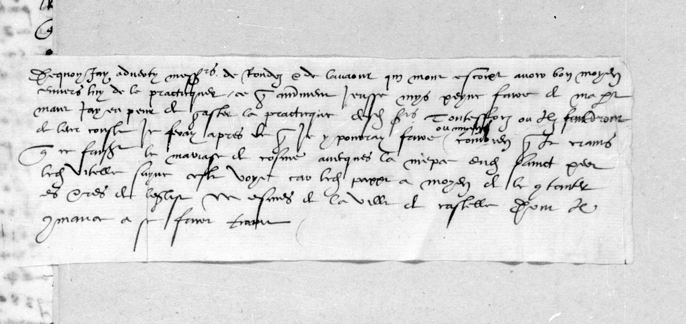

At a glanceKnown key applied · partial (95% of the cipher)
- The letters
- Eight ciphered despatches of 1536–37 to Anne de Montmorency from Charles Hémard de Denonville, bishop and from December 1536 cardinal of Mâcon, Francis I’s ambassador at Rome and Orvieto. DECODE listed the sender as unknown.
- Where
- BnF Français 3053, ff. 6, 16, 21, 32, 35, 40, 77, 85–86; DECODE R4233–R4248. Three are signed in clear “de Mascon”.
- The cipher
- The key Tomokiyo reconstructed from this volume and Lasry tabulated in 2023 for fr. 3071. The eighth record (f. 85) uses a second key, with the clerk’s clear decipherment on the next leaf.
- How it was read
- The key was applied and corrected, and the cipher re-transcribed sign by sign from the Gallica scans, then checked against every contemporary clear copy (difference 3–8%, mostly spelling). About 95% of the cipher letters are decrypted.
- What it says
- A running report on the general council and the Germans, Doria’s galleys and a suspected secret treaty, the Sienese exiles, the Farnese marriages and a conclave, and an estate in France offered to the Pope’s son.
- Still open
- About 5% of letters where signs 7, 4 and the O/U pair stay ambiguous, a few short runs in R4239, and some names. The f. 85 key could be tabulated from its decipherment on f. 86.
- Credit
- S. Tomokiyo reconstructed the cipher; G. Lasry tabulated the key (5 November 2023).
01Who was writing
DECODE gives the sixteen fr. 3053 records a recipient (Anne de Montmorency), a place (Rome, twice Orvieto) and no sender. Tomokiyo’s page on the French ciphers of Francis I names the volume for what it is: letters of 1535–37 from the bishop, later cardinal, of Mâcon, ambassador in Rome, to Montmorency. The records confirm it in clear. R4240 ends “A Orviette le deux[iesme] jour de septembre 1536”, signed “Vostre treshumble et tresobeissant serviteur Charles e. de Mascon”; R4247’s second letter is dated Orvieto, 1 September 1536 and signed the same way; R4239 ends “A Rome le vje jour d’apvril 1537”, signed “E. Card[ina]l de Mascon”. The promotion of 22 December 1536 falls between the two.
That also settles the key. Lasry’s table of 5 November 2023 for BnF fr. 3071 f. 9 is called “Mascon’s cipher” and identified with fr. 3053; the letter it decrypts, Rome, 11 April 1537, is five days younger than R4239, and it was decrypted first (18 September 2026, then filed with the other letters of catalogue item 6). Since 14 October 2026 it is on this page, with the other letters in the same key (section 08). The same key serves throughout, with the corrections set out below.
02The records
| DECODE | Leaf | Date, place | Cipher | Read here |
|---|---|---|---|---|
| R4233 | f. 6 | Rome, 26 Jan 1536 o.s. (= 1537) | ~70 lines, 9 passages | ~95 %, four glosses |
| R4234 | f. 16 | Rome, Feb 1536 o.s. (= 1537) | ~155 lines, nearly the whole letter | ~94 % |
| R4235 | f. 21 | Rome, 15 Feb 1536 o.s. (= 1537) | ~60 lines | ~96 %; a clear copy on P6 |
| R4238 | f. 32 | Rome, September 1536 | ~26 lines, 3 passages | ~94 % |
| R4239 | f. 35 | Rome, 6 Apr 1537 (two letters and a postscript) | ~160 lines | ~94 %; a clear copy of letter 2 on ff. 37r–v |
| R4240 | f. 40 | Orvieto, 2 Sept 1536 | 26 lines | ~98 %, two glosses |
| R4247 | f. 77 | Orvieto, 1 Sept 1536 (two letters) | ~57 + ~26 lines | ~98 % (both letters) |
| — | fr. 3071 ff. 9–10 | Rome, 11 Apr 1537 | about 45 lines mixed with clear text | all but short spots on f. 9r; f. 9v checked against the slip f. 9bis |
R4248 (f. 85), filed with these on DECODE, is in another cipher: its own page. The eight sibling records DECODE marks “Decrypted” (R4236, R4237, R4241–R4246) were opened but not deciphered here; R4245 is not a Montmorency letter at all but Selve and Rodez writing from Venice to Mâcon. DECODE’s “Decrypted” marking on this volume means that the cipher system is known: no transcription or plaintext file is attached to any of the sixteen records.
03Orvieto, 2 September 1536: the council and the Germans
The clearest of the letters, and the one with the best control: a contemporary hand glossed its last cipher lines in the margin, and the gloss and the decryption agree word for word. Mâcon has learned “de bon lieu” that Vergerio, nuncio under Clement VII and kept on by Paul III, carried word from Ferdinand to the Germans that the Pope and the College were content that, coming to the council, they might there « dire et faire ainsi qu’ils seroient inspirez par le Sainct Esperit »; on that assurance they resolved to attend, hoping for a decisive peace. But the Pope, judging this would be « la totale ruine de l’Eglise et sainct siege apostolique », has sent an auditor to summon them on the old law and custom instead. The Germans will not consent, Mâcon hears: they say the morals of pope, cardinals and bishops must be reformed, and that cannot be done without them. Then the clear text resumes, and the ambassador leaves his master to draw the conclusion: « Je vous laisse a penser sur cela, monseigneur, que ce sera de l’assemblee dudict concille. »
04Orvieto, September 1536: Doria’s galleys, and Milan
Andrea Doria had written to the conte dell’Anguillara to hold his galleys ready to join his own when sent for. Since Doria’s cousin Antonio had lately taken one of Anguillara’s fustas, and since Anguillara’s galleys are in the Pope’s service, Mâcon inferred a reconciliation made at the Pope’s command, and therefore a secret treaty with the Emperor — and put it to Paul III to his face. The Pope answered that Anguillara had indeed shown him the letter and that he marvelled at it, given the seizure of the fusta; that he did not think Doria content with him, having last year made him pay for three months for his three galleys and pay besides for the dispensation for his wife’s son to marry Antonio de Leyva’s second daughter; and that he was wholly ignorant of the cause. Mâcon replied that it could not be so without either a treaty with the Emperor, which he could not believe, or Anguillara having taken Doria’s service; the Pope said only that he knew nothing of it.
A second block of the same letter has a man sent by cardinal Ennio Filonardi of Veroli sound the ambassador out: could the King be brought to consent that the duchy of Milan pass, from the Emperor, to the son of Pier Luigi Farnese, or else to the young Sforza? Mâcon answered that neither the King nor Messeigneurs his sons would ever consent, and that as long as the crown of France reigned it would not suffer Milan to go into other hands than its own, being their true inheritance, so it was time lost for the Pope.
The second letter of 1 September 1536 (R4247) carries the count of Pitigliano’s advice: if the Emperor winters in Milan, strike at Naples, discontented and with no strong places but on the coast, and Sicily « ne fauldroit, avec peu d’ayde, de se revolter ».
05Rome, September 1536: the Sienese exiles, and a German with an offer
The bearer of the letter is sent by the Sienese fuorusciti to press Francis I to an enterprise against Siena. Mâcon sees no prospect in it, but did not stop the journey; his fear is that if the exiles are left to themselves they will go over to duke Alessandro de’ Medici, who is working to win them and so « s’impatroniser de l’estat du dict Siennes ». In the same letter a German at Rome, who says he is of King Ferdinand’s chamber and knows his secrets and wants to enter the King’s service, gives him letters for a lansquenet captain serving with count Wilhelm von Fürstenberg; Mâcon suggests having them translated in Paris before they are delivered.
06Rome, January and February 1537: marriages, a conclave, and a marriage used as currency
The January letter (R4233) runs over the pourparlers on marriages for Pier Luigi Farnese’s children, with cardinal Trivulzio’s view on how to stop them; the imperial ambassador and Venice; cardinals Trani, Cesi and Pisani. If the French cardinals were at Rome, Mâcon writes, they could steer a conclave should some mishap befall the Pope, who is « septuagenaire et plus » and failing — and meanwhile the King has done no favour to any of the Pope’s servants, so little goodwill can be expected from them. The Pope is sending cardinal Verulano’s secretary, « ung tres mauvais garson », into Switzerland, and means to take the legation of Parma and Piacenza from Salviati and give it to Verulano; behind it Mâcon suspects « quelque dessaing sur le duché de Millan ». In Piedmont the French captains are quarrelling among themselves, Guido Rangone among them, and the grain is nearly gone.
The letter of 15 February (R4235) holds the most direct statement in these letters, and it is one of the three checked word for word against a contemporary margin: « j’ay sceu de bon lieu que le dict [pape] vouloit entretenir le [roy] de mariage, et ayant de ce dudict seigneur bonne[s paroles], pour ce s’en prevaloir vers le dict [Empereur], pour parvenir a son intendit. » Keep it from everyone but the King, he adds, and keep the secret of the envoys’ charge — above all from the bishop of Verona, who passes for more devoted to the King than to the Emperor because he holds benefices of him.
The long February letter (R4234), almost wholly in cipher, is now decrypted throughout; its reading builds coherent sentences but reads at 94.1% of its words, under the 95% a complete reading needs. Its first pages turn on the same business: the Pope means to wrong someone through an intermediary and to bring the King to consent; cardinal Cesarini writes in the same sense; the bishop “de Lodes” — Lodi, then at Venice, whose see had passed to cardinal Simonetta (first taken here as Rodez) — holds that the King should never consent. Later pages report the marriages of Pier Luigi’s sons and the match of his house with Cosimo de’ Medici, “sworn several times over”, and then his arming: so many thousand escuz paid at his departure from Rome, two thousand more assigned at Parma and Piacenza, and a levy of six thousand Italians, five thousand Swiss, five hundred light horse and a hundred men-at-arms.
The rest of the letter, decrypted in a third pass, is the fullest account in the volume of the Farnese design on Milan. Pier Luigi’s horse under Giovanni Battista Savelli is to be ready this month and the foot by March; a Sienese gentleman in his service, questioned by Mâcon, says the troops are held in Parma and Piacenza « soubz umbre et couleur de vouloir garder » them, ready to garrison the towns and fortresses of the duchy of Milan if the Farnese marriages persuade the Emperor to sell it to Pier Luigi for a great sum; and the Pope, « qui est fin », will meanwhile make a show of keeping his neutrality. Mâcon weighs the report as possibly a plant by the Imperialist cardinals Veroli and “Cesane”, but the Pope’s own admissions give him « grant presumption »; and Contarini, « imperial pour la vie », has become the Pope’s familiar. The last cipher pages (one of them with a clear copy slipped in beside it) call messire Ambroise « corruptible plus que tous les hommes que je congnoisse », fear that the King’s new demand for three tenths on the French clergy, with the calumny of the Turk, will give the Pope his pretext to declare against him, and end on Andrea Doria, whose talk of going to Spain Mâcon takes for a feint.
The rest of the 15 February letter has the Pope angling for the fortresses of Milan and saying the idea came from the King’s side; Mâcon denies it, and counsels not driving the Pope to despair. A later passage, checked against a contemporary clear copy bound in beside it, sets out the French hope: « si le Roy est fort en Italie du costé de Lombardie, facillement ledict estat de Florence se pourra reduire en l’ancienne liberté et devotion dudict seigneur Roy ».
07Rome, 6 April 1537: an estate in France for the Pope’s son
The last and longest of the deciphered letters. Paul III talks to the ambassador of the marriage of his grandson Ottavio Farnese to the Emperor’s daughter Margaret — the match celebrated in November 1538 — and insists on his neutrality while pressing for peace. A contemporary hand glossed one line of the second letter, “quant au faict de florence”, and it opens a passage on the intrigues at Rome of the exile cardinals Salviati and Ridolfi in the months after the murder of duke Alessandro de’ Medici on 6 January 1537; the clear text around it has Mâcon setting a spy on Salviati’s household.
The main business of the letter is a bid for the Pope’s son. The Imperialists have offered Pier Luigi Farnese the investiture of Novara and are pressing him to take it; Mâcon counters with « quelque honneste estat en France », arguing from the Pope’s age and from Pier Luigi’s need of an « occasion d’en eschapper » once his father is dead. Pier Luigi answers neither yes nor no: he will take nothing without the Pope’s knowledge, and now the King’s. Around it the clear pages carry the news of the season: Bohemia’s grant to the King of the Romans against the Turk, a Lutheran diet in Saxony, and the death of the marquis of Saluzzo and count Philippe Torniello by arquebus shot before the castle of Carmagnola in Holy Week.
The pages decrypted in the third pass fill in the middle: the duke of Urbino tells Ridolfi’s envoy Albizzi of « estroicte praticque » between the Pope and the Emperor’s ministers, the Emperor wanting tenths and crusade money and a league of the Italian princes; Mâcon asks for a ciphered article he can show the Pope, « afin que si la raison et l’honnesteté ne le desmeuvent des dictes praticques, que la peur l’en peust divertir »; and Novara was offered to Pier Luigi at the Pope’s own command. Meeting him in the Pope’s antechamber, Mâcon is told, « sans accepter ne refuser », to write nothing of it to the King.
08Rome, 11 April 1537: Paul III and the Farnese marriage
The cardinal’s letter of 11 April 1537 is in another volume, BnF fr. 3071 (no. 4, ff. 9–10), and alternates clear and cipher. Its code numerals, which neither published table explains, were first identified from this letter: 20 is the Emperor (“se precipiter a la devotion du dict 20”, “se declarer partial de 20”), 30 the Pope (a contemporary hand has written “le dict pappe” above it on f. 9r), and 40 the King. What the cipher says:
- Pier Luigi Farnese, the Pope’s son, has sent men to take possession of a place decrypted as Novarre, and has approached the captain of a fortress to see whether he can be bought. (The Farnese were invested with Novara only in 1538, so the decryption of the name is one of the few that need checking.)
- The Pope has been offered the marriage of his granddaughter, Pier Luigi’s daughter Vittoria, with Cosimo de’ Medici. Mâcon thinks that if it goes the Pope’s way he will throw himself wholly to the Emperor. Through Latino Giovenale, the Pope sends word that if the marriages are refused “il aura occasion de se declarer partial de l’Empereur: ce qu’il vous plaira considerer”.
- “La confederation du Roy avec le Turc se verifie clerement.” If the Pope declares, it is “a craindre que les Venitiens le suivissent entierement”, since it is said that “le Roy avoit promis au Turc de faire passer grosse puissance en Italie, et qu’il s’amuse en Picardie”. In April 1537 François was campaigning at Hesdin.
- The French ambassadors at Venice, the bishops of Rodez and Lavaur, are trying to win over Alessandro Vitelli, who held the fortress of Florence and was angry with the Emperor. Mâcon holds back so as not to spoil their practique. He fears that if Cosimo marries the Pope’s granddaughter, Vitelli will follow, “car le dict pape a moyen de le contenter es terres de l’Eglise mesmes, de la ville de Castelle, dont il commance a se faire tirant”.

In the clear text, the duke of Mantua will not host the council summoned to Mantua for May 1537 without a paid guard. His brother, Cardinal Ercole Gonzaga, said so “en plain consistoire” (those three words are in cipher), and the Pope is thinking of moving the council. The dispatch goes by way of Venice to save the cost of a courier. In this letter a dotted r is a null in most places but must be r in partant, and the R sign is easily mistaken for the C sign. Still open: seven signs on f. 9r ll. 27–28, the word before puissance, a damaged name on l. 8, and the decryption Novarre; the clear text, in a fast secretary hand, is transcribed only loosely.
09Method and key
The system is homophonic substitution on digit-like graphic signs, one sign per letter, with special signs for doubled letters, two nulls, and exactly three code numbers: 20 = l’Empereur, 30 = pape, 40 = roy. No other number occurs in any of these letters, so no part of these letters is hidden behind an unknown nomenclator. What stays undecrypted does so because of the hand.
Work proceeded record by record from the DECODE page scans, cropping a line at a time at full resolution, writing each line as a string of ASCII aliases, decoding it with the
table built in targets/rome1536/macon_key.md (made for the fr. 3071 letter), and then interpreting the output as French. Six contemporary decipherments turned up in the volume, marginal on R4233, R4235
and R4240, interlinear on R4235, R4239 and R4240. Three of them agree with the decryption word for word; they are the control this write-up rests on. One of them
also corrected the published table: over the line ꭓ£+7G 8ꭓ ǂ3Δ4G 5o ǂ10D27o74g a contemporary wrote “quant au faict de florence”, which makes the big curly X
Q and U, not N as the working table had it, and shows the QUE group written three ways indifferently. Other values fixed here: the plain saltire is N as well as L;
4 is C, R and sometimes T; 7 is N, R and B; the triple bar on a stem is RR (proved by PIE-RR-E, three times); ω is PP and the hooked
ʃ is H, both in eschapper.

What limited the first passes to between 55 and 85 % was one family of signs. The barred crosses — ǂ, £, the long ƒ — stand for F,
P, O, U, V and D, and at first they seemed separable only by context. The limit was palaeographic; the key itself was known.
10Re-transcription by sign shape
After the first passes about a quarter of the letters were still doubtful, and nearly all the doubt sat on one family of barred signs. Cutting 1,262 glyphs out of the pages and
grouping them by shape showed why: what the transcribers had written as one sign ǂ is four or five different signs of the key: a long hooked f for O, a £ with a
looped foot for U, a two-barred stroke for P, a looped p-top for F, a barred q for M, each distinct once the line is seen at full size. Every record was then transcribed again,
sign by sign, from the BnF’s own full-resolution scans on Gallica, with each warped line straightened first, and decoded by the key and a sixteenth-century French language model.
Two more contemporary clear copies turned up in the process: ff. 37r–v, bound after R4239, are the clerk’s clear text of that record’s whole second letter, and Mâcon’s companion letter to the King of the same February day (BnF Dupuy 44, ff. 30–38) carries its own decipherment. Against every clear text the new readings differ by 3–8 % of letters, and most of that is spelling (pappe for pape, Loys for Luis). About 95 % of the cipher letters are now decrypted. The lines once called faded at the foot of R4247 are sharp on the Gallica scan: « il seroit icy fort difficille de recouvrer gens de cheval ne artillerie; bien trouverroit on tant de gens de pied, et bons, qu’on vouldroit, et beaucoup de gentilz homes forussiz, qui serviroient pour peu de chose. » R4234 now names Stefano Colonna to lead Pier Luigi’s foot and Giovanni Battista Savelli his horse; R4240 names the auditor sent to the Germans, “Vuorst”, apparently Peter van der Vorst.
11What remains
- About 5 % of the letters, inside lines that otherwise decrypt: runs where the signs 7 (N or B), 4 (C or R) or the O/U pair stay ambiguous and no clear copy covers them. The ink is legible; nothing on these pages is physically lost.
- A few short runs in R4239 (the postscript’s margin, whose contemporary gloss does not fit the signs under it) and some names: a Sienese gentleman, a count “Mer[?]le”, two German captains, “Cesane”, “Palmier”.
- The fr. 3071 letter: the spots listed in section 08. Its reading (
fr3071_no4/macon1537_reading.md, 23 October 2026), which follows the contemporary slip f. 9bis for f. 9v ll. 4–16, reads at 94.2% of its words; R4234 reads at 94.1% (both measured 24 October 2026, under 95%).
Full texts
The transcription and the decryption of every document on this page, so that the reading can be used and checked. Short files are shown here; all are in the repository.
R4233, fr. 3053 f. 6 ff., Rome, 26 Jan 1536 o.s. (= 1537)
The cardinal de Mâcon to Montmorency: pourparlers on marriages for Pier Luigi Farnese's children, the imperial ambassador and Venice; if the French cardinals were in Rome they could steer a conclave, the pope being 'septuagenaire et plus'. He reports the mission of cardinal Verulano's secretary to Switzerland and suspects 'quelque dessaing sur le duché de Millan'. Pass 5 (shape-true re-transcription, signs and reading line by line) supersedes the earlier R4233.md.
Transcription: R4233_pass5.md
Decryption: R4233_pass5.md
Decryption
# R4233 - Mâcon to Montmorency, Rome, 26 January 1536 (o.s., = 1537)
Dated at the end (P25): "Rome le xxvi^e jour de Janvier 1536"; signed (P26) "Car^al de Mascon".
Opens: sent by Jehan de la Plume, chevaucheur of the king's stable; Pope sending a gentleman with a letter to the
King on the affairs of Scotland; the Florentine exiles (Strozzi, Bendin), Gianpaolo [da Ceri], Venice, the
imperial ministers accusing the King of dealings with the Turk (Giorgio Gritti), Pisani/Trani/Cesi, Piedmont
supply and the Marquis del Vasto, the cardinal of Mantua, Verulan's mission to Switzerland, the legation of
Parma and Piacenza taken from Salviati.
Notation: aliases as in macon_key.md; my shorthand where the image forced it: `hT` = the curly-saltire T that looks
like a "b/ʚ"; `5o` = hooked "ʃo" sign (E); `n` = dotted small r (null); `E` = the "E" null. `?` = unsure glyph.
Readings marked [gl] rest on a contemporary interlinear/marginal decipherment that I checked against the
cipher; [?] = doubtful.
## Passage 1 (P3, 3 lines) - after "prendre le tout ... font"
Line 1 `A o 7 + H` -> IENAI -> "Je n'ay" (gloss above: "Je nay") [gl]
Line 2 `5 o 10 L V 4 o + V 6 o A g 7 o V 4 | L o h + 7 | P 3 V 10 o | X o C 4 A 7 q 4 9 7`
-> DELIVRE AV SEIGNEVR IEHAN PAVLE LES CINQ CEN(S) (gloss: "deliure au seigneur Jehan paule ... cinq cens escuz")
Line 3 `C o 6 4 U 6 E` -> S ESCUZ (E null)
Reading: **Je n'ay [encores] delivré au seigneur Jehan Paule les cinq cens escuz** [...] - clear resumes "que vous
m'avez escript". ~85% (the V/U glyph in "delivre/seigneur" is the ʌ-shaped bow-tie).
## Passage 2 (P3-P4, 6 lines) - after "Vous avez veu Monseigneur par la depesche ... le pourparle qui estoit"
L1 `E 5 b C | U 3 4 A + g o 6 | 5 b C | 5o 7 F + 7 6` -> (null) DES MARIAGES DES ENFANS
(U here is the M-sign ꝗ; gloss "des mariages des enfans") [gl]
L2 `5 U | C o A g 7 o m 4 | P A o E 9 X U H 6 n` -> DU SEIGNEUR PIERRE LOYS (gloss "seigneur Pierre Loys") [gl]
- clear: "C'est chose dont la imperiale ... en parolle"
L3 `X 9 5 A 4 G {30} : X o q U 9 10 | P D m 4 | 4 o x | G + 4 7 H | 3 5 b N D G A D 7`
-> LE DICT PAPE LEQUEL POUR [CE ?] ESTANT A DEVOTION (gloss "le dict pappe lequel pour estant a devotion") [gl]
L4 (after clear "Toutesfoys l'oppinion de gens de bon jugement est") `G n 2 0 f U 7 6 A 5o 4 + 7`
-> [QUE] CONSIDERAN(T) (the "20" here is not the code group: C+O written close; margin gloss "que considerant")
L5-L6 `h X + N A o A W o h 9 5 U 5 A 4 G {30} X H 4 U 7 6 o h G A 4 + L 3 9 + A 6 + L 7 6 P ...`
`10 N 6 G U 6 h o 7 ... 3 U 9 3 n A + 5o 5 b 6 3 F A W o X + G V 4 o h 9`
`... ET DU DICT PAPE ... FILLE ...` - margin gloss (partly cut): "... que considerant ... vouillez ... onc ...
[le] pappe negotiera ... Romana(?) ... plustost entendre au mariage de [la] fille naturelle ... de Medicis"
Reading: **... [que] considerant [...] et du dict pape [...], [il] entendra plustost au mariage de [la] fille
naturelle [...] de Medicis** (the marriage of Pier Luigi's children; the Pope rather inclined to a Medici match).
Letter-level confidence ~55%; the last two lines rest on the margin gloss.
## Passage 3 (P8-P9, 13 lines, with contemporary MARGINAL decipherment down the left of P8)
After "Et si le Roy vouloit":
`6 q P o 6 4 h | 9 4 F X o 6 q 3 4 A + g o C 5 b 6 5 A 4 G ʒ o 7 F + 7 6 5 U 5 A 4 h P A o E 9 ...`
-> EMPESCHER LES MARIAGES DES ENFANS DU [DICT] SEIGNEUR PIERRE LOYS ... (4 = R in "empescher/mariages")
Marginal gloss (legible part, P8 left margin): "empescher les mariages des enfans du s^r Pierre Loys, le cardinal
de Trivulce ... l'oppinion ... bon temir(?) ... propoz ... les pappe ... ... le contre ... [raiso]nable ... pourquoy
ne voulsist ... estimant les pappes ... par la ... plus ... en France ... Florence ... possible plus agreable".
Reading (from cipher + gloss): **empescher les mariages des enfans du seigneur Pierre Loys, le cardinal de Trivulce
[est] d'oppinion [...] bon [...] propoz; le pape [...] contre [...] raisonnable, pourquoy [il] ne voulsist [...],
estimant le pape [...] par la [...] plus [...] en France [...] Florence [...] possible plus agreable.**
~50%: I checked "empescher les mariages des enfans ... Pierre Loys" and "30"=pape glyph by glyph; the rest
follows the gloss, which is damaged.
## Passage 4 (P9-P10, 4 lines) - after "Et disent plus que je pense vraye imposture"
L1 `G q n o hT A o N | 4 6 5 b 4 D m 5o C | & X 3 U + m 4 | o 6 G D A o 7 hT | + W o ʒ 3 F 5o m + 7`
-> ... [RE]TIEN ... DE ... ET LA FAV[E]VR ... ESTOIENT ... (low)
L2 `G 5 U 5 A 4 hT | + q 7 3 S + 5o m 4 | X 9 A D m 4 | V U A 10 + F A U + 8 N | 5 A 4 G U 9 7 A 6 o`
-> [E]T DU DICT AMBASSADEUR LE IOUR QU'IL A [?] ... DICT VENISE
L3 `fe q 3 5 A 4 G | 4 D 7 6 A o | m n | 10 9 | 4 + 4 5 A 7 3 10 | P A 6 3 X`
-> ET [?] DICT CONSEIL, LE CARDINAL PISAN(I)
L4 (P9, after "les cardinaulx") `V G 4 + 7 H | 6 o | 4 9 C A 6 | fe | P A 6 3 7 | q 3 H 5o 7 G S 7 4 o |
V U A X ʒ | P o V m o 7 G` -> [DE] TRANI, [ET] CESIS ET PISAN MAIENT[?] ... QU'ILS PEUVENT - clear "maintenant"
Reading: **[...] et du dict ambassadeur le jour qu'il a [...] à Venise, et [au] dict conseil le cardinal Pisani
[...]; les cardinaulx de Trani, Cesis et Pisani [...] qu'ils peuvent maintenant.** ~55%.
## Passage 5 (P9-P10-P14, 13 lines) - after "Le Roy n'est pour faire chose qui soit indigne de son nom"
L1 `n G D m hT o 6 F D H 6 | X o 7 F q 7 4 o | 5 b 6 P + S A D 7 | X o ʒ | + m 4 F 7 G 4 3 A 4 o`
-> TOUTESFOIS L'E[?]CE DES PASSIONS LES [?] AU CONTRAIRE
L2 `D m 5 b 4 9 m 10 V | V U A D 7 G | 4 n + A 7 G o | 5 9 X + U o 4 m o 5 U G m n | V S C G hT 4 D F P 10 m 6 5 4 + 7 G`
-> OU DE CEULX QUI ONT CRAINTE DE LA GUERRE DU TUR[C], QU'EST TROP PLUS GRANT
L3 `fe 6 A U 7 o | P 3 n G A o | 5 b | q 9 S A o m 4 6 | X A o C 4 o F 9 n S 7 5 A S L q o C`
-> ET SI UNE PARTIE DE MESSIEURS LES REVERENDISSIMES
L4 `V U A 6 U 7 G | o X F 4 + 7 4 o | S 6 G D A o 7 hT | A 4 H A 10 ʒ H 6 o 4 V A`
-> QUI SONT [DE] FRANCE ESTOIENT ICI, ILS SERVI-
L5 `4 U A o 7 G | P D m 4 | 5 U 7 X o n 4 U o m 4 | 3 V | V + m G 4 o 6 | fe 5 + m`
-> -ROIENT POUR D'UN LE COEUR [?] AUTRES ET DAV-
L6 `3 7 G + A 5o | 6 A 10 + 5 U o 7 F A hT | V U o 10 4 m o | A 7 4 F 7 U o X A o 7 G`
-> -ANTAIGE. S'IL ADVENOIT QUELQUE INCONVENIENT
L7 `+ {30} | V U 9 5 A o U 7 S m F o A hT 9 . 10 X ʒ | + H 5 o 4 D A o 7 G | 5 4 + 7 5 o 9`
-> AU PAPE, QUE DIEU NE VUEILLE, ILS AIDEROIENT GRANDE-
L8 `hT 7 G | + F 3 A 4 o | 3 4 G o 7 5 4 o | X 9 C | + m G 4 o 6 n | 4 o V U 9 | + m G n`
-> -MENT A FAIRE ATTENDRE LES AUTRES, CE QUE AUTR-
L9 `9 q S 7 hT | A o F D H A 9 | P D S A 7 10 o | X 9 7 F 7 hT | F q 10 o 6 9 | P D 4 G o 7 A`
-> -EMENT IE [NE] VOIE POSSIBLE; LE[S] ENF[AN]T[S?] FEMMES[?] PORTEN[T]
L10 `o 7 q 3 A 6 | A 10 S 6 G | C o P G V 3 5 o 7 + A 4 o | fe F 10 V 6 | fe 7 o hT F + m`
-> -[T] MAIS IL EST SEPTUAGENAIRE ET PLUS, ET NE [PEULT] PAU-
L11 (P14) `E X G o 6 | P S 4 o n | 5 3 U + 7 G + A 5o | V U o 5 U 7 5 hT F q 10 V A o A 10 | fe 4 + 5 U 4 n`
-> [?]TES PASSER DAVANTAIGE, QUE D'UN [?] IL [EST] ET CADUC
Reading: **Toutesfois l'e[?]ce des passions, les [...] au contraire, ou de ceulx qui ont crainte de la guerre du
Turc, qu'est trop plus grant. Et si une partie de messieurs les reverendissimes qui sont de France estoient ici,
ils serviroient pour d'un le coeur [...] autres et davantaige. S'il advenoit quelque inconvenient au pape, que Dieu
ne vueille, ils aideroient grandement à faire attendre les autres, ce que autrement je [ne] voie possible; [...]
mais il est septuagenaire et plus, et ne [peult] passer davantaige, [...] il [est] caduc.**
~65% (content: French cardinals should come to Rome for a possible conclave; the Pope is over seventy).
## Passage 6 (P14, 5 lines, contemporary MARGINAL gloss left) - after "luy donne pension davantaige"
`{40} n 7 + o 7 4 U 4 9 C | F 3 A 4 G | 7 F 10 | 7 A o X | o X | 3 + m 4 F 7 5 5o 6 | C 9 4 m A G o m 4 6 |
5 U 5 A 4 hT {30} | P + 4 4 m D H | A o | U D m C | 10 + A S o | 3 P o 7 6 9 4 | V U o W 9 | F + m o m 4 |
D 7 F o m 10 G hT | A o 4 o n | 5 S m 10 n | P D m n 6 S C | + F F + A 4 o 6 n`
Margin gloss: "le Roy n'a encores faict nul bien a aulcuns des serviteurs du pappe, [par quoy] ... a pensé ...
[quelle faveur on en] fauldra ... pour ses affaires".
Reading: **Le Roy n'a encores faict nul bien à aucuns des serviteurs du dict pape; parquoy je vous laisse à penser
quelle faveur on en peult [attendre ?] [...] pour ses affaires.** ~65% ("40" = roy confirmed by gloss).
## Passage 7 (P14-P15, 9 lines, INTERLINEAR gloss over the first two) - after "C'est chose certaine que"
L1 `{30} n o 7 U D H o | 9 7 | 5 m H 6 o | X 9 | C S + 4 o G + V 4 9 | 5 U | 4 + 4 5 A 7 3 10 | U 9 4 V F 10 + 7`
-> PAPE ENVOYE EN SUISSE LE SECRETAIRE DU CARDINAL VERULAN [gl "le pappe envoye en Suisse ... cardinal Verulan"]
L2 `V U A o C G V 7 5 | G n o 6 q 3 m V + A 6 | 5 + 4 6 D 7 n` -> QUI EST UNG TRES MAUVAIS GARSON [gl]
- clear "Et n'ay pas encores ouvert ... escript au Roy ... dernière depesche"
L3 `7 A o 7 q + 5 A 4 G X S 5 A 4 G 6 A o m 4 S o n` -> RIEN M'A DICT LE DICT SIEUR ...
L4 `+ m V A 4 o 7 G 9 X 5 U V m o X 9 5 A 4 G {30} U o m 10 G D 6 G o n X + 10 9`
-> [?] ... LE DICT PAPE VOULT OSTER LA LE-
L5 `5 + G A D 7 5 S P + 4 9 o fe 5 o P 10 + A 6 3 7 4 o 3 U 4 + n 5 A 7 + 10`
-> -GATION DE PARME ET DE PLAISANCE AU CARDINAL
L6 `6 3 10 V A + G H fe X 3 7 3 A D 9 4 + V 5 A 4 G 4 3 n 5 A 7 + 10 U 9 4 V 10`
-> SALVIATI, ET LA DONNER AU DICT CARDINAL VERUL-
L7 `3 7 | V U A q o | F 3 A 4 G | 5 U m 7 G o | n V U A 10 3 A 4 G | V U o 10 4 m S`
-> -AN, QUI ME FAICT DOUBTE QU'IL AIT QUELQUE
L8 `5 o S + A 7 5 | 6 m 4 | X o | 5 U 4 S o | 5 9 q A W + 7 n E` -> DESSAING SUR LE DUCHE DE MILLAN
Reading: **Le pape envoye en Suisse le secretaire du cardinal Verulan, qui est ung tres mauvais garson. [...] rien
m'a dict le dict sieur [...]; le dict pape voult oster la legation de Parme et de Plaisance au cardinal Salviati et
la donner au dict cardinal Verulan, qui me faict doubte qu'il ait quelque dessaing sur le duché de Millan.** ~75%
(clear P13 slip confirms: the pope means to take the legation of Parma and Piacenza from Salviati).
## Passage 8 (P18-P19-P21, 11 lines, contemporary MARGINAL gloss) - after "capitaines avoient envoyé a Gennes et autres lieux maritimes"
L1 `N n 7 o q 9 4 m o A W 9 N 6 o | V U + 7 G A hT o | 5 S | 6 3 4 ʒ | 5 o 7 10 9 5`
-> UNE MERVEILLEUSE QUANTITE DE SACZ DE BLED (N used for U) - clear "de sorte qu'il n'y avoit"
L2 `V U + 6 A | F 10 N 6 | 5 o 7 10 o 5 | 7 o N A m 4 o 6 | + N 5 A 4 G | P A H 6 | 5 o P N A o 5 q D 7 G`
-> QUASI PLUS DE BLED [QUE] ?VIVRES AU DICT PAYS DE PIEDMONT (gloss "quasi ... livre de bled ... au pays de Piedmont")
L3 (after "Et dient plus que les capitaines noz estoient") `7 o 7 5 9 ʒ X 9 | C N 7 5 6 | 4 F 7 hT n 9 | 10 o C | + N G 4 o 6 |
fe q o 6 5 9 C | V U A o | H + N D A 5 | 5 A 6 o hT G A D 7`
-> [EN] BENDES(?) LES UNGS CONTRE LES AUTRES ET MESMES QUI E[STOIENT ...] DISSENTION
L4 `q D 4 G | V o W 9 | 7 7 hT n 9 | X o 4 F 7 G o hT m H | fe X 9 6 A o | N 4 4 + 5 7 A hT N A D 4 | o G o W 9 ...`
-> MORT(?) QUELLE ENTRE LE CONTE GUY(?) ET LE SIEUR [?] ... TELLE
L5-L7 (P19 lower lines, P21 top) `V U 9 F D m n 6 o 4 m H 7 o n X U 7 5 10 + N G 4 o X U 7 5 5o m 10 V F ...`
`G P D m n 6 o 4 n 9 G S q 9 7 hT + w S X 10 9 4 10 9 C o 7 hT 9 q H 6 X 9 C A | o 10 ʒ ...`
-> ... POUR SE CONTENIR L'UN L'AUTRE ... TELLEMENT QUE ... RAGNY(?) ... SE DONNER ...
(margin gloss, left of P19: "une merveilleuse quantité de sacz de bled de sorte qu'il n'y avoit quasi livre de
bled ... au pays de Piedmont ... plus ... estoient en ... les ungs contre les autres ... mesmes ... en dissention
... [querelle ?] entre le conte Guy ... Rangon(?) ... se donner ... telle [...] qui ... [ca]pitaines ... l'ung ...
pour ... soudainement appeller les ennemys ... [es]pargnez")
L8 (P21, after "Et disent les leurs sont bien advertiz") `n 5 o 6 A 4 hT ʒ 5 o 6 D 4 5 | C fe V o X 9 4 n D H`
-> DES DICTS DESORDRES ET QUE LE ROY (gloss "des desordres ... de le roy") [gl]
L9 (P21, after "Icelluy marquis sachant") `X 9 5 S 6 D 4 5 n 9 V U A o hT G | n 4 7 hT n 9 7 D C +` ... `ʒ 5 + 7 C`
-> LES DESORDRES QUI ESTOIENT ENTRE NOZ [GE]NS (gloss "les desordres qui estoient entre noz gens") [gl]
Reading: **[...] une merveilleuse quantité de sacz de bled, de sorte qu'il n'y avoit quasi [plus] de bled [ni]
vivres au dict pays de Piedmont. Et dient plus que les capitaines noz estoient en [bandes], les ungs contre les
autres, et mesmes [...] en dissention, [querelle] entre le conte Guy [Rangone] et le sieur [...] [...].
[...] des dicts desordres et que le Roy [...]. Icelluy marquis sachant les desordres qui estoient entre noz gens
[...].** ~50% (middle lines mostly from the damaged margin gloss).
## Passage 9 (P22, four short cipher groups with INTERLINEAR gloss) - names
- `Q F 4 o n 9 5o q D 7 6 A o m 4 X o 4 + 4 n 5 A 7 + 10 5 o 4 9 6 A 6` -> [FAVEUR] DE MONSIEUR LE CARDINAL CESIS [gl "... de mons. le cardinal Cesis"]
- `X 9 5 A 4 G 4 + n 5 A 7 | + 10 5 9 4 o 6 A 6 n E` -> LE DICT CARDINAL DE CESIS [gl]
- `G q D 7 5 A o m 4 X o 4 + 4 5 A 7 + 10 | G 4 + 7 A ... | H X D m H 6 o n E` -> MONSIEUR LE CARDINAL TRANI ... [gl "monsieur le cardinal Trani"]
- `6 7 4 F 7 6 A C G D A 4 o fe 8 A W o m 4 6` -> EN CONSISTOIRE ET AILLEURS [gl "en consistoire ... ailleurs"]
## Overall confidence
~60% of cipher letters read with confidence; about half the passages checked against the contemporary
decipherment written in the margins/interlinear of this letter.
## Key notes
- `4` stands for both C and R throughout (the compact R "27" is indistinguishable at this resolution).
- The curly-saltire T is written like a "b"/"ʚ" (my `hT`); in "empescher" a similar-looking sign is H.
- `ǂ` (cross with two bars) serves both F and P; `£` serves U and, in a few words (Loys, sont), O - probably
confusion with the long ƒ (O) in my reading rather than a new value.
- The curly "N" (ꭓ) is used for U in "merveilleuse / ungs / audict" (P19) - either a scribal U variant or my
confusion with the bow-tie V. Flagged.
- `S` (6 with a vertical) serves SS (ambassadeur, messieurs, dessaing) and once E.
- `20` in P4 L4 is not the Emperor group: context requires "co(nsiderant)".
- Code groups met: 30 = pape (x5), 40 = roy (P14, confirmed by margin gloss). No new numbers.Reading
<!-- Reading of R4233 (Claude Opus 5.5, 23 Oct 2026): the "Running reading" section of pass5/R4233_pass5.md, copied verbatim (the pass-5 shape-true re-transcription decoded with the Mâcon key, every line read on the image; see that file for the signs and the line-by-line record). Cipher in plain type; clear passages of the letter are summarised or quoted in *italics* [ ] there and here, so this is the cipher with its clear context in part, not the whole letter. [?] / [...] = not read; (?) = doubtful; [word] = supplied in the pass-5 file. --> # R4233, Mâcon to Montmorency, Rome, 26 January 1536 o.s. (= 1537), BnF fr. 3053 f. 6 ff.: reading ## Reading *[P3 clear: Jehan de la Plume ... le seigneur Jehan Paule ...]* Je n'ay delivré au seigneur Jehan Paule les cinq cens escuz *[que vous m'avez escript]*. *[Vous avez veu ... le pourparle qui estoit]* des mariages des enfans du seigneur Pierre Lois. *[C'est chose dont la imperiale ... en parolle]* Le dict pape, lequel pour certain est a devotion *[... Toutesfoys l'oppinion de gens de bon jugement est]* que l'Empereur, considerant la vieillesse du dict pape, n'y consentira jamais, ains plustost entendra au mariage de sa fille naturelle avecques Cosme de Medicis. *[... Et si le Roy vouloit]* empescher les mariages des dictz enfans du dict Pierre Lois, [le cardinal de Trivulce] est d'oppinion qu'il seroit bon tenir in propoz le dict pape touchant celluy de monsieur le conte de Mer[?]le, encores qu'on ne voulsist rien faire, estimant que le dict pape, congnoisant par la raison [...] plus seurement mise en France que au dict Florence, l'auroit possible plus agreable. *[Et disent plus que je pense vraye imposture]* que messieurs de Rodes et Lavaur estoient allez au devant du dict ambassadeur le jour qu'il arriva au dict Venise, et m'a dict [mon]sieur le cardinal Pisani [...]; *[les cardinaulx]* Trani, Cesis et Pisani maintiennent(?) ce qu'ilz peuvent. *[Le Roy n'est pour faire chose qui soit indigne de son nom]* Toutesfois le [...] des passions [...] au contraire, ou de ceulx qui ont crainte de la venue du Turc, qu'est trop plus grant. Et si une partie de messieurs les reverendissimes qui sont en France estoient ici, ilz serviroient pour donner coeur aux autres; et davantaige, s'il advenoit quelque inconvenient au pape, que Dieu ne vueille, ilz aideroient grandement a faire actendre les autres, ce que autrement je ne voie possible. Le bonhomme se porte bien, mais il est septuagenaire et plus, et ne peult esperer davantaige que d'un homme vieil et caduc. *[... luy donne pension davantaige]* Le Roy n'a encores faict nul bien a aucuns des serviteurs du dict pape; parquoy je vous laisse a penser quelle faveur on peult tirer d'eulx pour ses affaires. *[C'est chose certaine que]* le pape envoie en Suisse le secretaire du cardinal Verulan, qui est ung tres mauvais garson. *[...]* Rien m'a dict le dict sieur [...]; [...] le dict pape veult oster la legation de Parme et de Plaisance au cardinal Salviati, et la bailler au dict cardinal Verulan, qui me faict doubter qu'il ait quelque dessaing sur le duché de Millan. *[... capitaines avoient envoyé a Gennes et autres lieux maritimes]* une merveilleuse quantité de sacz de bled, *[de sorte qu'il n'y avoit]* quasi plus de bled ne vivres au dict pays de Piedmont. *[Et dient plus que les capitaines noz estoient]* bendez les ungs contre les autres, et mesmes qu'il y avoit dissention mortelle entre le conte Gui et le sieur Ragni, [...] que pour se ruiner l'ung l'autre, l'ung d'eulx [...] appeller les ennemis [...]. *[Et disent les leurs sont bien advertiz]* des dictz desordres, et je le croi. *[... Icelluy marquis sachant]* les desordres qui estoient entre noz gens [...]. *[P22: ... faveur]* de monsieur le cardinal de Cesis ... le dict cardinal de Cesis ... monsieur le cardinal Trani [...] ... en consistoire et ailleurs.
Translation
<!-- English translation of pass5/R4233_reading.md (Claude Opus 5.5, 23 Oct 2026): the pass-5 running reading of R4233, cipher in plain type, the clear passages summarised or quoted in *italics* [ ] as there. Same holes: [...] and [?] not read, (?) doubtful. "The said Pope" is Paul III; Pierre Lois = Pier Luigi Farnese. --> # R4233, Mâcon to Montmorency, Rome, 26 January 1536 o.s. (= 1537), BnF fr. 3053 f. 6 ff.: English translation *[P3 clear: Jehan de la Plume ... the lord Jehan Paule ...]* I have not delivered to the lord Jehan Paule the five hundred écus *[that you wrote to me of]*. *[You have seen ... the talks that there were]* about the marriages of the children of the lord Pierre Lois. *[It is a thing which the Imperial ... in words]* The said Pope, who is certainly devoted *[... Nevertheless the opinion of people of good judgement is]* that the Emperor, considering the said Pope's old age, will never consent to it, but will rather listen to the marriage of his natural daughter with Cosimo de' Medici. *[... And if the King wished]* to prevent the marriages of the said children of the said Pierre Lois, [the Cardinal of Trivulzio] is of the opinion that it would be good to keep the said Pope in talk about that of Monsieur the Count of Mer[?]le, even if one did not mean to do anything, judging that the said Pope, knowing by reason [...] more surely placed in France than in the said Florence, would perhaps find it more agreeable. *[And they say further, what I think a true imposture]* that Messieurs of Rodez and Lavaur had gone to meet the said ambassador on the day he arrived in the said Venice; and Monsieur the Cardinal Pisani told me [...]; *[the Cardinals]* Trani, Cesi and Pisani maintain(?) what they can. *[The King is not one to do anything unworthy of his name]* Nevertheless the [...] of the passions [...] to the contrary, or of those who fear the coming of the Turk, which is far greater. And if a part of the Most Reverend lords who are in France were here, they would serve to give heart to the others; and moreover, if any mishap befell the Pope, which God forbid, they would help greatly to make the others wait, which otherwise I do not see as possible. The good man is well, but he is seventy and more, and one can hope for no more than from an old and decrepit man. *[... gives him a further pension]* The King has not yet done any favour to any of the said Pope's servants; so I leave you to think what favour can be drawn from them for his affairs. *[It is a certain thing that]* the Pope is sending to Switzerland the secretary of Cardinal Verulano, who is a very bad fellow. *[...]* The said lord told me nothing [...]; [...] the said Pope wants to take the legation of Parma and Piacenza from Cardinal Salviati and give it to the said Cardinal Verulano, which makes me suspect that he has some design on the Duchy of Milan. *[... captains had sent to Genoa and other places on the sea]* a marvellous quantity of sacks of wheat, *[so that there was]* hardly any more wheat or victuals in the said country of Piedmont. *[And they say further that our captains were]* banded one against another, and even that there was mortal dissension between Count Guido and the sieur Ragni, [...] that to ruin each other, one of them [...] call in the enemies [...]. *[And they say theirs are well informed]* of the said disorders, and I believe it. *[... The said Marquis knowing]* the disorders there were among our people [...]. *[P22: ... favour]* of Monsieur the Cardinal Cesi ... the said Cardinal Cesi ... Monsieur the Cardinal Trani [...] ... in consistory and elsewhere.
R4234, fr. 3053 ff. 16r-18v, Rome, Feb 1536 o.s. (= 1537) read in part
Soundings on a settlement, the bishop of Lodi's view that the King should never consent, cardinal Pisani's report, the marriages of Pier Luigi Farnese's children and the match with Cosimo de' Medici, and the arming of Pier Luigi's army (Stefano Colonna for the foot, Giovanni Battista Savelli for the horse). Pass 5 supersedes the earlier pass files, also listed.
Builds coherent sentences, but under the read bar of 95% of words read as sense (94% here); the holes are marked in the reading.
Transcription: R4234_pass5.md
Transcription
# id<TAB>signs ({a|b} = alternatives; ~ = struck-through sign, dropped)
R4234_P16_L4 I nE {Y|A+|n*} I# | Gh R27 A+ N7 Tg | Pc Um R27 | Q Up Eo
R4234_P16_L5 Lx E9 Sinf | N7 Of Um Uv Eo LL E9 Sinf | Q Up I | Of N7 Tg | Eo Sinf Tx E9 | Eo S6 C4 R27 I Pc Tg Eo Sinf | Pn A3 Rr | D5 Eo C4 A+
R4234_P16_L6 Q Up E9 | 40 | A3 | D5 Eo | N7 Of Um Uv Eo A+ Up | D5 E9 N7 ~ ~ ~ ~ ~ ~ | Mq A3 N7 D5 Eo | A+ Up | C4 L10 Eo Rr Gh Eo | D5 Eb S6 Of N7
R4234_P16_L7 Rr Of I# A8 Um Mq Eo | Tg R27 Of I# S6 | D5 Eo C4 I Mq Eo Sinf | Up E9 N7 {Up|F} Eo Sinf | A+ | L10 A3 | N7 Of Tg I C4 Eo | D5 Eo
R4234_P16_L8 S6 A+ Sinf A3 I N7 C4 Tg Eo Tx E9 | ET | I {Up|Of} I N7 C4 Tg | Lx Eo S6 | Tg Rr OD I# S6 | A+ Um Tg R27 Eo S6 | Lx E9 Up Eo E9 S6
R4234_P16_L9 Lx A+ N7 Nx Eo Eb | Pc A+ {S6|Tg} Eo E9 | S6 A+ N7 | D5 L10 Of C4 Tg Rr Of I# | D5 I C4 Eo LL E9 | S6 A+ Sinf A3 I N7 A+ Tg Eo Tx E9
R4234_P16_L10 ET | A+ Pc S6 I | L10 A+ | C4 A3 L10 Up {Mq|E9} N7 I# Eo | D5 Up | Tg Um R27 C4 | S6 Of I Eo N7 Tg | Pc OD Um R27 | Lx Up I#
R4234_P16_L11 F A+ I R27 Eo | Pc R27 A+ N7 D5 R27 Eo | Lx OD C4 A3 S6 I OD N7 | D5 Eo | Sinf E9 | D5 Eo C4 L10 A3 Rr E9 R27 | C4 Of N7 Tg R27 E9
R4234_P16_L12 Lx Eo D5 I C4 Tg | S6 Eo I Gh N7 Eo Um R27 | {Of|Up} Um I L10 | Tg Rr OD Um Up Eo Pn Of I Tg | Lx E9 Up Eo N7 Tg
R4234_P16_L13 {A+|Pn} Gh R27 Eo | Eb N7 Up E9 Rr S6 | 20 | Q Um A+ N7 Tg | A+ Um X | C4 H Of S6 Eo Sinf | D5 Eo SS Up S6 D5 I C4 Tg E9
R4234_P16_L14 Sinf I Eo | Up Of Um S6 | A+ I# | N7 I Eo N7 | Up Of Um Lx Up | Eo S6 C4 R27 I Pn R27 Eo | Tg Of Um Tx | C4 Eo | Q Up E9
R4234_P16_L19 Up N7 Eo | L10 E9 C4 Tg R27 Eo | E9 N7 | C4 H I F R27 Eo | Q Up E9 | I Eo | Pc Um I# S6 Eo | Mq Of N7 D5 Tg Rr E9 Rr
R4234_P16_L20 A+ Um Rr | D5 Eo SS Um S6 D5 I C4 Tg {S6|n*} | C4 E9 Sinf A+ N7 Eo | D5 Eo Lx Of D5 Eo S6 | ET | S6 Eo N7 Of I# S6 | C4 Of Mq
R4234_P19_C1 Lx E9 D5 I C4 Tg | Rr D5 Of R27 I# Eo | Eb S6 Tg | A+ D5 Up Eo R27 Tg I#
R4234_P19_C2 Tx A+ N7 Tx | D5 Eo Mq A3 Rr S6 Eo I LL E9 | Q Up Eo | D5 Eo Lx I# Of N7 | Q Up I L10 E9 Sinf Tg | Of I Tx A+ RR I Up E9
R4234_P19_C5 A+ Lx A3 | C4 {Of|Pn} Um R27 Tg | Pc A3 Rr | Lx Eo | N7 A+ R27 Of N7 | D5 Eo | S6 A3 I N7 C4 Tg | N7 L10 A3 N7 C4 A+ Rr Tg | ET
R4234_P19_C6 Q Up E9 | Lx Eo | D5 I C4 Tg | D5 Of Rr I# Eo | Lx E9 Sinf | Pc Eo Rr E9 | Pc R27 A+ N7 D5 Rr Eo | A+ Up | R27 Eo Tg Of Um N7
R4234_P20_C7 F A+ I Gh N7 Eo | Uv OD Um Lx Of I R27
R4234_P20_C8 LL E9 C4 Eo | N7 E9 | Sinf Pc A+ I Gh N7 Eo Rr
R4235_P8_L1 S6 Rr I | 40 | Eo S6 Tg | F Of R27 Tx | Eo N7 | I Tg A+ Lx I Eo | D5 Up | C4 Of S6 Tx Eo | D5 E9 | Lx Of Mq N7 A+ {N7|R27} D5 I Eo | {F|Pn} A3 C4 I
R4235_P8_L2 LL Eo Mq E9 N7 Tg | Lx Eo | D5 I C4 Tx | Eo Sinf Tg A+ Tx | {Q|n*} D5 Eo | F L10 OD R27 Eo N7 C4 Eo | S6 E9 | Pc OD Um RR A+ Rr | Eo D5 Up
R4235_P8_L3 I# R27 Eo | E9 N7 | Lx A+ N7 C4 I Eo N7 Nx Eo | Lx I N7 Eo {C4|R27} Tx Eo | ET | D5 Eo Up {Of|Up} Tg I OD N7 | D5 Up D5 I C4 Tx | S6 Eo I Gh
R4235_P8_L4 N7 Eo {Uv|Um} R27 | 40 | C4 A+ R27 | Eo S6 Tg A3 N7 Tx | Eo Mq Pc E9 C4 H Eo | 20 | D5 Up | C4 Of S6 Tx Eo | D5 E9 | Lx A+ D5 I C4 Tx Eo
R4240_L1 Rr nE Uv E9 R27 Gh Eb R27 I ? Um Sinf | Q Up I
R4240_L2 Eo S6 Tg OD I Tx | B Uv Lx C4 Eo | D5 Up F Eo Uv | Pc A3 Pn Eo | C4 L10 E9 Mq Eo Lx Tg | ET | D5 Eo Pc Uv I# S6 | C4 OD LxDecryption: R4234_pass5.md
Decryption: R4234.md
Decryption
# R4234 pass 3: P8, P9, P11, P12 (continues P6, which ended "desdictz gens de cheval Jehan [Ba]ptiste")
Aliases as in R4234.md second pass. Crops: work_4234/p3_P<n>_L<nn>{a,b}.png.
## P8
L1 `∞ + ᵐ₅ o ☐ g | X o 6 Δ £ g ☐ b 6 | g 9 7 g | 5 o | 4 ǂ o ᵐ₅ + 10 | 5 D Δ 7 £ o 7 G | b 6`
-> SAVELLE LESQUELLES GEN(S) DE CHEVAL DOIBVENT ES-
L2 `G ·r· g | ǂ 3 Δ 4 G D | ∩ D ᵐ₅ 27 | G ǂ ᵐ₅ Ӿ | 4 o q D # 6 | & | 4 o ᵐ₅ 10 Ω | 5 o`
-> -TRE FAICT(Z?) POUR TOUT CE MOIS ET CEULX DE
L3 `∩ Δ o 5 | ǂ D ᵐ₅ ·r· | G ǂ ᵐ₅ Ӿ | X o q D # 6 | 5 o | q + 27 6 | ∩ 27 D 4 ϑ + Δ 7`
-> PIED POUR TOUT LE MOIS DE MARS PROCHAIN (·r· = R in POUR)
L4 `·r· X + ᵐ₅ G 4 o | 6 g ·r· ǂ Δ G o ᵐ₅ ·r· | c~ | 5 ǂ 5 Δ 4 Ӿ | ǂ Δ o Ξ g | X ǂ # 6`
-> (null) LAUTRE SERVITEUR (null) DUDICT PIERRE LUIS (4 = R; ǂ = V, U, P)
L5 `Δ £ Δ o 6 G | ⋈ 7 | 5 ·r· g o 7 G Δ 1 ƀ ǂ q 1 o | ∞ g 7 ǂ # 6 | 7 ǂ 27 ᵐ₅ b 6 # | 5 o`
-> QUI EST UN G(r)ENTILHOMME SENOIS(?) BORGUESI(?) DE
L6 `6 o 7 g ∞ | & | ·r·` + CLEAR "... j'ay tousjours trouvé affectionné au service du Roy et"
-> SENES ET ... (Borghese of Siena?)
L7 CLEAR "desirant y entrer, m'a confirmé ce que dessus. Et l'interrogeant s'il sçavoit"
L8 CLEAR "point la raison pour laquelle" + `6 ·r· o | ǂ + Δ 6 ǂ λ o 7 Ӿ | X o 6 5 Δ 4 G Ƨ`
-> SE FAISOIENT LESDICTZ
L9 `g o 7 6 | 5 o | g ᵐ₅ o Ξ g | q 3 5 Δ 4 G | Δ £ o | 4 9 ∞ G | ǂ Δ Ӿ(?) | o 7 | b 6 ∩`
-> GENS DE GUERRE, MA DICT QUE CEST [?] EN ESP-
L10 `b 27 + 7 4 o | Δ £ g | X o ∞ | q + 27 Δ 3 g o 6 | g o b ᵐ₅ 6 5 Δ 4 G Ƨ | 6 o`
-> -ERANCE QUE LES MARIAGES DE[S] EUS(?) DICTZ SE
L11 `ǂ o 27 ǂ Δ o 7 Ӿ | & | Δ £ o | ∩ + 27 4 o | 4 o q ǂ # o 7 | X o 5 Δ 4 G | {30} | ∩ D ᵐ₅`
-> [?]VIENT(?) ET QUE PAR CE MOIEN LE DICT <PAPE> POU-
L12 `Ξ D Δ Ӿ | ∩ o 27 6 ᵐ₅ 3 5 o ·r· | {20} | 5 b | X ǂ # | 7 + Δ ☐ g 27 | X o | 5 £ 4 ǂ o`
-> -RROIT PERSUADER <EMPEREUR> DE LUI BAILLER LE DUCHE
L13 `5 9 | q Δ ☐ + 7 | q D # o 7 7 + 7 G | Δ £ o 10 | ƕ(?) | ᵐ₅ o 7 ǂ 7 Ӿ o | 6 ǂ q 1 o`
-> DE MILLAN, MOIENNANT QUIL [?] U(N)E BONNE SOMME
L14 `5 + 27 g o 7 Ӿ | & | Δ £ o | ∞ ǂ ᵐ₅ 7 D | ǂ q 7 27 o | & | 4 D ᵐ₅ X o ǂ 27 | 5 o`
-> DARGENT, ET QUE SOUBZ UMBRE ET COULEUR DE (D = Z, as in FAICTZ L2)
L15 `⋈ D ᵐ₅ X ǂ Δ 27 | g ʒ ·r· 5 o ·r· | X 9 ∞ 5 Δ 4 G Ƨ | ∩ ʒ ·r· q o | & | ǂ 10 ʒ Δ 6 3 7`
-> VOULOIR GARDER LESDICTZ PARME ET PLAISAN-
L16 `4 o | 6 + ∞ 3 Δ 7 4 G o Ӿ o | ǂ 9 27 ǂ Δ Ӿ | G o 7 Δ ·r· | + ᵐ₅ 5 Δ 4 G Ƨ`
-> -CE, SA SAINCTETE PERMIT(?) TENIR AUDICTZ
L17 `X Δ o ᵐ₅ ·r· | X g 6 5 Δ 4 G o ∞ | g b 7 6 | G ǂ ᵐ₅ b | ∩ 27 o 6 G g Ƨ | ∩ D ᵐ₅ ·r·`
-> LIEU(X) LESDICTES GENS TOUS(?) PRESTEZ POUR
L18 `q o 4 G 4 o | 5 3 7 6 | X o ∞ | ǂ Δ ☐ g ∞ | & | ∩ 10 3 4 o 6 | ǂ ǂ 27 G o ∞`
-> ME(C)TRE DANS LES VILLES ET PLACES FORTES
## P9 (L1-2 repeat P8 L17-18)
L3 `5 ǂ 5 ᵐ₅ 4 ǂ o | 5 b | q Δ ☐ + 7 | + ǂ 4 3 6 | 5 o ∞ ᵐ₅ 6 5 Δ 4 G | + Δ £ D #`
-> DUDUCHE DE MILLAN AU CAS DESUSDICT; A QUOI
L4 `Δ 10 | 5 Δ 4 G | Δ £ g | X o 5 Δ 4 G | ∩ Δ o Ξ 9 | X ǂ # 6 | + | 5 27 + 7 5 o | b 6`
-> IL DICT QUE LEDICT PIERRE LUIS A GRANDE ES- (5 = G in GRANDE)
L5 `∩ o 27 + 7 4 o | q 9 ∞ q o 6 | + ⋈ 4 3 6 | Δ £ 4 o | 6 9 | G 4 D ᵐ₅ £ o | 6 Δ(?)`
-> -PERANCE, MESMES AU CAS QUE CE SE TROUVE SI
L6 `ǂ ᵐ₅ # 6 3 7 Ӿ | Δ £ o | {20} | 4 ǂ 7 5 Ӿ ǂ Δ ƀ o 7 o | ∩ D ᵐ₅ | ⋈ ǂ Δ | 27 . g`
-> PUISSANT QUE <EMPEREUR> [CON...?] POUR LUI(?) RE-
L7 `6 Δ 6 G o ·r· | + X £ # | & | 8 ᵐ₅ G ǂ 27 4 q o | 5 Δ 6 + 7 G | 5 + ᵐ₅ 3 7 G + Δ g`
-> -SISTER A LUI, ET AUT(RE)MENT(?) DISANT DAVANTAIGE
L8 `o | Δ £ g | X o 5 Δ 4 G | {30} | Δ £ g | b 6 G | ǂ Δ Ӿ | 7 o | + X G 4 D Δ 7 g | 5 o | X Δ`
-> -E QUE LEDICT <PAPE>, QUI EST FIN, NE A[?]LTROING(?) DE LI-
L9 `7 + 27 o | q ǂ 7 5 G ·r· o 4 | 6 o q 7 10 + 7 G | 5 o | ǂ ǂ ᵐ₅ X ǂ Δ 27 | 4 ǂ 7 6`
-> -NARE(?) MONSTRER SEMBLANT DE VOULOIR CONS-
L10 `b 27 ᵐ₅ o ·r· | 6 + | 7 o ᵐ₅ G 27 + X Δ G o | & | 5 Δ ·r· + | 8 ᵐ₅ D Δ 27 | q # 6 | X o 6`
-> -ERVER SA NEUTRALITE ET DIRA AVOIR MIS LES
L11 `5 Δ 4 G Ƨ | g o 7 g | 5 o | g ᵐ₅ o Ξ g | Ƭ(?) 3 ⋈ 6 5 Δ 4 G Ƨ | X Δ o ᵐ₅ ·r· | ∩ D ᵐ₅ 27`
-> -DICTZ GENS DE GUERRE [?]AUSDICTZ LIEUX POUR
L12 `7 o ∞ G ·r· g | D ω ·r· Δ q o | ∩ + 27 | 4 o ☐ ᵐ₅ # | Δ £ Δ | + ᵐ₅ 27 + | X 3 5 Δ 4`
-> N'ESTRE OPPRIME PAR CELLUI QUI AURA LADIC- (ω = PP)
L13 `G o | 7 b ᵐ₅ G ·r· + X Δ G o | D 5 Δ o ᵐ₅ 6 b | & | Δ £ Δ 10 | 7 o | 6 b | 5 9 4 X + 27`
-> -TE NEUTRALITE ODIEUSE, ET QUIL NE SE DECLAR-
L14 `o ·r· | ǂ Δ G | ǂ 3 ·r· G Δ + 10 | 3 ǂ 4 8 6 | 5 o ϑ ᵐ₅ 6 5 Δ 4 G | D ᵐ₅ | Δ £ Δ 10 | 4`
-> -ER [SOIT?] PARTIAL AU CAS DESSUSDICT, OU QUIL C-
L15 `ǂ 7 5 ⋈ o ᵐ₅ 6 G | 4 o | b 6 G ·r· g | b 7 o 4 o q Δ 7 o 7 G | ∩ o 27 Δ 10 | 5 b | 6 ᵐ₅`
-> -ONGNEUST CE ESTRE [E]MINENT(?) PERIL DE SU- (⋈ = N here?)
L16 `4 ǂ q 7 o 27 | & | q 3 7 G(?) | ǂ 27 # o | G ǂ ᵐ₅ 6 | 5 o ᵐ₅ ·r· | 4 ǂ q 1 o | 4 ⋈ 6 Δ`
-> -COMBER; ET MA [T]ANT PRIE TOUS DEUX COMME COUSI-
L17 `+ ǂ ƀ Δ 4 G | X o 5 Δ 4 G(?) | o ᵐ₅ o 6 6 | Δ £ o | 5 g | X D 5 o ∞ | 5 b 7 9 7`
-> [N] AUDICT LEDICT EVES(S)QUE DE LODES DE BEN- (last line of P9; "evesque de Lodes" = Lodi? cf. P2 L11)
## P11 (P10 not supplied; continuity from P9 L17 "de Ben-" is uncertain)
L1 `ǂ ǂ ᵐ₅ X D Δ 27 | ·r· Δ o 7 g(?) | 5 Δ 27 o | X o 6 4 ·r· Δ ǂ 27 o | 6 Δ 7 ǂ ǂ | + ǂ 4 o | q o`
-> VOULOIR RIEN DIRE (NE) LESCRIPRE SINON AVEC ME- (g extra)
L2 `5 Δ 6 3 7 G | 4 ǂ q 1 o | X 3 | ǂ g 27 Δ G o | b 6 G | Δ £ Δ 10 | # 3 ☐ D Δ G | 5 o X o`
-> DISANT, COMME LA VERITE EST, QUIL I ALLOIT DE LE-
L3 `£ 27 6 | ᵐ₅ # o 6 | Δ 10 | o 6 G | ǂ 27 + # | q D 7 6 o Δ g 7 o ǂ 27 | Δ £ g | 4 o`
-> -URS VIES. IL EST VRAY, MONSEIGNEUR, QUE CE
L4 `6 ǂ 7 Ω(Ӿ) | + 5 ǂ 4 6 | 5 27 + 7 5 o | q o 7 Ӿ | Δ q ⋈ D ·r· G + 7 6 | q 3 Δ 6 | q o`
-> SONT ADVIS GRANDEMENT IMPORTANS; MAIS ME (⋈ = P)
L5 `G o 7 + ǂ Ω | 10 o 6 | ∩ ·r· D ǂ ǂ Ƨ | Δ £ o | ǂ + Δ G | 6 + ∞ 3 Δ 7 4 G o Ӿ o`
-> TENA[?] LES PROPOZ QUE FAICT SA SAINCTETE
L6 `Δ 10 | q o | 6 b q 7 10 o | 6 ǂ ᵐ₅ 7 Ƨ | ⋈ Δ 6 Δ ·r· o | 4 ǂ 27 ·r· o 4 G Δ D 7`
-> IL ME SEMBLE, SOUBZ [?] CORRECTION ("soubz [vostre?] correction"; ⋈Δ6Δ·r·o unresolved)
L7 `Δ £ Δ 10 | 7 o 6 G | 7 ǂ X o 7 | q ǂ 7 5 G ·r· o 4 | 6 o q 7 10 3 7 G | + | q D 7 6 Δ`
-> QUIL NEST [?] MONSTRER SEMBLANT A MONSI-
L8 `o £ 27 | X o | 4 + 27 5 Δ 7 + 10 | 5 o | 4 + 27 ∩ # | 4 3 ·r· | Δ 10 | o 6 G | + 4 27 + Δ`
-> -EUR LE CARDINAL DE CARPI, CAR IL EST A CRAI-
L9 `7 5 ·r· o | g 7 | 4 ǂ 27 o ∞ | Δ £ Δ 10 | # + | + Δ 4 G(?) | 5 27 + 7 5 o | ǂ 9 27 Δ 6 λ q Δ 10`
-> -NDRE, ENCORES QUIL Y A[IT] GRANDE VERISIMIL-
L10 `λ G ᵐ₅ 5 o | Δ £ o | X g ∞ 5 Δ 4 G Ƨ | + 5 £ Δ Ƨ | 6 ǂ Δ o 7 Ӿ | ǂ o 27 Δ Ӿ + 7`
-> -ITUDE QUE LESDICTZ ADVIZ SOIENT VERITAB-
L11 `10 b ∞ | ∩ D ᵐ₅ 27 | q + ᵐ₅ D Δ 27 | 4 ǂ 7 ǂ o 5 g | X o 5 Δ 4 G | 4 + ·r· 5 Δ 7 3 10`
-> -LES, POUR MAVOIR CONFE(SS)E LEDICT CARDINAL
L12 `ǂ 9 27 ᵐ₅ X + 7 | Δ £ Δ 10 | q + o 7 £ D # o | X 9 5 Δ 4 G | o £ g ∞ Δ £ o`
-> VERULAN QUIL MA ENVOIE LEDICT EVESQUE (Ennio Filonardi, card. of Veroli, "Verulanus")
L13 `5 g | X ǂ 5 o ∞ | + ǂ o 4 | X + | 4 ϑ 3 ·r· G(big loop = G?) g | 5 o | 5 b ϑ ᵐ₅ 6 5 Δ 4 G o | ·r·`
-> DE LODES AVEC LA CHARGE DE(S)SUSDICTE
L14 `Δ £ g | ∩ D ᵐ₅ 27 | o 6 G 27 g | X g ∞ 5 Δ 4 G Ƨ | ǂ o ·r· ᵐ₅ X + 7 | & | 4 o 6 + 7 o | Δ q ǂ o ·r·`
-> QUE POUR ESTRE LESDICTZ VERULAN ET CESANE(?) IMPER-
L15 `Δ + ᵐ₅ 10 X | Δ 10 Ƨ | q + # o 7 G | 5 ǂ 7 7 o | X g ∞ 5 Δ 4 G Ƨ | + 5 ǂ Δ ∞ | + ǂ D 7 5 o`
-> -IAULX, ILZ MAIENT DONNE LESDICTZ ADVIS AFFIN(?) DE (+ǂD75o: "a fonde"/"affin de"?)
L16 `ǂ 3 Δ 27 o | b 7 G ·r· g 27 | 4 o | o 7 | 4 ǂ q 7 ᵐ₅ 6 G Δ D 7 | + ᵐ₅ o 4 | X g 5 Δ 4 G | {30} | ·r·`
-> FAIRE ENTRER CE[?] EN COMBUSTION AVEC LEDICT <PAPE>
L17 `G ǂ ᵐ₅ Ӿ o 6 ǂ D # 6 | X + | 4 ǂ 7 ǂ o ⸸ Δ ǂ 7 | Δ £ g | q 3 | ǂ + Δ 4 G | Δ 4 o ☐ ǂ # | {30}`
-> TOUTESFOIS LA CONFE(SS)ION QUE MA FAICT ICELLUY <PAPE>
L18 `5 o ∞ | ∩ 27 D ǂ ǂ Ƨ | Δ £ Δ | ǂ 7 G | o 6 Ӿ o | G g 7 ǂ Ƨ | ∩ + 27 | X o 6 | Δ q ∩ o 27 Δ +`
-> DES PROPOZ QUI ONT ESTE TENUZ PAR LES IMPERIA-
## P12 (L1 repeats P11 L18; cipher to L10, then clear text)
L2 `ᵐ₅ 10 X | + ⋈ 5 Δ 4 G | ∩ Δ o Ξ g | X ǂ # 6 | g £ | q 3 ·r· Δ + Δ g o | 5 b | 6 ƀ 7 | 5 Δ 4 G`
-> -ULX AUDICT PIERRE LUIS, DU(?) MARIA(I)GE DE SON DICT (⋈ = U)
L3 `ǂ Δ 10 Ƨ | b 7 | 4 ǂ 27 o 6 | Δ £ Δ 10 | X + # | g £ | ǂ ⋈ X ᵐ₅ | ∩ + ☐ # o 27 | & | 5 o 6 g ᵐ₅ #`
-> FILZ, ENCORES QUIL LAY EU VOULU PALLIER ET DESGUI- (⋈ = O)
L4 `ƀ o 27 | 4 ǂ q 1 o | λ b 6 4 ·r· Δ ∩ Ƨ | + ǂ | {40} | ∩ 3 ·r· | q o ∞ | 5 o ᵐ₅ X | λ o 6 q o 6`
-> -SER, COMME JESCRIPZ AU <ROY> PAR MES DEUX [?..] (λo6qo6 unresolved)
L5 `q o | 5 ǂ 7 X o 7 G | 5 ·r· + 7 G | ∩ ·r· o 6 ᵐ₅ q ∩ G Δ D 7 | ∩ + 27 | Δ £ D # | o 6 G`
-> ME DONNENT GRANT PRESUMPTION, PAR QUOY EST (X = N)
L6 `7 g 4 o ϑ + Δ 27 o | 6 9 | G o 7 Δ ·r· | 6 ᵐ₅ ∞ | 6 g 6 | g + 27 5 o 6 | ·r· | & | 5 o | q ǂ #`
-> NECESSAIRE SE TENIR SUR SES GARDES; ET DE MOI
L7 `λ o 7 g | ǂ + ᵐ₅ 10 5 27 + # | ʒ ǂ D Δ 27 | X o 6 | # o ᵐ₅ 10 X | ~ | ǂ ᵐ₅ ǂ o 27 G Ƨ`
-> JE NE FAULDRAI AVOIR LES IEULX (null) OUVERTZ
L8 `& | 5 + 5 ǂ o 27 G Δ ·r· | 4 o | ǂ ᵐ₅ | £ ɑ ᵐ₅ 6 | 5 g | ∩ D Δ 7 4 G | o 7 | ∩ ǂ Δ 7 G | 5 o`
-> ET DADVERTIR CE QU[E] [?]US(?) DE POINCT EN POINT DE
L9 `G ǂ ᵐ₅ Ӿ | 4 o | Δ £ g | λ o 7 | ∩ D ᵐ₅ Ξ ʀ 3 # | 6 4 + ᵐ₅ D Δ 27 | ~ ·r· ~ (nulls)`
-> TOUT CE QUE JEN POURRAI SCAVOIR.
L10 CLEAR "[Ne] voulant oublyer vous dire" + `G 9 | {30} | + | ∩ 27 Δ 6 | o 7 | ǂ 3 q Δ 10 λ ʒ 27 Δ G o | + ǂ`
-> [QUE LE?] <PAPE> A PRIS EN FAMILIARITE AU-
L11 `X Δ o ǂ | 5 ǂ | ǂ o ᵐ₅ | 4 + 27 5 Δ 7 3 10 | ∩ + 10 q Δ o 27 | X o | 4 + 27 5 Δ 7 + 10 | 4 ǂ`
-> -LIEU DU FEU CARDINAL PALMIER(?), LE CARDINAL CO-
L12 `7 G 3 27 Δ 7 | ·r· | Δ £ Δ | o 6 G | Δ q ∩ o 27 Δ + 10 | ∩ D ᵐ₅ 27 | X + | ǂ Δ o | ·r· ~`
-> -NTARIN, QUI EST IMPERIAL POUR LA VIE.
Then CLEAR to the foot of P12: "Vous verrez la distribution des benefices faicte par l'Empereur [que] j'envoye au Roy ... Ambroyse
de ... pension ... pour recompense du bon tour ..." (not transcribed in detail: outside this assignment's cipher).
## Running reading (P8-P12)
**[... desdictz gens de cheval Jehan Baptiste] Savelle; lesquelles gens de cheval doibvent estre faictz pour tout ce
mois, et ceulx de pied pour tout le mois de mars prochain. L'autre serviteur dudict Pierre Luis, qui est un
gentilhomme [senois?] Borghesi[?] de Senes,** *[clear:] que j'ay tousjours trouvé affectionné au service du Roy et
desirant y entrer, m'a confirmé ce que dessus. Et l'interrogeant s'il sçavoit point la raison pour laquelle* **se
faisoient lesdictz gens de guerre, m'a dict que c'est [?] en esperance que les mariages de[sdictz?] se [?], et que
par ce moien ledict pape pourroit persuader l'Empereur de luy bailler le duché de Millan, moiennant qu'il [luy
donne?] une bonne somme d'argent; et que soubz umbre et couleur de vouloir garder lesdictz Parme et Plaisance, Sa
Saincteté permit tenir audictz lieux lesdictes gens tous prestz pour mectre dans les villes et places fortes dudict
duché de Millan au cas dessusdict. A quoy il dict que ledict Pierre Luis a grande esperance, mesmes au cas que ce
se trouve si puissant que l'Empereur [...] pour luy resister a luy; et, [?] disant davantaige que ledict pape, qui
est fin, ne [?] de [?] monstrer semblant de vouloir conserver sa neutralité, et dira avoir mis lesdictz gens de
guerre ausdictz lieux pour n'estre opprimé par cellui qui aura ladicte neutralité odieuse, et qu'il ne se declarer
[soit?] partial au cas dessusdict, ou qu'il congneust ce estre [eminent?] peril de succomber. Et m'a tant prié tous
deux comme cousi[n] audict [...] evesque de Lodes de [...]**
[P10 not supplied: possible gap]
**... vouloir rien dire ne l'escripre sinon avec moy, disant, comme la verité est, qu'il y alloit de leurs vies. Il
est vray, Monseigneur, que ce sont advis grandement importans; mais me tena[nt a?] les propoz que faict Sa
Saincteté, il me semble, soubz [vostre?] correction, qu'il n'est [besoin de?] monstrer semblant a monsieur le
cardinal de Carpi; car il est a craindre, encores qu'il y ait grande verisimilitude que lesdictz advis soient
veritables, pour m'avoir confessé ledict cardinal Verulan qu'il m'a envoyé ledict evesque de Lodes avec la charge
dessusdicte, que pour estre lesdictz Verulan et Cesane[?] imperiaulx, ilz m'aient donné lesdictz advis affin de
faire entrer ce[?] en combustion avec ledict pape. Toutesfois la confession que m'a faicte icelluy pape des propoz
qui ont esté tenuz par les imperiaulx audict Pierre Luis du mariage de son dict filz, encores qu'il l'ait voulu
pallier et desguiser comme j'escripz au Roy par mes deux [lettres?], me donnent grant presumption; par quoy est
necessaire se tenir sur ses gardes. Et de moy, je ne fauldray avoir les yeulx ouvertz et d'advertir ce qu[e ...]
de poinct en poinct, de tout ce que j'en pourray sçavoir.** *[clear:] Ne voulant oublyer vous dire* **que le pape a
pris en familiarité, au lieu du feu cardinal Palmier[?], le cardinal Contarin[i], qui est imperial pour la vie.**
Confidence: ~80% of letters overall (P8, P11 L2-L18, P12 ~85%; P9 L6-L9 and P11 L1/L5-L7 ~65%).
## Key notes (pass 3)
- The barred-stroke ǂ/£ family again covers F, H, O, P, U, V (FAICT, CHEVAL, POUR, PIERRE, SOUBZ, VOULOIR, DUCHE);
context resolved every instance but the few marked [?].
- `D` = Z at word end (FAICTZ P8 L2, SOUBZ P8 L14) besides O.
- `⋈` (bow-tie) read U (UN, AUDICT, AU CAS), but also fits O (VOULU P12 L3), N (CONGNEUST P9 L15), P (IMPORTANS
P11 L4): probably I am conflating two or more small signs at this resolution.
- `X` = N in DONNENT (P12 L5), L elsewhere; `4` = R in L'AUTRE, TROUVE, METTRE; `ϑ` = S in NECESSAIRE, DESSUSDICT.
- `ω` = PP confirmed (OPPRIME P9 L12); `Ξ` = RR again (PIERRE, GUERRE, POURRAI).
- `1o` (a single stroke + o) is M+E (GENTILHOMME, COMME, SOMME), not the L sign `10`: watch spacing.
- Big looped "C"/"E" signs and dotted ·r· at line ends behave as nulls.
- Code groups: {20} Empereur (P8 L12, P9 L6), {30} pape (P8 L11, P9 L8, P11 L16-17, P12 L10), {40} roy (P12 L4).
No other numbers.
- Names: Pierre Luis (Farnese), Jehan Baptiste Savelle (Savelli), cardinal de Carpi (Rodolfo Pio), cardinal Verulan
(Ennio Filonardi, bishop of Veroli), "Cesane" (?), evesque de Lodes (Lodi?), cardinal Contarin (Gasparo Contarini,
created Dec. 1535), "cardinal Palmier" (?).Decryption
# R4234 pass 3: P10
## Finding: P10 is the FULL PAGE of which P11 and P12 are crops (no gap)
P10 (1024x1541) shows a whole leaf: ~31 cipher lines, then 6 clear lines. Line-by-line comparison (crops
p5_P10_chk0.png, p5_P10_chk3.png) shows:
- P10 L1 = P11 L1: `ǂ ǂ ᵐ₅ X D Δ 27 | ·r· Δ o 7 | 5 Δ 27 o | X o 6 4 ·r· Δ ǂ 27 o | 6 Δ 7 ǂ ǂ | + ǂ 4 o | q o`
-> VOULOIR RIEN DIRE (NE) LESCRIPRE SINON AVEC ME- (same glyphs, same line break).
- P10 L2 = P11 L2 (DISANT COMME LA VERITE EST QUIL I ALLOIT DE LE-).
- P10's last cipher lines = P12 L10-L12: clear "Ne voulant oublyer vous dire" + `G 9 {30} + ∩ 27 Δ 6 ...`
(le pape a pris en familiarité au lieu du feu cardinal Palmier le cardinal Contarin qui est imperial pour la vie).
- P10's clear foot = the clear text at the foot of P12.
So P10 adds no new cipher: P11 (top half) + P12 (bottom half) already cover all its lines, read in
pass3_P8-P12.md. Consequence: the page following P9 begins "vouloir rien dire..." directly. P9 L17 ends
`5 b 7 9 7` which, read "DE NEN" rather than "DE BEN-", joins cleanly: "...m'a tant prié ... de n'en vouloir rien
dire ne l'escripre sinon avec moy". The "P10 not supplied: possible gap" note in pass3_P8-P12.md can be dropped.
Cipher line count on the page: 12 lines from P11 region above the P12 overlap + P12 L1-L12, ~31 in all.
Confidence for the page = that of pass3 P11/P12 (~80%).
## Clear lines at the foot (transcribed from P10, crop p5_P10_chk3.png, p5_P10_clear6.png)
1. Vous verrez la distribution des benefices faicte par l'Empereur, que j'envoye au Roy. Et [l']ha ledict
2. Empereur recompensé non seulement messire Ambroyse de [Couste?/Conches?], auquel il luy a donné
3. une promesse de pension, comme je vous escripz, ainsi le [Wimm?] duc [?] Sainct Pol[?]
4. [qu']est avec luy, de cinq cens escuz de pension, pour recompense du bon tour, et
5. affin qu'ilz servent pour luy a la retraicte de Provence. Et vous asseure[z] [que ...]
Reading (clear): "You will see the distribution of benefices made by the Emperor, which I am sending to the King. And
the Emperor has rewarded not only messire Ambroise [surname unclear], to whom he has given a promise of a pension,
as I wrote to you, but also [a second person, name unclear] who is with him, with a pension of 500 écus, as reward
for the good turn, and so that they serve him in the retreat from Provence [1536]." Words in [ ] are uncertain at
this resolution (~85% of the clear text sure).Decryption
# R4234 pass 3: P15-P20 (P21 for the end of the cipher)
P15 is entirely CLEAR text (no cipher): "J'ay grant peur que les nouvelles qui m'ont esté escriptes par de[?]
Roy a de nouveau demandé au college de ... trois derniers venus a la notice de Sa Sainteté ... aussi la calumnye
... vous advisant ... Il me semble, monseigneur, que ... escripre ... monsieur ... offres". Cipher resumes on P16.
Contemporary interlinear glosses (a clear hand above the cipher) exist on P16 l.1, P17, P19; used as anchors.
## P16
L1 gloss above: "[l]edict messire Ambrosye"
L1 `X ·r· o 5 Δ 4 G | q o ɓ Δ 27 o | + q 7 4 ǂ # 6 ·r· E` + clear "est confirmé du tout impérial, parquoy"
-> LE DICT MESSIRE AMBROIS(E) (ɓ = SS; 7 = B; 4 = R; ǂ = O; E = null/E)
**P15 IS A CLEAR RENDERING (decipherment) OF THE P16 CIPHER.** Its first line "J'ay grant peur que les nouvelles
qui m'ont esté escriptes par deça que le Roy a de nouveau demandé au clergé de son roy[aum]e troys decimes..."
is exactly the cipher of P16 l.4-7. P15 is therefore used as a crib throughout P16 (see alignment below).
L2 clear: "m'a esperance de pouvoir tirer service, sinon en luy faisant quelque gros present" ; gloss above l.3: "car il est corruptible"
L3 `4 + 27 Δ 10 o 6 G 4 ǂ ✱ ᵐ₅ ∩ G Δ 7 10 o ·r·` + clear "plus que tous les hommes que je congnoisse."
-> CAR IL EST CORUPTIBLE (✱ = barred star, R here; 7 = B)
L4 clear "[?], vous advisant monseigneur que" + `Δ E ✱ # | g 27 + 7 G | ∩ ᵐ₅ 27 | Δ £ o`
-> J'AY GRANT POUR(=peur) QUE (Δ = J; E and ✱ doubtful for A/Y; hooked 5 = G)
L5 `X g ∞ | 7 ǂ ᵐ₅ Ⲁ o ☐ g ∞ | Δ £ Δ | ǂ 7 G | o ∞ Ӿ g | o 6 4 27 Δ ∩ G o ∞ | ǂ 3 ·r· | 5 o 4 +`
-> LES NOUVELLES QUI M'ONT ESTE ESCRIPTES PAR DEÇA (ǂ = M, then P)
L6 `Δ £ g | {40} | 3 | 5 o | 7 ǂ ᵐ₅ Ⲁ o + ǂ | 5 9 7 ✱ ᵐ₅ ǂ ✱ ✱ ᵐ₅ (?) | q 3 7 5 o | + ǂ | 4 10 o ·r· g o | 5 ɓ 6 ǂ 7`
-> QUE <ROY> A DE NOUVEAU [DE-]MANDE AU CLERGE DE SON (middle run of barred signs not resolved: P15 has only "demandé")
L7 `·r· ǂ # 8 ᵐ₅ q o | G 27 ǂ # 6 | 5 o 4 Δ q o ∞ | ǂ g 7 ✱ o ∞ | + | 10 3 | 7 ǂ G Δ 4 o | 5 o`
-> ROIAUME TROIS DECIMES VENUES A LA NOTICE DE
L8 `6 + ∞ 3 Δ 7 4 G o Ӿ g | fe | Δ ǂ Δ 7 4 G | X o 6 | G ·r· D # 6 | + ᵐ₅ G 27 o 6 | X g ǂ o g 6`
-> SA SAINCTETE ET JOINCT LES TROIS AUTRES LEVEES
L9 `X + 7 7 o ɓ | ∩ + 6 o g | 6 + 7 | 5 10 ǂ 4 G ·r· ǂ # | 5 Δ 4 o ☐ g | 6 + ∞ 3 Δ 7 + G o Ӿ g`
-> L'ANNEE PASSEE SANS L'OCTROI D'ICELLE SA SAINCTETE
L10 `fe | + ∩ 6 Δ | 10 + | 4 3 10 ǂ q 7 # o | 5 £ | G ᵐ₅ 27 4 | 6 ǂ Δ o 7 G | ∩ D ᵐ₅ 27 | X ǂ #`
-> ET AUSSI LA CALOMNIE DU TURC SOIENT POUR LUY (∩ = SS in "aussi"; P15 "calumnye du ture")
L11 `ǂ + Δ 27 o | ∩ 27 + 7 5 27 o | X D 4 3 6 Δ D 7 | 5 o | ∞ g | 5 o 4 10 3 ·r· g 4 | 4 ǂ 7 G 27 g`
-> FAIRE PRENDRE L'OCASION DE SE DECLARER CONTRE
L12 `X o 5 Δ 4 G | 6 o Δ g 7 o ᵐ₅ ·r· | ǂ ᵐ₅ Δ 10 | G ·r· D ᵐ₅ ǂ o ǂ ǂ Δ G | X g ǂ o 7 G`
-> LE DICT SEIGNEUR, OU IL TROUVEROIT LE VENT (P15 "ou s'il trouveroit le vent")
L13 `ǂ g 27 o | ɓ 7 ǂ g ·r· 6 | {20} | Δ ᵐ₅ + 7 G | + ᵐ₅ ·r· | 4 ǂ ǂ 6 o ∞ | 5 o ɓ ǂ 6 5 Δ 4 G g`
-> A GRE ENVERS <L'EMPEREUR>. QUANT AUX CHOSES DESSUSDICTE(S) (ǂ = A, V, H, U in one line)
L14 `∞ Δ o | £ ǂ ᵐ₅ 6 | + # | 7 Δ o 7 | £ ǂ ᵐ₅ X £ | o 6 4 27 Δ ǂ 27 o | G ǂ ᵐ₅ ₰ | 4 o | Δ £ g`
-> JE VOUS AI BIEN VOULU ESCRIPRE TOUT CE QUE (∞ = null or J)
L15 `5 o 6 ᵐ₅ 6 | fe | 7 ǂ 7 | + ǂ 4 o | + 4 o | Δ £ Δ 10 | ∩ D ᵐ₅ 6 | ∩ 10 3 Δ 6 o | 7 9 ✗ ∩ +`
-> DESSUS, ET NON AU[?] ... A CE QU'IL VOUS PLAISE [?] (P15 here: "et non au Roy, a ce que vous en soiez plus a certain[?]") ~50%
L16 `·r· X g 27 3 + ᵐ₅ G 4 o | 4 3 ·r· + ǂ G 4 o q 9 7 G | ☊ 4 ǂ q 10 o Δ g ǂ ǂ ᵐ₅ 6` (transcription rough)
-> not aligned; P15 l.10: "[?] comme je vous ay dernierement escript ..." ~20%
L17 `+ # 4 # 5 o | ǂ 3 7 G | o 6 4 27 Δ ∩ G | Δ 10 # | ǂ 3 5 o | q + ǂ ǂ # o ·r·` + clear "Bien"
-> [?] AVANT(?) ESCRIPT, IL Y A DE[LA] MATIERE. (P15 "... escript. Il y a de la ma[tie]re. Bien me semble")
L18 clear: "me semble monseigneur que sera bon que me faciez escripre par le Roy" + `·r· E` (nulls)
L19 `£ 7 o | 10 g 4 G 27 o | 9 7 | 4 ₰ Δ ǂ 27 o | Δ £ g | Δ o | ∩ ᵐ₅ # 6 o | q ǂ 7 5 G ·r· g ·r·`
-> UNE LECTRE EN CHIFRE QUE JE PUISSE MONSTRER (P15 identical)
L20 `+ ᵐ₅ ·r· | 5 o ɓ ᵐ₅ 6 5 Δ 4 G Ƨ | 4 g ∞ + 7 o | 5 o X ǂ 5 o 6 | fe | 6 o 7 ǂ # 6 | 4 ǂ q`
-> AUX DESSUSDICTZ, CESANT DE LODES ET SENOIS, CO(M)- (P15 "cessant [de] Lodes ...")
[P16 last line = P17 L3]
## P17 (cipher lines 1-4 continue P16; then clear with two cipher insertions carrying interlinear glosses)
L3 `1 o | X g | 5 Δ 4 G | 6 o Δ g 7 o ᵐ₅ ·r· | X g ∞ | ǂ o ᵐ₅ 10 G | fe | G Δ o 7 Ӿ | ∩ D ᵐ₅ 27`
-> -ME LE DICT SEIGNEUR LES VEULT ET TIENT POUR
L4 `6 o ∞ | 6 g 27 ǂ Δ G o ᵐ₅ 27 6 | + ǂ o 4 | Δ £ g 10 Δ ᵐ₅ o | 6 ǂ 4 27 o 6 ·r·`
-> SES SERVITEURS, AVEC QUELQUE[S] [OFF]RES(?) (P15 ends "... offres")
clear: "Messeigneurs de Rodez et de Lavaur m'ont escript qu'ilz ont tousjours trouvé" [gloss "ledict"]
L5 end `X ·r· o 5 Δ 4 G` -> LE DICT
L6 [gloss "evesque(?) de Lodes estant a Venise"] `o ✱ g ∞ Δ ᵐ₅ o | 5 o X ǂ 5 o 6 | ɓ ∞ G + 7 | ✗ + ǂ o X Δ ɓ g`
-> EVESQUE DE LODES ESTANT A VENISE (✱ = V; X = N in "Venise"; ✗ = null or A)
clear: "affectionné au service du Roy, comme aussy a il faict depuys qu'il a esté par deça;"
L6 end + L7 [gloss "l'avoit resigné sondict eveschié de Lodes"]
`Δ 10 | + £ ǂ λ G | 27 o 6 Δ 5 7 o | 6 ǂ 7 5 Δ 4 G | o ǂ g ∞ 4 ₰ o | 5 g X ǂ 5 o 6 ·r·`
-> IL AVOIT RESIGNE SONDICT EVESCHE DE LODES (hooked 5 = G; ₰ = H)
clear: "a ung sien amy qui est depuys decedé, par la mort duquel le pape l'a depuys donné"
L8-9 [gloss "au cardinal Symonete, duquel il desire la recouvrer"]
`3 ·r· E ǂ | 4 3 ·r· 5 Δ 7 + 10 | 6 Δ q ǂ 7 ✗ o G g | 5 ǂ Δ £ o 10 | Δ 10 | 5 o 6 Δ 27 o | X + | 27 ɓ 4 ǂ ᵐ₅ ǂ 27 o ·r·`
-> AU CARDINAL SIMONETE, DUQUEL IL DESIRE LA RECOUVRER (ɓ = E here; ✗ = N)
clear: "Ce que dict pouvoir faire moyennant [?] pension de cinq cens escuz. Et m'a demandé s'il pourroit du Roy
luy en [?]... Et sur ce m'a parlé de l'evesché d'Apt que tient le seigneur de Cosme(?) ... cardinal Trivulce ..."
Rest of P17 clear.
## P19 (mostly clear; short cipher insertions with interlinear glosses, then a 6-line cipher block with a MARGINAL decipherment)
L1 end [gloss "dudict"] `·r· 5 £ 5 Δ 4 G` -> DUDICT (clear before: "... qui peult sçavoir m'a (?) asseuré ...")
L2 [gloss "Millan"] `q Δ 10 3 7 ₰` -> MILAN(H) (clear before: "contre le Roy, ce est personnaige qui ...")
L5-6 [gloss "parlant audict pappe des lettres escriptes par Andre Dorie au conte de Languillara"]
`G | ∩ 3 ·r· X 3 7 G | + ✱ 5 Δ 4 G | {30} | 5 o ∞ X g 4 G 4 o 6 | 9 ∞ 4 27 Δ ∩ G o 6 | ǂ 3 4 + |`
`+ 7 5 4 o | 5 ǂ 27 # o | 3 ǂ | 4 ǂ 7 G o | 5 o X | + 7 5 ᵐ₅ Δ ☐ 3 ·r· o`
-> PARLANT AUDICT <PAPE> DES LECTRES ESCRIPTES PAR ANDRE DORIE AU CONTE DE L'ANGUILLARE (4 = R/C/T; ǂ = P, O, U)
clear follows: "et m'a dict qu'il avoit entendu que ledict Dorye vouloit aller ... qui faisoit presumer ... pour
l'armée de l'Empereur en Italie. Il y a icy lettres de Gennes du ... Et a ce que j'ay sceu de bon lieu"
Cipher block, P19 ll. 11-16 (margin decipherment, contemporary hand, left margin P19-P20: "Le dict Dorya est
adverty tant de Marseilles que de Lyon que l'aston(?) arryve aux Marseilles ung tirer(?) sainct Gross(?) ...
[E]spaigne ... [?] ... a[u]ssi ... Lyon ... la court(?) ... baron de Sainct Blancart ... que ledict Dorye ... espere
prendre au retour"):
C1 `X g 5 Δ 4 G | ·r· 5 ǂ 27 # o | ɓ 6 G | + 5 £ o 27 G #` -> LE DICT DORIE EST ADVERTI
C2 `ꭓ + 7 ꭓ | 5 o q 3 ·r· 6 o Δ ☐ g | Δ ǂ o | 5 o X # ǂ 7 | Δ £ Δ 10 g ∞ G | ǂ Δ ꭓ + ǂ Δ g`
-> TANT DE MARSEILLE QUE DE LYON QU'IL EST [ARRIVE?] (ꭓ = T here; last word = margin "arryve", signs not fitting cleanly)
C3 `+ ᵐ₅ 5 Δ 4 G | q + 27 6 o Δ ☐ g | ǂ 7 5 G ᵐ₅ 27 | Δ 3 £ o | 4 5 27 ǂ ɓ o | 4 ǂ q | ∩ 3 Δ`
-> AUDICT MARSEILLE UNG [?] ... [?] (margin "ung tirer(?) sainct ..." not matched) ~40%
C4 `5 7 # o | X o | Δ £ o 10 g ∞ G | ǂ Δ ꭓ | ǂ 3 6 o | + ᵐ₅ 5 Δ 4 G | X # ǂ 7 | & | q o 7 o`
-> [?] LEQUEL EST [?] AUDICT LYON ET MENE ~60%
C5 `+ X 3 4 ǂ ᵐ₅ 27 G | ∩ 3 ·r· | X o 7 + 7 + 27 ǂ 7 | 5 o | 6 3 Δ 7 4 G | 7 10 3 7 4 + ·r· G | &`
-> A LA COURT PAR LE BARON DE SAINCT BLANCART, ET (7 = B twice; margin "baron de St Blancart")
C6 `Δ £ g | X o | 5 Δ 4 G | 5 ǂ ·r· # o | X g ∞ | ∩ o ·r· g | ∩ 27 + 7 5 ·r· o | + ǂ | 27 o G ǂ ᵐ₅ 7`
-> QUE LE DICT DORIE LES ESPERE PRENDRE AU RETOUR(N) (= margin)
## P20 (cipher only in the top two lines; P21 wholly clear)
clear "Et croy veritablement que ce soit son dessaing et s'il"
C7 `ǂ + Δ 5 7 o | ꭓ D ᵐ₅ X ǂ 27` -> FAIGNE VOULOIR (margin "faigne vouloir aller en Espaigne")
C8 `☐ g 4 o | 7 9 | ∞ ∩ + Δ 5 7 o` -> ALLER EN ESPAIGNE (☐ = LL; 4 = R; 7 = N)
clear: "parquoy seroit bien faict prendre garde; car s'il[?] ... de gennes davantage que le marquis du Guast estoit
allé avecques ... pour consulter avec les Dorye les affaires de Florence ..." ; P20 lower and P21 clear
(Cesarini, Marquis del Guasto, Saluzzo, Piedmont, Fabrizio Maramaldo). The cipher of this letter ENDS at P20 l.2.
---
## Running reading (P16-P20)
P16: [Le dict messire Ambroise est confirmé du tout impérial, parquoy je n'ay esperance de pouvoir tirer service,
sinon en luy faisant quelque gros present,] car il est corruptible plus que tous les hommes que je congnoisse.
[Vous advisant, monseigneur, que] j'ay grant peur que les nouvelles qui m'ont esté escriptes par deça, que le Roy a
de nouveau demandé au clergé de son royaume trois decimes, venues a la notice de Sa Saincteté, et joinct les trois
autres levées l'année passée sans l'octroi d'icelle Sa Saincteté, et aussi la calomnie du Turc, soient pour luy
faire prendre l'occasion de se declarer contre le dict seigneur [Roy], ou il trouveroit le vent a gré envers
l'Empereur. Quant aux choses dessusdictes, je vous ai bien voulu escripre tout ce que dessus, et non au [Roy], a ce
qu'il vous plaise [?] ... [?] escript. Il y a de la matiere. [Bien me semble, monseigneur, que sera bon que me
faciez escripre par le Roy] une lectre en chifre que je puisse monstrer aux dessusdictz, cessant de Lodes et Senois(?),
comme le dict seigneur les veult et tient pour ses serviteurs, avec quelques offres.
P17: [Messeigneurs de Rodez et de Lavaur m'ont escript qu'ilz ont tousjours trouvé] le dict evesque de Lodes, estant
a Venise, [affectionné au service du Roy ...]; il avoit resigné sondict evesché de Lodes [a ung sien amy qui est
depuys decedé, par la mort duquel le pape l'a depuys donné] au cardinal Simonete, duquel il desire la recouvrer.
P19: ... dudict ... Milan ... parlant audict pape des lectres escriptes par Andre Dorie au conte de l'Anguillare ...
Le dict Dorie est adverti tant de Marseille que de Lyon qu'il est [arrivé?] audict Marseille ung [?] ..., lequel
est [?] audict Lyon et mené a la court par le baron de Sainct Blancart; et que le dict Dorie les espere prendre au
retour. [Et croy veritablement que ce soit son dessaing, et s'il] faigne vouloir aller en Espaigne [parquoy seroit
bien faict prendre garde].
Confidence: P16 ~80% of letters (checked against the clear rendering on P15; one run in L6 and L15-16 not aligned);
P17 insertions ~90% (glossed); P19-P20 ~75% (C3/C4 weak, rest glossed).
## Key notes (pass 3)
- **P15 is the scribe's clear draft/decipherment of the P16 cipher**, and P19-P20 have a contemporary marginal
decipherment; P16, P17, P19 also have interlinear glosses.
- `7` = N and B (corruptible, Ambroise, baron, Blancart) — confirmed again. `4` = C, R, T.
- ǂ/£ barred family: A, H, M, O, P, U, V (M in "m'ont", P in "par", A in "a gré", U in "ou").
- ✱ (barred star / double-barred cross, larger than ǂ) = R in "corruptible", V in "evesque"; uncertain elsewhere.
- ꭓ (big curly X) = T in "tant" (P19 C2) as well as U/V: overlaps with Ӿ.
- ∩ = SS in "aussi" (P16 L10), P elsewhere. ɓ = SS (messire) and E (recouvrer, est).
- ₰ (hooked sign) = H (chifre, evesché). Hooked 5 = G (grant, resigne, Anguillare).
- No numbers other than {20} l'Empereur, {30} pape, {40} roy.Reading
<!-- Reading of R4234 (Claude Opus 5.5, 23 Oct 2026): the "Running reading" section of pass5/R4234_pass5.md, copied verbatim (the pass-5 shape-true re-transcription decoded with the Mâcon key, every line read on the image; see that file for the signs and the line-by-line record). Cipher in plain type; clear passages of the letter are summarised or quoted in *italics* [ ] there and here, so this is the cipher with its clear context in part, not the whole letter. [?] / [...] = not read; (?) = doubtful; [word] = supplied in the pass-5 file. --> # R4234, Mâcon to Montmorency, Rome, February 1536 o.s. (= 1537), BnF fr. 3053 ff. 16r-18v: reading ## Reading **f. 16r.** [...] trouver moien de s'en accorder par a[r]dent(?) avec l'Empereur et le Roy, s'il luy estoit possible; et veu le dict seigneur Renc[e] [Renzo da Ceri] vouldroit [?] se declarer son ennemi. Et qu'il avoit entendu que icelluy pape me vouloit faire tort de dudict affaire par personne interposée, et dextrement, pour induire le Roy a consentir audict de Post(?); ce que depuis a faict le cardinal Cesarin[i] es mesmes termes qu'il avoit faict a monsieur se[... ], chose qui m'a faict donner quelque foi au [?] dudict evesque de Lodes; joinct qu'il n'est d'opinion que le Roy doibve jamais consentir audict de Post, et m'a dict davantaige que ledict pape luy semble qu'il le y vueille envoier a parler assez couvertement, toutesfois qu'il y auroit moien de faire ce et on de[x]tir(?) les Venitiens audict affaire, disant qu'il luy semble qu'il le y vueille emploier envers les particuliers d'iceulx Venitiens, dont il a promis m'advertir. Si ainsi est, avant que s'en retourner audict Venise, et sur ce propoz, Monseigneur, vous advise que le cardinal Pisan[i] m'a dict que, prenant le vieil ambassadeur desdictz sieurs congé dudict pape et sou[verain?], a Sa Saincteté elle le pria vouloir faire office envers sesdictz sieurs [?] qu'ilz se vueillent lier et confederer avecques elle, esperant, si ainsi est, les gaigner en toutes choses dont elle les vouldra requerir. *[clear: Dont je n'ay failly d'advertir maistre de Rodez et de Lavaur pour y obvier. J'ay pareillement escript sur ce propoz a sa Seigneurie]* personnaiges estans fort prochains et familliers dudict Pierre Luis [Farnese], l'ung desquelz est l'evesque [de] R[...] **f. 16v.** de Cesane, qui toute sa vie a esté imperial, luy et toute sa case [maison], et a esté cause entre [?] ennemi mortel du feu seigneur [?] France(?) et encores plus du seigneur Jehan Paule [Giampaolo Baglioni?], lequel est maintenant desesperé de l'expectation qu'il avoit audict Empereur pour n'avoir par talladie(?) [?] l'intention [?] des benefices qu'il a naguere[s] faict; et le pareillement faict au con[?]tement [?] a son frere. Et a ceste cause, aiant depuis que suis par deça prins amitié avec luy pour tousjours en tirer quelque chose familierement, il s'est venu descouvrir et me prier vouloir faire envers le Roy qu'il le vueille recevoir, luy et son dict frere, en son service; et m'a declaré *[clear: ... ]* [les] mariages du filz de Pierre Luis avec la vefve du feu duc Alexandre et de la fille d'icelluy Pierre Luis avec Cosme de Medicis *[clear: ... ]* s'ourdissoit une toille qui est grande [?] ment [?] des advantaiges(?) [?] aide duce don[?] il n'a encores peu penetrer le fondement, rien dict. [Et m'a dict] avoir entendu que ledict Pierre Lois avoit receu dudict pape vingt mil escuz et en debvoit avoir encores dix mil avant son partement d'icy, et assignation d'autres dix mil a Parme et Plaisance; et qu'il se doit(?) mettre ensemble six mil Italiens et cinq mil Suisses, cinq cens chevaulx legiers et cent hommes d'armes; et que desdictz gens de pié italiens s'en voit estre chef Stephanno Colomne [Stefano Colonna], desdictz gens de cheval Jehan Baptiste **f. 17r.** Savelle [Savelli], lesquelles gens de cheval doibvent estre faictz pour tout ce mois, et ceulx de pied pour tout le mois de mars prochain; l'autre serviteur(?) dudict Pierre Luis, qui est ung gentilhomme senois For[?] de Senes, et [?] *[clear: J'ay tousjours trouvé affectionné au service du Roy, desirant y entrer, m'a confirmé ce que dessus. Et l'interrogeant s'il scavoit point la raison pour laquelle]* se faisoient lesdictz gens de guerre, m'a dict que c'estoit en esperance que les mariages dessusdictz se feroient, et que par ce moien ledict pape pourroit persuader l'Empereur de luy bailler le duché de Millan moiennant quelque bonne somme d'argent, et que soubz umbre et couleur de vouloir garder lesdictz Parme et Plaisance Sa Saincteté feroit tenir ausdictz lieux lesdictz [gens] tous prestz pour mectre dedans les villes et places fortes du duché de Millan au cas dessusdict, a quoy il dict que ledict Pierre Luis a grande esperance, mesmes en cas que ce se trouve si puissant que l'Empereur con[?] ne pouvoir resister a luy; et autrement(?) me disant davantaige que ledict pape, qui est [?] coing(?) de l[a], [?] monstrer semblant de vouloir conserver sa neutralité, et dict avoir mis lesdictz gens de guerre ausdictz lieux pour n'estre opprimé(?) par celuy qui aura ladicte neutralité odieuse, et qu'il ne se declareroit partial au cas dessusdict, ou qu'il c[onstraindroit?] [?] estre ennemi [?] peril de su[c]comber, et [?] tous deux, comme aussi [a] faict ledict [evesque] de Lodes [?] **f. 17v.** en vouloir rien dire n'escripre sinon au Roy, me disant comme la verité est qu'il y alloit de leurs vies. Il est vray, Monseigneur, que ce sont advis grandement importans, mais me tenant les propoz que faict Sa Saincteté, il me semble, soubz [?] correction, qu'il n'est bon en monstrer semblant a monsieur le cardinal de Carpi, car il est a craindre, encores qu'il y aict grande verisimilitude que lesdictz advis soient veritables, pour m'avoir confessé ledict cardinal [...]an qu'il m'a envoié ledict evesque de Lodes avec la charge dessusdicte, que pour estre lesdictz [?] et Cesane imperiaulx, ilz m'aient donné lesdictz advis affin de faire entrer ce[ulx] en combustion avec ledict pape; toutesfois la confession que m'a faict icelluy pape des propoz qu'ilz ont esté tenuz par les imperiaulx audict Pierre Luis du mariage de son dict filz, encores qu'il [?] pallier, et des [?] desire, comme j'escripz au Roy par mes deux [lettres] mesmes, me donnent grant presumption, par quoy est necessaire se tenir sus ses gardes; et de moy je ne fauldray avoir les yeulx ouvertz et d'advertir le Roy [et] vous de poinct en poinct de tout ce que j'en pourray scavoir. *[clear: voulant oublier vous dire]* que [le] pape a prins en familiarité, au lieu du feu cardinal Palmier, le cardinal Contarin, qui est imperial pour la vie. *[clear: distribution of benefices by the Emperor; Ambrose ...]* **f. 18r.** Ledict messire Ambrois *[clear: est confirmé du tout imperial ...]* car il est corruptible *[clear: ... onques. Vous advisant, Monseigneur, que]* j'ay grant peur que les nouvelles qu'on t'este escriptes par deça que le Roy a de nouveau demandé au clergé de son royaume trois decimes, venues a la notice de Sa Saincteté, et joinct les trois autres levées l'année passée sans l'octroi d'icelle Sa Saincteté, et aussi la calomnie du Turc, soient pour luy faire prendre l'occasion de se declarer contre ledict seigneur, ou il trouveroit le vent a gré envers l'Empereur. Quant aux choses dessusdictes, si je vous ai bien voulu escripre tout ce que [pilot lines, cf. clear copy f. 18bis] dessus, et non au Roy, a ce qu'il vous plaise ne ... [?] car autrement, comme je vous ai cy devant escript, il y a de ma[n]iere(?) *[clear: ... ne me semble, Monseigneur, que sera bon que ... faire escripre par le Roy]* une lectre en chifre que je puisse monstrer aux dessusdictz Cesane, [evesque] de Lodes et Senois(?) com[...] me ledict seigneur les veult et tient pour ses serviteurs avec quelques [?]. *[clear: Messire [...] de Rodez et de Lavaur m'ont escript qu'ilz ont tousjours trouvé]* ledict evesque de Lodes estant a Venise *[clear: affectionné au service du Roy ...]* il avoit resigné son dict evesché de Lodes *[clear: depuys donné]* au cardinal Simonette, duquel il desire la recouvrer *[clear: ...]*. **f. 18v.** *[clear: ... contre le Roy ...]* dudict Millan *[clear: ...]* parlant audict pape des lectres escriptes par Andre Dorie au conte de l'Anguillare *[clear: ...]*; ledict Dorie est adverti tant de Marseille que de Lion qu'il estoit arrivé audict Marseille ung Turc avec grosse compaignie, lequel estoit passé audict Lion et mené a la court par le baron de Sainct Blancart, et que ledict Dorie les espere prandre au retour [...] faigne vouloir aller en Espaigne.
Translation
<!-- English translation of pass5/R4234_reading.md (Claude Opus 5.5, 23 Oct 2026): the pass-5 running reading of R4234 (ff. 16r-18v), cipher in plain type, clear passages summarised or quoted in *italics* [ ]. Same holes: [?] and [...] not read, (?) doubtful; the editorial glosses in [ ] (Renzo da Ceri, Farnese, Stefano Colonna, Savelli) are kept. Garbled stretches are translated as closely as the French allows. --> # R4234, Mâcon to Montmorency, Rome, February 1536 o.s. (= 1537), BnF fr. 3053 ff. 16r-18v: English translation **f. 16r.** [...] to find a means of coming to an agreement by a[r]dent(?) with the Emperor and the King, if it were possible for him; and seeing the said lord Renc[e] [Renzo da Ceri] would [?] declare himself his enemy. And that he had understood that the said Pope wanted to wrong me in the said affair through an intermediary, and deftly, to induce the King to consent to the said de Post(?); which Cardinal Cesarin[i] has since done in the same terms as he had done to Monsieur se[... ], a thing which made me give some credit to the [?] of the said Bishop of Lodi; besides which he is not of the opinion that the King ought ever to consent to the said de Post, and he told me further that it seems to him that the said Pope wants to send him there to speak rather covertly, yet that there would be means of doing this and of de[x]tir(?) the Venetians in the said affair, saying that it seems to him that he wants to employ him there with the private persons of those Venetians, of which he has promised to inform me. If so, before he goes back to the said Venice; and on this subject, Monseigneur, I inform you that Cardinal Pisan[i] told me that, when the old ambassador of the said lords took leave of the said Pope and sov[ereign?], His Holiness begged him to be pleased to do an office with his said lords [?] that they would be willing to bind and confederate themselves with her, hoping, if so, to win them in all things that she might wish to ask of them. *[clear: Of which I did not fail to inform the masters of Rodez and of Lavaur, to forestall it. I have likewise written on this subject to her Lordship]* persons very close to and familiar with the said Pierre Luis [Farnese], one of whom is the bishop [of] R[...] **f. 16v.** of Cesena, who all his life has been Imperial, he and his whole house, and has been the cause between [?] mortal enemy of the late lord [?] France(?) and still more of the lord Jehan Paule [Giampaolo Baglioni?], who is now in despair of the expectation he had of the said Emperor for not having by talladie(?) [?] the intention [?] of the benefices that he lately made; and likewise did it to the con[?]tement [?] to his brother. And for this reason, having, since I have been here, made friends with him so as always to draw something out of him familiarly, he has come to open himself to me and to beg me to act with the King so that he would be willing to receive him and his said brother into his service; and he has declared to me *[clear: ... ]* [the] marriages of Pierre Luis's son with the widow of the late Duke Alessandro, and of the said Pierre Luis's daughter with Cosimo de' Medici *[clear: ... ]* a web was being woven which is great [?]ly [?] of the advantages(?) [?] aide duce don[?] he has not yet been able to penetrate the foundation, said nothing. [And he told me] he had understood that the said Pierre Lois had received from the said Pope twenty thousand écus, and was to have another ten thousand before his departure from here, and an assignment of another ten thousand at Parma and Piacenza; and that there are to(?) be gathered six thousand Italians and five thousand Swiss, five hundred light horse and a hundred men-at-arms; and that of the said Italian foot Stephanno Colomne [Stefano Colonna] is to be the chief, of the said horse Jehan Baptiste **f. 17r.** Savelle [Savelli]; which horse are to be raised within this whole month, and the foot within the whole month of March next; the other servant(?) of the said Pierre Luis, who is a Sienese gentleman, For[?] of Siena, and [?] *[clear: I have always found well affected to the King's service, wishing to enter it, has confirmed to me the above. And when I asked him whether he knew the reason why]* the said men of war were being raised, he told me that it was in the hope that the aforesaid marriages would be made, and that by this means the said Pope could persuade the Emperor to give him the Duchy of Milan for some good sum of money; and that under shadow and colour of wanting to guard the said Parma and Piacenza, His Holiness would keep the said [men] in those places, all ready to put into the towns and strongholds of the Duchy of Milan in the aforesaid case; in which he says the said Pierre Luis has great hope, even in case he finds himself so powerful that the Emperor con[?] not be able to resist him; and otherwise(?) telling me further that the said Pope, who is [?] coing(?) of th[e], [?] makes a show of wanting to keep his neutrality, and says he has put the said men of war in the said places so as not to be oppressed(?) by whoever finds the said neutrality hateful, and that he would not declare himself partial in the aforesaid case, or that he would c[onstrain?] [?] to be an enemy [?] danger of succumbing, and [?] both, as the said [bishop] of Lodi has also [?] **f. 17v.** [not] wanting to say or write anything of it except to the King, telling me, as the truth is, that their lives were at stake. It is true, Monseigneur, that these are greatly important pieces of advice, but, given the language His Holiness holds to me, it seems to me, under [?] correction, that it is not good to show any sign of it to Monsieur the Cardinal of Carpi; for it is to be feared — although there is great likelihood that the said reports are true, since the said Cardinal [...]an confessed to me that he sent me the said Bishop of Lodi with the aforesaid charge — that, the said [?] and Cesena being Imperialists, they have given me the said reports in order to set th[ose] at odds with the said Pope; nevertheless the confession that the said Pope made to me of the proposals that the Imperialists have made to the said Pierre Luis about his said son's marriage, although he [?] palliate it, and of the [?] he desires, as I write to the King in my two [letters] themselves, give me a strong presumption; for which reason it is necessary to stay on one's guard; and for my part I shall not fail to keep my eyes open and to inform the King [and] you point by point of all I can learn of it. *[clear: wishing to forget to tell you]* that [the] Pope has taken into familiarity, in place of the late Cardinal Palmieri, Cardinal Contarini, who is Imperial for life. *[clear: distribution of benefices by the Emperor; Ambrose ...]* **f. 18r.** The said messire Ambrogio *[clear: is confirmed entirely Imperial ...]* for he is corruptible *[clear: ... ever. Informing you, Monseigneur, that]* I am much afraid that the news written over here, that the King has newly asked the clergy of his kingdom for three tenths, having come to His Holiness's notice, together with the three others levied last year without His Holiness's grant, and also the calumny of the Turk, may make him take the occasion to declare himself against the said lord, where he would find the wind favourable towards the Emperor. As to the aforesaid things, if I have indeed wished to write to you all that [pilot lines, cf. clear copy f. 18bis] above, and not to the King, so that it may please you not ... [?] for otherwise, as I have written to you before, there is of man[n]er(?) *[clear: ... it seems to me, Monseigneur, that it will be good that ... have the King write]* a letter in cipher that I can show to the aforesaid Cesena, [bishop] of Lodi and Sienese(?), as [...] the said lord wants and holds them for his servants, with some [?]. *[clear: Messire [...] of Rodez and of Lavaur have written to me that they always found]* the said Bishop of Lodi, while at Venice, *[clear: well affected to the King's service ...]* he had resigned his said bishopric of Lodi *[clear: since given]* to Cardinal Simonetta, from whom he wishes to recover it *[clear: ...]*. **f. 18v.** *[clear: ... against the King ...]* of the said Milan *[clear: ...]* speaking to the said Pope of the letters written by Andrea Doria to the Count of Anguillara *[clear: ...]*; the said Doria is informed, both from Marseille and from Lyon, that a Turk had arrived at the said Marseille with a great company, who had passed through the said Lyon and been taken to the court by the Baron de Saint-Blancard, and that the said Doria hopes to take them on the return [...] pretends to want to go to Spain.
R4235, fr. 3053 f. 21 ff., Rome, 15 Feb 1536 o.s. (= 1537)
'J'ay sceu de bon lieu que le dict pape vouloit entretenir le Roy de mariage', to use the King's good words with the Emperor; Mâcon begs Montmorency to tell no one but the King and to keep the envoys' charge secret, above all from the bishop of Verona (Giberti). The three contemporary marginal decipherments agree with the reading word for word.
Transcription: R4235_pass5.md
Decryption: R4235_pass5.md
Decryption
# R4235 - Mâcon to Montmorency, Rome, [..] February 1536 (o.s., = 1537) - PARTIAL, NOT FINISHED
Opening (P2, clear): "Monseigneur, depuis les miennes que je vous escripz je n'ay [...] au Roy contenant ce qu'il
est survenu et que j'ay peu entendre. Et encores depuis ay receu lettres de messieurs de Rodez et de Lavaur du [..],
dont je vous envoye la coppie. Et par [icelle] vous y trouverez ... vous verrez comment" - then cipher.
Extent: cipher runs from P2 l. 4 through all of P3 (roughly 45 lines), then short passages on P7-P8 (with a
contemporary MARGINAL decipherment on P8/P10: "... mariage ... fille ... conte ... cardinal ..."), and P10/P11.
The date line is on P14 ("A Rome le [..] jour de febvrier 1536" per the contact sheet; not verified at full size).
Only the first three cipher lines were read in this session.
## P2, cipher lines 1-3
L1 `E n {30} | G o 7 5 | + F + 7 5 | + m D A 4 | X o 6 | F U 4 G 9 C | F 10 3 4 o 6 | 5 U 5 m 4 hT o | 5 o q A 10`
-> (null) PAPE TEND A[FFIN] D'AVOIR LES FORTES PLACES DU DUCHE DE MIL-
L2 `+ 7 | o 7 G n 9 | 6 o C | q + A 7 6 | 5 U 7 | X + X G + o | 7 hT o 7 5 4 o | X U H + U D A 4 o`
-> -AN ENTRE SES MAINS, D'UN [?] ENTENDRE LUY AVOIR ...
L3 `6 G 9 5 A 4 G | 5 S X + P 3 n G | 5 U {40} + S D 6 o | V U A X o C G | P D A 7 4 G F`
-> ESTE DICT DE LA PART DU ROY [?] ... QU'IL EST POINCT(?) ...
Reading: **[...] le pape tend à[ffin] d'avoir les fortes places du duché de Milan entre ses mains [...]; luy
avoir esté dict de la part du Roy [...]** ~55%.
## Key notes
- Same hand and habits as R4233: `4` = C/R, `F` (ǂ) = F and P ("places"), `+` possibly I in "affin".
- 30 = pape and 40 = roy both present in the first three lines.
## Date (verified at full size, P14)
"A Rome le xv[e?] jour de febvrier 1536" - the day numeral is a ligatured "xv" with a superscript (probably 15, possibly
16); 1536 o.s. = February 1537.
## P10-P11, passage A (after "... en contenu de madame de ypoz y contenu /"), 5 lines, with contemporary MARGINAL decipherment (P10 left margin)
Margin (transcribed): "Actendu que mesmes(?) / j'ay sceu de / bon lieu que le dict / pape vouldroit(?) / entretenir le Roy /
de mariage / et ayant de ce / dict seigneur bonne / [...] pour se prevaloir(?) / vers le dict Empereur / pour parvenir a son /
intendit".
L1 `3 r 4 G o 7 5 £ q o | 6 q 9 ∞ | ꭓ£g | Δ + # | 6 4 o m | 5 o` -> A(·r·)TTENDU QE SMESS QUE IAI SCEU DE
L2 `7 ǂ 7 | X Δ o £ | Δǂg | X o 5 Δ 4 Ӿ | 30 | ꭓ ǂ m X D Δ G | o 7 Ӿ 4 o G o` -> BON LIEU QUE LE DICT <PAPE> VOULOIT ENTRETE-
L3 `7 Δ ʑ | 40 | 5 b | q 3 r Δ ʒ Δ 5 o | & + # 3 7 G | 5 o 4 9 | 5 ǂ 5 Δ 4 Ӿ | 6 o Δ h 7 o m r` -> NIR <ROY> DE MARIA[G]E ET AIANT DE CE DUDICT SEIGNEUR
L4 `7 ǂ 7 X o | r g 9 ∞ | ∩ D 7 | 4 o | 6 9 7 | ∩ 4 o ꭓ + X ǂ Δ ʑ | ǂ o ʑ 6 | X 9 5 Δ 4 G | 20` -> BONNE [?]ES POUR CE SEN PREVALOIR VERS LE DICT <EMPEREUR>
L5 `∩ D m 4 | ǂ 3 ʑ ǂ o 7 Δ ʑ | + | ∞ ǂ 7 | Δ Ӿ G o 7 5 Δ Ӿ .` -> POUR PARVENIR A SON INTENDIT.
Reading: **attendu que mesmes(?) que j'ay sceu de bon lieu que le dict pape vouloit entretenir le Roy de mariage, et ayant de
ce dudict seigneur bonne[s] [paroles?], pour ce s'en prevaloir vers le dict Empereur, pour parvenir a son intendit.**
Margin and cipher agree word for word except the uncertain words. Confidence ~85%.
## P10, passage B (after "Je vous supplye monseigneur"), 1 line + 1 group, with an INTERLINEAR decipherment
Interlinear (clear, above the line): "ne tenir propoz de tout ce que dessus sinon au Roy, duquel".
`7 r o G 9 9 7 Δ 4 | ∩ ʑ D ǂ D Ƨ | 5 o | G ǂ m Ӿ | 4 o | ꭓǂg | 5 o ƃ ꭓ ʑ | 6 Δ 7 ǂ 7 | ǂ 40 . | ǂ ꭓ + ꭓ ꭓǂ o 10`
-> NE TENIR PROPOZ DE TOUT CE QUE DESSUS SINON AU <ROY> DUQUEL (then clear: "... escriptz et pareillement a Rome
en faveur du cardinal Paula qui va legat en Angleterre").
Reading: **[Je vous supplye monseigneur] ne tenir propoz de tout ce que dessus sinon au Roy, duquel [...]** ~95%.
## P10 foot - P11, passage C (after "... sera le meilleur /"), 5 lines, with contemporary MARGINAL decipherment (P11 left margin)
Margin: "encores plus a / monsieur de Veronne / car par ce moyen et / aussi qu'il est estimé / portant plus de /
devotion au Roy que / au dict Empereur pour / estre par luy oultrag[e] / et benefice du Roy / vous tiendrez entiere[ment] /
le secret de leur / charge".
L0 (P10 end) `& o 7 4 ǂ r g 9 ∞` -> ET ENCOR(E)S
L1 `∩ 10 ꭓ 6 | + | q ǂ 7 6 Δ o ꭓ 4 | 5 o | ꭓ g 4 ǂ 7 X o | 4 3 r | ∩ + ʑ | 4 o | q ǂ # o 7` -> PLUS A MONSIEUR DE VERONNE CAR PAR CE MOIEN
L2 `& + ꭓ 6 Δ | Δǂg | Δ o X 9 ∞ G Δ 9 o | ∩ Δ ʑ Ӿ 3 7 G | ∩ X m 6 | 5 o | 5 9 ꭓ ǂ G Δ D 7` -> ET AUSI QUE I? LESTIEE PORTANT PLUS DE DEVOTION
L3 `+ ꭓ 40 | Δǂo | + ꭓ 5 Δ 4 G 20 | ∩ D m r o 6 G 4 o | ǂ 3 r X ǂ # | ǂ m 10 G 4 + Δ 5 o` -> AU <ROY> QUE AU DICT <EMPEREUR> POUR ESTRE PAR LUI OULTRAIDE
L4 `& o 7 | o 7 9 ǂ Δ 4 λ o | 5 ǂ 40 . | ǂ ǂ ∞ 6 | G Δ ʑ o r g Ƨ | o 7 G Δ o ʑ o q 9 7` -> ET EN [B]ENEFICIE DU <ROY> VOUS TIERREZ(tiendrez) ENTIEREMEN-
L5 `G | X o | 6 9 4 ʑ o Ӿ | 5 o | X 9 m r | 4 h + ʑ 5 o r` -> -T LE SECRET DE LEUR CHARGE (then clear: "Au surplus monseigneur vous advise ...")
Reading: **et encores plus a monsieur de Veronne, car par ce moien, et aussi qu'il est estimé portant plus de devotion au
Roy qu'au dict Empereur, pour estre par luy oultr[ag]é(?) et en benefice du Roy, vous tiendrez entierement le secret de
leur charge.** ~85% (the verb after "par luy" is doubtful in both cipher and margin).
("Monsieur de Veronne" = Gian Matteo Giberti, bishop of Verona.)
## P8, passage D (after "... C'est chose indubitable que"), 5 lines - only the first line read
L1 `6 r Δ 40 o | 6 g ǂ ǂ 4 ʈ o | 7 Δ | g + X Δ o 5 | 5 ǂ 4 ǂ 6 ʈ o | 5 g X ǂ g 7 + 7 5 o o | ǂ 3 4 Δ`
-> SI <ROY> SE PORTE EN ITALIE D[?] ... (the two groups after "Italie" resist: the ǂ-family sign is used here
for at least P, O and F in the same line).
Reading: **c'est chose indubitable que si le Roy se porte en Italie [...]** - L2-L5 not read (L2 begins
`∩ o 9 9 7 G X o 6 o Δ ʈ o o G + ʈ o . 5 o | Δ 10 D ʑ o 7 4 o | 6 9 ∩ 3 m Ӿ + r o 5 ǂ`, unresolved).
## Still unread in this record
- P2 l. 4 to the foot of P3: the long block, roughly 45 lines (the bulk of the letter's cipher) - only its first
three lines are read (above).
- P7, the ~7 cipher lines at the head of the page.
- P8, lines 2-5 of passage D.
## Key notes (this letter)
- The contemporary decipherments are decisive here: a MARGINAL one on P10 (12 short lines, French, left margin,
covering passage A) and an INTERLINEAR one on P10 over passage B ("ne tenir propoz de tout ce que dessus sinon
au Roy duquel"), plus a MARGINAL one on P11 covering passage C. Both margins agree with the cipher word for word,
which fixes several glyph values.
- `ꭓǂg` (curly-X + crossed stroke + hooked g) = **QUE** as a group - confirmed by the interlinear ("tout ce QUE
dessus"); the hooked `g` ("ʃa/ʃo") = E, as in "VERONNE", "ENCORES", "CHARGE".
- `40` = roy (6x), `30` = pape (1x), `20` = l'Empereur (2x). No new numbers.
- `Ӿ` = T ("intendit", "tout") but also N in "INTENDIT/entretenir"; `×` = N and L as in R4240.
- The ǂ/£ family is the main difficulty: in these passages the same shape reads P ("porte", "parvenir", "propoz"),
O ("vouloit", "bon"), U ("du dict"), V ("vers", "vous", "devotion") and F ("benefice"). Only context separates them.
- `∞` = SS/S ("dessus", "aussi", "sceu"); `Ƨ` = Z ("propoz", "tiendrez"); `b` = E ("de"); `#` = I ("j'ay", "aiant").
- `r` (dotted r) is R in "car", "mariage", "leur" but a null in "attendu", "ne tenir", "pour".Decryption
# R4235 pass 3 - cipher P2 l. 4 to end of P3
Crops: work_4235/p3_P2_NNa/b.png (NN = page line; 01 = the clear line ending "comment E n 30"), p3_P3_*.
## P2
L1 (end of clear l.4 + l.5) `E n {30} | G o 7 5 | + ǂ + 7 5 | + ᵐ₅ D Δ 4 | X o 6 | ǂ U 4 G 9 ∞ | ǂ 10 3 4 o 6 | 5 ᵐ₅ | 5 ᵐ₅ 4 ₰ o | 5 o | q Δ 10`
-> (null) PAPE TEND AFAN(?) DAVOIR LES FORTES PLACES DU DUCHE DE MIL- : "le pape tend affin d'avoir les fortes places du duché de Mil-"
L2 `+ 7 | o 7 G 27 9 | 6 o ∞ | q + Δ 7 6 | 5 ǂ 7 X + X G | + | o 7 Ӿ o 7 5 27 o | X £ # | + £ D Δ 27 o`
-> AN ENTRE SES MAINS, DONNANT A ENTENDRE LUY AVOIRE- : "-an entre ses mains, donnant a entendre luy avoir e-" (X = N in "donnant")
L3 `6 G 9 | 5 Δ 4 G | 5 b | X + | ∩ 3 ·r· G | 5 ǂ | {40} | + ₰ D 6 o | ɗ£Δ | X o ∞ G | ∩ D Δ 7 4 G | 9 ǂ`
-> STE DICT DE LA PART DU <ROY> [C]HOSE QUI NEST POINCT (E)- : "-sté dict de la part du Roy chose qui n'est poinct" (X = N in "n'est"; `+₰` = CH)
L4 `·r· ǂ 4 o 5 g b | 5 o | q + 7 ǂ ᵐ₅ 4 ₰ o | λ o | 7 9 | 6 4 + # | G ǂ ᵐ₅ ꭓ o 6 ǂ D # 6 | ∞ Δ`
-> (P)ROCEDEE DE MA BOUCHE, JE NE SCAI TOUTESFOIS SI : "procedée de ma bouche. Je ne sçay toutesfois si" (7 = B in "bouche", ꭓ = T)
L5 `4 o | ǂ ᵐ₅ ꭓ D ǂ 6 | X + ᵐ₅ 4 Δ o ? | ∩ D Δ 7 4 G | 5 λ 4 ꭓ | + | q D 7 6 Δ o ǂ 27 | 10 o`
-> CE [VOUS?] LAURIEZ POINCT DICT A MONSIEUR LE : "ce [..] [..] poinct dict a monsieur le" (two groups unread; `?` = a closed "2)" sign)
L6 `4 + 27 5 Δ 7 3 10 | 5 b | 4 + 27 ∩ #` [clear: "Mais vous asseure avoir sceu de bon lieu"] `G 9 E o 7`
-> CARDINAL DE CARPI ... T E (RR) E N : "cardinal de Carpi. [Mais vous asseure avoir sceu de bon lieu] [?]en-"
L7 `4 ǂ 27 9 ∞ | Δ£Δ 10 | ǂ + 4 o | G ǂ ᵐ₅ ꭓ o 6 | X o ∞ | 5 o q ǂ 7 5 G 27 + ꭓ Δ D 7 6 | 3 X`
-> ENCORES QUIL FACE TOUTES LES DEMONSTRATIONS A L- : "encores qu'il face toutes les demonstrations a l-"
L8 `£ # | ∩ D 6 Δ 7 10 o 6 | ∩ D ᵐ₅ ·r· | 4 ǂ q ∩ 10 + Δ 27 o | + {20} | Δ 4 o ☐ ǂ # | {20} | 7 o`
-> UY POSIBLES POUR COMPLAIRE A <EMPEREUR>, ICELLUY <EMPEREUR> NE : "-uy possibles pour complaire a l'Empereur, icelluy Empereur ne"
L9 `X ǂ # | ᵐ₅ o ꭓ 10 G | 7 o + 7 G 9 q D Δ 7 6 | + ᵐ₅ 4 ǂ 7 7 Δ o ꭓ | & | ꭓ o 6 G 9 Δ q o | 6 +`
-> LUY VEULT NEANTMOINS AUCUNNIET(?) ET [?]ESTIME SA : "luy veult neantmoins aucun[em]ent(?), et estime Sa"
L10 `∞ 3 Δ 7 4 G o ꭓ 9 | o 6 G | 4 27 o 5 9 7 ǂ 7 ꭓ o | ǂ ǂ # 7 Δ o | 7 | 4 27 D # | Δ£o | 5 9`
-> SAINCTETE ESTRE DE BONNE FOI BIEN CROI QUE DE : "Saincteté estre de bonne foy; bien croy que de" (4 = T in "estre", 7 = B, ꭓ = N)
L11 `4 o | Δ£Δ 10 | 6 o | ∩ D ᵐ₅ ǂ + 3 # 5 o ·r· | 5 Δ 4 o ☐ 9 | q o 6 1 o 6 | 5 + 27 5 o 7 G`
-> CE QUIL SE POURA AIDER DICELLE MESMES [G?]ARDENT : "ce qu'il se pourra aider d'icelle, mesmes [..]"
L12 `6 + Δ 4 ₰ 3 7 ꭓ | Δ£o | ☐ 9 | b 7 o 6 G 7 Δ o 7 | ǂ ǂ ᵐ₅ 27 7 # o | & | 6 o | 5 27 D b o`
-> SAICHANT QUELLE EN EST BIEN POURV(E)IE ET SE DRO.. : "sachant qu'elle en est bien pourveue et se [..]"
L13 `∞ ǂ q 1 9 Δ 10 | 7 o | + 3 Δ b o ·r· | + | 3 4 ₰ o ·r· 4 ₰ o ·r· | X o ∞ | q D # o 7 6 | X o 6`
-> [?]SOMMEIL NE AAIER(?) A CHERCHER LES MOIENS LES : "[..] sommeil, n'a[ur]a a chercher les moiens, les"
L14 (foot of P2, only the upper half of the line in the image; continues on P3)
## P3 (P3 lines 1-2 repeat P2 L12-L13; new lines start at P3 l. 3 = L14 below). Crops p3_P3_01..16 = L14..L29.
L14 `∩ 10 ᵐ₅ 6 | ǂ 7 G Δ 10 Ƨ | 5 ǂ 7 ꭓ | Δ 10 | 6 o | ∩ D ᵐ₅ ǂ + | 3 5 ǂ Δ 6 o ·r· | ∩ D ᵐ₅ 4 X o`
-> PLUS [?]NTILZ DONT IL SE POURA ADVISER POUR CE LE : "plus [ge]ntilz(?) dont il se pourra adviser, pour ce le" (`Ƨ` = the closed "2)" sign = Z)
L15 `X £ # | G Δ 27 o ·r· | 5 9 | 5 b 6 D ᵐ₅ 7 Ƨ | X b 6 | 10 9 [?] | ∩ D ᵐ₅ ·r· | + | ɗ£D# | ǂ 7 ǂ Δ o`
-> LUY TIRER DE DESOUBZ LES LE.. POUR A QUOY OBVIE- : "luy tirer de dessoubz les [mains?]; pour a quoy obvie-" (7 = B in "dessoubz", "obvier")
L16 `·r· | q o 6 q 7 10 o | 6 ǂ ᵐ₅ 7 Ƨ | X + | 4 ǂ 27 ·r· o 4 G Δ D 7 | 5 ǂ | {40} | & | ꭓ D 6 G ·r· 9`
-> R ME SEMBLE SOUBZ LA CORRECTION DU <ROY> ET VOSTRE : "-r, me semble, soubz la correction du Roy et vostre,"
L17 `Δ£D 7 | ꭓ o | 5 ǂ Δ 7 G | 5 o ∞ b 6 ∩ o ·r· 9 4 | X o | 5 Δ 4 G | {30} | 7 o | q ǂ 7 6 G 27 o ·r·`
-> QUON NE DOIBT DESESPERER LE DICT <PAPE> NE MONSTRER : "qu'on ne doibt desesperer le dict pape, ne monstrer" (ꭓ = N here; 7 = B; 4 = R)
L18 `6 o q 7 10 3 7 G | 5 b | 6 G ·r· o | q + 10 4 ǂ 7 ꭓ o 7 G | 5 b | X ǂ # | X Δ o 7 | o 6 G`
-> SEMBLANT DE ESTRE MALCONTENT DE LUY; BIEN EST : "semblant d'estre malcontent de luy; bien est" (X = B in "bien"?)
L19 `7 ǂ 7 | 5 Δ 27 o | + | q ǂ 7 6 Δ o ǂ 27 | X o | 4 3 ·r· 5 Δ 7 + 10 | 5 b | 4 + 27 ∩ # | 4 ǂ q 10 o`
-> BON DIRE A MONSIEUR LE CARDINAL DE CARPI COMME : "bon dire a monsieur le cardinal de Carpi comme"
L20 `4 o | b 6 G | 3 5 ǂ o ·r· G # | ∩ 3 ·r· | X o ∞ | 9 6 ∩ # o 6 | ɗ#ᵐ₅Δ10 | + | o 7 | X 3 | 4`
-> CE EST ADVERTI PAR LES ESPIES QUIL A EN LA C- : "c'est adverti par les espies qu'il a en la c-"
L21 `ǂ ᵐ₅ 4 G | 5 o | {20} | ɗ£o | X + ☐ g o | 5 ǂ | 6 Δ o ᵐ₅ 27 | ∩ λ o ǂ 9 | X ǂ # 6 | + | ∩∩ 3 ·r· q o`
-> OURT DE <EMPEREUR> QUE LALLEE DU SIEUR PIERE LOYS A PARME : "-ourt de l'Empereur, que l'allée du sieur Pier Loys a Parme" (4 = R in "court"; ∩∩ = P)
L22 `& | ∩̄ X + Δ 6 3 7 4 o | 9 6 G | 6 ᵐ₅ # ꭓ 3 7 G | X + | 27 o | Δ£o 6 G 9 | Δ£o | 7 ǂ o Δ 6`
-> ET PLAISANCE EST SUIVANT LA REQUESTE QUE N?EIS- : "et Plaisance est suyvant la requeste que [?]"
L23 `G | ǂ + Δ 27 o | {20} | + | 6 3 | ∞ 3 Δ 7 4 G o ꭓ 9 | ∩ 3 ·r· | q o b Δ 27 o | + q 7 27 D # 6 | 3 | 6 ǂ`
-> T FAIRE <EMPEREUR> A SA SAINCTETE PAR MESSIRE AMBROIS A SO- : "[?] faire l'Empereur a Sa Saincteté par messire Ambrois, a so-" (Ambrogio Ricalcati, papal secretary; 7 = B)
L24 `7̶ | 27 o G 9 ǂ ᵐ₅ 27 | 5 o | ∩ 27 D ᵐ₅ o 7 4 o | + [ɗ#] 6 Δ | ɗᵐ₅o | X 9 | 5 Δ 4 G | {20} | q D 7 6`
-> N RETOUR DE PROVENCE, AINSI QUE LE DICT <EMPEREUR> MONS- : "-n retour de Provence, ainsi que le dict Empereur mons-"
L25 `G 27 o | ɗ D ᵐ₅ X ǂ Δ 27 | 7 + Δ ☐ o 27 | 6 + | ǂ Δ ☐ 9 | 7 3 G ᵐ₅ 27 o ☐ b | 3 ǂ | ǂ Δ 10 Ƨ`
-> TRE VOULOIR BAILLER SA FILLE NATURELLE AU FILZ : "-tre vouloir bailler sa fille naturelle au filz" (ɗ = V here; 7 = B)
L26 `5 ǂ 5 Δ 4 ꭓ | ∩ Δ o ǂ 9 | X D # 6 | 5 ǂ 7 G | Δ 10 | ꭓ + | 3 ǂ 4 N 7̶ o | 9 7 ǂ # o | & | o 7 4`
-> DUDICT PIERE LOYS, DONT IL YA AUCUNE ENVOIE, ET ENC- : "dudict Pier Loys, dont il y a aucune envoyée(?), et enc-"
L27 `ǂ 27 o ∞ | q D Δ 7 6 | ∩ D ᵐ₅ 27 | 5 ǂ ꭓ o | X o | 5 ǂ 4 ₰ 9 | 5 b | q Δ ☐ + 7 | ɗ£g | 6 + | ∞ 3`
-> ORES MOINS POUR DOTE LE DUCHE DE MILLAN QUE SA SA- : "-ores moins pour dote le duché de Millan, que Sa Sa-"
L28 `Δ 7 G o ꭓ o | ǂ ᵐ₅ X o | 5 Δ 4 G | ∩ Δ o ǂ 9 | X ǂ # 6 | 5 b | q + 7 5 b 7 G` [clear: "vous advisant"]
-> -INTETE VEULE DICT PIERE LOYS DEMANDENT : "-incteté veulle, [le] dict Pier Loys demandent(?). [vous advisant]"
L29 [clear: "monseigneur que j'ay sceu [d'ung?]"] `X + ǂ ǂ | 6 3 | ∞ + Δ 7 4 G o ꭓ o | 7 9 | ∩ D ᵐ₅ ǂ +` (continues at the head of P7)
-> LA[FF?] SA SAINCTETE NE POUVA- : "[..] Sa Saincteté ne pouva[it?] ..."
## Clear copies / glosses
- No interlinear or marginal decipherment on P2 or P3.
- P6 (a separate small leaf) is a CONTEMPORARY CLEAR DECIPHERMENT, but of a later passage (P8 passage D, "si le Roy se
porte en Italie"), not of P2-P3: "[Si] le Roy est fort en Italye du costé de Lombardye, facillement le dict estat de
Florence se pourra reduyre en l'ancienne liberté et devotion dudict seigneur Roy, car estant empesché l'Empereur du
costé de Lombardye et n'estant trouvé ledict Vitelle(?) de ce(?), n'est pas homme [pour] porter le faiz, ayant aussi
monsieur de [Chrommac?] ..." (useful as a crib for P8 passage D).
- P7 head: ~7 cipher lines continuing L29, then clear. P12 clear.
## Running reading (P2 l.4 - P3 end)
[...vous verrez comment] le pape tend affin d'avoir les fortes places du duché de Milan entre ses mains, donnant a
entendre luy avoir esté dict de la part du Roy - chose qui n'est poinct procedée de ma bouche. Je ne sçay toutesfois
si [ce] vous l'auriez poinct dict a monsieur le cardinal de Carpi. [Mais vous asseure avoir sceu de bon lieu] [?]
encores qu'il face toutes les demonstrations a luy possibles pour complaire a l'Empereur, icelluy Empereur ne luy
veult neantmoins aucun[em]ent [?]; et estime Sa Saincteté estre de bonne foy; bien croy que de ce qu'il se pourra
aider d'icelle mesmes, les [g]ardent[?], saichant qu'elle en est bien pourveue et se [?] sommeil[?], n'a[ur]a a
chercher les moiens, les plus [?]ntilz dont il se pourra adviser, pour ce le luy tirer de dessoubz les [mains?].
Pour a quoy obvier, me semble, soubz la correction du Roy et vostre, qu'on ne doibt desesperer le dict pape ne
monstrer semblant d'estre malcontent de luy. Bien est bon dire a monsieur le cardinal de Carpi comme c'est adverti,
par les espies qu'il a en la court de l'Empereur, que l'allée du sieur Pier Loys a Parme et Plaisance est suyvant
la requeste que [?] faire l'Empereur a Sa Saincteté par messire Ambrois, a son retour de Provence; ainsi que le dict
Empereur monstre vouloir bailler sa fille naturelle au filz dudict Pier Loys, dont il y a aucune envoyée[?], et
encores moins pour dote le duché de Millan, que Sa Saincteté veulle, [le] dict Pier Loys demand[e]nt[?]. [vous advisant,
monseigneur, que j'ay sceu ...] [?] Sa Saincteté ne pouva[it?] ... (continues P7).
Confidence: ~80% of letters; sense continuous except L5 (one group), L9 end, L11-L13 (the "gardent / se dro.. sommeil"
stretch), L22-23 ("que [?] faire"), L26 ("dont il y a aucune envoyée"), L28 end and L29 opening.
Line count: 29 cipher lines (13 on P2, 16 new on P3) - the "~45" estimate counted the repeated overlap lines.
## Key notes (pass 3)
- `X` = L normally, N in "donnant", "n'est", B(?) in "bien est". `7` = N and B (bouche, dessoubz, doibt, obvier,
Ambrois, bailler, bonne). `4` = C/R/T (court, desesperer, estre). `ꭓ` = T (toutesfois, entendre, saincteté),
N ("qu'on ne", "bonne"). `Ƨ` ("2)") = Z (filz, soubz, gentilz, l'auriez). `ɗ` family: QU (quil, quoy) and V (vouloir).
- `+₰` = CH (chose); `₰` = H (bouche, cherche, duché). `∩∩` doubled hairpin = P (Parme); a filled/barred ∩ = P (Plaisance).
- `☐` = LL (icelluy, allée, bailler, fille, naturelle, Millan).
- Codes: {30} x2, {40} x2, {20} x5. No other numbers.
- New names: cardinal de Carpi (Rodolfo Pio, nuncio in France), messire Ambrois (Ambrogio Ricalcati), Pier Loys
(Pier Luigi Farnese), Parme et Plaisance, Provence (Charles V's retreat, autumn 1536), the Emperor's natural daughter
(Margaret of Austria) for Pier Luigi's son (Ottavio Farnese).Decryption
# R4235 pass 3: P8 passage D (5 lines after clear "C'est chose indubitable que")
Crops: work_4235/p5_P8D_L<n>{a,b}.png (read mainly from the full P8 image, which is legible at 2860 px).
Crib: P6 contemporary clear decipherment "[Si] le Roy est fort en Italye du costé de Lombardye, facillement le dict
estat de Florence se pourra reduyre en l'ancienne liberté et devotion dudict seigneur Roy, car estant empesché
l'Empereur du costé de Lombardye…". The cipher follows the crib word for word, with small wording differences.
L1 `6 ·r· Δ | {40} | o 6 G | ǂ ǂ 4 Ӿ | o 7 | Δ G + X Δ o | 5 ǂ | 4 ǂ 6 Ӿ o | 5 g | X ǂ q 7 + 7 5 o o | ǂ 3 4 Δ`
-> SI(r null) <ROY> EST FORT EN ITALIE DU COSTE DE LOMBARDEE(Y?) FACI-
(ǂǂ = F,O; g hooked = E; 7 = B in LOMBARD, the next 7 must be R (27 written compactly); final "oo" = YE?)
L2 `☐ o q 9 7 G | X o | 5 Δ 4 Ӿ | o ∞ G + Ӿ | 5 o | ǂ 10 D 27 o 7 4 o | 6 g | ∩ D ᵐ₅ Ξ + ·r· | o 5 ǂ`
-> -LLEMENT LE DICT ESTAT DE FLORENCE SE POURRA (null) EDU- ("reduyre": R absorbed in Ξ = RR)
L3 `# 27 o | o 7 | X + 7 4 Δ o 7 7 o | X Δ 7 o 4 Ӿ o | & | 5 o ǂ ǂ G Δ D 7 | 5 ǂ 5 Δ 4 Ӿ | 6 o Δ g`
-> -IRE EN LANCIENNE LIBERTE ET DEVOTION DUDICT SEIG- (7 = B, 4 = R in LIBERTE)
L4 `7 o ᵐ₅ 27 | {40} | 4 + 27 | o 6 G 3 7 Ӿ | o q ∩ 9 4 ϑ o | {20} | 5 ǂ | 4 ǂ 6 Ӿ o | 5 g | X + 5 Δ 4 Ӿ o`
-> -NEUR <ROY> CAR ESTANT EMPESCHE <EMPEREUR> DU COSTE DE LADICTE
L5 `X ǂ q 7 3 ·r· 5 # o | & | 7 o 6 Ӿ + 7 Ӿ | 6 o 4 ǂ ᵐ₅ 27 ǂ | X o 5 Δ 4 Ӿ | ǂ Δ Ӿ o ☐ o [?]`
-> LOMBARDIE, ET NESTANT SECOURU LEDICT [?] ... (continues on the next page; the last group, roughly
"ǂ Δ/+ X/Ӿ o ☐ o", is unresolved - the crib stops at "Lombardye…")
## Running reading
C'est chose indubitable que **si le Roy est fort en Italie du costé de Lombardie, facillement ledict estat de
Florence se pourra reduire en l'ancienne liberté et devotion dudict seigneur Roy; car estant empesché l'Empereur du
costé de ladicte Lombardie, et n'estant secouru ledict [...]**
English: It is beyond doubt that if the King is strong in Italy on the Lombardy side, the State of Florence can
easily be brought back to its former liberty and to devotion to the King; for with the Emperor held down on the
Lombardy side, and [the Florentine regime?] not being relieved, ...
Confidence: ~92% of letters (L1-L4 fixed by the crib; L5 first half ~85%, last group unread).
## Key notes
- ǂ = F, O, V, U in one passage (FORT, COSTE, DEVOTION, SECOURU): crib-confirmed.
- 7 = B (LOMBARDIE, LIBERTE), N elsewhere; 4 = R (FORT, LIBERTE); ·r· = null (SI) and R (LOMBARDIE).
- `ϑ` = H (EMPESCHE); Ξ = RR (POURRA); # = I/Y (REDUIRE, LOMBARDIE).
- Codes {40} roy x2, {20} Empereur x1. No new numbers.Reading
<!-- Reading of R4235 (Claude Opus 5.5, 23 Oct 2026): the "Running reading" section of pass5/R4235_pass5.md, copied verbatim (the pass-5 shape-true re-transcription decoded with the Mâcon key, every line read on the image; see that file for the signs and the line-by-line record). Cipher in plain type; clear passages of the letter are summarised or quoted in *italics* [ ] there and here, so this is the cipher with its clear context in part, not the whole letter. [?] / [...] = not read; (?) = doubtful; [word] = supplied in the pass-5 file. --> # R4235, Mâcon to Montmorency, Rome, 15 February 1536 o.s. (= 1537), BnF fr. 3053 f. 21 ff.: reading ## Reading [...] le pape tend affin d'avoir les fortes places du duché de Milan entre ses mains, donnant a entendre luy avoir esté dict de la part du Roy, chose qui n'est poinct procedée de ma bouche. Je ne sçay toutesfois si ce [vous] l'auriez poinct dict a monsieur le cardinal de Carpi. *[Mais vous asseure avoir sceu de bon lieu]* que, encores qu'il face toutes les demonstrations a luy possibles pour complaire a l'Empereur, icelluy Empereur ne luy veult neantmoins aucunement, et estime Sa Saincteté estre de bonne foy; bien croy que de ce qu'il se pourra aider d'icelle, mesmes [?], sachant qu'elle en est bien pourveue, et se [?] sommeil, ne laissera a chercher les moiens les plus subtilz dont il se pourra adviser pour le luy tirer de dessoubz l'esle. Pour a quoy obvier, me semble, soubz la correction du Roy et vostre, qu'on le doibt desesperer; le dict pape ne monstrer semblant d'estre malcontent de luy, et bien est non dire a monsieur le cardinal de Carpi. Comme le Roy est adverti par les espies qu'il a en la court de l'Empereur, que l'allée de [mon]sieur Pierre Lois a Parme et Plaisance est suivant la requeste que en feist faire l'Empereur a Sa Saincteté par messire Ambrois a son retour de Provence, a ce que le dict Empereur monstre vouloir bailler sa fille naturelle au filz du dict Pierre Lois, dont il [?], et encores moins pour dote le duché de Millan, que Sa Saincteté ou le dict Pierre Lois demandent. *[Monseigneur, que j'ay sceu de bon lieu]* [?] Sa Saincteté ne pourra par encore au dict duché de Millan; elle tend affin d'avoir la seigneurie de Siennes, faisant le dict mariage, chose que fera toutesfois sa dicte Saincteté. Mais toutes les choses que je vous escripz par ce [...] ne s'i peult grandement fier.
Translation
<!-- English translation of pass5/R4235_reading.md (Claude Opus 5.5, 23 Oct 2026): the pass-5 running reading of R4235 (P2-P3, P7 top), cipher in plain type, clear passages in *italics* [ ]. Same holes: [?] and [...] not read. "The said Pope" / "His Holiness" is Paul III. --> # R4235, Mâcon to Montmorency, Rome, 15 February 1536 o.s. (= 1537), BnF fr. 3053 f. 21 ff.: English translation [...] the Pope is aiming to have the strongholds of the Duchy of Milan in his hands, giving it to be understood that he had been told so on the King's behalf, a thing that did not come out of my mouth. I do not know, however, whether [you] might have said it to Monsieur the Cardinal of Carpi. *[But I assure you I have learned from a good source]* that, although he makes every demonstration possible to please the Emperor, the said Emperor nevertheless does not want him at all, and believes His Holiness to be in good faith; I do believe that, as far as he can make use of her, even [?], knowing that she is well provided with it, and [?] sleep, he will not fail to seek the subtlest means he can think of to draw it out from under her wing. To prevent which, it seems to me, under the correction of the King and yours, that he should be made to despair; the said Pope [should] not show any sign of being discontented with him, and it is well not to tell Monsieur the Cardinal of Carpi. As the King is informed by the spies he has at the Emperor's court, the going of [Mon]sieur Pierre Lois to Parma and Piacenza follows the request that the Emperor had made to His Holiness about it through messire Ambrogio on his return from Provence, so that the said Emperor makes a show of wanting to give his natural daughter to the son of the said Pierre Lois, of which he [?], and still less the Duchy of Milan as dowry, which His Holiness or the said Pierre Lois are asking. *[Monseigneur, what I have learned from a good source]* [?] His Holiness will not yet be able [to come] to the said Duchy of Milan; she is aiming to have the lordship of Siena by making the said marriage, a thing which His said Holiness will nevertheless do. But all the things that I write to you by this [...] one cannot greatly rely on it.
R4238, fr. 3053 ff. 32v-33r, Rome, [xiii?] Sept 1536
The bearer is sent by the Sienese exiles to press the King to an enterprise against Siena, which Mâcon sees no prospect in; a German at Rome claiming to be of Ferdinand's chamber offers to enter the King's service and gives him letters for a lansquenet captain with count Wilhelm von Fürstenberg.
Transcription
L01 nE C4 Eo | Pc Of R27 Tg L02 Eo Uv R27 | E9 Sinf Tg | Eo N7 Um OD I# A+ | Pn A8 R27 | L10 E9 S6 | F OD R27 Uv S6 I Z | D5 Eo | S6 Il E9 N7 Nx Eb S6 | D5 E9 Uv L03 Eb R27 Sinf | 40 | Pc OD Uv R27 | L10 Uv I# | Pc Eo R27 S6 Uv A+ D5 Eo R27 | D5 Eo | Um OD Up L10 OD I R27 | F A3 I R27 Eo | E9 Nx L04 Tg R27 Eo Pc R27 I S6 Eo | A+ Uv | D5 I C4 Tg | S6 I Eo Nx N7 E9 S6 L05 nE Eb N7 | L10 A8 | D5 I C4 Tx Eo | Eb N7 Tx R27 E9 Pc R27 I L06 S6 Eo | Il A8 | N7 A+ I# | Uv OD Um L10 Um | D5 I SS Uv A+ D5 Eo Rr | S6 Of N7 | D5 I C4 Tx | Uv OD I# A8 Gh Eo | D5 S6 Tg A3 L07 N7 Tx | A8 D5 Um Eo R27 Tg I# | Q Uv Eb | Lx Eo | D5 Up C4 | A3 L10 E9 X A+ N7 D5 R27 Eo | Eb S6 Tg OD I Tx | A+ Pc R27 Eo S6 L08 A+ | L10 E9 Sinf | Gh A3 I Gh N7 Eo R27 | Pc OD Um R27 | S6 I Mq Pc A3 Tg R27 OD Nx I S6 Eo Rr | D5 Eo | L10 E9 S6 Tg A+ Tx L09 D5 Uv | D5 I C4 Tx | S6 I Eo N7 Nx Eo S6 | C4 Rr A3 I Gh N7 A+ Nx Tg | Q Um Eo | S6 Eo | Uv Eb OD I# A3 N7 Tg L10 L10 A3 I S6 Eb Z | I L10 Z | S6 Eo | Pc R27 Eo C4 Il Pn Il Tg A+ Eb Eb N7 Tg | A+ | L10 A8 | D5 Eo Uv OD Tg I Of N7 L11 D5 Uv | D5 I C4 Tx | D5 Up C4 L12 Q Uv Rr N7 Gh | Gh Eo N7 Tg I L10 H OD Mq M1 Eo | A3 LL Eb L13 Mq A+ N7 Tg | N7 Of M1 Mq Eo | C4 H R27 I S6 Tg Of F L10 Eo | D5 E9 | S6 Eo Rr I# S6 N7 Eo ? C4 H nE L14 Uv nE N7 Gh | C4 A+ Pc Il Tg A8 I N7 Eo | D5 E9 | L10 A3 Nx S6 Q Um Eo N7 E9 Tg Z L15 Q Up I | Eo S6 Tg | A+ Uv E9 C4 | L10 Eo | C4 Of Nx Tg Eo | Gh Uv I LL A3 Uv Mq Eo | D5 E9 | F Um S6 Tg Eo Mq N7 Eb R27 Gh Rr L16 Pn nE A8 R27 I S6 | E9 Tg Rr A+ D5 Up I# R27 Eo | A3 Up L17 A3 N7 Tg | Q Up Eo | L10 E9 Sinf | N7 A+ I LL Eo R27 Rr L18 D5 | L10 A3 | Rr C4 H A3 Mq N7 R27 Eo | D5 Up | R27 OD I# | F Eb R27 D5 I L19 N7 A+ Nx D5 Eo | ET | L10 Eo | Uv Up Uv L10 OD I R27 | H A+ N7 A+ N7 D5 OD Nx Nx Eo R27 | Pc Of Uv R27 | Um N7 Gh | D5 Eo N7 A3 Tg L20 Q Um I L10 | Z Eb Uv A3 Up Eo C4 | Uv N7 Gh | D5 Eo S6 | Pc L10 Uv S6 | Gh R27 A+ N7 D5 Z | D5 E9 | S6 A+ | C4 Of Uv R27 Tg | L10 E9 L21 Q Up Eo | L10 A3 Tx Uv Eo | ET | D5 I C4 Tx | S6 C4 A3 Uv Of I R27 | N7 Eb A3 Uv C4 Of Uv I# | D5 E9 Sinf | S6 Eo C4 R27 E9 Tg L22 Z | D5 Up | D5 I C4 Tx | F Eb R27 D5 I N7 A+ Nx D5 | D5 OD N7 Tg | I L10 | A+ | D5 Up Eb R27 Tg I Rr C4 | 40 | ET | L10 Uv A+ L23 Pc OD Uv RR A+ | Gh R27 A+ Nx D5 Eo Mq E9 N7 Tg | S6 Eo R27 Uv I R27 | ET | D5 I C4 Tx | Eo S6 Tg R27 E9 C4 Of N7 D5 Tx L24 E9 Uv | Pc A+ R27 | D5 Eo Uv Rr | C4 A+ Pc I Tg A+ I Nx Eo S6 | Q Um I | S6 OD N7 Tg | A+ Uv Eo C4 | L10 E9 | D5 I Tg Rr R01 C4 OD N7 Tg Eo | Gh Uv I LL A+ Uv Mq Eo | N7 Of Mq M1 Eo | Z N7 Of L10 D5 A3 Nx Nx Gh Z D5 E9 OD Tx I N7 D5 Eo Tx Of R02 Il Eo H A3 N7 | L10 OD I# D5 | D5 Eo Nx Eb N7 D5 Eo N7 Um R27 Gh | A+ Uv S6 Q Up Eo L10 Z | S6 A+ D5 R27 Eo S6 R03 Eb Nx Tg | L10 Eo Sinf D5 I C4 Tx Eo S6 | L10 E9 C4 Tx R27 Eo S6 Rr nE R04 A+ Rr Uv Eo C4 | L10 E9 | D5 I C4 Tx | A+ LL Eb Mq A3 Nx Tg
Transcription
# R4238 pass 5 - shape-true re-transcription (BnF fr. 3053, ff. 32v-33r)
- Mâcon to Montmorency, Rome, [xiii?] September 1536 ("Seconde lettre"). Cipher on f. 32v (Gallica view 63, 23 lines
L01-L24 incl. one split line) and f. 33r (view 64, R01-R04). Native scans `gallica/f32v.jpg`, `f33r.jpg`; baseline
crops reused from `crops32/` (L01-L24, R01-R04; 3 segments per line). Transcription file: `R4238_trans.txt`.
- Decoded with the key map + 5-gram beam (`shapedec.py` functions, `fr-1600-letters`). The old reading (origin/main
`targets/rome1536/R4238.md`) had been skimmed before transcription for the passage boundaries only.
- Letter-specific sign values confirmed here: bow-tie `Uv` = U (porteur, forussis, persuader, au, avec); curly `Nx`/`X`
= N (Siennes, craignant, lansquenetz, Nendeburg) and in a few places T; `2` (r rotunda) = R in Fustemberg, but the
looped `Ꝫ` = Z (laissez, ilz, grandz, nommez); `λ` = Q in qui/que/lansquenetz and I in "je"; `ʒ` (3 with tail) = G
in "voiage" and A in "qu'il a eu"; `ꝏ` = P (capitaine); the `⌐`/dotted-r is null (L12, L17, R04) or X; `7` = B in
"chambre", "Fustemberg", "bailler", "debat".
## Measured coverage
- 28 line units, **812 cipher letters** (LM output length). Letters not read with confidence: the two captains' names
and the Christofle surname (R01-R02, L13: ~37 letters), `a tue(?)` (L21), `advertir[a?] c[e]` (L22), and 4 stray nulls
= **~45 letters**. Coverage **~94 %** (767/812), against the old reading's own estimate of ~65 % (passage 2 L7-L15
"~40 %"). No ground-truth line on this letter (the only gloss, R04 "aux ... ledict allemans", agrees with
`avec le dict allemant`).
## Line by line (signs in `R4238_trans.txt`; LM output / reading / change vs old)
| line | LM output | reading | vs old |
|---|---|---|---|
| L01 | ceport | Ce port- | same (first hook-C sign = null) |
| L02 | eurestenuoiaparlesforusizdesiennesdeu | -eur est envoié par les forussiz de Siennes dev- | same |
| L03 | ersroypourluipersuaderdeuouloirfaireen | -ers [le] Roy pour luy persuader de vouloir faire en- | "faire en-" not "[l']" |
| L04 | trepriseaudictsiennes | -treprise au dict Siennes. *[clear: Et encores que je congnoisse ... apparence]* | same |
| L05 | enladicteentrepri | en la dicte entrepri- | same |
| L06 | seianaiuouludissuadersondictuoiagedsta | -se, ie n'ai voulu dissuader son dict voiage, d'esta- | same |
| L07 | ntaduertiqueleducalexandreestoitapres | -nt adverti que le duc Alexandre estoit apres | "que le" now read |
| L08 | alesgaignerpoursimpatroniserdelestat | a les gaigner pour s'impatroniser de l'estat | same |
| L09 | dudictsiennescraignantqueseueoiant | du dict Siennes, craignant que, se [v]oiant | "que se" read (was [...]) |
| L10 | laisezilzseprecipitaeentaladeuotion | laissez, ilz se precipitassent a la devotion | same |
| L11 | dudictduc | du dict duc. | same |
| L12 | qurnggentilhommealle | [que] ung gentilhomme alle- | same |
| L13 | mantnommechristofledeserisnech | -mant nommé Christofle de Seris[n]ech(?) | surname still open (gloss "Sepesmech?") |
| L14 | ungcapitainedelansquenetz | *[clear: ... tenir a]* ung capitaine de lansquenetz | same |
| L15 | quiestauecleconteguillaumedefustemberg | qui est avec le conte Guillaume de Fustemberg | same |
| L16 | parisetraduireau | *[clear: ... veoyez]* [a] Paris traduire av- | same |
| L17 | antquelesbailler | -ant que les bailler. | same |
| L18 | dlarchambreduroiferdi | *[clear: ... disant estre]* de la chambre du roi Ferdi- | same |
| L19 | nandeetleuouloirabandonnerpourungdebat | -nand, et le vouloir abandonner pour ung debat | **new** (old "[?] et le vouloir [?] ... pour ung de [?]") |
| L20 | quilaeuauecungdesplusgrandzdesacourtle | qu'il a eu avec ung des plus grandz de sa court, le- | **new** ("qu'il a eu avec", `ʒ` = A) |
| L21 | quelatueetdictscauoirbeaucoupdessecret | -quel a tue(?), et dict scavoir beaucoup des secret- | **new** ("beaucoup"; "a tue" uncertain) |
| L22 | zdudictferdinanddontiladuertirceroyetluy | -z du dict Ferdinand, dont il a[d]vertir[a?] le(?) Roy, et luy | **new** |
| L23 | pourragrandementseruiretdictestrecongn | pourra grandement servir; et dict estre congn- | **new** |
| L24 | eupardeuxcapitainesquisontauecledict | -eu par deux capitaines qui sont avec le dict | **new** ("congneu par deux") |
| R01 | conteguillaumenommez[...]et | conte Guillaume, nommez [Nolgang(?) de O[t]inden(?)] et | names new, uncertain |
| R02 | iehanloisdenendeburgausquelzsadres | Jehan Lois de Nendeburg(?), ausquelz s'adres- | name new |
| R03 | sentlesdicteslectres | -sent les dictes lectres. | same |
| R04 | auecledictallemant | *[clear: Je vous prie me mander ce que j'auray a faire]* avec le dict allemant (gloss "aux ... ledict allemans") | same |
## Running reading
**Passage 1 (f. 32v L01-L11).** Ce porteur est envoié par les forussiz de Siennes devers le Roy, pour luy persuader
de vouloir faire entreprise au dict Siennes. *[clear: Et encores que je congnoisse certainement qu'il n'y a nul propoz
ny apparence]* en la dicte entreprise, je n'ai voulu dissuader son dict voiage, d'estant adverti que le duc Alexandre
estoit apres a les gaigner pour s'impatroniser de l'estat du dict Siennes, craignant que, se voiant laissez, ilz se
precipitassent a la devotion du dict duc.
**Passage 2 (f. 32v L12-L24, f. 33r R01-R03).** *[clear: Monseigneur, je vous envoie une lettre]* que ung gentilhomme
allemant nommé Christofle de Seris[n]ech(?) *[clear: qui est icy m'a baillée pour les tenir a]* ung capitaine de
lansquenetz qui est avec le conte Guillaume de Fustemberg; *[clear: lesquelles me semble seroit bon que veoyez]* a Paris
traduire avant que les bailler. *[clear: Et m'a donné a entendre qu'il desire se retirer au service du Roy, disant estre]*
de la chambre du roi Ferdinand, et le vouloir abandonner pour ung debat qu'il a eu avec ung des plus grandz de sa court,
lequel a tue(?); et dict scavoir beaucoup des secretz du dict Ferdinand, dont il a[d]vertira(?) le Roy, et luy pourra
grandement servir; et dict estre congneu par deux capitaines qui sont avec le dict conte Guillaume, nommez [Nolgang(?)
de O[t]inden(?)] et Jehan Lois de Nendeburg(?), ausquelz s'adressent les dictes lectres.
**Passage 3 (R04).** *[clear: Je vous prie me mander ce que j'auray a faire]* avec le dict allemant.
## Open
- Names: Christofle's surname (L13 `S6 Eo Rr I# S6 N7 Eo ? C4 H`, a γ-like sign unread), the first captain (R01 `Z N7 Of
L10 D5 A3 Nx Nx Gh Z D5 E9 OD Tx I N7 D5 Eo Tx`) and "Nendeburg" (R02). Legible on the native; the problem is German
names in a French cipher, not the image.
- L21 `L10 A3 Tx Uv Eo` "l'a tué"/"a tue" and L22 `R27 Tg I Rr C4 40` "advertir[a] c[e] Roy": signs clear, sense uncertain.
- Not physically unreadable anywhere: every line is legible on the Gallica native.Decryption
# R4238 pass 5 - shape-true re-transcription (BnF fr. 3053, ff. 32v-33r)
- Mâcon to Montmorency, Rome, [xiii?] September 1536 ("Seconde lettre"). Cipher on f. 32v (Gallica view 63, 23 lines
L01-L24 incl. one split line) and f. 33r (view 64, R01-R04). Native scans `gallica/f32v.jpg`, `f33r.jpg`; baseline
crops reused from `crops32/` (L01-L24, R01-R04; 3 segments per line). Transcription file: `R4238_trans.txt`.
- Decoded with the key map + 5-gram beam (`shapedec.py` functions, `fr-1600-letters`). The old reading (origin/main
`targets/rome1536/R4238.md`) had been skimmed before transcription for the passage boundaries only.
- Letter-specific sign values confirmed here: bow-tie `Uv` = U (porteur, forussis, persuader, au, avec); curly `Nx`/`X`
= N (Siennes, craignant, lansquenetz, Nendeburg) and in a few places T; `2` (r rotunda) = R in Fustemberg, but the
looped `Ꝫ` = Z (laissez, ilz, grandz, nommez); `λ` = Q in qui/que/lansquenetz and I in "je"; `ʒ` (3 with tail) = G
in "voiage" and A in "qu'il a eu"; `ꝏ` = P (capitaine); the `⌐`/dotted-r is null (L12, L17, R04) or X; `7` = B in
"chambre", "Fustemberg", "bailler", "debat".
## Measured coverage
- 28 line units, **812 cipher letters** (LM output length). Letters not read with confidence: the two captains' names
and the Christofle surname (R01-R02, L13: ~37 letters), `a tue(?)` (L21), `advertir[a?] c[e]` (L22), and 4 stray nulls
= **~45 letters**. Coverage **~94 %** (767/812), against the old reading's own estimate of ~65 % (passage 2 L7-L15
"~40 %"). No ground-truth line on this letter (the only gloss, R04 "aux ... ledict allemans", agrees with
`avec le dict allemant`).
## Line by line (signs in `R4238_trans.txt`; LM output / reading / change vs old)
| line | LM output | reading | vs old |
|---|---|---|---|
| L01 | ceport | Ce port- | same (first hook-C sign = null) |
| L02 | eurestenuoiaparlesforusizdesiennesdeu | -eur est envoié par les forussiz de Siennes dev- | same |
| L03 | ersroypourluipersuaderdeuouloirfaireen | -ers [le] Roy pour luy persuader de vouloir faire en- | "faire en-" not "[l']" |
| L04 | trepriseaudictsiennes | -treprise au dict Siennes. *[clear: Et encores que je congnoisse ... apparence]* | same |
| L05 | enladicteentrepri | en la dicte entrepri- | same |
| L06 | seianaiuouludissuadersondictuoiagedsta | -se, ie n'ai voulu dissuader son dict voiage, d'esta- | same |
| L07 | ntaduertiqueleducalexandreestoitapres | -nt adverti que le duc Alexandre estoit apres | "que le" now read |
| L08 | alesgaignerpoursimpatroniserdelestat | a les gaigner pour s'impatroniser de l'estat | same |
| L09 | dudictsiennescraignantqueseueoiant | du dict Siennes, craignant que, se [v]oiant | "que se" read (was [...]) |
| L10 | laisezilzseprecipitaeentaladeuotion | laissez, ilz se precipitassent a la devotion | same |
| L11 | dudictduc | du dict duc. | same |
| L12 | qurnggentilhommealle | [que] ung gentilhomme alle- | same |
| L13 | mantnommechristofledeserisnech | -mant nommé Christofle de Seris[n]ech(?) | surname still open (gloss "Sepesmech?") |
| L14 | ungcapitainedelansquenetz | *[clear: ... tenir a]* ung capitaine de lansquenetz | same |
| L15 | quiestauecleconteguillaumedefustemberg | qui est avec le conte Guillaume de Fustemberg | same |
| L16 | parisetraduireau | *[clear: ... veoyez]* [a] Paris traduire av- | same |
| L17 | antquelesbailler | -ant que les bailler. | same |
| L18 | dlarchambreduroiferdi | *[clear: ... disant estre]* de la chambre du roi Ferdi- | same |
| L19 | nandeetleuouloirabandonnerpourungdebat | -nand, et le vouloir abandonner pour ung debat | **new** (old "[?] et le vouloir [?] ... pour ung de [?]") |
| L20 | quilaeuauecungdesplusgrandzdesacourtle | qu'il a eu avec ung des plus grandz de sa court, le- | **new** ("qu'il a eu avec", `ʒ` = A) |
| L21 | quelatueetdictscauoirbeaucoupdessecret | -quel a tue(?), et dict scavoir beaucoup des secret- | **new** ("beaucoup"; "a tue" uncertain) |
| L22 | zdudictferdinanddontiladuertirceroyetluy | -z du dict Ferdinand, dont il a[d]vertir[a?] le(?) Roy, et luy | **new** |
| L23 | pourragrandementseruiretdictestrecongn | pourra grandement servir; et dict estre congn- | **new** |
| L24 | eupardeuxcapitainesquisontauecledict | -eu par deux capitaines qui sont avec le dict | **new** ("congneu par deux") |
| R01 | conteguillaumenommez[...]et | conte Guillaume, nommez [Nolgang(?) de O[t]inden(?)] et | names new, uncertain |
| R02 | iehanloisdenendeburgausquelzsadres | Jehan Lois de Nendeburg(?), ausquelz s'adres- | name new |
| R03 | sentlesdicteslectres | -sent les dictes lectres. | same |
| R04 | auecledictallemant | *[clear: Je vous prie me mander ce que j'auray a faire]* avec le dict allemant (gloss "aux ... ledict allemans") | same |
## Running reading
**Passage 1 (f. 32v L01-L11).** Ce porteur est envoié par les forussiz de Siennes devers le Roy, pour luy persuader
de vouloir faire entreprise au dict Siennes. *[clear: Et encores que je congnoisse certainement qu'il n'y a nul propoz
ny apparence]* en la dicte entreprise, je n'ai voulu dissuader son dict voiage, d'estant adverti que le duc Alexandre
estoit apres a les gaigner pour s'impatroniser de l'estat du dict Siennes, craignant que, se voiant laissez, ilz se
precipitassent a la devotion du dict duc.
**Passage 2 (f. 32v L12-L24, f. 33r R01-R03).** *[clear: Monseigneur, je vous envoie une lettre]* que ung gentilhomme
allemant nommé Christofle de Seris[n]ech(?) *[clear: qui est icy m'a baillée pour les tenir a]* ung capitaine de
lansquenetz qui est avec le conte Guillaume de Fustemberg; *[clear: lesquelles me semble seroit bon que veoyez]* a Paris
traduire avant que les bailler. *[clear: Et m'a donné a entendre qu'il desire se retirer au service du Roy, disant estre]*
de la chambre du roi Ferdinand, et le vouloir abandonner pour ung debat qu'il a eu avec ung des plus grandz de sa court,
lequel a tue(?); et dict scavoir beaucoup des secretz du dict Ferdinand, dont il a[d]vertira(?) le Roy, et luy pourra
grandement servir; et dict estre congneu par deux capitaines qui sont avec le dict conte Guillaume, nommez [Nolgang(?)
de O[t]inden(?)] et Jehan Lois de Nendeburg(?), ausquelz s'adressent les dictes lectres.
**Passage 3 (R04).** *[clear: Je vous prie me mander ce que j'auray a faire]* avec le dict allemant.
## Open
- Names: Christofle's surname (L13 `S6 Eo Rr I# S6 N7 Eo ? C4 H`, a γ-like sign unread), the first captain (R01 `Z N7 Of
L10 D5 A3 Nx Nx Gh Z D5 E9 OD Tx I N7 D5 Eo Tx`) and "Nendeburg" (R02). Legible on the native; the problem is German
names in a French cipher, not the image.
- L21 `L10 A3 Tx Uv Eo` "l'a tué"/"a tue" and L22 `R27 Tg I Rr C4 40` "advertir[a] c[e] Roy": signs clear, sense uncertain.
- Not physically unreadable anywhere: every line is legible on the Gallica native.Decryption
# R4238 - Mâcon to Montmorency, Rome, [..] September 1536
Dated at the end (P9): "[Rome] le [xiii?]^e jour de Septembre 1536" (day numeral not secure); signed (P10)
"Charles C[ardin]al de Mascon"; address (P12) "Monseigneur de Montmorency, grant maistre et mareschal de France",
endorsed "Seconde l[ett]re".
Clear text: Imperial news (the Emperor in Provence/at Aix; Genoa; Andrea Doria's galleys; Antonio de Leyva's
death/illness; Turkish fleet; Barbarossa at Constantinople; Jehan (Gianpaolo?) and the war in Piedmont; the
Venetians).
Notation: see R4233.md (`4` = C/R, `hT` = curly-X T, `n` = dotted r, E = null, `F` = long f/ǂ).
## Passage 1 (P5-P6, 9 lines) - after "... et marchoit tousjours en pays sur luy /"
L1 `C 4 o P F 4 G` -> CE PORTEUR ... (C = the "⌐" hook)
L2 `o N 4 9 C G o 7 m D H S F 8 4 10 9 6 F D 4 N S A ʒ 5 o 6 L 9 7 X S C 5 9 N`
-> -EUR EST ENVOIE PAR LES FORUSSIS DE SIENNE(S) DEV- (N = U; S = E/SS)
L3 `S 4 C {40} P D m 4 10 N H P o 4 6 N + 5 o 4 5 o m D F 10 D A 4 F 3 A 4 o 9 X`
-> -ERS [LE] ROY POUR LUI PERSUADER DE VOULOIR FAIRE [L']
L4 `G 4 o P F 4 A 6 o + N 5 A 4 G 6 A o X 7 9 6` -> ENTREPRISE AU DICT SIENNES
- clear: "Et encores que je congnoisse certainement qu'il n'y a nul propoz ny apparence"
L5 `E S 7 10 8 5 A 4 G o S 7 hT 4 9 P 4 A` -> (null) EN LA DICTE ENTREPRI-
L6 `6 o L 8 7 + H N D m 10 m 5 A S N + 5 o n 6 F 7 5 A 4 hT N D H S 5 o S 6 G 3`
-> -SE, JE N'AY VOULU DISSUADER SON DICT VOIAGE(?), D'ESTA-
L7 `7 hT 8 5 m o 4 G H H N S X o 5 U 4 3 10 9 n + 7 5 4 o S 6 G D A hT + P 4 o 6`
-> -NT ADVERTI [QUE LE] DUC ALEXANDRE ESTOIT APRES (n = x here: "Ale-x-andre")
L8 `+ 10 9 C 5 3 A hT 7 o 4 P D m 4 6 A q P 3 G 4 D X A 6 o n 5 10 9 6 G + hT`
-> A LES GAIGNER POUR S'IMPATRONISER DE L'ESTAT
L9 `5 N 5 A 4 hT 6 A o 7 X o 6 . 4 n 3 A 5 7 + X G V m o [blot] N S D H 3 7 G`
-> DU DICT SIENNES, CRAIGNANT QUE [...] VOIANT
L10 `10 3 A S ʒ A 10 ʒ 6 o P 4 o 4 L F L G + S S 7 G + 10 S 5 o N D G A F 7 | 5 N 5 A 4 hT 5 U 4`
-> LAISSEZ, ILS SE PRECIPITASSENT A LA DEVOTION DU DICT DUC
Reading: **Ce porteur est envoié par les forussis [fuorusciti] de Siennes devers le Roy, pour luy persuader de
vouloir faire l'entreprise au dict Siennes. Et encores que je congnoisse certainement qu'il n'y a nul propoz ny
apparence en la dicte entreprise, je n'ay voulu dissuader son dict voiage, estant adverti [que le] duc Alexandre
estoit après à les gaigner pour s'impatroniser de l'estat du dict Siennes, craignant que, [se] voiant laissez, ils
se precipitassent à la devotion du dict duc.** ~85%.
## Passage 2 (P6-P7-P9, 15 lines) - after "Monseigneur, je vous envoye une lettre"
L1 `G N n 7 5 D o 7 G A 10 S D q 1 o 3 W S` -> [QUE] UNG GENTILHOMME ALLEMANT (the G of "ung" doubles as the G of gentil-)
L2 `q + 7 G | 7 F 1 q o | 4 S 4 A 6 G F F 10 o | 5 9 | 6 o n H 6 7 o hT 4 S E`
-> -MANT NOMME CRISTOFLE DE SEISNECH(?) (interlinear gloss over the name: "Sepesmech"(?))
- clear: "qui est icy m'a baillée pour les tenir a"
L3 `N E 7 5 | 4 + w L G 8 A 7 o | 5 9 | 10 3 X 6 V m o 7 9 G ʒ` -> UNG CAPITAINE DE LANSQUENETZ (w = P here)
L4 `V U A o 6 G | + N 9 4 | 10 o | 4 F X G o | 5 N A W 3 N q o | 5 9 | F m 6 G o q 7 S ʒ 5 n`
-> QUI EST AVEC LE CONTE GUILLAUME DE FUSTEMBERG (Wilhelm von Fürstenberg)
- clear: "lesquelles me semble seroit bon que veoyez"
L5 `n F E 8 4 A S ʒ | G n + 5 F H 4 o | 3 F 3 7 G | V U o 10 9 C | 7 + A W o 4 n`
-> [A] PARIS TRADUIRE AVANT QUE LES BAILLER
- clear: "Et m'a donné a entendre qu'il desire se retirer au service du Roy, disant estre"
L6 `C 10 3 n 4 S 3 q 7 4 o | 5 U 4 D H | F S 4 5 A 7 + 7 5 | o X X o 4 | P F N 4 | m 7 5 | 5 o 7 3 G`
-> DE LA CHAMBRE DU ROY FERDINAND, [?] POUR UNG DE [?]
L7 `7 + X 5 o fe 10 o N F N 10 D A 4 S + 7 + 7 5 o X X o 4 P F N 4 m 7 5 5 o 7 3 G`
-> [?] ET LE VOULOIR [?] ... POUR UNG ... (unresolved)
L8 `V m A 10 3 S N 3 F o 4 N 7 5 5 o 6 P 10 N 6 5 4 + 7 5 ʒ 5 9 6 + 4 F N 4 G 10 9`
-> QU'IL A [?] ... UNG DES PLUS GRANDS DE SA COURT LE
L9 `V U o 10 3 hT N o fe 5 A 4 hT 6 4 3 N F A 4 7 S 3 N 4 F N F 5 9 C 6 o 4 4 9 G`
-> QUE [?] ET DICT S[CAVOIR ?] ... DES SECRETZ
L10 `5 U 5 A 4 hT F S 4 5 A 7 + 7 5 | 5 D 7 G A 10 + ...`
-> DU DICT FERDINAND, DONT IL A [...]
L11-L12 `P D N F + 5 4 + X 5 o q 9 7 G 6 o 4 N A 4 fe 5 A 4 hT ...` `... 4 + w A G + A X o 6 V m A 6 D 7 G + N o 4 10 9 5 A G n`
-> POUVOIR GRANDEMENT SERVIR ET DICT ... CAPITAINES QUI SONT AVEC LE DICT
L13 (P9) `4 D 7 G o 5 N A W + N q o ...` -> CONTE GUILLAUME [...]
L14 `L o S 3 7 10 D H 5 ... + N 6 V U o 10 ʒ + 5 4 o 6` -> JEHAN [?] ... AUSQUELLES ADRESSES
L15 `S X G 10 o C 5 A 4 hT o 6 10 9 4 hT 4 o 6 n E` -> ... LES DICTES LETTRES
Reading: **[...] ung gentilhomme allemant nommé Cristofle de Seisnech(?), qui est icy, m'a baillée pour les tenir à
ung capitaine de lansquenetz qui est avec le conte Guillaume de Fustemberg; lesquelles me semble seroit bon que
veoyez [à] Paris traduire avant que les bailler. Et m'a donné à entendre qu'il desire se retirer au service du Roy,
disant estre de la chambre du roy Ferdinand [...] ung des plus grands de sa court [...] des secretz du dict
Ferdinand [...] pouvoir grandement servir [...] capitaines qui sont avec le dict conte Guillaume [...] Jehan [...]
ausquelles [s'adressent] les dictes lettres.** L1-L5 and L6 first half ~85%; L7-L15 ~40%.
## Passage 3 (P9, 1 group, interlinear gloss) - after "Je vous prie me mander ce que j'auray a faire"
`+ n N o 4 | 10 9 | 5 A 4 hT | + W S q 3 7 hT G` -> AU (null?) [?] LE DICT ALLEMANT (gloss "aux lettres(?) allemans")
Reading: **au dict allemant**.
## Overall
3 passages, ~26 cipher lines. Overall ~65% of letters read with confidence.
## Key notes
- `N` (curly X) is U throughout this letter (porteur, forussis, pour luy, persuader) - consistent with R4233 P19.
- `n` (dotted r) = X in "Alexandre" (P6 L7), R in "traduire", null elsewhere.
- `w` (ꝏ) = P in "capitaine" (not PP).
- `S` (6 with a vertical) = E and SS; `F` = O (nommé, Cristofle), U (traduire), V (avant).
- Code group 40 = roy in P5 L3. No new numbers.Reading
<!-- Reading of R4238 (Claude Opus 5.5, 23 Oct 2026): the "Running reading" section of pass5/R4238_pass5.md, copied verbatim (the pass-5 shape-true re-transcription decoded with the Mâcon key, every line read on the image; see that file for the signs and the line-by-line record). Cipher in plain type; clear passages of the letter are summarised or quoted in *italics* [ ] there and here, so this is the cipher with its clear context in part, not the whole letter. [?] / [...] = not read; (?) = doubtful; [word] = supplied in the pass-5 file. --> # R4238, Mâcon to Montmorency, Rome, [xiii?] September 1536, BnF fr. 3053 ff. 32v-33r: reading ## Reading **Passage 1 (f. 32v L01-L11).** Ce porteur est envoié par les forussiz de Siennes devers le Roy, pour luy persuader de vouloir faire entreprise au dict Siennes. *[clear: Et encores que je congnoisse certainement qu'il n'y a nul propoz ny apparence]* en la dicte entreprise, je n'ai voulu dissuader son dict voiage, d'estant adverti que le duc Alexandre estoit apres a les gaigner pour s'impatroniser de l'estat du dict Siennes, craignant que, se voiant laissez, ilz se precipitassent a la devotion du dict duc. **Passage 2 (f. 32v L12-L24, f. 33r R01-R03).** *[clear: Monseigneur, je vous envoie une lettre]* que ung gentilhomme allemant nommé Christofle de Seris[n]ech(?) *[clear: qui est icy m'a baillée pour les tenir a]* ung capitaine de lansquenetz qui est avec le conte Guillaume de Fustemberg; *[clear: lesquelles me semble seroit bon que veoyez]* a Paris traduire avant que les bailler. *[clear: Et m'a donné a entendre qu'il desire se retirer au service du Roy, disant estre]* de la chambre du roi Ferdinand, et le vouloir abandonner pour ung debat qu'il a eu avec ung des plus grandz de sa court, lequel a tue(?); et dict scavoir beaucoup des secretz du dict Ferdinand, dont il a[d]vertira(?) le Roy, et luy pourra grandement servir; et dict estre congneu par deux capitaines qui sont avec le dict conte Guillaume, nommez [Nolgang(?) de O[t]inden(?)] et Jehan Lois de Nendeburg(?), ausquelz s'adressent les dictes lectres. **Passage 3 (R04).** *[clear: Je vous prie me mander ce que j'auray a faire]* avec le dict allemant.
Translation
<!-- English translation of pass5/R4238_reading.md (Claude Opus 5.5, 23 Oct 2026): the pass-5 running reading of R4238, cipher in plain type, clear passages in *italics* [clear: ...]. Same holes: (?) doubtful names and words. --> # R4238, Mâcon to Montmorency, Rome, [xiii?] September 1536, BnF fr. 3053 ff. 32v-33r: English translation **Passage 1 (f. 32v L01-L11).** This bearer is sent by the exiles of Siena to the King, to persuade him to be willing to make an enterprise against the said Siena. *[clear: And although I know for certain that there is no purpose or likelihood]* in the said enterprise, I did not wish to dissuade him from his said journey, having been informed that Duke Alessandro was busy winning them over so as to make himself master of the state of the said Siena, fearing that, seeing themselves abandoned, they might throw themselves into the said Duke's arms. **Passage 2 (f. 32v L12-L24, f. 33r R01-R03).** *[clear: Monseigneur, I send you a letter]* which a German gentleman named Christofle de Seris[n]ech(?) *[clear: who is here has given me to get to]* a captain of lansquenets who is with Count Wilhelm von Fürstenberg; *[clear: which it seems to me it would be good that you have]* translated in Paris before handing them over. *[clear: And he has given me to understand that he wishes to withdraw into the King's service, saying that he is]* of King Ferdinand's chamber, and wants to leave him because of a quarrel he had with one of the greatest of his court, whom he killed(?); and he says he knows many of the said Ferdinand's secrets, of which he will inform(?) the King, and can serve him greatly; and he says he is known to two captains who are with the said Count Wilhelm, named [Nolgang(?) de O[t]inden(?)] and Jehan Lois de Nendeburg(?), to whom the said letters are addressed. **Passage 3 (R04).** *[clear: I beg you to send me word what I am to do]* with the said German.
R4239, fr. 3053 ff. 35r-38v, Rome, 6 Apr 1537
The marriage of Ottavio Farnese to the Emperor's daughter Margaret, the intrigues of the exile cardinals Salviati and Ridolfi after Alessandro de' Medici's murder, and a bid for Pier Luigi Farnese: against the Imperialists' offer of Novara, Mâcon counters with 'quelque honneste estat en France'. Ff. 37r-v are a contemporary clear copy of letter 2 (pass5/R4239_f37_clear.md).
Transcription: R4239_trans.txt
Transcription: R4239_pass5.md
Decryption: R4239_pass5.md
Decryption
# R4239: BnF fr. 3053 ff. 37r-37v, contemporary clear copy of the letter-2 cipher
Gallica ark btv1b90601432, f37r = view 73, f37v = view 74 (natives `gallica/f37r.jpg`, `gallica/f37v.jpg`).
Line crops: scratchpad `r4239/C37/37r_Lnn.png` (34 lines) and `r4239/C37v/37v_Lnn.png` (baseline-following, `seg.py`).
Hand: a French secretary hand of the 1530s. Abbreviations are expanded silently when certain (`ledict`, `monsr`,
`Sté`, `q'l`). `[?]` = doubtful word; `[...]` = not read. Line breaks follow the manuscript.
What the copy covers (found by aligning it with the cipher, see `R4239_pass5.md`, "Pass 5b"):
- f37r L01 to f37v L01 = cipher f36r L07 to f36v L26 (every cipher line of letter 2 on f36r-v).
- f37v L01-L13 = cipher f36v L26-L33 **and f38r L01-L14**, so the copy also gives the f38r cipher in clear.
- f37v L14-L30 = "L'article dont cy dessus est faicte mention": the article that Ridolfi wanted the King to
write in cipher (f35v L19-L25: "tel que vous trouverez en chifre dans les presentes"). The cipher of this
article is not in R4239 (not on ff. 35-38), so it cannot be aligned here.
## f. 37r (view 73)
```
L01 chevalier de Rhodes et grec de nation, serviteur du cardinal Salviati, lequel a ce que m'a
L02 dict le cardinal Ridolphy, luy a voulu persuader d'attacher practique avecques les
L03 imperiaulx pour les forussiz, et a faict le semblable envers monsr de
L04 Xainctes, desquelz il a receu bonne et roide responce, disans qu'ilz ne
L05 feroient[?] rien, congnoissans tres bien que l'Empereur se veult impatroniser de
L06 l'estat. J'ay mys les piez au chevalier, et trouve qu'il n'est jour qu'il ne
L07 voyse aux maisons des ambassadeurs et cardinaulx imperiaulx. Je vous
L08 laisse a penser si, jouant a[?] jeu, c'est sans le commandement de son mre[maistre].
L09 Le seigneur Pierre Loys m'a faict dire soubz main par l'evesque de Cesene[?],
L10 depuis m'avoir parlé, de l'offre qui luy a esté faicte de Novarre, que les
L11 imperiaulx le poursuyvoient de l'accepter, et que je ne luy offroys rien
L12 de la part du Roy. Parquoy, considerant la vieillesse de son pere et sa
L13 pauvreté, si je ne luy faisoys offre d'estat raisonnable et seur en
L14 France de la part du Roy, il seroit pour entendre a celle dudict Empereur,
L15 me persuadant ledict evesque de luy en faire quelqu'une pour l'en[?]
L16 divertir. Je luy respondy que quant le Roy seroit[?] seure qu'il la
L17 voulsist accepter, mesmes que a ce voulsist consentir ledict pappe, il ne
L18 seroit de ceste heure a la luy faire; mais que j'avoys tousjours trouvé
L19 ledict pappe, usant de sanctimonye, mal disposé en cest affaire, et
L20 je doubtoys que ledict Pierre Loys fust si avant en practique avec lesdictz
L21 imperiaulx qu'il se vouldroit prevalloir de ce que le Roy luy pourroit a[?]
L22 ceste heure offrir; mais que s'il vouloit faire quelque demande
L23 audict seigneur, je ne fauldroys l'en advertir et y faire tel office que je
L24 doibz comme creature dudict pappe. Sur quoy le jour mesmes ledict
L25 Cesane me manda qu'il avoit faict entendre audict Pierre Loys
L26 le propoz que je luy avoys tenu, et qu'il luy avoit dict que
L27 dernierement qu'il fut vers moy et qu'il me parla dudict Novarre,
L28 ce fut non seulement de la permission dudict pappe, ains
L29 par son commandement, comme depuis il luy avoit faict de l'accepter,
L30 et que partant debvoys croire que icelluy Pierre Loys ne faisoit rien
L31 sans le sceu et consentement de Sa Saincteté. Quoy considerant, et le
L32 lendemain trouvant ledict Pierre Loys en l'antichambre dudict pappe,
L33 j'entray sur ce propoz avecques luy, de quoy me pria vouloir parler
L34 audict pappe, lequel apres plusieurs excuses de vouloir demourer en sa
```
## f. 37v (view 74)
```
L01 neutralité me dist, sans accepter ne reffuser, que j'en escripvisse au Roy, ce
L02 que bon me sembleroit. Parce, monseigneur, adviserez s'il sera bon d'en communiquer au Roy
L03 et me mander sur ce son vouloir. Bien me sembleroit, considerant[?] le
L04 desir que Sa Sté a a l'exaltation de sa maison et posterité, qu'il n'i auroit
L05 pas grant mal luy offrir quelque honneste estat en France, veu[?] que
L06 apres sa mort on trouveroit bien occasion d'en eschapper en partie[?],
L07 et, luy vivant[?], on pourroit par ce moyen divertir Sa Saincteté de ne se
L08 precipiter aux offres que luy faict l'Empereur, a la poursuite[?] de ma[...] audience[?].
L09 entra en la chambre du pappe [ledict?] Pierre Loys, et retourné qu'il fut en son
L10 logis, ledict de Cesane m'a adverty qu'il avoit charge de me mander
L11 que quelques offres que luy eussent faictes les imperiaulx ou feroient cy apres,
L12 il ne les accepteroit sans le sceu et consentement du Roy. Dieu vueille
L13 qu'ainsi soit. [Au reste?] quant a moy, je ne m'y fie[?] point.
L14-15 L'article dont cy dessus
est faicte mention
L16 Vous m'escripvez que des mariages pourparlez entre le pape et les ministres
L17 de l'Empereur est bien incongneu[?], et que Sa Saincteté vous asseure qu'elle
L18 demourera en sa neutralité. Dieu vueille qu'ainsi soit, et qu'elle
L19 puisse congnoistre la devotion que j'ay portée toute ma vie et jusques
L20 apres aud[ict] [sainct siege, struck] a sa dicte Saincteté et au Sainct Siege, et [?]
L21 [...] meilleure volunté que je luy ay onques[?] porté, comme je vous ay
L22 plusieurs foys escript. Bien vous declaire que j'ay advis de tant
L23 d'endroictz que la practique desdictz mariages et autres appoinctemens s'eschauffent
L24 fort que je ne m'en puis garder de le croyre. Toutesfoys s'il ainsi est, je le [...],
L25 pour moy saulver, [...] faillir ou je vouldray [...] le
L26 chemin [que] j'ay esté [...] de [...] vous asseurant que je
L27 ne seray point trompé en cest [pas, struck] endroict [...] mesmes
L28 de [...] pour le dire [...]
L29 affaires de [...] s'il ainsi est, me fauldra, sans dissimulation, que
L30 je [...] de vous le faire entendre, et prye Dieu
L31 [...] bonne [...] affaire.
```
L14-L31 (the article) is a draft of what the King should write; it has many corrections and the hand is
cramped. Read only for its sense: it is not ground truth for any cipher line in this record.Decryption
# R4239 - Cardinal of Mâcon to Montmorency, Rome, [7?] April 1537 - NOT YET READ
Status: headers only; the cipher was not transcribed in this session.
- Very long record (P2-P30, several letters/sections): about 150 cipher lines in total. Almost all of P2-P12 and P26
is solid cipher; P14-P24 and P27-P28 are mostly clear (Italian/German/Turkish news: Marquis del Vasto, Turk,
"le Roy des Romains", Hungary, Savoy, Piedmont); P30 is a short further letter with ~8 cipher lines.
- Final date (P28): "A Rome le vi[je?] jour d'avril 1537", signed "E. Car[dina]l de Mascon".
- Mâcon's key applies (same glyph set as R4240); see R4240 Key notes. Recommend splitting across per-page agents.
---
## Pages P2-P15
Read in a dedicated session (agent "a"), April 1537 letter(s), BnF fr. 3053, DECODE R4239.
Aliases follow `targets/rome1536/macon_key.md` (moved from targets/gramont1529/ on 14 Oct 2026). Values re-anchored on the contemporary INTERLINEAR gloss
found on P10 ("quant au faict de florence", see "Key notes" at the end of this section), which fixes
X-curly (`N`) = Q and U, `£` = U, `ǂ` = F, `Δ` = I, `4` = C, `G` = T, `5` = D, `o`/`g-hook` = E,
`10` = L, `D` = O, `+`/`3`/`8` = A, `7` = N, compact "27" = R.
### P2 (letter 1, first page) - clear-text frame
Opening: "Monseigneur, j'obmettoye par ma premiere lettre vous dire que j'escripvoiz au Roy nostre
[maistre] ... nostre sainct pere m'a dict ..." The page alternates short clear links with long cipher
runs; the whole of ll. 6-16 is cipher.
#### P2 ll. 2-3, passage A (5 groups, after "... nostre sainct pere m'a dict")
L2 `6 N 27 X o | ǂ 3 Δ 4 G | 5 £ | q 3 r Δ 3 g o | 5 £ | 6 o Δ g 7`
-> SUR LE FAICT DU MARIAGE DU SEIGN-
L3 `o N 27 | f 4 G 3 ǂ Δ o 7 | 6 D 7 | V b ∩ ǂ g m | 8 ǂ o 4 | 10 3 ǂ λ W g 5 o | {20} | ∩ £ .`
-> -EUR OCTAVIEN SON NEPVEU AVEC LA FILLE DE <l'EMPEREUR> [pu?]
Reading: **"... sur le faict du mariage du seigneur Octavien, son nepveu, avec la fille de l'Empereur."**
(Ottavio Farnese, Paul III's grandson, and Margaret of Austria, Charles V's natural daughter - the match
was being negotiated in the spring of 1537 and celebrated in November 1538.) Confidence ~90%.
#### P2 ll. 4-5, passage B (after "Je n'ay voulu escripre que me dict que ... luy avoye bien parlé")
L4 `5 £ £ q 11 8 r Δ 3 g o` -> DU [?]MARIAGE (one sign of the ǂ/£ family and one "11" unresolved)
L5 `∩ 5 b 6 + 7 Δ o | N 4 g 8 ǂ o 4 | q D 7 6 Δ o ǂ 27 | X o 4 ǂ 7 G o | 5 9 q b 27 10 o`
-> [P?]DESANIE QUE(?) AVEC MONSIEUR LE CONTE DE MERLE
Reading: **"... luy avoye bien parlé du [dict] mariage [...] avec monsieur le conte de M[e]rle(?)"**
The two personal groups "monsieur" and "le conte de ..." are secure; the opening of l. 5 is not.
Confidence ~60% for the line as a whole.
#### P2 ll. 6-16, passage C (the long block, ~11 lines, all cipher)
Transcribed but only partly read. Secure fragments:
- l. 7 `... 4 ʃ D 6 o | # £ 7 G 27 o | 6 + | 7 o N G 27 + 10 Δ G o | & | Δ £ g | ǂ 3 Δ 6`
-> "... chose ... [?] sa NEUTRALITE, et que pais(paix) ..." ("neutralité" is certain; the word before
"sa" is not). `Δ£g` here is the QUE group (see Key notes).
- l. 8 `... ∩ V 7 6 o r ...` -> PENSER(?); `... 27 Δ o 7 ...` -> RIEN.
- ll. 9-16 transcribed in the crops (work_4239a/P2_L09*.png ... P2_L16*.png) but not read with confidence.
The subject of the block is plainly the pope's position between the King and the Emperor ("neutralité",
"paix"), continuing passage A on the Farnese-Habsburg marriage.
### P3, P4 - letter 1 continued
Both pages are solid cipher edge to edge (P3 ~17 lines, P4 ~14 lines), with only two short clear links on P3
("my a dict", and one interlinear gloss of two or three words above l. 9 that I could not read at this
resolution). No marginal decipherment. Not read in this session beyond spot words.
### P6, P7 - letter 1 continued
P6 is solid cipher (~17 lines) with two short clear links at the top of ll. 1-2 ("Quel est son
[gouvernement?] audict ... qu'il y avoit"). `30` (pape) occurs twice on P6 (ll. 3 and 16) and `20`
(l'Empereur) three times (ll. 4, 5, 6) - i.e. the passage is again about pope/Emperor. Not read.
P7 (~14 lines) likewise. Not read.
### P8 - letter 1, the "conditions" passage (much clear text)
Clear text, ll. 3-10, reads (my transcription): "... luy a mandé sur la responce que je vous ay escripte
luy avoir esté par moy faicte, qu'il n'a moyen d'envoyer ... en France; et qu'il desireroit sçavoir s'il
plaisoit au Roy luy [oc]troyer les conditions qu'il demande, [car] il estoit [assuré de] recepvoir
d'ailleurs une telle ou plus grande. Mais il aymeroit trop [mieulx] le party du Roy que de prendre de
l'aultre part, pour y [estre] de son naturel desployé ..." and ends "... celle apres moy, [s']il vous plaira
sur le tout une [bonne] responce."
Cipher: l. 1, l. 2 and the first half of l. 3 (about 2.5 lines), plus one line (l. 11) low on the page.
l. 11 `X ᴨ E o 6 Δ 3 g 7 o N 4 3 ǂ o 4 D 7 3 q o N 4 6 3 7 ...` - not read.
This is a negotiation with a captain or condottiere who is weighing French service against the Emperor's
offer; the cipher lines carry his name and the terms.
### P10 - letter 2 (a separate letter, opening on this page), with a CONTEMPORARY INTERLINEAR GLOSS
Opening (clear): "Monseigneur, vous verrez par les secondes lettres que j'escriptz au Roy les propos que
j'ay derenierement euz avec nostre sainct pere, et les nouvelles que j'ay peu entendre de ce que les quatre
[courriers] naguieres venuz d'Espaigne ont apporté. J'ay depuis vu[?] deux lettres escriptes a ung marchant
florentin demourant [a] Rouen, dont je vous envoye copie au[x] lettres [...] d'une[?] qu'escript [?] Gemme
l'abbat de Nigra[?], la ou vous trouverez [rencontre] d'aulcunes choses que j'escripz au Roy."
Then, l. 6, a cipher passage with a contemporary INTERLINEAR decipherment written above it in a clear hand:
**"quant au faict de florence"**.
L6 `N £ + 7 G | 8 N | ǂ 3 Δ 4 G | 5 o | ǂ 10 D 27 o 7 4 g | 11 E ...`
-> QUANT AU FAICT DE FLORENCE ...
The gloss and the cipher agree letter for letter. This is the anchor used for the whole section.
The passage runs on through ll. 7-12. What I could read:
L7 (after clear "Oultre le contenu de mes[dictes] lettres vous advise qu'il y a ... long")
`£ Δ ǂ 11 o ǂ + 10 Δ o 27` -> ...[?]ALIER (a title or a name; not resolved)
L8 `5 o 27 b D 5 o 6 & g 27 o 4 | 5 b 7 + G Δ D 7 | 6 o 27 m Δ G o | m r | 5 £ 4 + 27 5 + 7 + 10`
-> "... de nation ... servi[te?] ... DU CARDANAL(cardinal)"
L9 `6 3 10 ǂ Δ + G | w X o | Δ £ g | 10 3 ǂ o | Δ £ g | 9 q 3 5 + V | X o | 4 3 r 5 Δ 7 + 10 | 27 Δ 5 D 10`
-> "SALVIATI ... que ... que ... le CARDINAL RIDOL[FI]"
L10 `ǂ Δ X ǂ # 8 m D X ǂ | ∩ o r 6 N 3 5 o r | 5 ǂ G 3 4 | ʃ o r | ǂ 27 3 G Δ Δ ǂ o`
-> "[Fili?]... PERSUADER ... PRATIQUE"
L11 `+ m o 4 | X o 6 | 3 ǂ ... | ∩ o 27 λ 3 m 10 ... | 6 ǂ D 27 N 6 Δ ʑ | & | 3 ǂ ...`
-> "AVEC LES ... [Strozzi?] ..."
Reading (partial): **"Quant au faict de Florence: il y a icy long[temps] ung [chevalier?] ... de nation ...
au service(?) du cardinal Salviati ... que ... le cardinal Ridolfi ... persuader ... pratique ... avec les
[Strozzi?] ..."**
The two Florentine cardinals in Rome, Giovanni Salviati and Niccolò Ridolfi, were the heads of the
fuorusciti who, with Filippo Strozzi, were arming against Cosimo de' Medici after the murder of Duke
Alessandro (6 January 1537) - which dates and explains the passage exactly. Confidence for the glossed
line ~100%, for ll. 7-11 about 55% of letters.
### P11, P12, P14, P15 - letter 2 continued
P11 (~11 lines), P12 (~11 lines), P14 (~16 lines) and P15 (~16 lines) are solid cipher with no clear text
and no marginal decipherment; P12 and P14 carry `30` (pape), `40` (roy) and `20` (l'Empereur) repeatedly
(`30` twice on P14, `40` twice on P14, `20` once on P12). Transcription crops are in work_4239a/; they were
not read in this session.
## Key notes (P2-P15)
- **The decisive find is the interlinear gloss on P10 l. 6, "quant au faict de florence"**, in a
contemporary hand above the cipher. It fixes the values that the sibling records left ambiguous.
- The big curly X (`ꭓ`, alias `N` in the key) is **Q *and* U**: "ꭓ£+7G" = QUANT, "8ꭓ" = AU. The R4233 note
that it is U and the R4240 note that it is U/V are both half right; it is not N.
- The **QUE group** is written with any member of the ǂ/£ family in the middle and with either `ꭓ` or `Δ`
in front: `ꭓǂg`, `Δ£g`, `Δǂg` all = QUE. So `Δ` is I *and* Q, exactly as `ꭓ` is U and Q.
- The `ǂ / £` family is the whole difficulty of this hand. In P2-P10 alone the same family of shapes reads
**F** (faict, fille, florence), **V** (octavien, salviati, avec), **O** (conte, pratique), **P** (paix,
pratique), **U** (du) and once probably **M**. Only French context separates them; the loop on top
(`£` proper) tends to U, the plain double-barred stroke (`ǂ`) tends to F/V/P, but this is not reliable.
- `G` = T and `4` = C are stable. The compact R ("27") is often written so small it looks like a `4`
(FLORENCE, CARDINAL); in "florence" the R is a bare `7`-like stroke.
- The tall hooked stroke serves **D**, **G** and (in "chose", P2 l. 7) **H**.
- `V` (filled bow-tie) is **E** in "penser" (P2 l. 8) and **N** in "nepveu" (P2 l. 3) - polyvalent, or my
reading of one of the two is wrong.
- `□` = LL ("la fille", P2 l. 3) and `w`/`ω` = PP, both confirmed.
- `11` (two short strokes) = M, `ꝗ` = M as well; `ᵐ₅` = U/V; `ʒ` = A (not Z) in "persuader", "pratique".
- The dotted `·r·` is R in "cardinal", "persuader", "mariage" and a null elsewhere.
- Code groups seen: `20` = l'Empereur (P2 l. 3; P6 x3; P12), `30` = pape (P6 x2; P14 x2), `40` = roy
(P14 x2, P15). **No number other than 20/30/40 occurs anywhere in P2-P15.**Decryption: R4239_pass3.md
Decryption
# R4239 (second half, P16-P30) - Cardinal de Mâcon to Montmorency, Rome, 6 April 1537
Agent B: images P16, P18, P19, P20, P22, P23, P24, P26, P27, P28, P30 only.
(P2-P15 are another agent's; see R4239.md / R4239a.)
## Letter identification
End of the main letter, P28 (clear):
"A Rome le **vj[e] jour d'apvril 1537**" - signed "Vostre tres humble et tres obeissant serviteur et oblige,
E. Card[ina]l de Mascon".
**P30 is a separate, shorter letter** (or a postscript written as a new letter) beginning "Monseigneur, le propos
cy dessus escript, j'ay esté ..." - it carries a **contemporary interlinear decipherment** over its first cipher
lines, which is the calibration anchor for the whole record.
## Where the cipher is in this half
- **P16**: entirely cipher, 8 lines (no clear, no gloss).
- **P18, P19, P20, P22, P23, P24, P27, P28**: entirely clear French.
- **P26**: 14 lines of solid cipher at the head of the page, then clear.
- **P30**: 6 cipher lines interspersed with clear, with an interlinear decipherment over the first two, and a
short cipher block in the left margin.
---
## The subject of the cipher in this half (established)
The whole of P16-P26 turns on one negotiation, and the clear text on P18-P24 states it openly, which is why the
cipher can be anchored: the Imperialists have offered **Pier Luigi Farnese ("le seigneur P[ie]r Loys"), the pope's
son, the investiture of Novara**; Mâcon is countering with the offer of "**quelque honneste estat en France**" from
the King, arguing from the pope's old age ("considerant la vieillesse de son pere et la pauvreté...") and from the
need for Pier Luigi to have somewhere to "**s'y eschapper**" after his father's death. Mâcon asks Montmorency to
"**me mander sur ce son vouloir**" - i.e. to send the King's will - and warns that the pope's whole policy is the
"**exaltation de sa maison**". The cipher passages on P16 and P26 say exactly this (see the readings below), and the
pieces that come out cleanly - *sa Saincteté*, *l'exaltation de sa maison*, *estat en France*, *me mander sur ce son
vouloir*, *occasion d'en eschapper*, *audience*, code `{20}` = l'Empereur, `{30}` = pape, `{40}` = roy - match the
clear text word for word.
---
## P30 - the short second letter (cipher WITH contemporary interlinear decipherment)
Interlinear gloss, contemporary hand, written above the cipher:
- over line 1 (right-hand end): "mandé de p[ar le] pape pour"
- over line 2: "me faire entendre les propoz que dessuz."
- over line 3: "... Saincte[té] prise ceste resolution ... [s]ervira(?) ... peu ou [rien]"
### Line 1 (after clear "Monseigneur, le propos cy dessus escript, j'ay esté")
`[·52?] q + 7 5 o | 5 g | {30} | ∫∫ D ᵐ₅` -> MANDE DE <PAPE> POU(R)
Reading: **"mandé de [par le] pape pour"** - exactly the gloss.
(The `·52` before MANDE is unexplained: a null pair, or a code group the glossator ignored.)
### Line 2
`q o ǂ 3 Δ 7 o | b 7 G g 7 5 ʑ7 o | X o 6 | ∫∫ ʑ7 D ǂ D ɔ | Δǂo | ǂ g Ξ ᵐ₅ ɔ`
-> ME FAIRE ENTENDRE LES PROPOZ QUE DESSUZ
Reading: **"me faire entendre les propoz que dessuz."** - word for word the gloss. **100%.**
This single line fixes: `g` (hooked ʃa/ʃo) = E, `b` (ringed E) = E, `G` = T, `Δǂo`/`Δǂg` = QUE as a group,
`Ξ` = SS, `ɔ` = Z, `ᵐ₅` = U, and shows the `ǂ` family serving F (*faire*), P (*propoz*) and D (*dessuz*) in one line.
### Line 3
`∫∫ ʑ7 Δ 6 o 4 9 | 6 + V C 3 Δ 7 4 G g λ Ӿ o | + X 6 o 7 N Δ ʑ7 + | ∫∫ o ᵐ₅ | D N | ʑ7 λ o 7 6`
-> PRISE CE... / SA SAINCTETE / [A-L-S-E-N-U-I-R-A] / PEU / OU / RIENS
Reading: **"... prise ce[ste resolution] ... Sa Saincteté ... [?] ... peu ou riens"** (= *peu ou rien*).
`+X6o7NΔʑ7+` is unresolved; the gloss above it looks like "s(er)vira". Line confidence ~65%.
### Lines 4-6 (no gloss; transcribed, not read)
L4 `N 3 ᵐ₅ o | G {40} Ξ ʃ & | D ᵐ₅ 6 7 o | 5 ǂ 7 X o ɔ | + N 5 Δ o 7 4 o` - contains `{40}` = roy and ends
in what is almost certainly AUDIENCE (`+N5Δo74o`), matching the clear line below: "Le Roy [de]bvoit me donner
audience au cardinal de Carpy...".
L5-L6 `+ ǂ 4 3 ʑ7 5 o 7 + 10 5 b 4 3 ʑ7 ... 5 Δ 4 G o 6 X g 4 ⋈ ʑ7 o o ʑ7` - the first group is
CAR(D)ENAL DE CAR(PY), again matching the clear line.
**P30 status: lines 1-2 read in full and confirmed by the interlinear; line 3 read in part; 4-6 transcribed.**
---
## P16 - 8 cipher lines, no gloss
Aliases as in R4240/R4233/R4235, with the values that this page itself fixes (see Key notes).
1. `X g Δ ǂ o 10 + | ∫∫ 7 o 6 | ǂ X ǂ 6 Δ o ᵐ₅ ʑ7 6 | o ᴖ 4 ǂ 6 g ω | 5 g ʃ ʕ N ǂ ᵐ₅`
-> L-E-I-?-E-L-A / PRES / **PLUSIEURS** / E-S-C-?-S-E-PP / ...
Reading: "... [a]pres plusieurs [excuses?] ..." - the middle word PLUSIEURS is certain (9 glyphs exactly).
2. `X ǂ 3 ʑ7 5 o | g ǂ ᵐ₅ ʑ7 o | ɼ o 7 6 + 7 o | o ǂ G 7 + X Δ ⋈ o | [×10] q o 5 Δ 6 ʕ` - not read.
3. `6 Δ 7 ⋈ + 4 c b ǂ G g o ɼ 7 o ʑ7 o Δ | N 6 o ʑ7 Δǂg Δ o 7 b 6 4 ʑ7 Δ | ∫∫ ǂ Δ` - not read.
4. `ʕ o 3 ǂ | {40} | 4 9 | Δǂg | 7 ǂ 7 | q o 6 b q 7 10 b ʑ7 ǂ Δ ⋈ | ∫∫ ʑ7 + ʈ 4 o q ǂ 7`
-> ... <ROY> CE QUE NON **ME SEMBLEROIT** ...
Reading: "... [au] roy ce que non me sembleroit ...". MESEMBLEROIT is exact (`7` = B, as in R4240).
5. `6 o Δ 5 7 b ᴎ ʑ7 | + 5 ǂ Δ 6 o ɼ g ɔ | 6 Δ 10 ∞ o ʑ7 + 7 ǂ 7 5 o x 4 ǂ 9 1 ǂ`
-> **SEIGNEUR ADVISEREZ** / S-I-L-S-E-R-A-...
Reading: "**... seigneur, [vous] adviserez ... s'il sera ...**" (`5` doubles as G in *seigneur*).
6. `7 Δ | Δǂo | ʑ7 + ǂ | {40} . | & | q o 1 3 7 5 o ʑ7 | 6 ǂ ʑ7 4 9 | 6 ǂ 7 | ᵐ₅ D ᵐ₅ X ǂ 3 ʑ7`
-> ... QUE ... <ROY>. ET **ME MANDER SUR CE SON VOULOIR**
Reading: "**... que ... au roy, et me mander sur ce son vouloir.**" Near-certain; this is the sentence the
clear text of P22 repeats ("advisez ... de me mander ... vouloir").
7. `ᴎ o 7 Δ o 7 ʑ7 o 6 b g 7 10 g ʑ7 ǂ Δ ⋈ | 4 ǂ 7 6 Δ 5 o ʑ7 + 7 ⋈ | X g 5 o 6 + ʑ7`
-> ... (ME) SEMBLEROIT / **CONSIDERANT** / ... - reading: "... me sembleroit, considerant ...". ~70%.
8. `Δǂg | 6 + ᴖ 3 Δ 7 4 x o G o | + 3 X o | o ᴖ 3 10 G + x Δ ǂ 7 | 5 o 6 + 9/q 3 Δ 6 ǂ 7`
-> QUE **SA SAINCTETE** ... A L'E**XALTATION DE SA MAISON**
Reading: "**que Sa Saincteté [tend] a l'exaltation de sa maison.**" ~90%; SASAINCTETE (11 glyphs) and
DESAMAISON are exact, and "l'exaltation de sa maison" occurs verbatim in the clear text of P22.
**P16 running reading (partial):** "[A]pres plusieurs [excuses] ... [je] ... ne me sembleroit ... Seigneur, [vous]
adviserez s'il sera ... que ... au roy, et me mander sur ce son vouloir ... me sembleroit, considerant ... que Sa
Saincteté [ne vise qu']a l'exaltation de sa maison."
Confidence: about 55% of the letters secure, four of the eight lines read in substance.
---
## P26 - 14 cipher lines, no gloss
1. `X ǂ H | D/b 4 ʑ7 Δ ʑ7 | Δǂg | 10 ʈ N o | ǂ D 7 x | 8 o 6 G b | g ∞ G + ⋈ o 7 | ǂ ʑ7 + 7 4 o`
-> LUY (ES)CRIRE QUE L'ON NE ?ONT A ESTE / **ESTAT EN FRANCE**
Reading: "**luy escrire que l'on ne ... a esté ... [un] estat en France**". FRANCE and ESTAT are certain.
2. `4 + ʑ7 8 | ∫∫ 7 o 6 | ∞ + g ǂ ʑ7 G ǂ 7 ⋈ ʑ7 4 ǂ ᵐ₅ N o Ξ ǂ Δ G | 7 Δ o 7 | D 4 c 3 6`
-> **CAR A PRES(ENT)** ... **RIEN, OCCAS-**
Reading: "**car a present ... rien, occas-**"
3. `Δ D 7 | 5 o 7 | b 6 4 ʃ + ω o ʑ7 | & | 4 + o ǂ g 7 5 + 7 x | Δ ǂ Δ 10 ǂ 3 N ʑ7 +`
-> **-ION D'EN ESCHAPPER ET CE PENDANT** ... [QU']IL ... AURA
Reading: "**-ion d'en eschapper, et cependant ... qu'il ... aura**". ESCHAPPER is exact
(`ʃ` = H, `ω` = PP); "occasion ... eschapper" is the very phrase the clear text of P22 uses.
4. `D 7 | ∫∫ D ᵐ₅ Ξ | ǂ Δ ⋈ | ǂ 3 ɼ | 4 o g ǂ H o | o 7 5 Δ ǂ o ʑ7 G Δ ʑ7 6 | + 3 Δ 7 G o`
-> **ON POURR(OIT) PAR** ... **SA SAINCTE(TE)**
Reading: "**on pourr[oit] ... par ... [de]vers Sa Saincteté**". ~55%.
5. `x o 5 b 7 o 6 9 | ∫∫ 7 o 4 Δ ǂ λ | G o o ʈ + ᵐ₅ | ᴖ D Δ 7 o 6 | Δ ǂ o X ǂ H` - not read.
6. `ǂ 3 Δ Ӿ G | {20} | ᴖ + X 3 6 ǂ ʑ7 G H o | 5 b g 3 5 Δ 4 G o | + ᵐ₅ 5 Δ o 7 4 o`
-> FAICT <L'EMPEREUR> ... LA DICTE **AUDIENCE**
Reading: "**... faict ... l'Empereur ... la dicte audience**". AUDIENCE is exact; `{20}` = l'Empereur.
7-14. Transcribed in outline only; they continue the same argument (the recurring groups `{30}` = pape,
`{20}` = l'Empereur, `{40}` = roy and the words SAINCTETE, AUDIENCE, ESTAT, FRANCE recur), then the page
turns to clear: "Il y a icy [un] bruict ... du pape, qui disent estre ung Allemant venu du Roy des Rommains,
de Prague en Bohesme ...".
**P26 status: lines 1-4 and 6 read in substance, 5 and 7-14 transcribed only. Confidence ~45% overall,
but the sense of the passage (Pier Luigi's escape-route and an estate in France; the audience) is secure.**
---
## The clear pages of this half (summaries)
**P18.** A knight of Rhodes in the household of cardinal Salviati, and cardinal Ridolfi, have been used by the
datary to practise with the Imperialists. Mâcon has set a good spy on the knight and finds him going to the houses
of the Imperial ambassadors and cardinals - "je vous laisse a penser ce qui se faict a Rome n'est sans le
commandement de ...". Then: **"Le seigneur P[ie]r Loys m'a faict dire ..."** - after telling Mâcon of the offer of
**Novara** made to him by the Imperialists, who press him to accept it, and Mâcon's counter-offer on the King's
behalf, "considerant la vieillesse de son pere et la pauvreté ..., si on luy faisoyt offre d'estat raisonnable ...
en France de la part du Roy, il seroit prest [de ne pas] entendre a celle desdicts imperiaulx."
**P19-P20.** Mâcon presses the point and reports the pope's evasions; Pier Luigi says he would accept nothing
"sans le sceu et consentement de Sa Saincteté"; next day Mâcon finds him in the pope's antechamber and takes up the
subject again.
**P22.** Pier Luigi "me dist, sans accepter ne refuser, que je soye [asseuré] du Roy". Mâcon therefore asks
Montmorency to send him the King's will, and argues that "avant que la Saincteté [pourvoye a] l'exaltation de sa
maison" it would be no bad thing "luy offrir quelque honneste estat en France, car apres sa mort, en trouvant bien
occasion de s'y eschapper ...". He repeats that Pier Luigi would not take the Imperial offers "sans le sceu et
consentement du Roy".
**P23-P24.** Answer to Montmorency's letter about the marriages "pourparlez entre le pape et les ministres de
l'Empereur": the pope assures him he will stay neutral, but Mâcon has advice from every quarter that the marriage
practices and their dependencies are going forward. He asks to be told plainly, "sans dissimulation", what the King
wants.
**P27-P28.** News: a German come from the King of the Romans at Prague in Bohemia; the Imperialists say Bohemia has
voted him a thousand horse and six thousand foot paid, and besides seven thousand ducats, for his aid against the
Turk. The Lutherans held a diet in a town of Saxony where it was resolved that each should live after his own
fashion and his own faith, and that if the Turk crossed into Germany they would find the King [of France] very
strong. Then a "bruict icy fort plaisant": on the Tuesday of Holy Week the marquis of Saluzzo, attacking the castle
of **Carmagnola** in company with count Philippe Torniello, was killed by an arquebus shot and Torniello by another;
the French repulsed the enemy sharply. "La mort dudict marquis a esté fort plaincte" - men of worth say he did not
deserve so mean a death. Close, date and signature as above.
---
## Key notes (this half)
- **`Δǂg` / `Δǂo` = QUE as a fixed group**, confirmed by the P30 interlinear ("les propoz QUE dessuz"). It recurs
on P16 (ll. 1, 4, 6, 8) and P26 (l. 1, l. 3).
- The hooked `ʃa/ʃo` (`g`) = **E** (*entendre*, *faire*), and **G** in *seigneur* / *sembleroit* - and `5` itself
carries G in "seigneur" (P16 l. 5). Both the hooked 5 and the long 5 are used for D and G.
- `7` is N, R **and B** in this half: *eNtendre*, *Rien*, *me semBleroit* (P16 l. 4, 7) - as in R4240.
- `ω` = **PP** (*eschaPPer*, P26 l. 3) and `ʃ` = **H** in the same word (*escHapper*); `Ξ` = **SS**
(*deSSuz*, P30 l. 2) but **RR** in *pouRRoit* (P26 l. 4) - the sign is a doubler, not a fixed letter.
- `ᴖ` (small arch, easily taken for a Q) = **S**: *sa Saincteté*, *e(x)Saltation* (P16 l. 8). Distinguish it from
`ᴧa` (Q) with care.
- `x` / `Ӿ` = **T**; `ɔ` (z-hook) = **Z** (*propoZ*, *dessuZ*).
- The `ǂ`/`£` family remains the main ambiguity, as in R4233/R4235: in P30 l. 2 alone it reads F (*faire*),
P (*propoz*) and D (*dessuz*); elsewhere U (*luy*, *sur*), O (*vouloir*, *maison*), V (*adviserez*).
- **Code groups in this half: `{20}` = l'Empereur (P26 l. 6), `{30}` = pape (P30 l. 1), `{40}` = roy (P16 ll. 4, 6;
P30 l. 4). No new numbers**, except the unexplained `·52` before MANDE at the head of P30, which the contemporary
glossator left untranslated (probably a null pair).
- **P30 carries a contemporary interlinear decipherment** over its first two cipher stretches; there is also a
short block of cipher in the left margin of P30 beside line 4 (`∫7Δ6o49 / 6ʃo·r·o6 / oNGΔ`), not read.Reading
<!-- Reading of R4239 (Claude Opus 5.5, 23 Oct 2026): the "Running reading" section of pass5/R4239_pass5.md, copied verbatim (the pass-5 shape-true re-transcription decoded with the Mâcon key, every line read on the image; see that file for the signs and the line-by-line record). Cipher in plain type; clear passages of the letter are summarised or quoted in *italics* [ ] there and here, so this is the cipher with its clear context in part, not the whole letter. [?] / [...] = not read; (?) = doubtful; [word] = supplied in the pass-5 file. --> # R4239, Mâcon to Montmorency, Rome, 6 April 1537, BnF fr. 3053 ff. 35r-38v: reading ## Reading **Letter 1 (f35r-v).** *[clear: j'escripvoiz au Roy ... nostre sainct pere m'a dict]* sur le faict du mariage du seigneur Octavien son nepveu avec la fille de l'Empereur ... du mariage de sa niepce avec monsieur le conte de Merle(?) ... qu'il ne feroit chose contre sa neutralité, et que paix ... et l'autre, il ne penseroit rien ... acculer sa neutralité; [se] prevaloir du dict pourparler du dict sieur conte. Et quant a Novarre, le seigneur Pierre Luis procede entierement de Sa Saincteté, et qu'il estime que ... ou l'octroi ou le refuz: s'il octroie, pour s'en servir a entretenir le don au Roy ... droit a recouvrer le duché de Milan, comme si Dieu plaist fera; si le recouvre, pour prandre occasion avec la venue du Turc de sortir de sa neutralité. Et partant seroit d'advis le dict [?] que le Roy donnast entendre a monsieur le cardinal de Carpi et au nunce de n'en estre mal content. Quant a moy, je serois d'oppinion que le Roy, pour ne s'en [?] en rien, ... monstrast semblant ausdictz cardinal et nunce [de] rien; que s'il leur en estoit parlé, il leur dist que parce que je luy en escrips, il semble que ce don procede de la volunté du dict pape, et qu'il m'avoit dict que c'estoit chose qui ne luy avoit esté communiquée par les imperiaulx. Le cardinal Ridolphi m'a dict que, venant de [?] et passant a Urbin, il envoya Anthoine Francisque de Albizis visiter le duc d'Urbin pour luy parler des affaires de Florence, et que le dict duc dist au dict de Albizis *[clear]* [qu'il y avoit] estroicte practique entre le dict pape et les ministres du dict Empereur, et qu'il estoit certain que l'Empereur n'espargneroit rien pour gaigner le dict pape, non qu'il luy porte amitié, ains pour avoir de Sa Saincteté decimes et cruciade sur le clergié de ses pais ... qu'il sçait qu'il a ensemble pour, apres l'avoir faict declarer partial, faire ligue avec les princes et potentatz d'Italie, ce qu'il congnoist tres bien ne pouvoir faire autrement. De quoy le dict duc monstra semblant au dict de Albizis, qui est fort son amy, d'estre en grant suspeçon, estimant que si le dict pape est gaigné de la part du dict Empereur, ce sera sans [p]articuler contre luy, pour l'inimitié qu'il sçait que le dict pape luy porte. *[clear: ...]* de me faire escripre par ce(?) ung article dans les premieres lectres qu'il m'escrivra, tel que vous trouverez en chifre dans les presentes, pour le monstrer au dict pape, afin que si la raison et l'honnesteté ne le desmeuvent des dictes practiques, que la peur l'en peust divertir. Le dict Ridolphi m'a aussi dict que le seigneur Valerio Oursin *[clear: the condottiere passage]* ... le seigneur Iheronime Ursin. **Letter 2 (f36r-v).** *[clear opening]* ... chevalier de Rhodes et grec de nation, serviteur du cardinal Salviati, lequel, a ce que m'a dict le cardinal Ridolfi, luy a voulu persuader d'attacher pratique avec les imperiaulx pour les forussiz (fuorusciti), et a faict le semblable envers monsieur de Saintes, desquelz il a receu bonne et roide responce, disans qu'ilz ne vouldroient rien, congnoissans tres bien que l'Empereur se veult impatroniser de l'estat. J'ay mis les piez au chevalier, et trouve qu'il n'est jour qu'il ne voise aux maisons des ambassadeurs et cardinaulx imperiaulx ... sans le commandement de son maistre. Le seigneur Pierre Luis m'a faict dire soubz main par l'evesque de Cesane, depuis m'avoir parlé, qu'il luy a esté faict de nouveau [offre], que les imperiaulx le poursuivoient de l'accepter [Novara], et que je ne luy ferois rien de la part du Roy. Parquoy, considerant la vieillesse de son pere et sa pouvreté, si je ne luy faisois dire d'estat raisonnable et seur en France de la part du Roy, il serviroit pour entendre a celle du dict Empereur; me persuadant le dict evesque luy en faire quelque une pour l'en divertir. Je luy respondi que quant le Roy seroit asseuré qu'il la voulsist accepter, mesmes que a ce qu'il voulsist consentir le dict pape, il ne servit de ceste heure a la luy faire; mais que j'avois tousjours trouvé le dict pape, usant de sanctimonie, mal disposé en cest affaire, et que je doubtois que le dict Pierre Luis fust si avant en pratique avec les dictz imperiaulx qu'il se vouldroit prevaloir de ce que le Roy luy pourroit a ceste heure offrir; mais que s'il vouloit faire quelque demande au dict seigneur, je ne fauldrois l'en advertir et y faire tel office que je doibs comme creature du dict pape. Sur quoy ... le dict Cesane me manda qu'il avoit faict entendre au dict Pierre Luis le propoz que je luy avois tenu, et qu'il luy avoit dict que derenierement qu'il fust vers moy et qu'il me parla du dict Novarre, ce fust non seulement de la permission du dict pape, ains par son commandement, comme depuis il luy avoit faict de l'accepter; et que partant [?] croire que icelluy Pierre Luis ne fist rien sans le sceu et consentement de Sa Saincteté. Quoy considerant, et le lendemain trouvant le dict Pierre Luis en l'antichambre du dict pape, j'entray sur ce propoz avec luy, de quoy le pria vouloir parler au dict pape; lequel, apres plusieurs excuses [de] vouloir demourer en sa neutralité, me dist, sans accepter ne recuser, que je n'en escripvisse au Roy; ce que non me sembleroit. Par ce, Monseigneur, adviser s'il sera bon de le communiquer au Roy et me mander sur ce son vouloir. [?] me sembleroit, considerant le desir que Sa Saincteté a a l'exaltation de sa maison et posterité, qu'il n'i auroit pas grant mal [f38r] luy ouvrir quelque honneste estat en France, car apres sa mort ... pourroit par ce moien divertir Sa Saincteté ... [the rest of f38r L05-L14 is read only in part].
Translation
<!-- English translation of pass5/R4239_reading.md (Claude Opus 5.5, 23 Oct 2026): the pass-5 running reading of R4239, which gives letter 1 (f. 35r-v) as a summary with elisions (…) and letter 2 (f. 36r-v) in full sentences, with the beginning of f. 38r; clear passages in *italics* [ ]. Same holes: [?] not read; "…" = elided in the pass-5 file. "His Holiness" / "the said Pope" is Paul III; Pierre Luis = Pier Luigi Farnese. --> # R4239, Mâcon to Montmorency, Rome, 6 April 1537, BnF fr. 3053 ff. 35r-38v: English translation **Letter 1 (f35r-v).** *[clear: I was writing to the King ... our Holy Father told me]* about the marriage of the lord Ottavio, his nephew, with the Emperor's daughter ... of the marriage of his niece with Monsieur the Count of Merle(?) ... that he would do nothing against his neutrality, and that peace ... and the other, he would think nothing ... to corner his neutrality; [to] take advantage of the said talks of the said lord Count. And as for Novara, the lord Pierre Luis proceeds entirely from His Holiness, and he thinks that ... either the grant or the refusal: if he grants it, to use it to keep up the gift to the King ... right to recover the Duchy of Milan, as, God willing, he will; if he recovers it, to take occasion, with the coming of the Turk, to leave his neutrality. And therefore the said [?] would advise that the King give Monsieur the Cardinal of Carpi and the nuncio to understand that he is not displeased at it. As for me, I would be of the opinion that the King, so as not to [?] in anything, ... show the said cardinal and nuncio no sign [of] anything; that if it were spoken of to them, he should tell them that, because I write to him of it, it seems that this gift proceeds from the will of the said Pope, and that he had told me it was a thing that had not been communicated to him by the Imperialists. Cardinal Ridolfi told me that, coming from [?] and passing through Urbino, he sent Antonio Francesco degli Albizzi to visit the Duke of Urbino to speak to him of the affairs of Florence, and that the said Duke told the said Albizzi *[clear]* [that there was] close dealing between the said Pope and the said Emperor's ministers, and that it was certain that the Emperor would spare nothing to win the said Pope, not that he bears him friendship, but to have from His Holiness tenths and crusade on the clergy of his countries ... which he knows he has together in order, after making him declare himself partial, to make a league with the princes and potentates of Italy, which he knows very well he cannot do otherwise. Of which the said Duke made a show to the said Albizzi, who is a close friend of his, of being in great suspicion, judging that if the said Pope is won over to the said Emperor's side, it will be without [p]articular [regard] against him, because of the enmity he knows the said Pope bears him. *[clear: ...]* to have written to me by this(?) an article in the first letters he writes to me, such as you will find in cipher in the present letters, to show it to the said Pope, so that if reason and honour do not turn him from the said dealings, fear may divert him from them. The said Ridolfi also told me that the lord Valerio Orsini *[clear: the condottiere passage]* ... the lord Girolamo Orsini. **Letter 2 (f36r-v).** *[clear opening]* ... a knight of Rhodes and a Greek by nation, servant of Cardinal Salviati, who, as Cardinal Ridolfi has told me, wanted to persuade him to open dealings with the Imperialists on behalf of the exiles (fuorusciti), and did the same with Monsieur de Saintes, from whom he received a good and stiff answer, they saying that they would want nothing, knowing very well that the Emperor wants to make himself master of the state. I have put my feet on the knight's track, and I find that there is no day when he does not go to the houses of the Imperial ambassadors and cardinals ... without his master's command. The lord Pierre Luis has had me told underhand by the Bishop of Cesena, after he had spoken to me, that a new [offer] had been made to him, that the Imperialists were pressing him to accept it [Novara], and that I was doing nothing for him on the King's behalf. Wherefore, considering his father's old age and his own poverty, if I did not have a reasonable and secure estate in France spoken of to him on the King's behalf, he would serve to listen to that of the said Emperor; the said Bishop persuading me to make him some offer to divert him from it. I answered him that when the King was assured that he would be willing to accept it, even that, to have the said Pope consent, it would be of no use at this hour to make it to him; but that I had always found the said Pope, using sanctimony, ill disposed in this affair, and that I suspected that the said Pierre Luis was so far advanced in dealings with the said Imperialists that he would want to take advantage of what the King might offer him at this hour; but that if he wished to make some request of the said lord, I would not fail to inform him of it and to do such office in it as I ought, as a creature of the said Pope. Whereupon ... the said Cesena sent me word that he had let the said Pierre Luis know the language I had held to him, and that he had told him that the last time he was with me and spoke to me of the said Novara, it was not only with the said Pope's permission but by his command, as he had since [told] him to accept it; and that therefore [?] believe that the said Pierre Luis did nothing without His Holiness's knowledge and consent. Considering which, and finding the said Pierre Luis the next day in the said Pope's antechamber, I entered on this subject with him, about which he begged him to be willing to speak to the said Pope; who, after many excuses [of] wanting to remain in his neutrality, told me, without accepting or refusing, that I should not write of it to the King; which would not seem so to me. Therefore, Monseigneur, consider whether it will be good to communicate it to the King, and send me word of his will on it. [?] it would seem to me, considering the desire His Holiness has for the advancement of his house and posterity, that there would be no great harm [f38r] in opening to him some honourable estate in France, for after his death ... could by this means divert His Holiness ... [the rest of f38r L05-L14 is read only in part].
R4240, fr. 3053 f. 40r-v, Orvieto, 2 Sept 1536
The general council: Vergerio carried word to the Germans that they might come and speak as the Holy Spirit inspired them; the pope, judging this 'la totale ruine de l'Eglise', has sent an auditor to summon them on the old custom instead, and the Germans say pope, cardinals and bishops must first be reformed.
Transcription
# R4240 f. 40r (Gallica view 80) ll. 1-12 of the cipher, f. 40v (view 81) V01-V15; overlapping segment edges de-duplicated
L01 Rr nE Uv E9 R27 Gh Eb R27 I ? Um Sinf | Q Up I
L02 Eo S6 Tg OD I Tx | B Uv Lx C4 Eo | D5 Up F Eo Uv | Pc A3 Pn Eo | C4 L10 E9 Mq Eo Lx Tg | ET | D5 Eo Pc Uv I# S6 | C4 OD Lx
L03 Tg I Tx Uv Eo | D5 Up | 30 | Q Uv Il | Eo S6 Tg | A+ | Pn R27 Eo S6 E9 Nx Tg | Lx Eo Uv N7 | Pc OD Rr Tx {C4|A+} | Pc A3 Rr OD LL E9
L04 A3 Uv A+ Nx Tg | S6 OD Nx | Pc A+ R27 Tx Eo Mq Eb Nx Tx | D5 A3 Uv Eo C4 | ? | F Eo R27 D5 I Nx A+ N7 D5 Eo
L05 ET | Eb Uv L10 X | D5 E9 | L10 A3 | Pc A+ Rr Tg | D5 Up | D5 I C4 Tx | 30 | A+ Il N7 S6 I | Q Up I L10 | Lx Uv I# | Eo S6
L06 Tg OD I Tx | Eo S6 C4 Rr I Pc Tg | Pn A3 R27 | S6 A3 | Sinf A+ I N7 C4 Tg Eo Tx | Q Up Eo LL E9 | Eb S6 Tg
L07 OD I Tx | Tg R27 Eo S6 | C4 OD Nx Tx Eo Nx Tg E9 | C4 OD Mq M1 Eo | A+ Uv SS I | Eo S6 Tg | D5 I Tx | L10 Eo | C4 OD
L08 LL Eo Gh E9 | D5 Eb | Mq Eo SS I Eo Uv R27 S6 | L10 E9 S6 | C4 A+ R27 D5 I Nx A+ Uv L10 X | Q Up Eo | E9 Uv L10 X
L09 A+ SS I S6 Tg Eo Nx Sinf | A+ Uv | D5 I C4 Tx | C4 OD Nx C4 I LL Eo | Il L10 | Lx Eo Uv R27 | Pn Uv S6 Tg | L10 OD I#
L10 S6 I N7 L10 Eo | D5 I# | D5 I R27 Eo | ET | F A3 I Rr Eo | A+ I N7 S6 Il | Q Up I L10 Z | S6 Eo R27 OD Il Eo Nx Tg
L11 I N7 S6 Pn I R27 Eo Z | Pc A3 Rr | Lx Eo | S6 A+ I N7 C4 Tg | Eo S6 Pc E9 R27 I Tx | S6 Uv R27 | Q Up OD I# | I L10 Z
L12 S6 Eo Sinf Tg OD I Eo Nx Tx | D5 Eo Lx I N7 Eo Rr E9 Z | D5 E9 Uv L10 X | I# | Tg R27 OD Uv Uv Eo R27 | Eo S6 Pc E9
V01 R27 A+ Nx S6 | I# | A8 Uv OD I R27 | Um Pn Il X | D5 Eo C4 I S6 Il Uv E9 | Rr Mq A3 I S6 | A+ I# A3 Nx Tg | C4 OD Nx S6 I
V02 D5 Eo R27 E9 | L10 Eo | D5 I C4 Tx | 30 | Q Up Eo | C4 E9 | S6 Eo R27 OD I Tx | L10 A3 | Tg OD Tx A+ L10 Eo | R27 Uv I# Tx Eo
V03 D5 E9 | L10 Eb Gh L10 I S6 Eo | ET | S6 A+ I Nx C4 Tx | S6 I Eo Gh E9 | A3 Pc OD S6 Tx {OD|D5} L10 I Q Up Eo | E9 LL Eo | A+
V04 Mq Uv Eo | D5 E9 | C4 Of Nx S6 Eo I L10 | ET | A3 | D5 Eo Pc Eb S6 C4 H Eo | Uv Nx | A+ Uv D5 I Tg Eo Um R27 | D5 Eo Rr OD
V05 Um Eo | Nx OD Mq M1 Eo | Uv Um OD R27 S6 | Eo Pn L10 A3 Mq E9 Nx Tg | Pc OD Um R27 | L10 Eo Uv Rr | A+ LL Eo R27 | I Nx Tg
V06 Il Mq Eo R27 | L10 E9 | D5 I C4 Tx | C4 Of Nx C4 I LL Eo | L10 E9 Uv R27 | Mq A3 Nx D5 A+ Nx Tg | Eo X Pc R27 Eo SS E9 Mq
V07 Eo Nx Tx | Q Up I L10 | I# | S6 Eo R27 A+ | Pc R27 OD C4 Eo D5 Eo | {Gh|S6} E9 L10 OD Nx | L10 A+ | D5 I S6 Pc OD S6 I Tx Il
V08 Of Nx | D5 Uv | D5 R27 OD I Tx | ET | C4 OD Um S6 Tg Um Mq Eo | A+ Nx C4 I Eo Nx Tx N7 Eo Mq Eo N7 Tg | Of N7 S6 Eo
V09 R27 Uv Eo E9 | Lx Eo S6 | D5 I C4 Tg Z | A+ LL Eo Mq A3 Nx S6 Rr
V10 N7 Eo | C4 Of Nx S6 Eo Nx Tg I R27 OD Nx | Il A+ Mq A3 I S6 | C4 A+ R27 | I L10 Z | D5 I S6 Eo Nx Tg | Q Up
V11 I L10 | Eo S6 Tg | N7 Eo S6 OD I Nx | D5 R27 Eo Ft OD R27 Mq Eo Rr | L10 Eo S6 | Mq Eo Uv R27 S6 | D5 Up | D5 I C4 Tg
V12 30 | C4 A+ R27 D5 I Nx A+ Uv L10 X | ET | Eo Uv E9 S6 Q Up Eo Sinf | C4 Eo | Q Up I L10 Z | Nx Eo | Pc OD Uv
V13 {Pn|Uv} OD I Eo Nx Tg | F A3 I R27 Eo | D5 S6 Tg A3 Nx S6 | Eo Uv L10 X | S6 Eo Uv L10 Eo Mq E9 Nx Tg | Q Il Uv
V14 D5 Rr Eo L10 A3 SS
V15 Mq N7 L10 ? Eb | D5 Uv | D5 I C4 Tg | C4 Of Nx C4 I LL Eo RrTranscription
# R4240 pass 5 - Mâcon to Montmorency, Orvieto, 2 September 1536 (BnF fr. 3053 f. 40r-v)
- Folio 40r = Gallica view **80** (cipher begins on its line 18, after "Car j'ay sceu de bon lieu"); f. 40v = view **81**
(cipher to l. 15, then the clear date/subscription). f. 39r/v = views 78-79 (blank/address); f. 38 = views 76-77.
- Native scans `work_shape/gallica/f40r.jpg`, `f40v.jpg`; baseline-following crops `work_shape/crops40/R01-R12.png`
(f. 40r) and `V01-V16.png` (f. 40v). Transcription: `work_shape/R4240_trans.txt` (27 cipher lines).
- Contamination: the old R4240.md reading was read before this pass (to set the job). Transcription was by shape
from the crops; where the old reading differed I went back to the image.
## Lines (signs in R4240_trans.txt; here: LM decode -> final reading -> change vs old)
L01 `ruergeriiusqui` -> [le] Vergerius, qui. Interlinear gloss "vergé[rio]". The initial loop sign before `·r·` is the
clear-text "que" run into the cipher; `·r·` null. One blotted sign (`?`) between I and the U-group.
L02 estoit nunce du feu pape Clement et depuis con- (7 = N; x = N in "Clement", "con")
L03 -stitue du pape qui est a present, **leur porta parolle** (old: "[?] porta parolle"; `x o N 7` = L E U R, crossed 7 = R)
L04 avant son partement d'avec [**one blotted sign, a code group or struck sign**] Ferdinande
L05 et eulx de la part du dict pape, ainsi qu'il luy es-
L06 -toit escript par Sa Saincteté qu'elle es-
L07 -toit tres contente, comme aussi est dit le co-
L08 -llege de messieurs les cardinaulx, qu'eulx
L09 assistens au dict concille il leur pust loi- (LM "fust"; ≠ is P here -> "pust" = peust)
L10 -sible d'y dire et faire ainsi qu'ilz seroient (7 = B in "sible")
L11 inspirez par le Sainct Esperit. Sur quoy ilz
L12 s'estoient deliberez d'eulx y trouver, espe- (7 = B, `·r·` = R in "deliberez"; q = V in "trouver")
V01 -rans y avoir u[ne] p[a]ix decisive, mais ayant consi- (`ᵐ₅ ≠ λ Ω`: the A of "paix" is not written)
V02 -deré le dict pape que ce seroit la totale ruine (ꭓ = N in "ruine")
V03 de l'eglise et sainct siege apostolique, elle a
V04 **meue de conseil** et a depesché un auditeur de Ro- (old: "[pris?] de conseil"; `q N o` = M U E; ≠ = O in
"conseil"; `ꝏ` = H in "depesché")
V05 -te nommé **Vuors[t]** [?]ment pour leur aller int- - the auditor of the Rota Peter van der Vorst, sent by
Paul III in 1536 to intimate the council to the German princes. Signs `N ᵐ₅ D 27 6 | o ≠ 10 3 q 9 x G`:
"Vuors" secure, then "e?lament" unresolved (4 letters)
V06 -imer le dict concille, leur mandant expressem-
V07 -ent qu'il y sera procedé selon la dispositi- (hooked 5 + 9 = "se" here: ʃ is S, not G, in "selon")
V08 -on du droit et coustume anciennement obse- (one sign too many in "ancie[n]nement")
V09 -rvee. [clear: A quoy j'ay sceu de bon lieu que] les dictz Allemans
V10 ne consentiron[t] **jamais, car** ilz disent qu- (old: "[?] mais car"; λ = J)
V11 -'il est besoin de reformer les meurs du dict (the triangle-with-stem = F: "reFormer")
V12 pape, cardinaulx et evesques, ce qu'ilz ne pou-
V13 -voient faire [d'?]s[t]ans eulx seulement qu'i[l]... [clear: Je vous laisse a penser sur cela, monseigneur, que ce sera]
V14-V15 de l'ass[e]mblee du dict concille - **ground truth**: interlinear gloss "de l'assemblee dudict concille".
## Running reading
Car j'ay sceu de bon lieu que Vergerius, qui estoit nunce du feu pape Clement et depuis constitué du pape qui est
a present, leur porta parolle, avant son partement d'avec [ . ] Ferdinande, et eulx, de la part du dict pape, ainsi
qu'il luy estoit escript par Sa Saincteté, qu'elle estoit tres contente, comme aussi est dit le college de messieurs
les cardinaulx, qu'eulx assistens au dict concille il leur peust loisible d'y dire et faire ainsi qu'ilz seroient
inspirez par le Sainct Esperit. Sur quoy ilz s'estoient deliberez d'eulx y trouver, esperans y avoir une paix
decisive. Mais ayant consideré le dict pape que ce seroit la totale ruine de l'Eglise et sainct siege apostolique,
elle a, meue de conseil, depesché un auditeur de Rote nommé Vuors[t] [...] pour leur aller intimer le dict concille,
leur mandant expressement qu'il y sera procedé selon la disposition du droit et coustume anciennement observee.
A quoy j'ay sceu de bon lieu que les dictz Allemans ne consentiront jamais, car ilz disent qu'il est besoin de
reformer les meurs du dict pape, cardinaulx et evesques, ce qu'ilz ne pouvoient faire sans eulx seulement qu[...].
Je vous laisse a penser sur cela, monseigneur, que ce sera de l'assemblee du dict concille.
## Coverage and CER (measured)
- Cipher sign tokens (nulls excluded, code 30 = 1): **842**. Residue: L01 1, L04 1 (blot), V01 2, V05 4, V08 1, V13 3,
V15 1 = 13. Letters read with confidence 829/842 = **98.5 %** (old R4240.md: "about 85 %"; pilot on l. 1-2 only).
- Ground truth (gloss, 26 letters "delassembleedudictconcille"): direct decode `delass|mbl?edudictconcille`
= 2 errors (**CER 7.7 %**), one of them the scribe's omitted E; with the LM choice for the 7 (= B) and the
blotted E: 1 error (3.8 %). Old reading CER on the same string: 0 by construction (it was read off the gloss).
- The old transcription's dropped R signs: `·r·` stands for R in "parolle", "part", "escript", "deliberez", "reformer"
and is a null at L01 and at the ends of V09, V11; old readings had filled several of these from context only.
## Open
- L04 blotted group before "Ferdinande"; V05 the four letters after "Vuors"; V13 "[d?]stans" (the sign sequence
`5 6 G 3 x 6` reads d-s-t-a-n-s; "sans" + two extra signs). None of this is physically unreadable on the native scan.Decryption
# R4240 pass 5 - Mâcon to Montmorency, Orvieto, 2 September 1536 (BnF fr. 3053 f. 40r-v)
- Folio 40r = Gallica view **80** (cipher begins on its line 18, after "Car j'ay sceu de bon lieu"); f. 40v = view **81**
(cipher to l. 15, then the clear date/subscription). f. 39r/v = views 78-79 (blank/address); f. 38 = views 76-77.
- Native scans `work_shape/gallica/f40r.jpg`, `f40v.jpg`; baseline-following crops `work_shape/crops40/R01-R12.png`
(f. 40r) and `V01-V16.png` (f. 40v). Transcription: `work_shape/R4240_trans.txt` (27 cipher lines).
- Contamination: the old R4240.md reading was read before this pass (to set the job). Transcription was by shape
from the crops; where the old reading differed I went back to the image.
## Lines (signs in R4240_trans.txt; here: LM decode -> final reading -> change vs old)
L01 `ruergeriiusqui` -> [le] Vergerius, qui. Interlinear gloss "vergé[rio]". The initial loop sign before `·r·` is the
clear-text "que" run into the cipher; `·r·` null. One blotted sign (`?`) between I and the U-group.
L02 estoit nunce du feu pape Clement et depuis con- (7 = N; x = N in "Clement", "con")
L03 -stitue du pape qui est a present, **leur porta parolle** (old: "[?] porta parolle"; `x o N 7` = L E U R, crossed 7 = R)
L04 avant son partement d'avec [**one blotted sign, a code group or struck sign**] Ferdinande
L05 et eulx de la part du dict pape, ainsi qu'il luy es-
L06 -toit escript par Sa Saincteté qu'elle es-
L07 -toit tres contente, comme aussi est dit le co-
L08 -llege de messieurs les cardinaulx, qu'eulx
L09 assistens au dict concille il leur pust loi- (LM "fust"; ≠ is P here -> "pust" = peust)
L10 -sible d'y dire et faire ainsi qu'ilz seroient (7 = B in "sible")
L11 inspirez par le Sainct Esperit. Sur quoy ilz
L12 s'estoient deliberez d'eulx y trouver, espe- (7 = B, `·r·` = R in "deliberez"; q = V in "trouver")
V01 -rans y avoir u[ne] p[a]ix decisive, mais ayant consi- (`ᵐ₅ ≠ λ Ω`: the A of "paix" is not written)
V02 -deré le dict pape que ce seroit la totale ruine (ꭓ = N in "ruine")
V03 de l'eglise et sainct siege apostolique, elle a
V04 **meue de conseil** et a depesché un auditeur de Ro- (old: "[pris?] de conseil"; `q N o` = M U E; ≠ = O in
"conseil"; `ꝏ` = H in "depesché")
V05 -te nommé **Vuors[t]** [?]ment pour leur aller int- - the auditor of the Rota Peter van der Vorst, sent by
Paul III in 1536 to intimate the council to the German princes. Signs `N ᵐ₅ D 27 6 | o ≠ 10 3 q 9 x G`:
"Vuors" secure, then "e?lament" unresolved (4 letters)
V06 -imer le dict concille, leur mandant expressem-
V07 -ent qu'il y sera procedé selon la dispositi- (hooked 5 + 9 = "se" here: ʃ is S, not G, in "selon")
V08 -on du droit et coustume anciennement obse- (one sign too many in "ancie[n]nement")
V09 -rvee. [clear: A quoy j'ay sceu de bon lieu que] les dictz Allemans
V10 ne consentiron[t] **jamais, car** ilz disent qu- (old: "[?] mais car"; λ = J)
V11 -'il est besoin de reformer les meurs du dict (the triangle-with-stem = F: "reFormer")
V12 pape, cardinaulx et evesques, ce qu'ilz ne pou-
V13 -voient faire [d'?]s[t]ans eulx seulement qu'i[l]... [clear: Je vous laisse a penser sur cela, monseigneur, que ce sera]
V14-V15 de l'ass[e]mblee du dict concille - **ground truth**: interlinear gloss "de l'assemblee dudict concille".
## Running reading
Car j'ay sceu de bon lieu que Vergerius, qui estoit nunce du feu pape Clement et depuis constitué du pape qui est
a present, leur porta parolle, avant son partement d'avec [ . ] Ferdinande, et eulx, de la part du dict pape, ainsi
qu'il luy estoit escript par Sa Saincteté, qu'elle estoit tres contente, comme aussi est dit le college de messieurs
les cardinaulx, qu'eulx assistens au dict concille il leur peust loisible d'y dire et faire ainsi qu'ilz seroient
inspirez par le Sainct Esperit. Sur quoy ilz s'estoient deliberez d'eulx y trouver, esperans y avoir une paix
decisive. Mais ayant consideré le dict pape que ce seroit la totale ruine de l'Eglise et sainct siege apostolique,
elle a, meue de conseil, depesché un auditeur de Rote nommé Vuors[t] [...] pour leur aller intimer le dict concille,
leur mandant expressement qu'il y sera procedé selon la disposition du droit et coustume anciennement observee.
A quoy j'ay sceu de bon lieu que les dictz Allemans ne consentiront jamais, car ilz disent qu'il est besoin de
reformer les meurs du dict pape, cardinaulx et evesques, ce qu'ilz ne pouvoient faire sans eulx seulement qu[...].
Je vous laisse a penser sur cela, monseigneur, que ce sera de l'assemblee du dict concille.
## Coverage and CER (measured)
- Cipher sign tokens (nulls excluded, code 30 = 1): **842**. Residue: L01 1, L04 1 (blot), V01 2, V05 4, V08 1, V13 3,
V15 1 = 13. Letters read with confidence 829/842 = **98.5 %** (old R4240.md: "about 85 %"; pilot on l. 1-2 only).
- Ground truth (gloss, 26 letters "delassembleedudictconcille"): direct decode `delass|mbl?edudictconcille`
= 2 errors (**CER 7.7 %**), one of them the scribe's omitted E; with the LM choice for the 7 (= B) and the
blotted E: 1 error (3.8 %). Old reading CER on the same string: 0 by construction (it was read off the gloss).
- The old transcription's dropped R signs: `·r·` stands for R in "parolle", "part", "escript", "deliberez", "reformer"
and is a null at L01 and at the ends of V09, V11; old readings had filled several of these from context only.
## Open
- L04 blotted group before "Ferdinande"; V05 the four letters after "Vuors"; V13 "[d?]stans" (the sign sequence
`5 6 G 3 x 6` reads d-s-t-a-n-s; "sans" + two extra signs). None of this is physically unreadable on the native scan.Decryption
# R4240 - Mâcon to Montmorency, Orvieto, 2 (?) September 1536
Date line (clear, P7): "A Orviette le deux[iesme?] jour de septembre 1536", signed "Vre treshumble et tresobeissant serviteur Charles e. de Mascon".
## Clear text summary
He reports what he has learned since reaching the pope at Orvieto: news of the Emperor's movements (the Emperor to leave
his camp, embark for Genoa and send his army back into Lombardy "a grant diligence" to regain the reputation he has
lost), and the preparation of the general council, with doubts whether the princes and "communaultez d'Allemaigne"
will attend. The cipher follows "Car j'ay sceu de bon lieu que" (P3) and runs 26 lines to P7, interrupted once by
clear "A quoy j'ay sceu de bon lieu que". After it (clear): "Je vous laisse a penser sur cela, monseigneur, que ce
sera ..." (cipher 2 lines, glossed), then news that the pope went to [?] and will be back in Rome early next month,
and that he himself will return to Rome.
## Contemporary decipherment
- Interlinear over line 1: "vergo" / "vergé[rio]" above the name (= Vergerius).
- Interlinear over the last cipher group (P7, lines 25-26): "de l'assemblee dudict concille" - agrees exactly with my reading.
## Cipher lines (aliases in this hand / decoded / reading)
Aliases here are my visual labels; values were fixed from context (see Key notes).
1. `n U V E R g E R I g T U S | q U I` - (n)VERGERI(U)S QUI - "[le] Vergerius, qui" (P3)
2. `o 6 G D A T N V n 4 o 5 U F o V P 3 P o 4 l 9 M o n G & 5 o P V H 6 4 D n` - ESTOIT NUNCE DU FEU PAPE CLEMENT & DEPUIS CON - "estoit nunce du feu pape Clement et depuis con-"
3. `G A T V o 5 U {30} q V L o 6 G + P R o 6 9 n G n o V ? P D r T + P 3 r D W 9` - TITUE DU <PAPE> QUI EST A PRESENT NEU? PORTA PAROLLE - "-[s]titué du pape qui est a present, [?] porta parolle"
4. `3 V + n G 6 D n P + R T o M e n T 5 3 V o 4 [blob] F o R 5 A n + 7 5 o` - AVANT SON PARTEMENT DAVEC [?] FERDINANDE - "avant son partement d'avec [le roi des Romains?] Ferdinand"
5. `& e V l x 5 9 l 3 P + r G 5 U 5 A c T {30} + L 7 6 A q U A l X V H o 6` - ET EULX DE LA PART DU DICT <PAPE> AINSI QUIL LUI ES- - "et eulx de la part du dict pape, ainsi qu'il luy es-"
6. `G D A T o 6 4 r A P G P 3 R 6 3 C + A 7 4 G o T q U o W 9 S 6 G` - TOIT ESCRIPT PAR SA SAINCTETE QUELLE ESTOIT (cont.) - "-toit escript par Sa Saincteté qu'elle es-"
7. `D A T G R o 6 4 D n T o n G 9 4 D M 1 o + V S A o 6 G s A T l o 4 D` - TOIT TRES CONTENTE COMME AUSSI EST DIT LE CO- - "-toit tres contente, comme aussi est dit le co-"
8. `W o g 9 5 S M o S A o V R 6 l 9 6 4 + R 5 A n + V l x q U o 9 V l x` - LLEGE DE MESSIEURS LES CARDINAULX QUE EULX - "-llege de messieurs les cardinaulx, que eulx"
9. `+ s A 6 G o n C + V 5 A c T 4 D n 4 A W o L l n o V R P V 6 G l D H` - ASSISTENS AU DICT CONCILLE IL LEUR PUST LOI- - "assistens au dict concille il leur peust [estre] loi-"
10. `6 A 7 l o 5 H 5 A R o & F 3 A r o + A 7 6 L q U A l s 6 o R D L o n G` - SIBLE DIDIRE & FAIRE AINSI QUILS SEROIENT - "-sible d'y dire et faire ainsi qu'ils seroient"
11. `A 7 S P A R o z P 3 r n o 6 + A 7 4 G o 6 P 9 R A T 6 V R q U D H A l z` - INSPIREZ PAR LE SAINCT ESPERIT SUR QUOI ILZ - "inspirez par le Sainct Esperit. Sur quoy ilz"
12. `6 o C G D A o n T 5 o n A 7 o r 9 z 5 9 V l x H G R D V m o R o 6 P 9` - SESTOIENT DELIBEREZ DEULX Y TROUVER ESPE- - "s'estoient deliberez d'eulx y trouver, espe-" (P4 ends)
13. `R + n 6 H 8 V D A R m P L x 5 o 4 A 6 L V 9 r M 3 A 6 + H 3 n G + D n 6 A` - RANS Y AVOIR U PAIX DECISIVE MAIS AYANT CONSI- - "-rans y avoir [une] paix decisive[?], mais ayant consi-" (P6)
14. `5 o R 9 l o 5 A c T {30} q U o 4 9 6 o R D A T l 3 G D n + l o R V H n o` - DERE LE DICT <PAPE> QUE CE SEROIT LA TOTALE RUINE - "-deré le dict pape que ce seroit la totale ruine"
15. `5 9 l b g l A 6 o & 6 + A n 4 T 5 A o g 9 3 P D 6 T D l A q U o 9 W o +` - DE LEGLISE & SAINCT SIEGE APOSTOLIQUE ELLE A - "de l'Eglise et sainct siege apostolique, elle a"
16. `T V o 5 9 4 f n 6 o A l & 3 5 o P b 6 4 + ? o V n 5 + V 5 A G o m R g o + f D` - [?] DE CONSEIL & A DEPESCHE UN AUDITEUR DE ?A?O - "[pris?] de conseil et a depesché un auditeur [de Rote?]"
17. `m o n D M 1 o V m D R 6 o P l 3 9 9 n G P D m R l o V r + W o R A n G` - [?] NOMME [?] POUR LEUR ALLER INT- - "nommé [...], pour leur aller int-"
18. `L M o R l 9 5 A c T 4 f n 4 A W o l 9 V R M 3 n 5 + n G o x P R o g 9 M` - IMER LE DICT CONCILLE LEUR MANDANT EXPRESSE- - "-imer le dict concille, leur mandant expresse-"
19. `o n T q U A l H 6 o R + P R D 4 o 5 o g 9 l D n n + 5 A 6 P D 6 A T A` - MENT QUIL Y SERA PROCEDE [S]ELON LA DISPOSITI- - "-ment qu'il y sera procedé selon la dispositi-"
20. `f n 5 V 5 R D A T & 4 D m 6 G m M o + n 4 A o n 7 o M o 7 G f 7 6 o` - ON DU DROIT & COUSTUME ANCIENNEMENT OBSE- - "-on du droit et coustume anciennement obse-"
21. `R V o 9.` [clear: A quoy j'ay sceu de bon lieu que] `l o 6 5 A 4 G z + W o M 3 n 6 . r` - RVEE / LES DICTZ ALLEMANS - "-rvee. [A quoy j'ay sceu de bon lieu que] les dictz Allemans"
22. `7 o 4 f n 6 o n G A R D r n L + M 3 A 6 4 + R A l z 5 A 6 o n G q U` - NE CONSENTIRONT [?] MAIS CAR ILZ DISENT QU- - "ne consentiront [?], mais car ilz disent qu-"
23. `A l o 6 G 7 o 6 s L n 5 R o M D R M o r l o 6 M o n R 6 5 U 5 A c T` - IL EST BESOIN DREFORMER LES MEURS DU DICT - "-'il est besoing de reformer les meurs du dict"
24. `{30} 4 + R 5 A n + V l x & o V 9 6 q U o C 4 o q U A l z n o P D V` - <PAPE> CARDINAULX ET EVESQUES CE QUILZ NE POU- - "pape, cardinaulx et evesques, ce qu'ilz ne pou-"
25. `V D A o n G P 3 A R o 5 6 G 3 n 6 o V l x 6 o V l o M 9 n G q V g 3 o` - VOIENT FAIRE [D]SANS EULX SEULEMENT QU [?] - "-voient faire sans eulx seulement qu[e ...]"
[clear: Je vous laisse a penser sur cela, monseigneur, que ce sera]
26. `5 r o l 3 S | ? 7 l ? ? 5 V 5 A c T 4 f n 4 A W o r` - DE LA SS[E]MBLEE DU DICT CONCILLE - "de l'assemblee dudict concille" (= interlinear)
## Running reading
Car j'ay sceu de bon lieu que [le] Vergerius, qui estoit nunce du feu pape Clement et depuis con[s]titué [nonce] du pape
qui est a present, [...] porta parolle, avant son partement d'avec [le roi des Romains] Ferdinand, et eulx [les
Allemands?] de la part du dict pape, ainsi qu'il luy estoit escript par Sa Saincteté, qu'elle estoit tres contente,
comme aussi est dit le college de messieurs les cardinaulx, que eulx assistans au dict concille il leur peust [estre]
loisible d'y dire et faire ainsi qu'ils seroient inspirez par le Sainct Esperit. Sur quoy ilz s'estoient deliberez d'eulx
y trouver, esperans y avoir [une] paix decisive[?]. Mais ayant consideré le dict pape que ce seroit la totale ruine de
l'Eglise et sainct siege apostolique, elle a [pris?] de conseil et a depesché un auditeur [de Rote?] nommé [?] pour
leur aller intimer le dict concille, leur mandant expressement qu'il y sera procedé selon la disposition du droit et
coustume anciennement observee. A quoy j'ay sceu de bon lieu que les dictz Allemans ne consentiront [nullement?], mais
car ilz disent qu'il est besoing de reformer les meurs du dict pape, cardinaulx et evesques, ce qu'ilz ne pouvoient
faire sans eulx seulement qu[e ...]. Je vous laisse a penser sur cela, monseigneur, que ce sera de l'assemblee dudict
concille.
Confidence: about 85% of letters secure; word-level reading secure except the [?] spots (line 3 "neu?", line 16 the
auditor's title, line 17 his name, line 22 one word, end of line 25).
## Key notes (this letter)
- Plain saltire "x" is used for BOTH N (presENT, coNtente, uN, NE) and L (les dictz aLLemans, Luy); the key's L=×
must be widened to N/L; the big curly X / bow-tie is U/V (VERGERIUS, pUis, eUlx, nUnce).
- Curly saltire "Ӿ" (8-like with a slash) = T throughout (estoiT, TiTue, porTa, conTenTe).
- Crossed 7 = N or R (nunce / present, Sur); plain 7 = B in "deliberez", "ensemblee", "observee", "besoing" and N in
"ancienne", "inspirez": 7 is at least N/B in this letter.
- Loop-topped "ǂ" = F (Feu, Ferdinand, Faire); plain "≠"/"‡" = P (Pape, Par, Pust) and once U ("du pape").
- "ƃ" (6 with vertical) = SS (aussi, messieurs, assemblee); ring-with-cross "b" = E.
- Hooked "ʃ" = G (Vergerius, eglise, siege), but "ʃ9" once reads S ("selon") - unresolved.
- "Ω/ꝏ" with tail = X (eulx, cardinaulx); "Ƨ" (z-hook) = Z (inspirez, ilz, deliberez).
- Dotted "·r·" is sometimes R (poRta, paRolle, escRipt) and sometimes a null (line 1, line 21 end).
- An unexplained blob before "Ferdinand" (line 4) - possibly a code group or a blotted null.
- No numbers other than 30 (pape, 4 times).Reading
<!-- Reading of R4240 (Claude Opus 5.5, 23 Oct 2026): the "Running reading" section of pass5/R4240_pass5.md, copied verbatim (the pass-5 shape-true re-transcription decoded with the Mâcon key, every line read on the image; see that file for the signs and the line-by-line record). Cipher in plain type; clear passages of the letter are summarised or quoted in *italics* [ ] there and here, so this is the cipher with its clear context in part, not the whole letter. [?] / [...] = not read; (?) = doubtful; [word] = supplied in the pass-5 file. --> # R4240, Mâcon to Montmorency, Orvieto, 2 September 1536, BnF fr. 3053 f. 40r-v: reading ## Reading Car j'ay sceu de bon lieu que Vergerius, qui estoit nunce du feu pape Clement et depuis constitué du pape qui est a present, leur porta parolle, avant son partement d'avec [ . ] Ferdinande, et eulx, de la part du dict pape, ainsi qu'il luy estoit escript par Sa Saincteté, qu'elle estoit tres contente, comme aussi est dit le college de messieurs les cardinaulx, qu'eulx assistens au dict concille il leur peust loisible d'y dire et faire ainsi qu'ilz seroient inspirez par le Sainct Esperit. Sur quoy ilz s'estoient deliberez d'eulx y trouver, esperans y avoir une paix decisive. Mais ayant consideré le dict pape que ce seroit la totale ruine de l'Eglise et sainct siege apostolique, elle a, meue de conseil, depesché un auditeur de Rote nommé Vuors[t] [...] pour leur aller intimer le dict concille, leur mandant expressement qu'il y sera procedé selon la disposition du droit et coustume anciennement observee. A quoy j'ay sceu de bon lieu que les dictz Allemans ne consentiront jamais, car ilz disent qu'il est besoin de reformer les meurs du dict pape, cardinaulx et evesques, ce qu'ilz ne pouvoient faire sans eulx seulement qu[...]. Je vous laisse a penser sur cela, monseigneur, que ce sera de l'assemblee du dict concille.
Translation
<!-- English translation of pass5/R4240_reading.md (Claude Opus 5.5, 23 Oct 2026): the pass-5 running reading of R4240's cipher. Same holes: [ . ], [...] not read. "The said Pope" / "she" (Sa Saincteté) is Paul III. --> # R4240, Mâcon to Montmorency, Orvieto, 2 September 1536, BnF fr. 3053 f. 40r-v: English translation For I have learned from a good source that Vergerio, who was nuncio of the late Pope Clement and since then appointed by the present Pope, brought them word, before his departure from [ . ] Ferdinand, and they, on the said Pope's behalf, as it had been written to him by His Holiness, that she was very content — as the college of the lord Cardinals is also said to be — that, attending the said council, they might be free to say and do there as they should be inspired by the Holy Spirit. Whereupon they had resolved to be present there, hoping to have a decisive peace there. But the said Pope, having considered that this would be the total ruin of the Church and the Holy Apostolic See, has, moved by counsel, dispatched an auditor of the Rota named Vuors[t] [...] to go and summon them to the said council, sending them express word that it will be proceeded with according to the disposition of the law and the custom observed of old. To which, I have learned from a good source, the said Germans will never consent, for they say there is need to reform the morals of the said Pope, cardinals and bishops, which they could not do without them alone th[...]. I leave you to think from this, Monseigneur, what will come of the assembly of the said council.
R4247 letter 1, fr. 3053 f. 77r-v, Orvieto, [early Sept] 1536
Andrea Doria and Milan: Mâcon infers from Doria's letter to the conte dell'Anguillara a secret treaty between the pope and the Emperor and puts it to Paul III; then cardinal Filonardi's man sounds him on Milan passing to Pier Luigi Farnese's son or the young Sforza, and Mâcon answers that the King will never consent, Milan 'estant leur vray heritage'.
Transcription
# R4247 letter 1, f. 77r (Gallica view 144) and f. 77v (view 145); line numbers = pass-3 numbering (1 = first cipher line)
L01 Rr nE A+ N7 D5 R27 Eo | D5 OD Rr I# Eo | A+ Uv OD I Tg | Mq A3 N7 D5 Eo | A+ Up
L02 C4 Of N7 Tg Eo | D5 E9 | Lx A3 Tx Gh Um I LL A+ R27 Eo | Q Um I L10 | Tg I N7 Tx | S6 Eo Sinf | Gh A+ LL E9 {R27|C4} Eo S6 | Pc N7 Eo S6
L03 Tx Eo S6 | Pc OD Um R27 | S6 Eo | I Of Il N7 D5 R27 Eo | A+ Uv Eo C4 | Lx E9 Sinf | S6 I Eo N7 Nx E9 S6 | Q Up A+ N7 Tg | I L10 | Lx Up
L04 I# Mq A3 N7 D5 Eo Rr Of I Tx | Tg R27 OD Um Uv A3 N7 Tx | Tg Eo Lx A+ | Tx R27 Eo S6 | E9 Sinf Tg Rr Eb ? N7 Gh Eo | ET | S6 A3 I
L05 C4 H A+ N7 Tx | Pc A3 Rr C4 Eo | Q Up E9 | Lx E9 D5 I C4 Tx | C4 Of N7 Tx Eo | ET | Sinf Eo S6 | Gh Eb N7 Sinf | Mq A3 Uv OD I Eo
L06 N7 Tg | D5 I C4 Tx | A+ I N7 S6 {I|Eo} | Q Up E9 | Il Eb | Uv OD Um S6 | A+ I# | C4 I# | D5 Eo Up A+ N7 Tx | Eo S6 C4 R27 I Pc Tg
L06a Lx I N7 Il Mq I Tg Il Eo | Q Up I L10 | A3 Up OD I Tg | A+ Uv Eo C4 | Lx E9 D5 I C4 Tg | D5 OD R27 I# Eo | Pc OD Um Rr
L07 L10 Uv I# A8 Um OD I R27 | A3 N7 Tg OD I N7 Eo | D5 Of R27 I# Eo | S6 Of N7 | C4 Oh Uv S6 I N7 | Lx Eo S6 Tg Eo | Pn A3 SS Eo
L08 Pc R27 I S6 | Uv N7 Eo | S6 I Eo N7 Tx E9 | F Uv Sinf Tg Eo | {Eb|A8} S6 Tg I Mq A+ N7 Tg | Q Up Eo | {D5|S6} I L10 | I# A8 Uv Of I Tg R27 Eo
L09 C4 Oh N7 S6 I Lx Il A+ Tg Il OD N7 | C4 Eo S6 Tg Of I Tx | Pc A+ R27 | Lx Eo | C4 Of Mq M1 A3 N7 D5 Eo Mq E9 N7 Tg | D5 Eo | 30
L10 A+ C4 Tg Eo N7 D5 Up | Mq Eo Sinf Il E9 Sinf | Q Up E9 | Lx A+ | Mq OD I C4 Tg Il Eo | D5 Eo S6 | Gh A+ LL Eo R27 E9 Sinf | Q Up Eo A+
L11 Lx E9 D5 Eo C4 Tx | C4 Of N7 Tx Eo | S6 Of Nx Tx | A+ | S6 A3 | Sinf A+ I N7 C4 Tg Eo Tx E9 | ET | Q Up E9 | Sinf I | A3 Il N7 S6 I Eo
L12 S6 Tg Of I Tx | Il L10 | N7 Eo | Pc OD Um Up OD I Tx | Eo S6 Tg R27 Eo | S6 A3 Tx S6 | Q Up E9 LL Eb | E9 Uv S6 Tg | Q Up E9 L10
L13 Q Up Eo | Tg R27 A3 I C4 Tg Eo | A+ Up Eo C4 | 20 | I Eo | Lx E9 | D5 I Sr | A+ | S6 A3 | D5 I C4 Tg Eo | Sinf A3 I N7 C4 Tg Eo Tx E9
L14 Lx A3 Q Up Eo LL E9 | Mq Eb | R27 Eo S6 Pc OD N7 D5 I Tg | Q Up I L10 | Eo S6 Tg Of I Tx | Uv R27 A+ I# | Q Up Eo | Lx E9 D5 I C4 Tx
L15 C4 Of N7 Tg Eo | D5 Eo | Lx A+ N7 Gh Uv I LL A3 R27 Eo | Lx Up I# A8 Um OD I Tg | F A3 I C4 Tg | Eo N7 Tg E9 Nx D5 R27 Eo
L16 C4 Of Mq M1 Eo | Lx E9 D5 I C4 Tg | A+ N7 D5 R27 Eo | D5 Of R27 I# Eo | Lx Up I# A8 Um OD I Tg | Eo S6 C4 Rr I Pc Tg
L17 C4 E9 | Q Up Eo | D5 Eo S6 Uv Sr | D5 Of N7 Tx | Eo LL E9 | Mq Eb | D5 I S6 Tg | Sinf Eo S6 Mq E9 R27 Uv Eo I LL E9 R27 | A+
L18 C4 Tg Eo N7 D5 Up | Lx A3 | Pc R27 I S6 Eo | D5 E9 | Lx A3 | D5 I C4 Tg Eo | F Uv S6 Tg Eo | ET | A+ Uv SS I | Q Up Eo LL E9
L19 N7 Eo Sinf Tg I Mq OD I Tg | Q Up E9 | Lx Eo | D5 I C4 Tg | D5 Of R27 I# Eo | F Uv S6 Tg | C4 Of N7 Tg Eo N7 Tx | D5 Eo LL E9
L20 D5 A+ Uv Tg A+ N7 Tx | Q Up Eo | Lx A+ N7 Nx Eo E9 | Pc A+ S6 Eo E9 | Eb LL E9 | Lx Up I# | R27 Eo Ft Uv S6 A3 | Rr
L21 Pc A+ I# Eo R27 | Pc OD Um R27 | C4 Tg R27 OD I# S6 | Mq OD I# S6 | Tg R27 OD I# S6 | Gh A3 LL Eo R27 Eo S6 | D5 Eo S6 | Gh Eo Tx N7
L22 Eo Uv OD I# S6 | ET | Q Up A+ Uv SS I Lx | Up I# A8 Um OD I Tg | F A+ I C4 Tg | Pc A3 I# Eo R27 | Lx A3 | D5 I S6
L23 Pc Eo N7 S6 E9 | Mq A3 Tg R27 I Mq OD N7 I A3 LL Eo | D5 Up | F I L10 Sr | D5 Eo | S6 A+ | F Eo Mq M1 E9 | Rr | Pc OD Um R27 | Eo S6
L24 Pc OD Um S6 Eo R27 | Lx A+ | S6 Eo C4 Of N7 D5 Eo | F I LL E9 | D5 A3 N7 Tg OD I N7 Eo | D5 E9 | Lx Eo S6 Up Eo | ET | Q Up E9 LL E9
L25 N7 Eo | Pc OD Um Oh I Tg | Pc Eo N7 S6 Eo R27 | D5 OD N7 Tg | Up E9 Nx Of I Tx | Lx A3 | C4 A+ Uv S6 Eo | Q Up Eo
L26 Lx E9 D5 I C4 Tg | D5 Of R27 I# Eo | Eb Uv S6 Tg | E9 Sinf C4 R27 I Pn Tx | Lx Eo S6 | D5 I C4 Tg E9 Sinf | Lx Eo C4 Tx R27 Eo S6
L27 A+ Uv D5 I C4 Tg | C4 Of N7 Tg Eo | D5 Eb | {Il|Lx} A+ N7 Gh Um I LL A3 Rr Eo | Mq Eb | D5 I S6 A3 N7 Tg | Q Up Eo LL E9 | Eb N7
L28 Eb S6 Tg Of I Tx | Eo N7 Tg Il Eo R27 E9 Mq Eb N7 Tx | I Gh N7 OD R27 A+ N7 Tg Eo | Il Eo | Lx Up I# | R27 Eo Pc
L29 Lx I Q Up A+ I# | Q Up E9 | C4 Eb Lx A+ | N7 Eo | S6 E9 | Pc OD Um Uv Of I Tg | F A+ I R27 Eo | S6 A3 N7 S6 | Q Up Eb
L30 I C4 Eo LL E9 | S6 A3 | Sinf A+ I N7 {C4|A+} Tg E9 Tx Eo | Eb Uv Tg | Q Up E9 L10 Q Um Eo | Tg R27 A+ I C4 Tg Eo
L31 A+ Uv Eo C4 | 20 | C4 E9 | Q Up E9 | I Eo | N7 Eb | Pc OD Um Up Of I S6 | C4 R27 OD I# R27 Eo | Of Uv | N7 I Eo N7
L32 Q Up E9 | Lx Eo | D5 I C4 Tg | Lx A3 N7 Gh Um I LL A3 R27 Eo | Eb Uv S6 Tg | Pc R27 I S6 | Sinf OD N7 | S6 Eo R27
# f. 77v (view 145); V-numbering = line on f. 77v
V01 Uv I C4 Eo | A3 | Q Up OD I# | Eo LL E9 | Mq Eo | R27 Eo S6 Pc OD N7 D5 I Tx | A3 N7 | S6 Up Lx Uv Eo Mq A8 N7 Tg | Q Up Eo LL E9 | N7 Eb N7
V02 S6 C4 A3 Uv Of I Tg | R27 I Eo N7 S6 | Rr
V04 Lx ? Eo Up Eo S6 | Q Up E9 | D5 Eb | Lx OD D5 Eo Sinf | Eo S6 Tg | Pc Um I# S6 | D5 Eo Uv ?
V05 Il Of Um R27 S6 | Uv Eo N7 Up | Uv Eo R27 S6 | Mq OD I# | Mq A3 N7 D5 Eo | A8 | C4 Eo | Q Up I L10 | Mq A+ | D5 I C4 Tg | D5 Up | C4 A3
V06 R27 D5 I N7 A+ L10 | Up Eo R27 Um L10 A3 N7 | Lx E9 Q Up Eo L10 | Lx A+ | Pc R27 I# Eo | Q Up E9 | D5 Eb | S6 Of I# | Mq Eo S6 Mq E9
V07 S6 I L10 | Uv Of Um L10 S6 I S6 Tg | Sinf Eo N7 Tg I R27 | D5 Eo | Mq OD I# | S6 I L10 | I# | {A3|Of} Up R27 Of I Tx | Mq OD I# Eo
V08 N7 D5 Eo | F A3 I R27 Eo | C4 Of N7 S6 Eo Tx I R27 | 40 | A3 | C4 Eo | Q Up E9 | Lx Eo | D5 Up C4 H Eo | D5 E9 | Mq I L10 A3
V09 N7 | S6 Eo N7 | A3 I LL A3 S6 Tg | Pc A3 Rr | 20 | A3 Up | F I L10 Z | D5 Up | S6 E9 I Gh N7 Eo Um R27 | Pc I Eo R27 | Lx OD
V10 I# S6 | Up Uv | N7 I Eo N7 | A3 Up | Pc Eo Tx I Tg | S6 F OD R27 C4 Eo | F I L10 Z | D5 Up | F Eo Um | S6 I Eo Uv R27 | N7 OD
V11 S6 Eo | A3 | Q Up OD I# | Il Eo | Lx Up I# | A+ I# | R27 Eo S6 Pc OD N7 D5 Up | Q Up I L10 | S6 C4 A3 Um OD I Tg | Tx Rr
V12 Eb S6 | N7 I Eo N7 | Pc A3 Rr | Lx Eo S6 | Pc R27 OD Pn H OD Sr | Q Up Eo | N7 Of Um S6 | A+ Um I OD N7 S6 | Eo Up | Pc A3 Rr
V13 C4 I# D5 Eo Up A3 N7 Tx | Eo N7 S6 Eo Mq N7 L10 Eo | Il Eo | Tg E9 N7 Of I# S6 | Pc OD Um R27 | C4 H OD S6 Eo | A+ Eb Eo Uv C4
V14 Eo Eb | ET | C4 Eo R27 Tg A+ I N7 Eo | Q Up E9 | N7 Of N7 | S6 Eo Um L10 E9 Mq Eo N7 Tg | 40 | ET | Mq Eo S6 S6 E9 I Gh N7
V15 Eb Uv R27 S6 | Sinf Eo S6 | Eb N7 F A+ N7 S6 | N7 I# | C4 Of Tx S6 Eo Tx Tg I R27 Of I Eo N7 Tx | A3 I N7 S6 | Q Up Eo
V16 Tg A3 N7 Tx | Q Up Eo | Lx A+ | C4 Of Um R27 OD N7 Nx Eo | D5 E9 | F R27 A+ N7 C4 Eo | R27 E9 Gh N7 Eo R27 OD I Tx
V17 Eb LL E9 N7 E9 | Pc Eo R27 Mq Eo C4 Tg R27 OD I Tx | Q Up Eo | Lx E9 D5 I C4 Tg | D5 Up C4 H Eo | D5 E9 Mq I Lx
V18 A3 N7 | A+ LL A3 S6 Tg | Eo N7 | A3 Up Tg R27 Eo S6 | Mq A3 I N7 S6 Rr | Q Up Eo | Lx E9 Sinf | S6 I Eo N7 Tx Eo S6 | Pc
V19 D5 Um R27 | Eo S6 Tg R27 Eo | Lx E9 Up R27 | Up Rr A+ I# | H Eo R27 I Tg A+ Gh Eo | ET | Q Up E9 | A3 | C4 Eo S6
V20 Tg Eo | C4 A+ Uv S6 E9 | C4 Eo S6 Tg Of I Tx | Tg Eo Mq Pc S6 | Pc E9 R27 D5 Up | A3 Up | D5 I C4 Tg | 30 | Rr | ?
V21 D5 A3 S6 Pc I R27 Eo Rr | A3 Up | D5 I C4 Tg | Eo S6 Tg A+ Tx | ET | Q Up I L10 | Uv {Of|A3} Up L10 D5 R27 OD I Tg
V22 Tx R27 OD Up Mq I Eo Up L10 Rr | Q Up I L10 | {Of|A3} I# | D5 A3 S6 Tg A+ Up C4 | C4 Eo A+ Lx E9 R27 Eo C4 Of Um Up R27
V23 E9 R27 | ET | Lx Eo R27 Eo | Q Up I S6 | S6 E9 Lx Up I# | A+ Tg A+ Sinf Eo C4 A+ Pc A3 I R27 Eo | S6 E9 Sinf | D5 I C4 Tg Z
V24 N7 Eo | Pc Um E9 Um L10 Rr R27 OD I# | Eb S6 Eb | N7 A+ Pc L10 E9 Sinf | ET | C4 Eo C4 I LL E9 Rr | A+ | C4 Eo | Mq E9 S6 I
V25 S6 Tg | Q Up I L10 | Lx E9 | Pc OD R27 Of I Tg | Eb N7 Tg E9 N7 D5 R27 Eo | A+ Up | D5 I C4 Tg | Up Eo R27 Um L10 A3 N7
V26 Mq A3 D5 Up Eo R27 Tg I S6 A+ N7 Tx | Q Up I L10 | A3 Up OD I Tg | Eo N7 Tg E9 N7 D5 Up | D5 E9 | N7 Of N7 | Lx Il Eo Up
V27 Q Up E9 | Lx E9 D5 I C4 Tg | 30 | Eb S6 Tg | A+ Pc R27 Eo S6 | Lx E9 Sinf | Il Mq Pc Eo R27 I A+ Um L10 Rr | A+ | C4 Eo
V28 Q Um I L10 Z | Pc Eo R27 S6 Uv A3 D5 Eo N7 Tg | A+ | 20 | Q Up E9 | Lx Eo | D5 I C4 Tg | D5 Up C4 H Eo | D5 E9 Mq
V29 I L10 A3 N7 | S6 Of I Tg | D5 Eo Pc OD S6 I Tg Eo | Eb S6 | Mq A+ I N7 S6 | D5 Eo | S6 A+ | Sinf A+ I N7 C4 Tg E9 | Eb Eo
V30 Il Um S6 Q Up E9 Sinf | A+ | C4 Eo | Q Up E9 | Lx E9 Sinf | C4 Of N7 D5 I Tg I Of N7 S6 | D5 Eo | Pc A+ I Rr | Q Up I S6 Eo
V31 R27 Of I Eo N7 Tg | Tx R27 A+ I C4 Tg Eo E9 Sinf | Eo N7 Tx R27 Eo | 20 | ET | C4 Eo Pc Um Eb Eo N7 Tg
V32 A+ C4 Rr C4 Of Mq Pc L10 I Eo S6 | ET | Q Up Eo | Lx E9 | D5 I C4 Tg | 30 | N7 Eo | Lx E9 | Pc A3 I C4 Tg A+ C4 I N7
V33 S6 Eo | Mq OD I# Eo N7 Tx Eo R27 | Lx A3 | Pc A+ I Rr | Rr A+ I N7 S6 Eo S6 | Tg Pc OD Um R27 | Q Up A+ N7 Tx
V34 Lx Eo | D5 I C4 Tg | S6 Of C4 H Eo | Eo Sinf E9 R27 Of I Tx Eo N7 Tg R27 I S6 | E9 Sinf | Mq A3 I N7 S6 | Lx Eo | D5 A3 Rr S6
V35 Eo Rr | Pc OD Um R27 | Lx Up N7 | D5 Eo S6 | ? S6 | D5 I C4 Tg Z | N7 Eo Pc Um Eb Um Rr | Pc Uv I# S6 RrTranscription
# R4247 pass 5 - shape-true re-transcription (BnF fr. 3053, ff. 77r-78v)
- Letter 1: f. 77r-77v (Gallica views 144-145), Orvieto, [late August / September] 1536.
- Letter 2: clear f. 78r (view 146), cipher f. 78v (view **147**), dated "D'Orviette ce premier jour de septembre 1536",
signed "Charles e. de Mascon".
- Native scan: `work_shape/gallica/f78v.jpg` (4142x6108). Line crops: `work_shape/crops78v/Lnn.png` (baseline
followed by per-strip projection peaks at x = 1200/1900/2600/3300, interpolated per column; CLAHE clip 2.5;
3 segments per line, 1.4x). Transcription file: `work_shape/R4247_L2_trans.txt`.
- Contamination: the pass-3 reading of letter 2 (L1-L20) was read before this pass started (to locate the job);
L21-L26 had no previous reading and were transcribed blind.
## The "faded last six lines" of letter 2: NOT physically unreadable
On the Gallica native scan every sign of the last cipher lines (L21-L26, just above the clear subscription
"Monseigneur, je supplie le createur ...") is sharp and fully legible at native resolution with a plain CLAHE;
no channel separation or gamma was needed. The fading was an artefact of the DECODE crop (P14 low contrast and
cut at the foot). There is no physically unreadable line in letter 2.
The cipher block is 26 lines (not 27: pass 3's P14 ll. 1-2 repeated P13 and its numbering drifted by one from L17).
## Letter 2, line by line (signs / LM decode / final / change vs pass 3)
The direct map and the 5-gram beam agree on every line except where noted; decode output in `R4247_L2_trans.txt` run.
L1 `Rr Lx E9 C4 OD Nx Tg Eo | D5 Eb | Pc Eo Tg I LL Il A3 Nx Eo | Q Um I | Pc A3 Rr | Uv OD Sinf`
-> [r] le conte de Petilliane qui par vos- (initial Rr null) - same as pass 3
L2 `Tx R27 Eo | Mq OD I# Eb N7 | Eo S6 Tg | Mq A3 I Nx C4 Tx Eo Nx A3 N7 Tg | Sinf Eo R27 Uv I Tg Eo Uv R27 | D5 Up`
-> -tre moien est main[c]tenant serviteur du - the writer put a C4 in "maintenant" (a slip or a T-homophone 4)
L3 `40 | Mq Eo S6 Tg | Uv E9 Nx Um | Tx R27 OD Um Uv Eb R27 | Eo Nx | C4 Eo | L10 Il Eb Uv | A+ Um Eo C4 | L10 E9`
-> Roy, m'est venu trouver en ce lieu; avec le- - same
L4 `Q Um Eo L10 | A+ I# | D5 Eo Uv Il S6 E9 | D5 Eo | L10 A+ R27 E9 Tg Rr A+ I C4 Tx Eo | D5 Eo | 20 | ET | S6 OD N7`
-> -quel ay devisé de la retraicte de l'Empereur et son - same
L5 `A+ D5 Uv I Z | S6 Eo R27 Of I Tx | Q Um Eo | Uv Of Um L10 A3 Nx Tg | I C4 Eo LL Um I# | 20 | I# Uv E9`
-> advis seroit que, voulant icelluy Empereur yve- - same
L6 `Rr Nx Eo R27 | Eo Nx | L10 A3 | D5 {Up|Pn} C4 H Eo | D5 E9 | Mq I L10 A3 Nx | L10 E9 | Pc Lx Um S6 | Gh R27 A+ Nx Tg`
-> -rner en la duché de Milan, le plus grant - same (initial Rr = r of "yverner")
L7 `D5 Eo S6 | Pc L10 A3 I S6 Il R27 | Q Um OD Nx | Lx Uv I# | Pc OD Uv Up OD I Tg | F A+ I R27 Eo`
-> des plaisir qu'on luy pouvoit faire - same
L8 `S6 Eo R27 OD I Tx | D5 E9 | F A3 I R27 Eo | Eb N7 Tg R27 Eo {Pn|Up} Rr I S6 Eo | A+ {Up|Pn} R27 OD I# A3 Uv Mq E9`
-> seroit de faire entreprise au royaume - same (the two ǂ-strokes, P and U, are not separable by shape here)
L9 `D5 Eb | N7 A+ Pc L10 Eo S6 | D5 A3 Uv Tg A+ Nx Tx | Q Up I L10 | S6 C4 A+ I Tx | Tg R27 Eo S6 | N7 I Eo N7`
-> de Naples, d'autant qu'il sçait tres bien - same (7 = B in "bien")
L10 `L10 Eo | Mq A+ Lx C4 Of N7 Tg Eo Nx Tx E9 Mq Eb N7 Tx | D5 Eo | S6 E9 Sinf | S6 Uv N7 I Eo C4 Tg Z`
-> le malcontentement de ses subiectz - same
L11 `ET | Q Um I L10 | {Y|?} I# A3 | A+ Uv C4 Uv N7 Eo S6 | Um I LL Eo S6 | Nx Eo | Pc L10 A3 C4 E9 Sinf | F OD`
-> et qu'il y a aucunes villes ne places fo- - same; the barred-7 before # is the only unexplained sign (y? or null)
L12 `R27 Tg Eo S6 | Sinf I | N7 Eo S6 Tg | Eb Sinf | L10 I Eo Uv X | Mq A+ R27 I Tg Il Mq Eo Sinf | Q Up I`
-> -rtes, si n'est es lieux maritimes, qui - same
L13 `S6 Eo | Pc OD Uv RR OD I Eo N7 Tx | F A3 C4 Il LL Eo Mq Eb N7 Tg | A+ FF A3 Mq Eo R27 | C4 A+ R27 L10`
-> se pourroient facillement affamer; car l- - **new: "pourroient" is written in full** (`o 7 ꭓ` after I; pass 3
had "pourroi[en]t"); the 4-with-triangle-top sign is FF (also L21 "difficille")
L14 `A3 | C4 Eo C4 I LL Eo | Nx Eb | F A3 Uv L10 D5 R27 OD I Tg | A+ Uv Eo C4 | Pc Eo Uv | D5 A3 I# D5 Eo | D5 Eb`
-> -a Cecille ne fauldroit, avec peu d'ayde, de - same
L15 `S6 Eo | R27 E9 Uv OD L10 Tg Eo R27 | D5 A+ Uv Tg A+ N7 Tx | Q Up Eo LL E9 | Eo S6 Tg | Eo N7 C4 OD R27 Eo S6`
-> se revolter, d'autant qu'elle est encores - same
L16 `Pc L10 Uv S6 | Mq A3 L10 C4 Of N7 Tg Eo Nx Tx Eo | Q Up E9 | L10 Eb | D5 I C4 Tx | R27 OD I# A3 Uv Mq Eo`
-> plus malcontente que le dict royaume. - same
L17 `A3 C4 A+ Uv S6 Eo | D5 E9 | Q Up OD I# | Of N7 | Nx Eo | Pc OD Uv RR Of I Tg | Pn A3 R27 | A+ Uv Tg R27 Eo`
-> A cause de quoy on ne pourroit par autre - same
L18 `Mq Eo I LL Eb Uv R27 | Mq OD I# Eb N7 | F A3 I R27 Eo | Up E9 Nx I R27 | I C4 Eo LL n* Uv I# | 20`
-> meilleur moien faire venir icelluy Empereur - same; one large `ſȝ` sign inside "icelluy" is extra (null/slip)
L19 `A+ | L10 A3 | R27 A3 I S6 OD N7 | N7 I Eo Tx | Eb S6 Tg | A+ | C4 Of N7 S6 I D5 Eo R27 Eb R27 | Tg OD Um Tx`
-> a la raison. Bien est a considerer tout- - same (ꭓ = N in "bien", = T in "tout": as pass 3 noted)
L20 `Eb S6 F OD I# S6 | Q Um I | Uv Of Um L10 D5 R27 OD I Tg | F A3 I R27 Eo | L10 A3 | D5 I C4 Tg Eo`
-> -esfois, qui vouldroit faire la dicte - same
L21 `Eb N7 Tg R27 Eo Pc Rr I S6 Eo | Q Up I L10 | S6 E9 R27 OD I Tg | Il C4 I# | F Of R27 Tg | D5 I FF Il`
-> entreprise, qu'il seroit icy fort diffi- - **new** (pass 3: "qu'il seroit [necessaire?] ..."); LM chose "port"
for F (the ǂ here has the looped p-top = F), the sense needs "fort"
L22 `C4 I LL Eo | D5 Eb | R27 Eo C4 Of Uv Um R27 Eo Rr | Gh Eo N7 S6 | D5 Eo | C4 H Eo Um A+ L10 | N7 Eo`
-> -cille de recouvrer gens de cheval ne - **new** (hooked 5 = G in "gens")
L23 `A+ R27 Tg I LL Eo Rr I# Eo | N7 I Eb N7 | Tg R27 OD Uv Um Eo RR OD I Tg | OD N7 | Tg A+ N7 Tx | D5 Eo`
-> artillerie; bien trouverroit on tant de - **new** (pass 3 had only "artillerie", "bien")
L24 `Gh Eb N7 S6 | D5 Eo | Pc I Eo D5 | ET | N7 OD N7 S6 | Q Up OD N7 | Uv OD Um L10 D5 R27 OD I Tg | ET`
-> gens de pied, et bons qu'on vouldroit, et - **new** (7 = B in "bons", by context; "nons" is not French)
L25 `N7 Eb A3 Uv C4 Of Uv Up | D5 Eo | Gh Eo N7 Tg I L10 Z | H OD Mq Eo S6 | F OD R27 Uv Sinf I Z | Q`
-> beaucoup de gentilz homes forussiz qu- - **new**; "forussiz" = fuorusciti, the Neapolitan exiles
(F looped top; the horizontal-8 sign = S). "homes" is written with one M.
L26 `Up I | S6 Eo R27 Uv I R27 OD I Eo N7 Tg | Pc OD Um R27 | Pc Eo Uv | D5 Eo | C4 H OD S6 Eo | Rr`
-> -i serviroient pour peu de chose. [end mark Rr] - **new**; the Q at the end of L25 + `Up I` = "qui"
## Running reading, letter 2 (cipher block, complete)
Le conte de Petilliane [Pitigliano], qui par vostre moien est maintenant serviteur du Roy, m'est venu trouver en ce
lieu; avec lequel ay devisé de la retraicte de l'Empereur. Et son advis seroit que, voulant icelluy Empereur yverner
en la duché de Milan, le plus grant des plaisirs qu'on luy pouvoit faire seroit de faire entreprise au royaume de
Naples, d'autant qu'il sçait tres bien le malcontentement de ses subiectz, et qu'il y a aucunes villes ne places
fortes, si n'est es lieux maritimes, qui se pourroient facillement affamer; car la Cecille ne fauldroit, avec peu
d'ayde, de se revolter, d'autant qu'elle est encores plus malcontente que le dict royaume. A cause de quoy on ne
pourroit par autre meilleur moien faire venir icelluy Empereur a la raison. Bien est a considerer toutesfois, qui
vouldroit faire la dicte entreprise, **qu'il seroit icy fort difficille de recouvrer gens de cheval ne artillerie;
bien trouverroit on tant de gens de pied, et bons, qu'on vouldroit, et beaucoup de gentilz hommes forussiz, qui
serviroient pour peu de chose.**
## Coverage, letter 2 (measured)
784 cipher sign tokens (nulls Rr/n* excluded, code groups = 1). Unresolved: the barred-7 sign in L11 (1) and the
`ſȝ` extra in L18 (1, excluded as null). Letters read with confidence: 783/784 = **99.9 %** (pass 3: L1-L20 ~85 %,
L21-L27 ~40 %, overall ~75 %). No ground-truth lines exist (no gloss, no clear copy).
---
# Letter 1 (f. 77r view 144, f. 77v view 145)
Native scans `gallica/f77r.jpg`, `gallica/f77v.jpg`; crops `crops77r/Lnn.png` (34 lines + 1), `crops77v/Lnn.png`
(35 lines). Transcription `R4247_L1_trans.txt` (L01-L32 = f. 77r cipher lines in pass-3 numbering + one new line
L06a; V01-V35 = f. 77v, V03 and the first half of V04 are clear). All 67 cipher lines transcribed by shape.
## Pass-3 errors fixed on f. 77r
- **A whole line was missing in pass 3**: between "ainsi que je vous ay ci devant escript" and "luy avoir Antoine
Dorie" stands L06a `Lx I N7 Il Mq I Tg Il Eo | Q Up I L10 | A3 Up OD I Tg | A+ Uv Eo C4 | Lx E9 D5 I C4 Tg | D5 OD R27 I# Eo | Pc OD Um Rr`
= "l'inimitié qu'il avoit avec le dict Dorie pour". This makes the passage grammatical (pass 3 had "[?]" in l. 7/8).
- L04 "trouvant [...]" -> **"trouvant cela tres estrange, et sa-chant"** (Tg Eo Lx A+ = "cela": the hand wrote a looped
G-form where C is needed; `?` = A).
- L07 "son cousin [?]" -> **"son cousin l'esté passé"**; L08 "[estant?] que [s']il" -> **"estimant que s'il"**.
- L09 "ce [fut fait?]" -> **"c'estoit par le commandement de[u] pape"**; L10 "la vo[y]cte[?] des galleres" ->
**"la moictié des galleres"** (q = M, not bow-tie V).
- L14 "qu'il est [?] vray" -> **"qu'il estoit vray"**; L18 "et a[joustoit?] qu'elle" -> **"et aussi qu'elle"**.
- L20 "re[fusa?]" -> "refusa" (Ft = FF: "reffusa"); L21-22 "des dern-iers mois" -> **"des Genevois"** (Gh Eo Tx N7 | Eo Uv OD I# S6).
- L27 "que devant qu'elle en" -> **"me disant qu'elle en"**; L31 "[?]" -> "ou bien".
## f. 77v (pass 3 had "53-57 not resolved"; now read through to the end of the cipher)
V01 vice. A quoy elle me respondit [ans..?] seulement qu'elle n'en / V02 sçavoit riens. [clear: Toutesfoys pour la
raison que je vous escripz ... vous advisant monseigneur que] V04 **l'evesque de Lodes** (Lodi) est puis deux /
V05 jours venu vers moy, mandé, a ce qu'il m'a dict, du ca- / V06 rdinal Verulan, lequel l'a prié que de soy mesme
(pass 3 "de [sçavoir?]") / V07 s'il voulsist sentir de moy s'il y auroit moye- / V08 n de faire consentir le Roy a ce
que le duché de Mila- / V09 n s'en aillast par l'Empereur au filz du seigneur Pier Lo- / V10 ys, ou bien au petit
Sforce, filz du feu sieur [No-? / V11 se?] A quoy je luy ay respondu qu'il sçavoit tr- / V12 es bien par les propos
que nous avions eu par- / V13 ci devant ensemble, je tenois pour chose asseu- / V14 rée et certaine que non seulement
le Roy et Messeign- / V15 eurs ses enfans n'y consentiroient, ains que / V16 tant que la couronne de France regneroit
/ V17 elle ne permettroit que le dict duché de Mil- / V18 an allast en autres mains que les siennes, p- / V19 our
estre leur vray heritage; et que a ces- / V20 te cause c'estoit temps perdu au dict pape [?] / V21 **d'aspirer au
dict estat; et qu'il vouldroit / V22 trop mieulx qu'il ayda[st] au[?] ce le recouvr- / V23 er, et le requist(?) se
luy a[tasche?] a faire ses dictz / V24 nepveux roys de Naples et Cecille; a ce me- / V25 [sme?] qu'il le porroit
entendre au dict Verulan, / V26 m'advertissant qu'il avoit entendu de bon lieu / V27 que le dict pape est apres les
imperiaulx a ce / V28 qu'ilz persuadent a l'Empereur que le dict duché de M- / V29 ilan soit deposité es mains de Sa
Saincteté / V30 jusques a ce que les conditions de paix qui se- / V31 roient traictées entre l'Empereur et ce [?]
soient / V32 accomplies; et que le dict pape ne le faict a fin / V33 [de] se moienter la paix, ains est pour quant /
V34 le dict [duché] seroit entre ses mains le d[onn]- / V35 er pour l'un de ses dictz nepveux, puis ...**
Key notes from f. 77v: `Rr` = X in "nepveux", "paix", "imperiaulx" (pass 5 finds this three times); `2)` = Z
("quilz", "filz"); `ʒ` is A in "auroit" but O in "vouldroit" (logged `{A3|Of}`); `Ω` after L = E ("l'evesque").
## Coverage, letter 1 (measured)
2356 cipher sign tokens (nulls excluded). Unresolved residue counted from the decodes above: L04 1, L21 1 (extra C4),
V01 ~5 ("ans.."), V04 2, V10-V11 4 ("No se"), V20 1, V22 ~8, V23 ~6, V24/25 ~4, V31 ~5, V34 ~4 = **~41 letters**.
Letters read with confidence ~2315/2356 = **98 %** (pass 3: ~80 % of lines 1-53, f. 77v last block unread; overall ~72 %).
## Physically unreadable?
Nothing in R4247 is physically unreadable on the Gallica native scans. The residue above is interpretive (unknown
word forms / rare sign variants), not damage.Decryption
# R4247 pass 5 - shape-true re-transcription (BnF fr. 3053, ff. 77r-78v)
- Letter 1: f. 77r-77v (Gallica views 144-145), Orvieto, [late August / September] 1536.
- Letter 2: clear f. 78r (view 146), cipher f. 78v (view **147**), dated "D'Orviette ce premier jour de septembre 1536",
signed "Charles e. de Mascon".
- Native scan: `work_shape/gallica/f78v.jpg` (4142x6108). Line crops: `work_shape/crops78v/Lnn.png` (baseline
followed by per-strip projection peaks at x = 1200/1900/2600/3300, interpolated per column; CLAHE clip 2.5;
3 segments per line, 1.4x). Transcription file: `work_shape/R4247_L2_trans.txt`.
- Contamination: the pass-3 reading of letter 2 (L1-L20) was read before this pass started (to locate the job);
L21-L26 had no previous reading and were transcribed blind.
## The "faded last six lines" of letter 2: NOT physically unreadable
On the Gallica native scan every sign of the last cipher lines (L21-L26, just above the clear subscription
"Monseigneur, je supplie le createur ...") is sharp and fully legible at native resolution with a plain CLAHE;
no channel separation or gamma was needed. The fading was an artefact of the DECODE crop (P14 low contrast and
cut at the foot). There is no physically unreadable line in letter 2.
The cipher block is 26 lines (not 27: pass 3's P14 ll. 1-2 repeated P13 and its numbering drifted by one from L17).
## Letter 2, line by line (signs / LM decode / final / change vs pass 3)
The direct map and the 5-gram beam agree on every line except where noted; decode output in `R4247_L2_trans.txt` run.
L1 `Rr Lx E9 C4 OD Nx Tg Eo | D5 Eb | Pc Eo Tg I LL Il A3 Nx Eo | Q Um I | Pc A3 Rr | Uv OD Sinf`
-> [r] le conte de Petilliane qui par vos- (initial Rr null) - same as pass 3
L2 `Tx R27 Eo | Mq OD I# Eb N7 | Eo S6 Tg | Mq A3 I Nx C4 Tx Eo Nx A3 N7 Tg | Sinf Eo R27 Uv I Tg Eo Uv R27 | D5 Up`
-> -tre moien est main[c]tenant serviteur du - the writer put a C4 in "maintenant" (a slip or a T-homophone 4)
L3 `40 | Mq Eo S6 Tg | Uv E9 Nx Um | Tx R27 OD Um Uv Eb R27 | Eo Nx | C4 Eo | L10 Il Eb Uv | A+ Um Eo C4 | L10 E9`
-> Roy, m'est venu trouver en ce lieu; avec le- - same
L4 `Q Um Eo L10 | A+ I# | D5 Eo Uv Il S6 E9 | D5 Eo | L10 A+ R27 E9 Tg Rr A+ I C4 Tx Eo | D5 Eo | 20 | ET | S6 OD N7`
-> -quel ay devisé de la retraicte de l'Empereur et son - same
L5 `A+ D5 Uv I Z | S6 Eo R27 Of I Tx | Q Um Eo | Uv Of Um L10 A3 Nx Tg | I C4 Eo LL Um I# | 20 | I# Uv E9`
-> advis seroit que, voulant icelluy Empereur yve- - same
L6 `Rr Nx Eo R27 | Eo Nx | L10 A3 | D5 {Up|Pn} C4 H Eo | D5 E9 | Mq I L10 A3 Nx | L10 E9 | Pc Lx Um S6 | Gh R27 A+ Nx Tg`
-> -rner en la duché de Milan, le plus grant - same (initial Rr = r of "yverner")
L7 `D5 Eo S6 | Pc L10 A3 I S6 Il R27 | Q Um OD Nx | Lx Uv I# | Pc OD Uv Up OD I Tg | F A+ I R27 Eo`
-> des plaisir qu'on luy pouvoit faire - same
L8 `S6 Eo R27 OD I Tx | D5 E9 | F A3 I R27 Eo | Eb N7 Tg R27 Eo {Pn|Up} Rr I S6 Eo | A+ {Up|Pn} R27 OD I# A3 Uv Mq E9`
-> seroit de faire entreprise au royaume - same (the two ǂ-strokes, P and U, are not separable by shape here)
L9 `D5 Eb | N7 A+ Pc L10 Eo S6 | D5 A3 Uv Tg A+ Nx Tx | Q Up I L10 | S6 C4 A+ I Tx | Tg R27 Eo S6 | N7 I Eo N7`
-> de Naples, d'autant qu'il sçait tres bien - same (7 = B in "bien")
L10 `L10 Eo | Mq A+ Lx C4 Of N7 Tg Eo Nx Tx E9 Mq Eb N7 Tx | D5 Eo | S6 E9 Sinf | S6 Uv N7 I Eo C4 Tg Z`
-> le malcontentement de ses subiectz - same
L11 `ET | Q Um I L10 | {Y|?} I# A3 | A+ Uv C4 Uv N7 Eo S6 | Um I LL Eo S6 | Nx Eo | Pc L10 A3 C4 E9 Sinf | F OD`
-> et qu'il y a aucunes villes ne places fo- - same; the barred-7 before # is the only unexplained sign (y? or null)
L12 `R27 Tg Eo S6 | Sinf I | N7 Eo S6 Tg | Eb Sinf | L10 I Eo Uv X | Mq A+ R27 I Tg Il Mq Eo Sinf | Q Up I`
-> -rtes, si n'est es lieux maritimes, qui - same
L13 `S6 Eo | Pc OD Uv RR OD I Eo N7 Tx | F A3 C4 Il LL Eo Mq Eb N7 Tg | A+ FF A3 Mq Eo R27 | C4 A+ R27 L10`
-> se pourroient facillement affamer; car l- - **new: "pourroient" is written in full** (`o 7 ꭓ` after I; pass 3
had "pourroi[en]t"); the 4-with-triangle-top sign is FF (also L21 "difficille")
L14 `A3 | C4 Eo C4 I LL Eo | Nx Eb | F A3 Uv L10 D5 R27 OD I Tg | A+ Uv Eo C4 | Pc Eo Uv | D5 A3 I# D5 Eo | D5 Eb`
-> -a Cecille ne fauldroit, avec peu d'ayde, de - same
L15 `S6 Eo | R27 E9 Uv OD L10 Tg Eo R27 | D5 A+ Uv Tg A+ N7 Tx | Q Up Eo LL E9 | Eo S6 Tg | Eo N7 C4 OD R27 Eo S6`
-> se revolter, d'autant qu'elle est encores - same
L16 `Pc L10 Uv S6 | Mq A3 L10 C4 Of N7 Tg Eo Nx Tx Eo | Q Up E9 | L10 Eb | D5 I C4 Tx | R27 OD I# A3 Uv Mq Eo`
-> plus malcontente que le dict royaume. - same
L17 `A3 C4 A+ Uv S6 Eo | D5 E9 | Q Up OD I# | Of N7 | Nx Eo | Pc OD Uv RR Of I Tg | Pn A3 R27 | A+ Uv Tg R27 Eo`
-> A cause de quoy on ne pourroit par autre - same
L18 `Mq Eo I LL Eb Uv R27 | Mq OD I# Eb N7 | F A3 I R27 Eo | Up E9 Nx I R27 | I C4 Eo LL n* Uv I# | 20`
-> meilleur moien faire venir icelluy Empereur - same; one large `ſȝ` sign inside "icelluy" is extra (null/slip)
L19 `A+ | L10 A3 | R27 A3 I S6 OD N7 | N7 I Eo Tx | Eb S6 Tg | A+ | C4 Of N7 S6 I D5 Eo R27 Eb R27 | Tg OD Um Tx`
-> a la raison. Bien est a considerer tout- - same (ꭓ = N in "bien", = T in "tout": as pass 3 noted)
L20 `Eb S6 F OD I# S6 | Q Um I | Uv Of Um L10 D5 R27 OD I Tg | F A3 I R27 Eo | L10 A3 | D5 I C4 Tg Eo`
-> -esfois, qui vouldroit faire la dicte - same
L21 `Eb N7 Tg R27 Eo Pc Rr I S6 Eo | Q Up I L10 | S6 E9 R27 OD I Tg | Il C4 I# | F Of R27 Tg | D5 I FF Il`
-> entreprise, qu'il seroit icy fort diffi- - **new** (pass 3: "qu'il seroit [necessaire?] ..."); LM chose "port"
for F (the ǂ here has the looped p-top = F), the sense needs "fort"
L22 `C4 I LL Eo | D5 Eb | R27 Eo C4 Of Uv Um R27 Eo Rr | Gh Eo N7 S6 | D5 Eo | C4 H Eo Um A+ L10 | N7 Eo`
-> -cille de recouvrer gens de cheval ne - **new** (hooked 5 = G in "gens")
L23 `A+ R27 Tg I LL Eo Rr I# Eo | N7 I Eb N7 | Tg R27 OD Uv Um Eo RR OD I Tg | OD N7 | Tg A+ N7 Tx | D5 Eo`
-> artillerie; bien trouverroit on tant de - **new** (pass 3 had only "artillerie", "bien")
L24 `Gh Eb N7 S6 | D5 Eo | Pc I Eo D5 | ET | N7 OD N7 S6 | Q Up OD N7 | Uv OD Um L10 D5 R27 OD I Tg | ET`
-> gens de pied, et bons qu'on vouldroit, et - **new** (7 = B in "bons", by context; "nons" is not French)
L25 `N7 Eb A3 Uv C4 Of Uv Up | D5 Eo | Gh Eo N7 Tg I L10 Z | H OD Mq Eo S6 | F OD R27 Uv Sinf I Z | Q`
-> beaucoup de gentilz homes forussiz qu- - **new**; "forussiz" = fuorusciti, the Neapolitan exiles
(F looped top; the horizontal-8 sign = S). "homes" is written with one M.
L26 `Up I | S6 Eo R27 Uv I R27 OD I Eo N7 Tg | Pc OD Um R27 | Pc Eo Uv | D5 Eo | C4 H OD S6 Eo | Rr`
-> -i serviroient pour peu de chose. [end mark Rr] - **new**; the Q at the end of L25 + `Up I` = "qui"
## Running reading, letter 2 (cipher block, complete)
Le conte de Petilliane [Pitigliano], qui par vostre moien est maintenant serviteur du Roy, m'est venu trouver en ce
lieu; avec lequel ay devisé de la retraicte de l'Empereur. Et son advis seroit que, voulant icelluy Empereur yverner
en la duché de Milan, le plus grant des plaisirs qu'on luy pouvoit faire seroit de faire entreprise au royaume de
Naples, d'autant qu'il sçait tres bien le malcontentement de ses subiectz, et qu'il y a aucunes villes ne places
fortes, si n'est es lieux maritimes, qui se pourroient facillement affamer; car la Cecille ne fauldroit, avec peu
d'ayde, de se revolter, d'autant qu'elle est encores plus malcontente que le dict royaume. A cause de quoy on ne
pourroit par autre meilleur moien faire venir icelluy Empereur a la raison. Bien est a considerer toutesfois, qui
vouldroit faire la dicte entreprise, **qu'il seroit icy fort difficille de recouvrer gens de cheval ne artillerie;
bien trouverroit on tant de gens de pied, et bons, qu'on vouldroit, et beaucoup de gentilz hommes forussiz, qui
serviroient pour peu de chose.**
## Coverage, letter 2 (measured)
784 cipher sign tokens (nulls Rr/n* excluded, code groups = 1). Unresolved: the barred-7 sign in L11 (1) and the
`ſȝ` extra in L18 (1, excluded as null). Letters read with confidence: 783/784 = **99.9 %** (pass 3: L1-L20 ~85 %,
L21-L27 ~40 %, overall ~75 %). No ground-truth lines exist (no gloss, no clear copy).
---
# Letter 1 (f. 77r view 144, f. 77v view 145)
Native scans `gallica/f77r.jpg`, `gallica/f77v.jpg`; crops `crops77r/Lnn.png` (34 lines + 1), `crops77v/Lnn.png`
(35 lines). Transcription `R4247_L1_trans.txt` (L01-L32 = f. 77r cipher lines in pass-3 numbering + one new line
L06a; V01-V35 = f. 77v, V03 and the first half of V04 are clear). All 67 cipher lines transcribed by shape.
## Pass-3 errors fixed on f. 77r
- **A whole line was missing in pass 3**: between "ainsi que je vous ay ci devant escript" and "luy avoir Antoine
Dorie" stands L06a `Lx I N7 Il Mq I Tg Il Eo | Q Up I L10 | A3 Up OD I Tg | A+ Uv Eo C4 | Lx E9 D5 I C4 Tg | D5 OD R27 I# Eo | Pc OD Um Rr`
= "l'inimitié qu'il avoit avec le dict Dorie pour". This makes the passage grammatical (pass 3 had "[?]" in l. 7/8).
- L04 "trouvant [...]" -> **"trouvant cela tres estrange, et sa-chant"** (Tg Eo Lx A+ = "cela": the hand wrote a looped
G-form where C is needed; `?` = A).
- L07 "son cousin [?]" -> **"son cousin l'esté passé"**; L08 "[estant?] que [s']il" -> **"estimant que s'il"**.
- L09 "ce [fut fait?]" -> **"c'estoit par le commandement de[u] pape"**; L10 "la vo[y]cte[?] des galleres" ->
**"la moictié des galleres"** (q = M, not bow-tie V).
- L14 "qu'il est [?] vray" -> **"qu'il estoit vray"**; L18 "et a[joustoit?] qu'elle" -> **"et aussi qu'elle"**.
- L20 "re[fusa?]" -> "refusa" (Ft = FF: "reffusa"); L21-22 "des dern-iers mois" -> **"des Genevois"** (Gh Eo Tx N7 | Eo Uv OD I# S6).
- L27 "que devant qu'elle en" -> **"me disant qu'elle en"**; L31 "[?]" -> "ou bien".
## f. 77v (pass 3 had "53-57 not resolved"; now read through to the end of the cipher)
V01 vice. A quoy elle me respondit [ans..?] seulement qu'elle n'en / V02 sçavoit riens. [clear: Toutesfoys pour la
raison que je vous escripz ... vous advisant monseigneur que] V04 **l'evesque de Lodes** (Lodi) est puis deux /
V05 jours venu vers moy, mandé, a ce qu'il m'a dict, du ca- / V06 rdinal Verulan, lequel l'a prié que de soy mesme
(pass 3 "de [sçavoir?]") / V07 s'il voulsist sentir de moy s'il y auroit moye- / V08 n de faire consentir le Roy a ce
que le duché de Mila- / V09 n s'en aillast par l'Empereur au filz du seigneur Pier Lo- / V10 ys, ou bien au petit
Sforce, filz du feu sieur [No-? / V11 se?] A quoy je luy ay respondu qu'il sçavoit tr- / V12 es bien par les propos
que nous avions eu par- / V13 ci devant ensemble, je tenois pour chose asseu- / V14 rée et certaine que non seulement
le Roy et Messeign- / V15 eurs ses enfans n'y consentiroient, ains que / V16 tant que la couronne de France regneroit
/ V17 elle ne permettroit que le dict duché de Mil- / V18 an allast en autres mains que les siennes, p- / V19 our
estre leur vray heritage; et que a ces- / V20 te cause c'estoit temps perdu au dict pape [?] / V21 **d'aspirer au
dict estat; et qu'il vouldroit / V22 trop mieulx qu'il ayda[st] au[?] ce le recouvr- / V23 er, et le requist(?) se
luy a[tasche?] a faire ses dictz / V24 nepveux roys de Naples et Cecille; a ce me- / V25 [sme?] qu'il le porroit
entendre au dict Verulan, / V26 m'advertissant qu'il avoit entendu de bon lieu / V27 que le dict pape est apres les
imperiaulx a ce / V28 qu'ilz persuadent a l'Empereur que le dict duché de M- / V29 ilan soit deposité es mains de Sa
Saincteté / V30 jusques a ce que les conditions de paix qui se- / V31 roient traictées entre l'Empereur et ce [?]
soient / V32 accomplies; et que le dict pape ne le faict a fin / V33 [de] se moienter la paix, ains est pour quant /
V34 le dict [duché] seroit entre ses mains le d[onn]- / V35 er pour l'un de ses dictz nepveux, puis ...**
Key notes from f. 77v: `Rr` = X in "nepveux", "paix", "imperiaulx" (pass 5 finds this three times); `2)` = Z
("quilz", "filz"); `ʒ` is A in "auroit" but O in "vouldroit" (logged `{A3|Of}`); `Ω` after L = E ("l'evesque").
## Coverage, letter 1 (measured)
2356 cipher sign tokens (nulls excluded). Unresolved residue counted from the decodes above: L04 1, L21 1 (extra C4),
V01 ~5 ("ans.."), V04 2, V10-V11 4 ("No se"), V20 1, V22 ~8, V23 ~6, V24/25 ~4, V31 ~5, V34 ~4 = **~41 letters**.
Letters read with confidence ~2315/2356 = **98 %** (pass 3: ~80 % of lines 1-53, f. 77v last block unread; overall ~72 %).
## Physically unreadable?
Nothing in R4247 is physically unreadable on the Gallica native scans. The residue above is interpretive (unknown
word forms / rare sign variants), not damage.Decryption: R4247.md
Reading
<!-- Reading of R4247 letter 1 (Claude Opus 5.5, 23 Oct 2026): the running reading of letter 1 in R4247.md (pass 3, f. 77r) with the pass-5 corrections of pass5/R4247_pass5.md applied ("Pass-3 errors fixed on f. 77r": the missing line L06a, cela tres estrange, l'esté passé, estimant que s'il, c'estoit par le commandement, la moictié des galleres, estoit vray, et aussi, reffusa, des Genevois, me disant) and the f. 77v cipher as pass 5 reads it to its end (V01-V35). Nothing else changed. The clear sentence between the two cipher blocks is in ⟨ ⟩ as R4247.md gives it (summarised). [?] / [...] = not read; (?) and [?word] = doubtful; [word] = supplied there. -->
# R4247 letter 1, Mâcon to Montmorency, Orvieto, [early September] 1536 (BnF fr. 3053 f. 77r-v): reading
## Reading
… et oultre vous advise que, ayant entendu que Andre Dorie avoit mandé au conte de l'Anguillare qu'il tint ses galleres prestes pour se joindre avec les siennes quant il luy manderoit, trouvant cela tres estrange, et sachant (parce que le dict conte et ses gens m'avoient dict ainsi que je vous ay ci devant escript) l'inimitié qu'il avoit avec le dict Dorie, pour luy avoir Antoine Dorie son cousin l'esté passé pris une sienne fuste, estimant que s'il y avoit reconsiliation c'estoit par le commandement du pape, attendu mesmes que la moictié des galleres que a le dict conte sont a Sa Saincteté, et que, si ainsi estoit, il ne pouvoit estre sans qu'il y eust quelque traicté avec l'Empereur: je le di[s] a Sa dicte Saincteté, laquelle me respondit qu'il estoit vray que le dict conte de l'Anguillare luy avoit faict entendre comme le dict Andre Dorie luy avoit escript ce que dessus, dont elle me dist s'esmerveiller, attendu la prise de la dicte fuste, et aussi qu'elle n'estimoit que le dict Dorie fust content d'elle, d'autant que l'année passée elle luy reffusa payer, pour trois mois, ses trois galleres des Genevois, et qu'aussi luy avoit faict payer la dispense matrimonialle du filz de sa femme pour espouser la seconde fille d'Antoine de Leyve; et qu'elle ne pouvoit penser dont venoit la cause que le dict Dorie eust escript les dictes lettres au dict conte de l'Anguillare, me disant qu'elle en estoit entierement ignorant.
Et je luy repliquay que cela ne se pouvoit faire sans qu'icelle Sa Saincteté eust quelque traicté avec l'Empereur, ce que je ne pouvois croire, ou bien que le dict Languillare eust pris son service. A quoy elle me respondit [?] seulement qu'elle n'en sçavoit riens.
⟨Toutesfoys pour la raison que je vous escripz … vous advisant, monseigneur, que⟩ l'evesque de Lodes est puis deux jours venu vers moy, mandé, a ce qu'il m'a dict, du cardinal Verulan, lequel l'a prié que de soy mesme il voulsist sentir de moy s'il y auroit moyen de faire consentir le Roy a ce que le duché de Milan s'en aillast par l'Empereur au filz du seigneur Pier Loys, ou bien au petit Sforce, filz du feu sieur [?]. A quoy je luy ay respondu qu'il sçavoit tres bien, par les propos que nous avions eu par ci devant ensemble, [que] je tenois pour chose asseurée et certaine que non seulement le Roy et Messeigneurs ses enfans n'y consentiroient, ains que tant que la couronne de France regneroit elle ne permettroit que le dict duché de Milan allast en autres mains que les siennes, pour estre leur vray heritage; et que a ceste cause c'estoit temps perdu au dict pape [?] d'aspirer au dict estat; et qu'il vouldroit trop mieulx qu'il ayda[st] [?au] ce le recouvrer, et le [?requist] se luy [?atasche] a faire ses dictz nepveux roys de Naples et Cecille; a ce [?mesme] qu'il le porroit entendre au dict Verulan; m'advertissant qu'il avoit entendu de bon lieu que le dict pape est apres les imperiaulx a ce qu'ilz persuadent a l'Empereur que le dict duché de Milan soit deposité es mains de Sa Saincteté jusques a ce que les conditions de paix qui seroient traictées entre l'Empereur et ce [?] soient accomplies; et que le dict pape ne le faict a fin [de] se moienter la paix, ains est pour, quant le dict [duché] seroit entre ses mains, le d[onn]er pour l'un de ses dictz nepveux, puis …Translation
<!-- English translation of pass5/R4247_L1_reading.md (Claude Opus 5.5, 23 Oct 2026): R4247 letter 1, the pass-3 running reading with the pass-5 corrections and the f. 77v cipher read to its end. ⟨ ⟩ = clear text, summarised; same holes: [?] not read, [?word] doubtful. "Her Holiness"/"she" renders Sa Saincteté (Paul III). --> # R4247 letter 1, Mâcon to Montmorency, Orvieto, [early September] 1536 (BnF fr. 3053 f. 77r-v): English translation … and further I inform you that, having heard that Andrea Doria had sent word to the Count of Anguillara to hold his galleys ready to join his own when he should send for him, and finding this very strange, and knowing (because the said Count and his people had told me so, as I wrote to you before) the enmity he had with the said Doria, since Antonio Doria, his cousin, had taken one of his fustas last summer, judging that if there was a reconciliation it was by the Pope's command, considering even that half of the galleys that the said Count has belong to His Holiness, and that, if this were so, it could not be without some treaty with the Emperor: I said so to His said Holiness, who answered me that it was true that the said Count of Anguillara had let her know how the said Andrea Doria had written him the above, at which she told me she wondered, given the capture of the said fusta; and also that she did not think the said Doria was content with her, since last year she refused to pay him, for three months, his three galleys of the Genoese, and also had made him pay for the matrimonial dispensation of his wife's son to marry the second daughter of Antonio de Leyva; and that she could not think what was the cause of the said Doria's having written the said letters to the said Count of Anguillara, telling me that she was entirely ignorant of it. And I replied to her that this could not be done without His said Holiness having some treaty with the Emperor, which I could not believe, or else that the said Anguillara had taken his service. To which she answered me [?] only that she knew nothing of it. ⟨Nevertheless, for the reason I write to you … informing you, Monseigneur, that⟩ the Bishop of Lodi came to me two days ago, sent, as he told me, by Cardinal Verulano, who begged him to sound me, as of himself, whether there would be any means of making the King consent that the Duchy of Milan should go, through the Emperor, to the son of the lord Pier Luigi, or else to the little Sforza, son of the late lord [?]. To which I answered him that he knew very well, from the talks we had had together before, [that] I held it for an assured and certain thing that not only would the King and Messeigneurs his children not consent to it, but that as long as the crown of France reigned it would not allow the said Duchy of Milan to pass into other hands than its own, being their true inheritance; and that for this reason it was time lost for the said Pope [?] to aspire to the said state; and that he would much rather that he help[ed] [?to] recover it, and [?asked] him [?to set himself] to make his said nephews kings of Naples and Sicily; [?even] that he could let the said Verulano understand it; informing me that he had learned from a good source that the said Pope is working on the Imperialists so that they persuade the Emperor that the said Duchy of Milan be deposited in His Holiness's hands until the conditions of peace that would be negotiated between the Emperor and this [?] are fulfilled; and that the said Pope does not do it in order to mediate the peace, but so that, once the said [duchy] were in his hands, he might give it to one of his said nephews, then …
R4247 letter 2, fr. 3053 f. 78v, Orvieto, 1 Sept 1536
The second letter of the record, signed by Mâcon at Orvieto on 1 September 1536; it ends 'il seroit icy fort difficille de recouvrer gens de cheval ne artillerie; bien trouverroit on tant de gens de pied, et bons, qu'on vouldroit, et beaucoup de gentilz homes forussiz'.
Transcription
# R4247 letter 2, f. 78v (Gallica view 147), shape-true transcription, pass 5
L01 Rr Lx E9 C4 OD Nx Tg Eo | D5 Eb | Pc Eo Tg I LL Il A3 Nx Eo | Q Um I | Pc A3 Rr | Uv OD Sinf
L02 Tx R27 Eo | Mq OD I# Eb N7 | Eo S6 Tg | Mq A3 I Nx C4 Tx Eo Nx A3 N7 Tg | Sinf Eo R27 Uv I Tg Eo Uv R27 | D5 Up
L03 40 | Mq Eo S6 Tg | Uv E9 Nx Um | Tx R27 OD Um Uv Eb R27 | Eo Nx | C4 Eo | L10 Il Eb Uv | A+ Um Eo C4 | L10 E9
L04 Q Um Eo L10 | A+ I# | D5 Eo Uv Il S6 E9 | D5 Eo | L10 A+ R27 E9 Tg Rr A+ I C4 Tx Eo | D5 Eo | 20 | ET | S6 OD N7
L05 A+ D5 Uv I Z | S6 Eo R27 Of I Tx | Q Um Eo | Uv Of Um L10 A3 Nx Tg | I C4 Eo LL Um I# | 20 | I# Uv E9
L06 Rr Nx Eo R27 | Eo Nx | L10 A3 | D5 {Up|Pn} C4 H Eo | D5 E9 | Mq I L10 A3 Nx | L10 E9 | Pc Lx Um S6 | Gh R27 A+ Nx Tg
L07 D5 Eo S6 | Pc L10 A3 I S6 Il R27 | Q Um OD Nx | Lx Uv I# | Pc OD Uv Up OD I Tg | F A+ I R27 Eo
L08 S6 Eo R27 OD I Tx | D5 E9 | F A3 I R27 Eo | Eb N7 Tg R27 Eo {Pn|Up} Rr I S6 Eo | A+ {Up|Pn} R27 OD I# A3 Uv Mq E9
L09 D5 Eb | N7 A+ Pc L10 Eo S6 | D5 A3 Uv Tg A+ Nx Tx | Q Up I L10 | S6 C4 A+ I Tx | Tg R27 Eo S6 | N7 I Eo N7
L10 L10 Eo | Mq A+ Lx C4 Of N7 Tg Eo Nx Tx E9 Mq Eb N7 Tx | D5 Eo | S6 E9 Sinf | S6 Uv N7 I Eo C4 Tg Z
L11 ET | Q Um I L10 | {Y|?} I# A3 | A+ Uv C4 Uv N7 Eo S6 | Um I LL Eo S6 | Nx Eo | Pc L10 A3 C4 E9 Sinf | F OD
L12 R27 Tg Eo S6 | Sinf I | N7 Eo S6 Tg | Eb Sinf | L10 I Eo Uv X | Mq A+ R27 I Tg Il Mq Eo Sinf | Q Up I
L13 S6 Eo | Pc OD Uv RR OD I Eo N7 Tx | F A3 C4 Il LL Eo Mq Eb N7 Tg | A+ Ft A3 Mq Eo R27 | C4 A+ R27 L10
L14 A3 | C4 Eo C4 I LL Eo | Nx Eb | F A3 Uv L10 D5 R27 OD I Tg | A+ Uv Eo C4 | Pc Eo Uv | D5 A3 I# D5 Eo | D5 Eb
L15 S6 Eo | R27 E9 Uv OD L10 Tg Eo R27 | D5 A+ Uv Tg A+ N7 Tx | Q Up Eo LL E9 | Eo S6 Tg | Eo N7 C4 OD R27 Eo S6
L16 Pc L10 Uv S6 | Mq A3 L10 C4 Of N7 Tg Eo Nx Tx Eo | Q Up E9 | L10 Eb | D5 I C4 Tx | R27 OD I# A3 Uv Mq Eo
L17 A3 C4 A+ Uv S6 Eo | D5 E9 | Q Up OD I# | Of N7 | Nx Eo | Pc OD Uv RR Of I Tg | Pn A3 R27 | A+ Uv Tg R27 Eo
L18 Mq Eo I LL Eb Uv R27 | Mq OD I# Eb N7 | F A3 I R27 Eo | Up E9 Nx I R27 | I C4 Eo LL n* Uv I# | 20
L19 A+ | L10 A3 | R27 A3 I S6 OD N7 | N7 I Eo Tx | Eb S6 Tg | A+ | C4 Of N7 S6 I D5 Eo R27 Eb R27 | Tg OD Um Tx
L20 Eb S6 F OD I# S6 | Q Um I | Uv Of Um L10 D5 R27 OD I Tg | F A3 I R27 Eo | L10 A3 | D5 I C4 Tg Eo
L21 Eb N7 Tg R27 Eo Pc Rr I S6 Eo | Q Up I L10 | S6 E9 R27 OD I Tg | Il C4 I# | F Of R27 Tg | D5 I Ft Il
L22 C4 I LL Eo | D5 Eb | R27 Eo C4 Of Uv Um R27 Eo Rr | Gh Eo N7 S6 | D5 Eo | C4 H Eo Um A+ L10 | N7 Eo
L23 A+ R27 Tg I LL Eo Rr I# Eo | N7 I Eb N7 | Tg R27 OD Uv Um Eo RR OD I Tg | OD N7 | Tg A+ N7 Tx | D5 Eo
L24 Gh Eb N7 S6 | D5 Eo | Pc I Eo D5 | ET | N7 OD N7 S6 | Q Up OD N7 | Uv OD Um L10 D5 R27 OD I Tg | ET
L25 N7 Eb A3 Uv C4 Of Uv Up | D5 Eo | Gh Eo N7 Tg I L10 Z | H OD Mq M1 Eo S6 | F OD R27 Uv Sinf I Z | Q
L26 Up I | S6 Eo R27 Uv I R27 OD I Eo N7 Tg | Pc OD Um R27 | Pc Eo Uv | D5 Eo | C4 H OD S6 Eo | RrTranscription
# R4247 pass 5 - shape-true re-transcription (BnF fr. 3053, ff. 77r-78v)
- Letter 1: f. 77r-77v (Gallica views 144-145), Orvieto, [late August / September] 1536.
- Letter 2: clear f. 78r (view 146), cipher f. 78v (view **147**), dated "D'Orviette ce premier jour de septembre 1536",
signed "Charles e. de Mascon".
- Native scan: `work_shape/gallica/f78v.jpg` (4142x6108). Line crops: `work_shape/crops78v/Lnn.png` (baseline
followed by per-strip projection peaks at x = 1200/1900/2600/3300, interpolated per column; CLAHE clip 2.5;
3 segments per line, 1.4x). Transcription file: `work_shape/R4247_L2_trans.txt`.
- Contamination: the pass-3 reading of letter 2 (L1-L20) was read before this pass started (to locate the job);
L21-L26 had no previous reading and were transcribed blind.
## The "faded last six lines" of letter 2: NOT physically unreadable
On the Gallica native scan every sign of the last cipher lines (L21-L26, just above the clear subscription
"Monseigneur, je supplie le createur ...") is sharp and fully legible at native resolution with a plain CLAHE;
no channel separation or gamma was needed. The fading was an artefact of the DECODE crop (P14 low contrast and
cut at the foot). There is no physically unreadable line in letter 2.
The cipher block is 26 lines (not 27: pass 3's P14 ll. 1-2 repeated P13 and its numbering drifted by one from L17).
## Letter 2, line by line (signs / LM decode / final / change vs pass 3)
The direct map and the 5-gram beam agree on every line except where noted; decode output in `R4247_L2_trans.txt` run.
L1 `Rr Lx E9 C4 OD Nx Tg Eo | D5 Eb | Pc Eo Tg I LL Il A3 Nx Eo | Q Um I | Pc A3 Rr | Uv OD Sinf`
-> [r] le conte de Petilliane qui par vos- (initial Rr null) - same as pass 3
L2 `Tx R27 Eo | Mq OD I# Eb N7 | Eo S6 Tg | Mq A3 I Nx C4 Tx Eo Nx A3 N7 Tg | Sinf Eo R27 Uv I Tg Eo Uv R27 | D5 Up`
-> -tre moien est main[c]tenant serviteur du - the writer put a C4 in "maintenant" (a slip or a T-homophone 4)
L3 `40 | Mq Eo S6 Tg | Uv E9 Nx Um | Tx R27 OD Um Uv Eb R27 | Eo Nx | C4 Eo | L10 Il Eb Uv | A+ Um Eo C4 | L10 E9`
-> Roy, m'est venu trouver en ce lieu; avec le- - same
L4 `Q Um Eo L10 | A+ I# | D5 Eo Uv Il S6 E9 | D5 Eo | L10 A+ R27 E9 Tg Rr A+ I C4 Tx Eo | D5 Eo | 20 | ET | S6 OD N7`
-> -quel ay devisé de la retraicte de l'Empereur et son - same
L5 `A+ D5 Uv I Z | S6 Eo R27 Of I Tx | Q Um Eo | Uv Of Um L10 A3 Nx Tg | I C4 Eo LL Um I# | 20 | I# Uv E9`
-> advis seroit que, voulant icelluy Empereur yve- - same
L6 `Rr Nx Eo R27 | Eo Nx | L10 A3 | D5 {Up|Pn} C4 H Eo | D5 E9 | Mq I L10 A3 Nx | L10 E9 | Pc Lx Um S6 | Gh R27 A+ Nx Tg`
-> -rner en la duché de Milan, le plus grant - same (initial Rr = r of "yverner")
L7 `D5 Eo S6 | Pc L10 A3 I S6 Il R27 | Q Um OD Nx | Lx Uv I# | Pc OD Uv Up OD I Tg | F A+ I R27 Eo`
-> des plaisir qu'on luy pouvoit faire - same
L8 `S6 Eo R27 OD I Tx | D5 E9 | F A3 I R27 Eo | Eb N7 Tg R27 Eo {Pn|Up} Rr I S6 Eo | A+ {Up|Pn} R27 OD I# A3 Uv Mq E9`
-> seroit de faire entreprise au royaume - same (the two ǂ-strokes, P and U, are not separable by shape here)
L9 `D5 Eb | N7 A+ Pc L10 Eo S6 | D5 A3 Uv Tg A+ Nx Tx | Q Up I L10 | S6 C4 A+ I Tx | Tg R27 Eo S6 | N7 I Eo N7`
-> de Naples, d'autant qu'il sçait tres bien - same (7 = B in "bien")
L10 `L10 Eo | Mq A+ Lx C4 Of N7 Tg Eo Nx Tx E9 Mq Eb N7 Tx | D5 Eo | S6 E9 Sinf | S6 Uv N7 I Eo C4 Tg Z`
-> le malcontentement de ses subiectz - same
L11 `ET | Q Um I L10 | {Y|?} I# A3 | A+ Uv C4 Uv N7 Eo S6 | Um I LL Eo S6 | Nx Eo | Pc L10 A3 C4 E9 Sinf | F OD`
-> et qu'il y a aucunes villes ne places fo- - same; the barred-7 before # is the only unexplained sign (y? or null)
L12 `R27 Tg Eo S6 | Sinf I | N7 Eo S6 Tg | Eb Sinf | L10 I Eo Uv X | Mq A+ R27 I Tg Il Mq Eo Sinf | Q Up I`
-> -rtes, si n'est es lieux maritimes, qui - same
L13 `S6 Eo | Pc OD Uv RR OD I Eo N7 Tx | F A3 C4 Il LL Eo Mq Eb N7 Tg | A+ FF A3 Mq Eo R27 | C4 A+ R27 L10`
-> se pourroient facillement affamer; car l- - **new: "pourroient" is written in full** (`o 7 ꭓ` after I; pass 3
had "pourroi[en]t"); the 4-with-triangle-top sign is FF (also L21 "difficille")
L14 `A3 | C4 Eo C4 I LL Eo | Nx Eb | F A3 Uv L10 D5 R27 OD I Tg | A+ Uv Eo C4 | Pc Eo Uv | D5 A3 I# D5 Eo | D5 Eb`
-> -a Cecille ne fauldroit, avec peu d'ayde, de - same
L15 `S6 Eo | R27 E9 Uv OD L10 Tg Eo R27 | D5 A+ Uv Tg A+ N7 Tx | Q Up Eo LL E9 | Eo S6 Tg | Eo N7 C4 OD R27 Eo S6`
-> se revolter, d'autant qu'elle est encores - same
L16 `Pc L10 Uv S6 | Mq A3 L10 C4 Of N7 Tg Eo Nx Tx Eo | Q Up E9 | L10 Eb | D5 I C4 Tx | R27 OD I# A3 Uv Mq Eo`
-> plus malcontente que le dict royaume. - same
L17 `A3 C4 A+ Uv S6 Eo | D5 E9 | Q Up OD I# | Of N7 | Nx Eo | Pc OD Uv RR Of I Tg | Pn A3 R27 | A+ Uv Tg R27 Eo`
-> A cause de quoy on ne pourroit par autre - same
L18 `Mq Eo I LL Eb Uv R27 | Mq OD I# Eb N7 | F A3 I R27 Eo | Up E9 Nx I R27 | I C4 Eo LL n* Uv I# | 20`
-> meilleur moien faire venir icelluy Empereur - same; one large `ſȝ` sign inside "icelluy" is extra (null/slip)
L19 `A+ | L10 A3 | R27 A3 I S6 OD N7 | N7 I Eo Tx | Eb S6 Tg | A+ | C4 Of N7 S6 I D5 Eo R27 Eb R27 | Tg OD Um Tx`
-> a la raison. Bien est a considerer tout- - same (ꭓ = N in "bien", = T in "tout": as pass 3 noted)
L20 `Eb S6 F OD I# S6 | Q Um I | Uv Of Um L10 D5 R27 OD I Tg | F A3 I R27 Eo | L10 A3 | D5 I C4 Tg Eo`
-> -esfois, qui vouldroit faire la dicte - same
L21 `Eb N7 Tg R27 Eo Pc Rr I S6 Eo | Q Up I L10 | S6 E9 R27 OD I Tg | Il C4 I# | F Of R27 Tg | D5 I FF Il`
-> entreprise, qu'il seroit icy fort diffi- - **new** (pass 3: "qu'il seroit [necessaire?] ..."); LM chose "port"
for F (the ǂ here has the looped p-top = F), the sense needs "fort"
L22 `C4 I LL Eo | D5 Eb | R27 Eo C4 Of Uv Um R27 Eo Rr | Gh Eo N7 S6 | D5 Eo | C4 H Eo Um A+ L10 | N7 Eo`
-> -cille de recouvrer gens de cheval ne - **new** (hooked 5 = G in "gens")
L23 `A+ R27 Tg I LL Eo Rr I# Eo | N7 I Eb N7 | Tg R27 OD Uv Um Eo RR OD I Tg | OD N7 | Tg A+ N7 Tx | D5 Eo`
-> artillerie; bien trouverroit on tant de - **new** (pass 3 had only "artillerie", "bien")
L24 `Gh Eb N7 S6 | D5 Eo | Pc I Eo D5 | ET | N7 OD N7 S6 | Q Up OD N7 | Uv OD Um L10 D5 R27 OD I Tg | ET`
-> gens de pied, et bons qu'on vouldroit, et - **new** (7 = B in "bons", by context; "nons" is not French)
L25 `N7 Eb A3 Uv C4 Of Uv Up | D5 Eo | Gh Eo N7 Tg I L10 Z | H OD Mq Eo S6 | F OD R27 Uv Sinf I Z | Q`
-> beaucoup de gentilz homes forussiz qu- - **new**; "forussiz" = fuorusciti, the Neapolitan exiles
(F looped top; the horizontal-8 sign = S). "homes" is written with one M.
L26 `Up I | S6 Eo R27 Uv I R27 OD I Eo N7 Tg | Pc OD Um R27 | Pc Eo Uv | D5 Eo | C4 H OD S6 Eo | Rr`
-> -i serviroient pour peu de chose. [end mark Rr] - **new**; the Q at the end of L25 + `Up I` = "qui"
## Running reading, letter 2 (cipher block, complete)
Le conte de Petilliane [Pitigliano], qui par vostre moien est maintenant serviteur du Roy, m'est venu trouver en ce
lieu; avec lequel ay devisé de la retraicte de l'Empereur. Et son advis seroit que, voulant icelluy Empereur yverner
en la duché de Milan, le plus grant des plaisirs qu'on luy pouvoit faire seroit de faire entreprise au royaume de
Naples, d'autant qu'il sçait tres bien le malcontentement de ses subiectz, et qu'il y a aucunes villes ne places
fortes, si n'est es lieux maritimes, qui se pourroient facillement affamer; car la Cecille ne fauldroit, avec peu
d'ayde, de se revolter, d'autant qu'elle est encores plus malcontente que le dict royaume. A cause de quoy on ne
pourroit par autre meilleur moien faire venir icelluy Empereur a la raison. Bien est a considerer toutesfois, qui
vouldroit faire la dicte entreprise, **qu'il seroit icy fort difficille de recouvrer gens de cheval ne artillerie;
bien trouverroit on tant de gens de pied, et bons, qu'on vouldroit, et beaucoup de gentilz hommes forussiz, qui
serviroient pour peu de chose.**
## Coverage, letter 2 (measured)
784 cipher sign tokens (nulls Rr/n* excluded, code groups = 1). Unresolved: the barred-7 sign in L11 (1) and the
`ſȝ` extra in L18 (1, excluded as null). Letters read with confidence: 783/784 = **99.9 %** (pass 3: L1-L20 ~85 %,
L21-L27 ~40 %, overall ~75 %). No ground-truth lines exist (no gloss, no clear copy).
---
# Letter 1 (f. 77r view 144, f. 77v view 145)
Native scans `gallica/f77r.jpg`, `gallica/f77v.jpg`; crops `crops77r/Lnn.png` (34 lines + 1), `crops77v/Lnn.png`
(35 lines). Transcription `R4247_L1_trans.txt` (L01-L32 = f. 77r cipher lines in pass-3 numbering + one new line
L06a; V01-V35 = f. 77v, V03 and the first half of V04 are clear). All 67 cipher lines transcribed by shape.
## Pass-3 errors fixed on f. 77r
- **A whole line was missing in pass 3**: between "ainsi que je vous ay ci devant escript" and "luy avoir Antoine
Dorie" stands L06a `Lx I N7 Il Mq I Tg Il Eo | Q Up I L10 | A3 Up OD I Tg | A+ Uv Eo C4 | Lx E9 D5 I C4 Tg | D5 OD R27 I# Eo | Pc OD Um Rr`
= "l'inimitié qu'il avoit avec le dict Dorie pour". This makes the passage grammatical (pass 3 had "[?]" in l. 7/8).
- L04 "trouvant [...]" -> **"trouvant cela tres estrange, et sa-chant"** (Tg Eo Lx A+ = "cela": the hand wrote a looped
G-form where C is needed; `?` = A).
- L07 "son cousin [?]" -> **"son cousin l'esté passé"**; L08 "[estant?] que [s']il" -> **"estimant que s'il"**.
- L09 "ce [fut fait?]" -> **"c'estoit par le commandement de[u] pape"**; L10 "la vo[y]cte[?] des galleres" ->
**"la moictié des galleres"** (q = M, not bow-tie V).
- L14 "qu'il est [?] vray" -> **"qu'il estoit vray"**; L18 "et a[joustoit?] qu'elle" -> **"et aussi qu'elle"**.
- L20 "re[fusa?]" -> "refusa" (Ft = FF: "reffusa"); L21-22 "des dern-iers mois" -> **"des Genevois"** (Gh Eo Tx N7 | Eo Uv OD I# S6).
- L27 "que devant qu'elle en" -> **"me disant qu'elle en"**; L31 "[?]" -> "ou bien".
## f. 77v (pass 3 had "53-57 not resolved"; now read through to the end of the cipher)
V01 vice. A quoy elle me respondit [ans..?] seulement qu'elle n'en / V02 sçavoit riens. [clear: Toutesfoys pour la
raison que je vous escripz ... vous advisant monseigneur que] V04 **l'evesque de Lodes** (Lodi) est puis deux /
V05 jours venu vers moy, mandé, a ce qu'il m'a dict, du ca- / V06 rdinal Verulan, lequel l'a prié que de soy mesme
(pass 3 "de [sçavoir?]") / V07 s'il voulsist sentir de moy s'il y auroit moye- / V08 n de faire consentir le Roy a ce
que le duché de Mila- / V09 n s'en aillast par l'Empereur au filz du seigneur Pier Lo- / V10 ys, ou bien au petit
Sforce, filz du feu sieur [No-? / V11 se?] A quoy je luy ay respondu qu'il sçavoit tr- / V12 es bien par les propos
que nous avions eu par- / V13 ci devant ensemble, je tenois pour chose asseu- / V14 rée et certaine que non seulement
le Roy et Messeign- / V15 eurs ses enfans n'y consentiroient, ains que / V16 tant que la couronne de France regneroit
/ V17 elle ne permettroit que le dict duché de Mil- / V18 an allast en autres mains que les siennes, p- / V19 our
estre leur vray heritage; et que a ces- / V20 te cause c'estoit temps perdu au dict pape [?] / V21 **d'aspirer au
dict estat; et qu'il vouldroit / V22 trop mieulx qu'il ayda[st] au[?] ce le recouvr- / V23 er, et le requist(?) se
luy a[tasche?] a faire ses dictz / V24 nepveux roys de Naples et Cecille; a ce me- / V25 [sme?] qu'il le porroit
entendre au dict Verulan, / V26 m'advertissant qu'il avoit entendu de bon lieu / V27 que le dict pape est apres les
imperiaulx a ce / V28 qu'ilz persuadent a l'Empereur que le dict duché de M- / V29 ilan soit deposité es mains de Sa
Saincteté / V30 jusques a ce que les conditions de paix qui se- / V31 roient traictées entre l'Empereur et ce [?]
soient / V32 accomplies; et que le dict pape ne le faict a fin / V33 [de] se moienter la paix, ains est pour quant /
V34 le dict [duché] seroit entre ses mains le d[onn]- / V35 er pour l'un de ses dictz nepveux, puis ...**
Key notes from f. 77v: `Rr` = X in "nepveux", "paix", "imperiaulx" (pass 5 finds this three times); `2)` = Z
("quilz", "filz"); `ʒ` is A in "auroit" but O in "vouldroit" (logged `{A3|Of}`); `Ω` after L = E ("l'evesque").
## Coverage, letter 1 (measured)
2356 cipher sign tokens (nulls excluded). Unresolved residue counted from the decodes above: L04 1, L21 1 (extra C4),
V01 ~5 ("ans.."), V04 2, V10-V11 4 ("No se"), V20 1, V22 ~8, V23 ~6, V24/25 ~4, V31 ~5, V34 ~4 = **~41 letters**.
Letters read with confidence ~2315/2356 = **98 %** (pass 3: ~80 % of lines 1-53, f. 77v last block unread; overall ~72 %).
## Physically unreadable?
Nothing in R4247 is physically unreadable on the Gallica native scans. The residue above is interpretive (unknown
word forms / rare sign variants), not damage.Decryption
# R4247 pass 5 - shape-true re-transcription (BnF fr. 3053, ff. 77r-78v)
- Letter 1: f. 77r-77v (Gallica views 144-145), Orvieto, [late August / September] 1536.
- Letter 2: clear f. 78r (view 146), cipher f. 78v (view **147**), dated "D'Orviette ce premier jour de septembre 1536",
signed "Charles e. de Mascon".
- Native scan: `work_shape/gallica/f78v.jpg` (4142x6108). Line crops: `work_shape/crops78v/Lnn.png` (baseline
followed by per-strip projection peaks at x = 1200/1900/2600/3300, interpolated per column; CLAHE clip 2.5;
3 segments per line, 1.4x). Transcription file: `work_shape/R4247_L2_trans.txt`.
- Contamination: the pass-3 reading of letter 2 (L1-L20) was read before this pass started (to locate the job);
L21-L26 had no previous reading and were transcribed blind.
## The "faded last six lines" of letter 2: NOT physically unreadable
On the Gallica native scan every sign of the last cipher lines (L21-L26, just above the clear subscription
"Monseigneur, je supplie le createur ...") is sharp and fully legible at native resolution with a plain CLAHE;
no channel separation or gamma was needed. The fading was an artefact of the DECODE crop (P14 low contrast and
cut at the foot). There is no physically unreadable line in letter 2.
The cipher block is 26 lines (not 27: pass 3's P14 ll. 1-2 repeated P13 and its numbering drifted by one from L17).
## Letter 2, line by line (signs / LM decode / final / change vs pass 3)
The direct map and the 5-gram beam agree on every line except where noted; decode output in `R4247_L2_trans.txt` run.
L1 `Rr Lx E9 C4 OD Nx Tg Eo | D5 Eb | Pc Eo Tg I LL Il A3 Nx Eo | Q Um I | Pc A3 Rr | Uv OD Sinf`
-> [r] le conte de Petilliane qui par vos- (initial Rr null) - same as pass 3
L2 `Tx R27 Eo | Mq OD I# Eb N7 | Eo S6 Tg | Mq A3 I Nx C4 Tx Eo Nx A3 N7 Tg | Sinf Eo R27 Uv I Tg Eo Uv R27 | D5 Up`
-> -tre moien est main[c]tenant serviteur du - the writer put a C4 in "maintenant" (a slip or a T-homophone 4)
L3 `40 | Mq Eo S6 Tg | Uv E9 Nx Um | Tx R27 OD Um Uv Eb R27 | Eo Nx | C4 Eo | L10 Il Eb Uv | A+ Um Eo C4 | L10 E9`
-> Roy, m'est venu trouver en ce lieu; avec le- - same
L4 `Q Um Eo L10 | A+ I# | D5 Eo Uv Il S6 E9 | D5 Eo | L10 A+ R27 E9 Tg Rr A+ I C4 Tx Eo | D5 Eo | 20 | ET | S6 OD N7`
-> -quel ay devisé de la retraicte de l'Empereur et son - same
L5 `A+ D5 Uv I Z | S6 Eo R27 Of I Tx | Q Um Eo | Uv Of Um L10 A3 Nx Tg | I C4 Eo LL Um I# | 20 | I# Uv E9`
-> advis seroit que, voulant icelluy Empereur yve- - same
L6 `Rr Nx Eo R27 | Eo Nx | L10 A3 | D5 {Up|Pn} C4 H Eo | D5 E9 | Mq I L10 A3 Nx | L10 E9 | Pc Lx Um S6 | Gh R27 A+ Nx Tg`
-> -rner en la duché de Milan, le plus grant - same (initial Rr = r of "yverner")
L7 `D5 Eo S6 | Pc L10 A3 I S6 Il R27 | Q Um OD Nx | Lx Uv I# | Pc OD Uv Up OD I Tg | F A+ I R27 Eo`
-> des plaisir qu'on luy pouvoit faire - same
L8 `S6 Eo R27 OD I Tx | D5 E9 | F A3 I R27 Eo | Eb N7 Tg R27 Eo {Pn|Up} Rr I S6 Eo | A+ {Up|Pn} R27 OD I# A3 Uv Mq E9`
-> seroit de faire entreprise au royaume - same (the two ǂ-strokes, P and U, are not separable by shape here)
L9 `D5 Eb | N7 A+ Pc L10 Eo S6 | D5 A3 Uv Tg A+ Nx Tx | Q Up I L10 | S6 C4 A+ I Tx | Tg R27 Eo S6 | N7 I Eo N7`
-> de Naples, d'autant qu'il sçait tres bien - same (7 = B in "bien")
L10 `L10 Eo | Mq A+ Lx C4 Of N7 Tg Eo Nx Tx E9 Mq Eb N7 Tx | D5 Eo | S6 E9 Sinf | S6 Uv N7 I Eo C4 Tg Z`
-> le malcontentement de ses subiectz - same
L11 `ET | Q Um I L10 | {Y|?} I# A3 | A+ Uv C4 Uv N7 Eo S6 | Um I LL Eo S6 | Nx Eo | Pc L10 A3 C4 E9 Sinf | F OD`
-> et qu'il y a aucunes villes ne places fo- - same; the barred-7 before # is the only unexplained sign (y? or null)
L12 `R27 Tg Eo S6 | Sinf I | N7 Eo S6 Tg | Eb Sinf | L10 I Eo Uv X | Mq A+ R27 I Tg Il Mq Eo Sinf | Q Up I`
-> -rtes, si n'est es lieux maritimes, qui - same
L13 `S6 Eo | Pc OD Uv RR OD I Eo N7 Tx | F A3 C4 Il LL Eo Mq Eb N7 Tg | A+ FF A3 Mq Eo R27 | C4 A+ R27 L10`
-> se pourroient facillement affamer; car l- - **new: "pourroient" is written in full** (`o 7 ꭓ` after I; pass 3
had "pourroi[en]t"); the 4-with-triangle-top sign is FF (also L21 "difficille")
L14 `A3 | C4 Eo C4 I LL Eo | Nx Eb | F A3 Uv L10 D5 R27 OD I Tg | A+ Uv Eo C4 | Pc Eo Uv | D5 A3 I# D5 Eo | D5 Eb`
-> -a Cecille ne fauldroit, avec peu d'ayde, de - same
L15 `S6 Eo | R27 E9 Uv OD L10 Tg Eo R27 | D5 A+ Uv Tg A+ N7 Tx | Q Up Eo LL E9 | Eo S6 Tg | Eo N7 C4 OD R27 Eo S6`
-> se revolter, d'autant qu'elle est encores - same
L16 `Pc L10 Uv S6 | Mq A3 L10 C4 Of N7 Tg Eo Nx Tx Eo | Q Up E9 | L10 Eb | D5 I C4 Tx | R27 OD I# A3 Uv Mq Eo`
-> plus malcontente que le dict royaume. - same
L17 `A3 C4 A+ Uv S6 Eo | D5 E9 | Q Up OD I# | Of N7 | Nx Eo | Pc OD Uv RR Of I Tg | Pn A3 R27 | A+ Uv Tg R27 Eo`
-> A cause de quoy on ne pourroit par autre - same
L18 `Mq Eo I LL Eb Uv R27 | Mq OD I# Eb N7 | F A3 I R27 Eo | Up E9 Nx I R27 | I C4 Eo LL n* Uv I# | 20`
-> meilleur moien faire venir icelluy Empereur - same; one large `ſȝ` sign inside "icelluy" is extra (null/slip)
L19 `A+ | L10 A3 | R27 A3 I S6 OD N7 | N7 I Eo Tx | Eb S6 Tg | A+ | C4 Of N7 S6 I D5 Eo R27 Eb R27 | Tg OD Um Tx`
-> a la raison. Bien est a considerer tout- - same (ꭓ = N in "bien", = T in "tout": as pass 3 noted)
L20 `Eb S6 F OD I# S6 | Q Um I | Uv Of Um L10 D5 R27 OD I Tg | F A3 I R27 Eo | L10 A3 | D5 I C4 Tg Eo`
-> -esfois, qui vouldroit faire la dicte - same
L21 `Eb N7 Tg R27 Eo Pc Rr I S6 Eo | Q Up I L10 | S6 E9 R27 OD I Tg | Il C4 I# | F Of R27 Tg | D5 I FF Il`
-> entreprise, qu'il seroit icy fort diffi- - **new** (pass 3: "qu'il seroit [necessaire?] ..."); LM chose "port"
for F (the ǂ here has the looped p-top = F), the sense needs "fort"
L22 `C4 I LL Eo | D5 Eb | R27 Eo C4 Of Uv Um R27 Eo Rr | Gh Eo N7 S6 | D5 Eo | C4 H Eo Um A+ L10 | N7 Eo`
-> -cille de recouvrer gens de cheval ne - **new** (hooked 5 = G in "gens")
L23 `A+ R27 Tg I LL Eo Rr I# Eo | N7 I Eb N7 | Tg R27 OD Uv Um Eo RR OD I Tg | OD N7 | Tg A+ N7 Tx | D5 Eo`
-> artillerie; bien trouverroit on tant de - **new** (pass 3 had only "artillerie", "bien")
L24 `Gh Eb N7 S6 | D5 Eo | Pc I Eo D5 | ET | N7 OD N7 S6 | Q Up OD N7 | Uv OD Um L10 D5 R27 OD I Tg | ET`
-> gens de pied, et bons qu'on vouldroit, et - **new** (7 = B in "bons", by context; "nons" is not French)
L25 `N7 Eb A3 Uv C4 Of Uv Up | D5 Eo | Gh Eo N7 Tg I L10 Z | H OD Mq Eo S6 | F OD R27 Uv Sinf I Z | Q`
-> beaucoup de gentilz homes forussiz qu- - **new**; "forussiz" = fuorusciti, the Neapolitan exiles
(F looped top; the horizontal-8 sign = S). "homes" is written with one M.
L26 `Up I | S6 Eo R27 Uv I R27 OD I Eo N7 Tg | Pc OD Um R27 | Pc Eo Uv | D5 Eo | C4 H OD S6 Eo | Rr`
-> -i serviroient pour peu de chose. [end mark Rr] - **new**; the Q at the end of L25 + `Up I` = "qui"
## Running reading, letter 2 (cipher block, complete)
Le conte de Petilliane [Pitigliano], qui par vostre moien est maintenant serviteur du Roy, m'est venu trouver en ce
lieu; avec lequel ay devisé de la retraicte de l'Empereur. Et son advis seroit que, voulant icelluy Empereur yverner
en la duché de Milan, le plus grant des plaisirs qu'on luy pouvoit faire seroit de faire entreprise au royaume de
Naples, d'autant qu'il sçait tres bien le malcontentement de ses subiectz, et qu'il y a aucunes villes ne places
fortes, si n'est es lieux maritimes, qui se pourroient facillement affamer; car la Cecille ne fauldroit, avec peu
d'ayde, de se revolter, d'autant qu'elle est encores plus malcontente que le dict royaume. A cause de quoy on ne
pourroit par autre meilleur moien faire venir icelluy Empereur a la raison. Bien est a considerer toutesfois, qui
vouldroit faire la dicte entreprise, **qu'il seroit icy fort difficille de recouvrer gens de cheval ne artillerie;
bien trouverroit on tant de gens de pied, et bons, qu'on vouldroit, et beaucoup de gentilz hommes forussiz, qui
serviroient pour peu de chose.**
## Coverage, letter 2 (measured)
784 cipher sign tokens (nulls Rr/n* excluded, code groups = 1). Unresolved: the barred-7 sign in L11 (1) and the
`ſȝ` extra in L18 (1, excluded as null). Letters read with confidence: 783/784 = **99.9 %** (pass 3: L1-L20 ~85 %,
L21-L27 ~40 %, overall ~75 %). No ground-truth lines exist (no gloss, no clear copy).
---
# Letter 1 (f. 77r view 144, f. 77v view 145)
Native scans `gallica/f77r.jpg`, `gallica/f77v.jpg`; crops `crops77r/Lnn.png` (34 lines + 1), `crops77v/Lnn.png`
(35 lines). Transcription `R4247_L1_trans.txt` (L01-L32 = f. 77r cipher lines in pass-3 numbering + one new line
L06a; V01-V35 = f. 77v, V03 and the first half of V04 are clear). All 67 cipher lines transcribed by shape.
## Pass-3 errors fixed on f. 77r
- **A whole line was missing in pass 3**: between "ainsi que je vous ay ci devant escript" and "luy avoir Antoine
Dorie" stands L06a `Lx I N7 Il Mq I Tg Il Eo | Q Up I L10 | A3 Up OD I Tg | A+ Uv Eo C4 | Lx E9 D5 I C4 Tg | D5 OD R27 I# Eo | Pc OD Um Rr`
= "l'inimitié qu'il avoit avec le dict Dorie pour". This makes the passage grammatical (pass 3 had "[?]" in l. 7/8).
- L04 "trouvant [...]" -> **"trouvant cela tres estrange, et sa-chant"** (Tg Eo Lx A+ = "cela": the hand wrote a looped
G-form where C is needed; `?` = A).
- L07 "son cousin [?]" -> **"son cousin l'esté passé"**; L08 "[estant?] que [s']il" -> **"estimant que s'il"**.
- L09 "ce [fut fait?]" -> **"c'estoit par le commandement de[u] pape"**; L10 "la vo[y]cte[?] des galleres" ->
**"la moictié des galleres"** (q = M, not bow-tie V).
- L14 "qu'il est [?] vray" -> **"qu'il estoit vray"**; L18 "et a[joustoit?] qu'elle" -> **"et aussi qu'elle"**.
- L20 "re[fusa?]" -> "refusa" (Ft = FF: "reffusa"); L21-22 "des dern-iers mois" -> **"des Genevois"** (Gh Eo Tx N7 | Eo Uv OD I# S6).
- L27 "que devant qu'elle en" -> **"me disant qu'elle en"**; L31 "[?]" -> "ou bien".
## f. 77v (pass 3 had "53-57 not resolved"; now read through to the end of the cipher)
V01 vice. A quoy elle me respondit [ans..?] seulement qu'elle n'en / V02 sçavoit riens. [clear: Toutesfoys pour la
raison que je vous escripz ... vous advisant monseigneur que] V04 **l'evesque de Lodes** (Lodi) est puis deux /
V05 jours venu vers moy, mandé, a ce qu'il m'a dict, du ca- / V06 rdinal Verulan, lequel l'a prié que de soy mesme
(pass 3 "de [sçavoir?]") / V07 s'il voulsist sentir de moy s'il y auroit moye- / V08 n de faire consentir le Roy a ce
que le duché de Mila- / V09 n s'en aillast par l'Empereur au filz du seigneur Pier Lo- / V10 ys, ou bien au petit
Sforce, filz du feu sieur [No-? / V11 se?] A quoy je luy ay respondu qu'il sçavoit tr- / V12 es bien par les propos
que nous avions eu par- / V13 ci devant ensemble, je tenois pour chose asseu- / V14 rée et certaine que non seulement
le Roy et Messeign- / V15 eurs ses enfans n'y consentiroient, ains que / V16 tant que la couronne de France regneroit
/ V17 elle ne permettroit que le dict duché de Mil- / V18 an allast en autres mains que les siennes, p- / V19 our
estre leur vray heritage; et que a ces- / V20 te cause c'estoit temps perdu au dict pape [?] / V21 **d'aspirer au
dict estat; et qu'il vouldroit / V22 trop mieulx qu'il ayda[st] au[?] ce le recouvr- / V23 er, et le requist(?) se
luy a[tasche?] a faire ses dictz / V24 nepveux roys de Naples et Cecille; a ce me- / V25 [sme?] qu'il le porroit
entendre au dict Verulan, / V26 m'advertissant qu'il avoit entendu de bon lieu / V27 que le dict pape est apres les
imperiaulx a ce / V28 qu'ilz persuadent a l'Empereur que le dict duché de M- / V29 ilan soit deposité es mains de Sa
Saincteté / V30 jusques a ce que les conditions de paix qui se- / V31 roient traictées entre l'Empereur et ce [?]
soient / V32 accomplies; et que le dict pape ne le faict a fin / V33 [de] se moienter la paix, ains est pour quant /
V34 le dict [duché] seroit entre ses mains le d[onn]- / V35 er pour l'un de ses dictz nepveux, puis ...**
Key notes from f. 77v: `Rr` = X in "nepveux", "paix", "imperiaulx" (pass 5 finds this three times); `2)` = Z
("quilz", "filz"); `ʒ` is A in "auroit" but O in "vouldroit" (logged `{A3|Of}`); `Ω` after L = E ("l'evesque").
## Coverage, letter 1 (measured)
2356 cipher sign tokens (nulls excluded). Unresolved residue counted from the decodes above: L04 1, L21 1 (extra C4),
V01 ~5 ("ans.."), V04 2, V10-V11 4 ("No se"), V20 1, V22 ~8, V23 ~6, V24/25 ~4, V31 ~5, V34 ~4 = **~41 letters**.
Letters read with confidence ~2315/2356 = **98 %** (pass 3: ~80 % of lines 1-53, f. 77v last block unread; overall ~72 %).
## Physically unreadable?
Nothing in R4247 is physically unreadable on the Gallica native scans. The residue above is interpretive (unknown
word forms / rare sign variants), not damage.Decryption
# R4247 pass 3 - letter 2 (P13-P14), Orvieto, 1 September 1536
Crops: work_4247/p3_P13_*, p3_P13x_*, p3_P13y_* (P13 ll. 1-16), p3_P14_* (P14 ll. 3-13 = L17-L27).
No interlinear or marginal decipherment, and no clear copy, anywhere in the record.
Letter 2 opens on P11 in clear ("Monseigneur, depuis mes dernieres escriptes ..."); the cipher block begins at the
head of P13 after the clear line "...[Je] vous advertis ...", and ends near the foot of P14, followed by the clear
subscription "Monseigneur, je supplie le createur vous donner en santé longue vie. D'Orviette ce [premier] jour de
septembre 1536", signed "Charles e. de Mascon".
## P13 (16 lines)
L1 [clear "Monseigneur"] `·r· | X 9 4 D ꭓ G o | 5 b | ∩ o G Δ ☐ λ 3 | X o | ɗᵐ₅Δ | ∩ 3 ·r· | N D ∞`
-> LE CONTE DE PETILLIANE QUI PAR VOS- : "le conte de Petilliane (Pitigliano), qui par vos-"
L2 `ꭓ 27 o | q D # b 7 | o 6 G | q 3 Δ X 4 ꭓ o X 3 7 G | ∞ o 27 N Δ G o N 27 | 5 ǂ`
-> -TRE MOIEN EST MAINTENANT SERVITEUR DU : "-tre moien est maintenant serviteur du"
L3 `{40} | q o 6 G | N g X ᵐ₅ | ꭓ 27 D ᵐ₅ N b 27 | o ꭓ 4 o | 10 λ b N | + ᵐ₅ o 4 | 10 9`
-> <ROY>, MEST VENU TROUVER EN CE LIEU AVEC LE : "Roy, m'est venu trouver en ce lieu; avec le-"
L4 `ɗᵐ₅o 10 | + # | 5 o N λ 6 9 | 5 o | 10 + 27 9 G ·r· + Δ 4 ꭓ o | 5 o | {20} | & | 6 D 7̶`
-> -QUEL AY DEVISE DE LA RETRAICTE DE <EMPEREUR> ET SON : "-quel ay devisé de la retraicte de l'Empereur, et son"
L5 `+ 5 N Δ Ƨ | 6 o 27 ǂ Δ ꭓ | ɟᵐ₅o | N ǂ ᵐ₅ 10 3 X G | Δ 4 o ☐ ᵐ₅ # | {20} | # ᵐ₅ 9`
-> ADVIZ SEROIT QUE VOULANT ICELLUY <EMPEREUR> YVE- : "advis seroit que, voulant icelluy Empereur yve-"
L6 `·r· X o 27 | o X | 10 3 | 5 ǂ 4 ₰ o | 5 g | q Δ 10 3 X | 10 9 | ∩ X ᵐ₅ 6 | 5 27 + X G`
-> -RNER EN LA DUCHE DE MILAN, LE PLUS GRANT : "-rner en la duché de Milan, le plus grant"
L7 `5 o 6 | ∩ 10 3 Δ 6 λ 27 | ɗᵐ₅ D X | X N # | ∩ ₖ N ǂ D Δ G | ǂ + Δ 27 o`
-> DES PLAISIR QUON LUY POUVOIT FAIRE : "des plaisirs qu'on luy pouvoit faire"
L8 `6 o 27 D Δ ꭓ | 5 g | ǂ 3 Δ 27 o | b 7 G 27 o ǂ ·r· Δ 6 o | + ǂ 27 D # 3 N q 9`
-> SEROIT DE FAIRE ENTREPRISE AU ROYAUME : "seroit de faire entreprise au royaume"
L9 `5 b | 7 + ∩ 10 o 6 | 5 3 N G + X ꭓ | ɗǂΔ10 | 6 4 + Δ ꭓ | G 27 o 6 7 Δ o 7`
-> DE NAPLES, DAUTANT QUIL SCAIT TRES BIEN : "de Naples, d'autant qu'il sçait tres bien"
L10 `10 o | q + X 4 ǂ 7 G o X ꭓ o q b 7 ꭓ | 5 o | 6 9 ∞ | 6 N 7 Δ o 4 G Ƨ`
-> LE MALCONTENTEMENT DE SES SUBIECTZ : "le malcontentement de ses subiectz"
L11 `& | ₰ ᵐ₅ Δ 10 | ǂ # 3 | + N 4 N 7 o 6 | ᵐ₅ Δ ☐ o 6 | X o | ∩ 10 3 4 9 ∞ | ǂ D`
-> ET QUIL Y A AUCUNES VILLES NE PLACES FO- : "et qu'il y a aucunes villes ne places fo-"
L12 `27 G o 6 | ∞ Δ | 7 o 6 G | b ∞ | 10 Δ o N ~ | q + 27 Δ G λ q o ∞ | ɗǂΔ`
-> -RTES, SI NEST ES LIEUX MARITIMES, QUI : "-rtes, si n'est es lieux maritimes, qui"
L13 `6 o | ∩ D N ǂ ǂ Δ G | ǂ 3 4 λ ☐ o q b 7 G | + ǂ 3 q o 27 | 4 + 27 10`
-> SE POURROIT FACILLEMENT AFFAMER; CAR L- : "se pourroi[en]t facillement affamer; car l-"
L14 `3 4 o 4 Δ ☐ o | X b | ǂ 3 N 10 5 27 D Δ G | + N o 4 | ∩ o N | 5 3 # 5 o | 5 b`
-> -A CECILLE NE FAULDROIT AVEC PEU DAYDE DE : "-a Cecille (Sicile) ne fauldroit, avec peu d'ayde, de"
L15 `6 o | 27 9 N D 10 G o 27 | 5 + N G + 7 ꭓ | ɗǂo | ☐ 9 | o 6 G | o 7 4 D 27 o 6`
-> SE REVOLTER, DAUTANT QUELLE EST ENCORES : "se revolter, d'autant qu'elle est encores"
L16 `∩ 10 N 6 | q 3 10 4 ǂ 7 ꭓ o X ꭓ o | ɗ£g | 10 b | 5 Δ 4 ꭓ | 27 D # 3 N q o`
-> PLUS MALCONTENTE QUE LE DICT ROYAUME : "plus malcontente que le dict royaume."
## P14 (P14 ll. 1-2 repeat P13 L15-L16; new lines l. 3 ff. = L17-L27)
L17 `3 4 + N 6 o | 5 g | ɗ£D# | ǂ 7 | X o | ∩ D N ǂ ǂ Δ G | ǂ 3 27 + N G | ʒǂ o`
-> A CAUSE DE QUOY ON NE POURROIT PAR AUTRE : "A cause de quoy, on ne pourroit par autre"
L18 `q o Δ ☐ b N 27 | q D # b 7 | ǂ 3 Δ 27 o | £ 9 X Δ 27 | Δ 4 o ☐ [ſȝ] N # | {20}`
-> MEILLEUR MOIEN FAIRE VENIR ICELLUY <EMPEREUR> : "meilleur moien faire venir icelluy Empereur"
L19 `+ 10 3 | 27 3 Δ 6 D 7 | 7 Δ o | X b 6 G | + | 4 ǂ 7 6 Δ 5 o 27 b 27 | G D ᵐ₅ ꭓ`
-> A LA RAISON. BIEN EST A CONSIDERER TOUT- : "a la raison. Bien est a considerer tout-"
L20 `b 6 ǂ D # 6 | ɗᵐ₅Δ | N ǂ | ᵐ₅ 10 5 27 D Δ G | ǂ 3 27 o | 10 3 | 5 Δ 4 G o`
-> -ESFOIS, QUI VO[UL]DROIT FAIRE LA DICTE : "-esfois, qui vouldroit faire la dicte"
L21 `b 7 G 27 o ∩ ·r· Δ 6 o | ɗ£Δ 10 | 6 g 27 D Δ G | X 4 + ǂ ǂ ʒ ꭓ G | 5 Δ + ʃ λ`
-> ENTREPRISE, QUIL SEROIT [?] : "entreprise, qu'il seroit [necessaire?] ..." (second half of the line unread)
L22-L27 transcribed only in fragments (crops p3_P14_06..11). Recognisable: L23 `+ ꭓ G Δ ☐ o ·r· # o` = ARTILLERIE;
`7 Δ b 7` = BIEN; L24 `... 5 o 4 ǂ o ᵐ₅ ...`; L26 carries `{20}` once. The last cipher line ends mid-page and is
followed by the clear subscription. These six lines are NOT read.
## Running reading (letter 2, cipher block)
Le conte de Petilliane [Pitigliano], qui par vostre moien est maintenant serviteur du Roy, m'est venu trouver en ce
lieu; avec lequel ay devisé de la retraicte de l'Empereur. Et son advis seroit que, voulant icelluy Empereur yverner
en la duché de Milan, le plus grant des plaisirs qu'on luy pouvoit faire seroit de faire entreprise au royaume de
Naples, d'autant qu'il sçait tres bien le malcontentement de ses subiectz, et qu'il y a aucunes villes ne places
fortes, si n'est es lieux maritimes, qui se pourroi[en]t facillement affamer; car la Cecille [Sicile] ne fauldroit,
avec peu d'ayde, de se revolter, d'autant qu'elle est encores plus malcontente que le dict royaume. A cause de quoy
on ne pourroit par autre meilleur moien faire venir icelluy Empereur a la raison. Bien est a considerer toutesfois,
qui vouldroit faire la dicte entreprise, qu'il seroit [necessaire?] ... [artillerie ...] (six lines unread).
Line count: 27 cipher lines (16 on P13, 11 new on P14); 21 read, 6 unread.
Confidence: ~85% of letters over L1-L20, ~40% over L21-L27; overall about 75%.
## Key notes
- `X` = N as often as L in this letter (maintenant, venir, malcontentement, plaisirs/qu'on luy: X = L there too).
- `7` = B (bien, Naples, subiectz, entreprise, malcontente) and N (grant, dautant).
- `ꭓ` = T (maintenant, retraicte, seroit, scait) and, once, N ("en ce").
- `N` (big curly X) = V (venu, serviteur, voulant, revolter, avec, villes) and U (luy, aucunes).
- `ɗ`/`£`/`ɟ`/`₰` all serve the QU group (quoy, quil, que, qui); `₰` = Q in "qu'il" (L11), H elsewhere.
- `Ƨ` = Z (adviz, subiectz); `☐` = LL (Petilliane, villes, icelluy, Cecille, meilleur, facillement, artillerie).
- Codes: {40} once, {20} three times (L4, L18, L26). No number other than 20/30/40; {30} does not occur.
- Named: the conte di Pitigliano (Gian Francesco Orsini), the Emperor's retreat from Provence, wintering in the duchy
of Milan, an enterprise on the kingdom of Naples, Sicily.Reading
<!-- Reading of R4247 L2 (Claude Opus 5.5, 23 Oct 2026): the "Running reading" section of pass5/R4247_pass5.md, copied verbatim (the pass-5 shape-true re-transcription decoded with the Mâcon key, every line read on the image; see that file for the signs and the line-by-line record). Cipher in plain type; clear passages of the letter are summarised or quoted in *italics* [ ] there and here, so this is the cipher with its clear context in part, not the whole letter. [?] / [...] = not read; (?) = doubtful; [word] = supplied in the pass-5 file. --> # R4247 L2, Mâcon to Montmorency, letter 2, Orvieto, 1 September 1536, BnF fr. 3053 f. 78v: reading ## Reading Le conte de Petilliane [Pitigliano], qui par vostre moien est maintenant serviteur du Roy, m'est venu trouver en ce lieu; avec lequel ay devisé de la retraicte de l'Empereur. Et son advis seroit que, voulant icelluy Empereur yverner en la duché de Milan, le plus grant des plaisirs qu'on luy pouvoit faire seroit de faire entreprise au royaume de Naples, d'autant qu'il sçait tres bien le malcontentement de ses subiectz, et qu'il y a aucunes villes ne places fortes, si n'est es lieux maritimes, qui se pourroient facillement affamer; car la Cecille ne fauldroit, avec peu d'ayde, de se revolter, d'autant qu'elle est encores plus malcontente que le dict royaume. A cause de quoy on ne pourroit par autre meilleur moien faire venir icelluy Empereur a la raison. Bien est a considerer toutesfois, qui vouldroit faire la dicte entreprise, **qu'il seroit icy fort difficille de recouvrer gens de cheval ne artillerie; bien trouverroit on tant de gens de pied, et bons, qu'on vouldroit, et beaucoup de gentilz hommes forussiz, qui serviroient pour peu de chose.**
Translation
<!-- English translation of pass5/R4247_L2_reading.md (Claude Opus 5.5, 23 Oct 2026): the pass-5 running reading of the cipher block of R4247 letter 2, complete. --> # R4247 letter 2, Mâcon to Montmorency, Orvieto, 1 September 1536, BnF fr. 3053 f. 78v: English translation The Count of Pitigliano, who through your means is now the King's servant, has come to find me in this place; with him I have discussed the Emperor's retreat. And his opinion would be that, if the said Emperor wishes to winter in the Duchy of Milan, the greatest pleasure one could do him would be to make an enterprise against the Kingdom of Naples, since he knows very well the discontent of its subjects, and that there are some towns and no strongholds, except in the places on the sea, which could easily be starved; for Sicily would not fail, with little help, to revolt, since it is even more discontented than the said kingdom. For which reason the said Emperor could not be brought to reason by any better means. It is to be considered, however, by whoever would make the said enterprise, **that it would be very difficult here to obtain horsemen or artillery; but one would find as many foot soldiers, and good ones, as one wanted, and many exiled gentlemen, who would serve for little.**
BnF fr. 3071 no. 4, ff. 9-10 and slip f. 9bis, Rome, 11 Apr 1537 read in part
Mâcon to Montmorency, 11 April 1537: the Farnese marriage offer (Vittoria Farnese to Cosimo de' Medici) and Paul III's threat, relayed through Latino Giovenale, to declare for the Emperor if it is refused; Pier Luigi Farnese and Novara; the King's Turkish alliance 'se verifie clerement'. The slip f. 9bis is a contemporary decipherment of the f. 9v passage, matched almost word for word. Lasry decoded this letter in 2023 but never published it.
Builds coherent sentences, but under the read bar of 95% of words read as sense (94% here); the holes are marked in the reading.
Transcription
# f9r cipher transcription (yc = crop centre, fraction of height). Format: Lnn yc | clear-before [..] | aliases
L03 0.105 | [clear ... ] X o 5 A 4 G {30} o
L04 0.124 | G X n o 6 9 A g 7 o U R = A o E 9 X f H 6
L05 0.143 | 3 o 7 U D H o P R + 7 5 R o P D S o S A D 7 5 o 7 f m + E 9 & 5 o U 9 R 6
L06 0.161 | X o 4 8 = A G 3 A 7 o 5 b X 3 R f q U 9 5 b P A 6 b = D m R U b D A R
L07 0.181 | 6 L l X o P D m r r + 4 f E D M P R o n
L08 0.200 | [fust parle] + n V 5 A 4 G {30} 5 U M 3 R A + g ? s o U 5 o ? H f 6 M 9 | 3 U o 4 6 + 7
L09 0.218 | A o P 4 o F A W 9 | 5 U 5 A 4 G = L o E 9 X f U 6 n [then clear]
L10 0.233 | [Laussi(?) Quel me semble] G C n A 4 o X o 5 A s L M N l o 6 f 7 V D U X f A R 6 m 4
L11 0.2515 | X o 6 5 A 4 G s M 3 R A 3 g o 6 X 9 5 A 4 G {30} o 6 G P D m R o 7 G A o r 9 M
L12 0.269 | b 7 T 6 o P R o 4 A P L G o R 3 X + 5 o U f G A D 7 5 U 5 A 4 T {20} n ~
L13 0.2865 | M 3 A 6 F 3 A g 7 + 7 G N o X 9 6 G R f m U o R M 3 U m + A 6 C + 6 3 A 7 4 G o
L14 0.3035 | T o P D m E + 5 b M f m R o r P X U U 6 R o G o 7 U 9 b 6 P o R + 7 G
L15 0.3195 | 3 U D A R 6 m w f R G [blot] F 3 U o m R 5 U 5 A 4 T C o A g 7 o U R 4 ~ r
L16 0.336 | [Suyvant ma (?) lettre faccen tout droit (?)] G M b S A R o X + G A 7 T ? 9 3 8 A 7 6 L
L17 0.352 | 5 A 4 G F r 8 b o m R o [Et davantaige ...]
L18 0.381 | [de Lyon quant dernierement fauvre(?) a Castyon(?) les imposepartes(?)] [blot] 6 ? f ? ? s (raised, partly blotted; unread)
L19 0.396 | [trouve toutes le monsr le Cardinal de Tournon.] P n 3 R X [blot-shadow, unread]
L20 0.414 | X + 4 f 7 F o 5 9 R + G A f 7 5 U {40} 3 U o 4 X 9 G U R 4 6 o V 9 R A F L o 4
L21 0.430 | l 9 R o M 7 G [Ce que le Roy ... ce que se pense qu... ]
L22 0.4475 | X 9 5 A 4 G {30} M 3 F 3 A 4 G 5 A R o P + R X 8 5 A 4 G X + G A 7 n [pour]
L23 0.465 | [me donner a entendre] G l 3 F U D 7 G R f m V o E + X o 6 5 A 4 G s M 3 R A 3
L24 0.4825 | g o 6 7 ? b 6 n A l 3 U R + D 4 c 3 6 A f 7 5 o C 9 5 b 4 l 3 E o n P 3 R G A
L25 0.5125 | + l 5 9 {20} 4 o L U A l V U m 6 P l 3 A R + 4 f 7 6 A 5 o R 9 R [clear: Et ...]Transcription
G 6 o r 5 o 4 X 3 4 + 7 G X 9 5 A 4 G {30?} A l 6 o R P A
R 3 4 R + A 7 5 4 o q U 9 X o 6 m o 7 A g L o 7 6 X o 6 U H m A 6 o 7 ?
o 7 G A o R 9 M o 7 G L f A 7 4 G q U 9 r ~
3 4 ~ G o 7 5 U q U A l 6 o 5 A 4 G
q V o {40} + U D A G P R D M H 6 3 U G V R 4 5 o F 3 A R o P 3 s o R 5 r F
8 o P m A 6 + 7 4 o b 7 A G + l H o & q U A l 6 3 M V 6 o 9 7 P A 4 3 R 5 A 9Transcription
L01 [blot] P 3 r G + 7 T 7 o X U H G A o 7 T P R D M o 6 9 ~
L04 5 n o ~ q U D H A + H 8 5 U
L05 o R G H M o 6 A o U R 6 5 b R f m 5 o 6 & X f m 3 U R q m A M f 7 G o 6
L06 4 R A P G + U D A R z f 7 M f H o 7 b 7 U o R 6 X U H 5 o X 9 P R + G A q
L07 U o R 4 o q U [blot] + m G R o M b 7 T A o U 6 9 M H 6 P o A 7 o F 3 A R o
L08 5 o M + P 3 R G M 3 A 6 L 3 H o U P o V R 5 o g + 6 G o R X + P R 8 G A
L09 q U o 5 9 [blot] 5 A 4 G C 6 A o m R 6 G f m T o 6 F f H 6 D m A l s F 3 m l 5 R
L10 f 7 T 5 o X o U R 4 f 6 G o n A b F o R + H 8 P R o 6 4 b q U 9 A o H
L11 P D m E + H F 3 A R o n ~ D U M A o 7 4 f M z A o 7 q U o A 9 4 R + A 7 6
L12 q U 9 6 o F 3 A 6 3 7 G X o M + R A 3 g o 5 b 4 f C M o + U 9 4 X + N A o
L13 P 4 o 5 U 5 A 4 G 6 3 A 7 4 G P o R 9 X o 5 A 4 G U A G o ~ W b 6 s V
L14 H m o 4 9 C G b U D H o 4 3 R X o 5 A 4 G {30} + M D H o 7 5 o X 9 4
L15 f 7 G o N T 9 R o 6 G 9 E o 6 5 [blot] X o g X A 6 o M o C 1 o 6 5 o X + U A W 9
L16 5 b 4 + 6 G o W 9 5 f 7 T A l 4 f M 1 3 7 4 o + 6 o F 3 A R o G A R + 7 T
L19 b n 7 P l 3 A 7 4
L20 f 7 6 A C G f A R oDecryption: fr3071_no4_macon.md
Decryption
# fr. 3071 no. 4, f. 9r: cipher in lines 26-34 (second pass)
Image: `full/btv1b9060315f_c016.jpg`. Crops are in `work_macon2/` (made with `work_macon2/cr.py`, pixel coordinates;
the lines slope up to the right by about 45 px per third of the line). The alias transcription is in
`work_macon2/tr2.txt`. Decoder: `work_macon/dm.py`. Aliases as in `macon_key.md`. `(?)` = doubtful; `[...]` = clear text.
**Line numbering.** Below line 25 ("... ce qu'il vous plaira considerer") the page has only **eight** written lines
before the blank foot, not nine. I keep the old numbers where the old file's fragments can be matched:
old l. 27 = physical line 2 after l. 25, old l. 28 = line 3, old l. 33 = line 7, old l. 34 = line 8 (the last line).
So "29-32" in `fr3071_no4_macon.md` covers only three physical lines, called 29, 30 and 31 here, and there is no
line 32. Crop centres (y px, left end): 26 ~3215, 27 ~3325, 28 ~3420, 29 ~3520, 30 ~3625, 31 ~3740, 33 ~3845,
34 ~3950.
## Line by line
| L | glyphs (aliases) | decoded | reading |
|---|---|---|---|
| 26 | none: all clear | - | [clear, loosely read: "advisé par vostre bon et prudent conseil. Et d'induyser(?) le Roy a ... et besoing estre ..."]. The end of the line ("G b6zq... ſtre C—") is in the clear hand, not cipher. |
| 27 | [clear: "...marchans(?). Aussi"] `G 6 o r 5 o 4 X 3 4 + 7 G X 9 5 A 4 G {B♦} A l 6 o [blot] R P A` | t se (r) declacant le dict {B♦} il se(?) r p i | "(que?) se declarant le dict **pape**, il se[ra?] ..." See notes 1-3. |
| 28 | `R 3 4 R + A 7 5 4 o q U 9 X o 6 m o 7 A g L o 7 6 X o 6 U(?) H m A 6 o 7 (?)` | r a craind(r)e que les venigiens le suiuisen(t) | "... a craindre que les Venitiens le suivissent" |
| 29 | `o 7 G A o R 9 M o 7 G L f A 7 4 G q U 9 r ~` [clear: "J'ay (a struck word) ... de bon lieu"] | entierement ioinct que | "entierement, joinct que [clear] j'ay [sceu?] de bon lieu" |
| 30 | none: all clear | - | [clear, loosely read: "qu'ilz(?) ... bonnement(?) seullement le Turcq et promectant ... luy quelz(?) seront(?) tousjours avec"] |
| 31 | [clear: "l'Empereur. Ce qu'ilz esperoient(?) obtenir(?)."] `3 4 ~ G o 7 5 U q U A l 6 o 5 A 4 G` | actendu quil se dict | "actendu qu'il se dict" |
| 33 | `q(?) V o {40} + U D A G P R D M H 6 3 U G V R 4 5 o F 3 A R o P 3 s o R 5 r F(?)` | que ROY avoit promis au turc de faire paser d r f | "que le Roy avoit promis au Turc de faire passer gr[osse?] ..." See note 5. |
| 34 | `8 o P m A 6 + 7 4 o b 7 A G + l H o & q U A l 6 3 M V 6 o 9 7 P A 4 3 R 5 A 9` | a e puisance en italie & quil samuse en picardie | "... puissance en Italie, et qu'il s'amuse en Picardie." Last line of the page; f. 9v follows. |
### Notes on single glyphs
1. **l. 27, `G` at the start.** The same big looped `G` (T) stands first after clear text in ll. 4, 10, 16 and 23 too,
and it never fits the word that follows as a T. It may be a sign for "que" or a stray mark. Not resolved. The
`r` (dotted r) after "se" is a null, as elsewhere.
2. **l. 27, "declacant".** `4` before `+ 7 G` is the short R ("declarant"), the known trap. Likewise the `4` in
"craind(4)e" in l. 28 is R.
3. **l. 27, `{B♦}`.** After "le dict" there is a sign like a "3" with a vertical stroke on its left ("B"), then a
solid ink drop, then a faint small "+" that may be a mark rather than a letter. Neither is in Lasry's or
Tomokiyo's table. After "le dict", and with the drop as a filled "0", the group looks like a hurried **`30` = pape**.
This is likely but **not certain**. Then `A l` = "il". The rest, `6 o [blot] R P A` + `R` (first sign of l. 28), gives
"se ? r p i r" before "a craindre". It is not solved. "il sera ... a craindre" is the obvious sense, but the
glyphs do not give "sera" cleanly: `P A R` stays unexplained, and the blot under the `o` may hide one sign.
The first sign of l. 28 is a loopy "27" (R), not a `4`.
4. **l. 28.** In "que" the Q-sign "ᴧa" can look like triangle + a. In "venigiens" the 11th sign is a hooked
"ʒ" = G (g). The expected T is not there, so the scribe wrote either "Venigiens" or a T that looks like a g. After
"les Venitiens", l. 28 reads `6 X o 6 [blot] H m A 6 o 7 (`. The blotted sign after the second `6` shows a
cross-bar shape, read as `U` (£). The next sign is "‡‡" with a long tail, read as `H` (#, = I). This gives
"le suivisen-", i.e. "le suivissent". Two readings are doubtful here, U and I, but the word fits the context
and the following "entierement". The final sign "(" is unclear: a T (curly X, only half formed) or a line-end
filler.
5. **l. 33 (old numbering).**
* The first sign is a cross with a small z-hook, not the usual "ᴧa". In front of "`V o` {40}" it can only be
Q ("que le roy"): **a Q variant, doubtful**.
* "`4 o`" is written as a digit pair, **code 40 = (le) roy**.
* "`P 3 s o R`": the fourth sign is an open "8/ϑ" leaning left. Read as reversed ϑ = S, it gives "paser"
(= passer). Read as `h` it gives nothing.
* The line ends `5 r F`, and l. 34 begins `8 o`. As keyed this is "d r f a e", which is not French. "grosse
puissance" would need `5` = g (hooked 5), `r` = R, the looped cross `F` = O ("ƒ"), and `8` = SS. Only
the first two of those are easy. So "gr[osse]" is a **guess**, not a reading.
6. **l. 34.** "puisance" has a single `6` (the scribe writes "puisance"). "s'amuse" uses `M` (9 with crossbar)
for M and the bow-tie `V` for U. "samuse **e** en": the `o` + `9` pair gives one E too many. Either the
`o` is a null tail or the verb is a miswritten "s'amusent". "en picardie" is clean.
## Continuous reading (end of l. 25 to foot of f. 9r)
Old file, end of l. 25: "... **se declarer partial de l'Empereur: ce qu'il vous plaira considerer.**"
> [clear, ll. 25-27, loosely read:] Et ... advisé par vostre bon et prudent conseil ... le Roy ... marchans(?).
> Aussi **[que?] se declarant le dict pape(?), il se[ra?] [---] a craindre que les Venitiens le suivissent
> entierement, joinct que** [clear, ll. 29-31:] j'ay [sceu?] de bon lieu qu'ilz(?) ... seullement le Turcq et
> promectant ... tousjours avec l'Empereur. Ce qu'ilz esperoient(?) obtenir(?), **actendu qu'il se dict que le Roy
> avoit promis au Turc de faire passer gr[osse?] puissance en Italie, et qu'il s'amuse en Picardie.**
Modern French: « Aussi, si ledit pape se déclare [pour l'Empereur], il sera [---] à craindre que les Vénitiens ne le
suivent entièrement, d'autant que j'ai su de bonne source qu'ils [---] seulement le Turc et, promettant [---], [seront]
toujours avec l'Empereur. [Ce qu'ils espéraient obtenir], attendu qu'on dit que le Roi avait promis au Turc de
faire passer une grosse(?) armée en Italie, et qu'il s'amuse en Picardie. »
## Confidence
* **High:** "a craindre que les Venitiens" · "entierement, joinct que" · "actendu qu'il se dict que le Roy avoit
promis au Turc de faire passer" · "puissance en Italie, et qu'il s'amuse en Picardie" · "se declarant le dict".
* **Medium:** "le suivissent" (two blotted or odd signs), `{B♦}` = pape, and the initial `q` variant on l. 33.
* **Not read:** the 7 signs between "le dict pape" and "a craindre" (`A l 6 o [blot] R P A R`, "il se r p i r":
"il sera ..."?), and the word before "puissance" (`5 r F 8 o`, "gr[osse]"?).
* The clear text of ll. 26, 29-31 is read only loosely; my wording there is uncertain.
* Of about 190 cipher signs in these lines, about 175 decode to the French above. About 15 are doubtful or not read.Decryption
# BnF fr. 3071 no. 4, f. 9v: the cipher passages (cardinal de Mâcon to Montmorency, Rome, 11 April 1537)
Image `full/btv1b9060315f_c017.jpg`. Crops are in `work_macon3/` (`cr.py` makes them; `L05.png` etc. are one line cut
into three pieces at 1.1x; `*z.png` are zooms). The alias transcription is in `work_macon3/tr9v.txt`, decoded with
`work_macon/dm.py`. Aliases follow `macon_key.md`. Line centres (px, native): l.1 388, l.2 504, l.3 619, l.4 736,
l.5 850, l.6 957, l.7 1058, l.8 1167, l.9 1283, l.10 1389, l.11 1491, l.12 1596, l.13 1713, l.14 1823, l.15 1932,
l.16 2039, l.17 2154, l.18 2271, l.19 2383, l.20 ~2490. The cipher runs from x ≈ 1100 to 3990.
**The pasted slip (f. 9bis, `_c018`) is a contemporary decipherment of the cipher on ll. 4-16.** Its text,
"De quoy j'ay adverty messrs de Rodez et de Lavaur, qui m'ont escript avoir bon moyen envers luy de le practiquer
... le mariage de Cosme avecques la niepce de nostre sainct pere ... les Vitelli suyv... ceste voye, car le dict
pappe a moyen de ... de l'Eglise ... de la ville ...", matches my decode of those lines almost word for word. My
decode was made from the glyphs first; I used the slip only to confirm it, and to settle two doubtful spots (l. 11
"ou mieulx", l. 13-14 "suive"). The slip does not cover the whole page: the note that the slip hides part of the
cipher is wrong. It lies over the left margin only, and every cipher line joins onto the one before it with no gap
(checked at each line break). The interlinear clear "en plain consistoire" on ll. 18-19 is a gloss of the short
cipher on ll. 19-20.
Conventions: `[...]` = clear text; `[blot]` = ink blot; `~` = null "E" or "c—"; `n` = dotted "·r·" as a null;
`(?)` = doubtful.
## Line by line
| L | glyphs (aliases) | decoded | reading |
|---|---|---|---|
| 1 | `[blot] P 3 r G + 7 T 7 o X U H G A o 7 T P R D M o 6 9 ~` | [blot] partant ne lui tient promese | **Partant ne luy tient promesse.** [C'est chose certaine.] |
| 2 | clear | | [Et Alexandre Vitelli n'est content de l'Empereur pour ce qu'il ne luy a voulu fair(e)] |
| 3 | clear | | [response par l'homme qu'il luy avoit envoyé, lequel luy a seullement rapporté] |
| 4 | [Et(?) le Conte de ‹name not read› avoir(?) charge de la g‹uerre?› /] `5 n o ~ q U D H A + H 8 5 U` | de quoi i ai adv- | **De quoy j'ay adv-** |
| 5 | `o R G H M o 6 A o U R 6 5 b R f m 5 o 6 & X f m 3 U R q m A M f 7 G o 6` | -erti mesieurs de roudes & louaur qui mont es- | **-erty messieurs de Rodez et Lavaur, qui m'ont es-** |
| 6 | `4 R A P G + U D A R z f 7 M f H o 7 b 7 U o R 6 X U H 5 o X 9 P R + G A q` | -cript avoir bon moien envers lui de le pratiq- | **-cript avoir bon moyen envers luy de le practiq-** |
| 7 | `U o R 4 o q U [blot] + m G R o M b 7 T A o U 6 9 M H 6 P o A 7 o F 3 A R o` | -uer ce qu' autrement ieusse mis peine faire | **-uer, ce qu'autrement j'eusse mis peine [de] faire** |
| 8 | `5 o M + P 3 R G M 3 A 6 L 3 H o U P o V R 5 o g + 6 G o R X + P R 8 G A` | de ma part mais i ai eu peur de gaster la prati- | **de ma part; mais j'ay eu peur de gaster la prati-** |
| 9 | `q U o 5 9 [blot] 5 A 4 G C(?) 6 A o m R 6 G f m T o 6 F f H 6 D m A l s F 3 m l 5 R` | -que de[s?] dicts sieurs toutesfois ou ils fauldr- | **-que des dicts sieurs. Toutesfois, où ils fauldr-** |
| 10 | `f 7 T 5 o X o U R 4 f 6 G o n A b F o R + H 8 P R o 6 4 b q U 9 A o H` | -ont de leur coste ie ferai apres ce que ie i | **-ont de leur costé, je feray après ce que je y** |
| 11 | `P D m E + H F 3 A R o n ~ D(?) U(?) M A o 7 4 f M z A o 7 q U o A 9 4 R + A 7 6` | pourrai faire ou mien(?) combien que ie crains | **pourray faire, ou mieux(?), combien que je crains** |
| 12 | `q U 9 6 o F 3 A 6 3 7 G X o M + R A 3 g o 5 b 4 f C M o + U 9 4 X + N A o` | que se faisant le mariage de cosme avec la nie- | **que, se faisant le mariage de Cosme avec la nie-** |
| 13 | `P 4 o 5 U 5 A 4 G 6 3 A 7 4 G P o R 9 X o 5 A 4 G U A G o ~ W b 6 s(?) V(?)` | -pce du dict sainct pere le dict vitelles su- | **-pce du dict sainct père, le dict Vitelli su-** |
| 14 | `H m o 4 9 C G b U D H o 4 3 R X o 5 A 4 G {30} + M D H o 7 5 o X 9 4` | -ive ceste voie car le dict PAPE a moien de le c- | **-ive ceste voye, car le dict pape a moyen de le c-** |
| 15 | `f 7 G o N T 9 R o 6 G 9 E o 6 5 [blot] X o g X A 6 o M o C 1 o 6 5 o X + U A W 9` | -ontenter es terres d[e] l eglise mesmes de la ville | **-ontenter ès terres de l'Église mesmes, de la ville** |
| 16 | `5 b 4 + 6 G o W 9 5 f 7 T A l 4 f M 1 3 7 4 o + 6 o F 3 A R o G A R + 7 T` | de castelle dont il commance a se faire tirant | **de Castelle, dont il commance à se faire tirant.** |
| 17 | clear | | [Je escripvy derrenierement au Roy que le duc de Mantoue ne vouldroit bailler(?)] |
| 18 | clear | | [pour l'assembler du Concile. Ce que depuys le Cardinal son frère a faict] (interlinear: [en plain]) |
| 19 | [entendre a nostre sainct pere et a tous messrs les Cardinaulx] `b n 7 P l 3 A 7 4` | en plain c- | **en plain c-** (interlinear gloss "consistoire" under l. 19) |
| 20 | `f 7 6 A C G f A R o` [Et ... le dict duc sur la ... des nations qui ...] | -onsistoire | **-onsistoire** |
### Glyph notes and doubts
* l. 1: the blot at the start may hide one or two signs (a subject, e.g. "il"?). "Partant" needs the dotted "·r·" as
R here, not as a null. `T` is the big curly X with a loop (twice, in "partanT" and "tienT"). "promese" is spelled
with one s. The final "E" is a null.
* l. 4: `5 n o` = "de" with the dotted r as a null, then a null "E" with a stroke after it. The last two signs, a long
s-shaped D and a pound-sign U, give "adv-".
* l. 5: in "messieurs" the U is written like the double-barred P "≠". Read as U from context, and the slip has
"messrs". "Roudes/Louaur" = Rodez/Lavaur (Georges d'Armagnac and Georges de Selve, the French ambassadors at
Venice).
* l. 6: in "avoir" the A is a "+" merged with the U that follows it.
* l. 7: blot after "ce qu"; nothing is missing from the sense. The slip seems to read "car" where the cipher has
"ce que". "faire" has F written as the double-barred sign with a loop on top.
* l. 8: "peur" (the U is a lightly drawn bow-tie). I read the slip's word here loosely as "peine" before I read
the cipher; the cipher clearly gives P-E-U-R.
* l. 9: the sign after "dict" is a filled blob, read as the S "∞ with a ball": "dicts sieurs". The blot after "de"
may hide an S ("des"). In "ouils" the S is the reversed-ϑ sign.
* l. 11: `~` is a big hook with a long tail, taken as the null "c—". The next two signs, a filled ball on a stem
and a double-barred sign with a curled top, are read as O and U: "ou mien". The slip has "ou myeulx" written
above the line, so the cipher probably means "ou mieulx" with the end cut short. In "combien" the B is the Z-like
7.
* l. 13-14: "Vitelles" is spelled V-I-T-E-[null c—]-LL(□)-E-S. The next two signs are a long ſ with a c-hook
(elsewhere this shape is the ET "fe" ligature), taken here as S, and an open bow-tie, taken as U. With l. 14
"ive" this gives "suive", which is doubtful at the letter level, but the slip has "suyv-".
* l. 15: the N in "contenter" is a small saltire, like the X for L; context demands N. There is a blot after "d".
* l. 16: "Castelle" = Città di Castello, the Vitelli's home town in the Papal State. The last sign is the curly X
= T ("tirant").
* The code group `{30}` (pape) occurs on l. 14. There is no `{20}` or `{40}` on f. 9v.
## Continuous reading (modern French; cipher in bold)
[… (f. 9r l. 34) et qu'il s'amuse en Picardie.] **Partant, il(?) ne lui tient pas promesse.** C'est chose certaine.
Et Alexandre Vitelli n'est pas content de l'Empereur, parce qu'il n'a pas voulu lui faire réponse par l'homme que
[Vitelli] lui avait envoyé, lequel lui a seulement rapporté [que(?)] le comte de [‹nom non lu›] aurait(?) charge de
la g[uerre(?)]. **J'en ai averti messieurs de Rodez et de Lavaur, qui m'ont écrit avoir un bon moyen, auprès de lui,
de le pratiquer [le gagner]. Autrement j'aurais pris la peine de le faire de mon côté, mais j'ai eu peur de gâter
la pratique desdits sieurs. Toutefois, s'ils échouent de leur côté, je ferai ensuite ce que je pourrai, ou mieux(?).
Je crains pourtant que, si le mariage de Cosme [de Médicis] avec la nièce du saint-père se fait, ledit Vitelli ne
suive cette voie, car le pape a le moyen de le contenter dans les terres mêmes de l'Église, par la ville de
Castello [Città di Castello], dont il commence à se faire le tyran.**
[Plus bas, clair:] J'écrivis dernièrement au Roi que le duc de Mantoue ne voudrait pas [prêter la ville(?)] pour y
assembler le concile. Depuis, le cardinal son frère [Hercule de Gonzague] l'a fait entendre au saint-père et à tous
messieurs les cardinaux **en plein consistoire** …
### Sense
Vitelli, who held the fortress of Florence, is angry with Charles V. The French ambassadors at Venice say they
have a good channel to win him over. Mâcon has stood back so as not to spoil their effort, but will try himself
if they fail. He fears that if Cosimo marries Pier Luigi Farnese's daughter, Vittoria, Vitelli will follow the same
line as Cosimo: the pope can buy him with Città di Castello, the Vitelli's hometown in the Papal State, "of which
he is beginning to make himself tyrant". Line 1, "partant ne luy tient promesse", closes the f. 9r passage about
someone who "had promised" (f. 9r l. 33). Because f. 9r l. 26-34 is only partly read, who fails to keep a promise
to whom is not certain.
## Confidence
* ll. 4-16: about 440 cipher signs, all transcribed. They decode to continuous French with no gaps, apart from two
blots and a few single-letter doubts (see the notes). The slip confirms the text independently. **High.**
* l. 1: 23 signs, decoded fully, with one uncertainty: what the blot at the start hides. **High** for the words
read.
* ll. 19-20 "en plain consistoire": certain, and confirmed by the interlinear gloss.
* Clear text: the gist is reliable. The count's name on l. 4 and the word after "la g-" are not read, and
l. 17 "bailler" is a guess.Reading
# BnF fr. 3071 no. 4, ff. 9-10: the cardinal de Mâcon to Montmorency, Rome, 11 April 1537, reading Re-read 23 Oct 2026 (Claude Opus 5.5, REREAD_BRIEF batch b34); log in `macon1537_reread_log.md`. Assembled as one text for the first time. **Cipher**: f. 9r ll. 3-25 from the glyph-by-glyph decode in `fr3071_no4_macon.md`, ll. 26-34 from `macon_9r_26-34.md`, f. 9v from `macon_9v.md` (Lasry's 2023 table, `../macon_key.md`); f. 9v ll. 4-16 follow **the contemporary decipherment on the slip f. 9bis** (transcribed in full here, `macon1537_slip_f9bis.txt`), which agrees with the decode word for word except *car* / *ce que* (l. 7) and *peine* / *peur* (l. 8), where the reading follows the figures. **Clear text**: re-read on the Gallica images (openapi.bnf.fr IIIF, ark btv1b9060315f views 16-19, full size), f. 9v ll. 2-4 and 17-30 and f. 10r for the first time line by line; the fast secretary hand leaves single words doubtful, marked. Conventions: plain = carried by the figures, the slip or the clear hand; `[?word]` partly carried; `[word]` supplied; `[…]` unread. Spelling as written (cipher words as the figures spell them); *nre. sainct pere* expanded. ## Reading Monseigneur, vous verrez par la longue lettre que j'escriptz au Roy ce qui est survenu et les propoz que j'ay euz avec nostre sainct pere depuis la depesche que je luy fiz et a vous du [?vj] de ce moys par ung courrier que je despeschay en [?partie], le dict pape […]. Oultre ce vous advise que le seigneur Pierre Loys a envoye prandre possession de Novarre, et devers le capitaine de la [?Rocque] de [?Pise] pour veoir s'il le pourra corrompre. Il fust parle au dict pape du mariage [?de Cosme] avec sa niepce, fille du dict Pierre Loys. Aussi, qu'il me semble, si […] son vouloir sur les dicts mariages, le dict pape est pour entierement se precipiter a la devotion du dict Empereur; mais, faignant ne les trouver mauvais, Sa Saincte pourra demourer plus retenue, esperant avoir support et faveur du dict seigneur. Suyvant [?ma lettre], messire Latin […] a ainsi dict […]. Et davantaige […] de Lyon quant dernierement […] a [?Castillon] […] trouve toutes […] monsr le Cardinal de Tournon. La confederation du Roy avec le Turc se verifie clerement. Ce que je ne croy, mais est chose que je pense que le dict pape m'a faict dire par le dict Latin, pour me donner a entendre que, la [?facon] trouverra les dicts mariages [?nies], il aura occasion de se declarer partial de l'Empereur: ce qu'il vous plaira considerer, [et estre] advise par vostre bon et prudent conseil d'induyre le Roy a ce […] [?marchans]. Aussi, se declarant le dict [?pape], il [?sera] […] a craindre que les Venitiens le [?suivissent] entierement, joinct que j'ay [?sceu] de bon lieu […] seullement le Turcq et [?promectant] […] tousjours avec l'Empereur, ce qu'ilz [?esperoient] obtenir, actendu qu'il se dict que le Roy avoit promis au Turc de faire passer [?grosse] puissance en Italie, et qu'il s'amuse en Picardie. Partant ne luy tient promesse. C'est chose certaine. Et Alexandre Vitelli n'est content de l'Empereur pour ce qu'il ne luy a voulu faire responce par l'homme qu'il luy avoit envoye, lequel luy a seullement rapporte que le Conte de [?Cifuentes] avoit charge de la [?guerre]. De quoy j'ay adverty messieurs de Rodez et Lavaur, qui m'ont escript avoir bon moyen envers luy de le practiquer, ce qu'autrement j'eusse mis peine faire de ma part; mais j'ay eu peur de gaster la practique des dicts sieurs. Toutesfois, ou ils fauldront de leur coste, je feray apres ce que je y pourray faire, ou mieulx; combien que je crains que, se faisant le mariage de Cosme avec la niepce du dict sainct pere, le dict Vitelli suive ceste voye, car le dict pape a moyen de le contenter es terres de l'Eglise, mesmes de la ville de Castelle, dont il commance a se faire tirant. Je escripvy derrenierement au Roy que le duc de Mantoue ne vouldroit [?bailler la ville] pour l'assembler du Concille, ce que depuys le Cardinal son frere a faict entendre a nostre sainct pere et a tous messrs les Cardinaulx en plain consistoire, [?despensant] le dict duc sur la [?demande] des nations qui pourroient assister au Concille, et le temps de [?garder] ou [?mesme] [?sommer], offrant neantmoins sa dicte ville pourveu qu'on luy [?donnast] souldoyer ung bon nombre de gens de pied et de cheval. Le dict sainct pere a envoye devers luy en diligence pour sçavoir plus clerement son intention. Mais le dict Cardinal m'a dict que ce n'est temps [?perdu], et qu'il n'estoit point pour persuasion quoy qu'on luy [?peust] faire bailler sa dicte ville, chose que j'estime proceder du commandement de l'Empereur, actendu mesmement que le dict duc a difficulte de […]. Toutesfoys on pense que le dict sainct pere, voulant donner a entendre qu'il ne tient a luy que le Concille ne soit celebre, apres la responce du dict duc se soit pour transferer le Concille a [?Pavye], Plaisance ou Boulongne et y aller en personne: chose qui me semble mal a propoz. Car, comme vous ay derrenierement escript, je suys si pouvre que je n'ay moyen d'en [?conduyre], pour estre debiteur de tous. Et si j'eusse eu argent, j'eusse despesche ung courrier expres pour advertir le Roy de ce que je luy escriptz. Mais j'ay aussi advise, pour eviter despence, envoyer ceste depesche a Venise pour, par le premier courrier que despescheront messieurs de Rodez et Lavaur, la vous faire tenir. Vous suppliant, Monseigneur, pour l'honneur de Dieu, ayant pitie de moy, me faire payer de ce qui m'est deu, dont mon homme a les acquictz; mais je vous [?mande] qu'il est impossible d'en trouver argent. Aussi me faire donner quelque bien par le Roy, autrement il est impossible que je puisse demourer par deca. Sur ce, je me recommande tres humblement a vostre bonne grace, suppliant le Createur, Monseigneur, vous donner en sante longue vie. A Rome le xj jour d'avril 1537. Vostre treshumble serviteur et perpetuel oblige, Car. de Mascon. ## Notes - Cipher spots still open: f. 9r l. 3 end (*le dict pape* then a sign); l. 8 the name group (*?seu de ?iosme*, read *de Cosme* on the strength of the slip, which names Cosme); l. 10 middle (`… X o 5 A s L M N l o 6 f 7`, decoded *le dis im n le son*, not understood: the hole before *son vouloir*); l. 16-17 after *messire Latin* (`t?e`) and the last word of l. 17 (*fraeeure*); l. 27-28 seven signs between *le dict pape* and *a craindre*; l. 33 the word before *puissance*. - Clear text: *[?Cifuentes]* (*Gifuentes* on the image; Fernando de Silva, count of Cifuentes, the imperial ambassador in Rome); l. 26 *[?marchans]*; ll. 29-31 of f. 9r (the clear words between cipher runs about the Venetians) and the f. 9v Mantua passage hold several single doubtful words. - *se precipiter entierement* is the figures' order *est pour entierement se precipiter* (f. 9r l. 11-12).
Translation
# BnF fr. 3071 no. 4: the cardinal de Mâcon to Montmorency, Rome, 11 April 1537 — English Translation of `macon1537_reading.md`. Same holes. My lord, you will see from the long letter I am writing to the King what has happened and the talks I have had with our Holy Father since the despatch I made to him and to you on the [?6th] of this month by a courier I sent in [?part], the said Pope […]. Further, I inform you that lord Pier Luigi [Farnese] has sent to take possession of Novara, and to the captain of the [?citadel] of [?Pisa] to see whether he can corrupt him. The said Pope was spoken to about the marriage [?of Cosimo] with his niece, daughter of the said Pier Luigi. It also seems to me that if […] his will over the said marriages, the said Pope is set on throwing himself entirely into the Emperor's devotion; but, pretending not to find them bad, His Holiness can remain more reserved, hoping to have the support and favour of the said lord. Following [?my letter], messire Latino [Giovenale] has said so […]. Moreover […] of Lyon when lately […] at [?Castillon] […] found all […] the lord Cardinal of Tournon. The King's confederation with the Turk is clearly confirmed. Which I do not believe; but it is a thing that I think the said Pope had told me through the said Latino, to give me to understand that, if the said marriages are [?refused], he will have occasion to declare himself partisan of the Emperor: which you will be pleased to consider, [and be] advised by your good and prudent counsel to induce the King to this […]. Also, the said [?Pope] declaring himself, it [?will be] […] to be feared that the Venetians [?will follow] him entirely, seeing that I have [?learnt] from a good place […] only the Turk and [?promising] […] always with the Emperor, which they [?hoped] to obtain, seeing that it is said that the King had promised the Turk to send a [?great] force into Italy, and that he amuses himself in Picardy. Therefore he does not keep his promise to him. It is a certain thing. And Alessandro Vitelli is not content with the Emperor, because he would not answer him by the man he had sent him, who only reported to him that the Count of [?Cifuentes] had charge of the [?war]. Of which I have informed Messieurs de Rodez and Lavaur [the French ambassadors at Venice], who have written to me that they have a good means of working on him, which otherwise I would have taken pains to do on my part; but I was afraid of spoiling the said lords' dealings. However, if they fail on their side, I will afterwards do what I can there, or better; although I fear that, if the marriage of Cosimo with the Holy Father's niece is made, the said Vitelli will follow that way, for the said Pope has the means to content him in the lands of the Church, even with the town of [Città di] Castello, of which he is beginning to make himself tyrant. I wrote lately to the King that the Duke of Mantua would not [?give the town] for the assembly of the Council, which since then the Cardinal his brother has made known to our Holy Father and to all the lords Cardinals in full consistory, the said Duke [?weighing] the [?demand] of the nations that might attend the Council, and the time of [?keeping] or […], offering nevertheless his said town provided he were [?given] a good number of foot and horse in his pay. The said Holy Father has sent to him in haste to learn his intention more clearly. But the said Cardinal told me that it is not time [?lost], and that he was not for any persuasion whatever to be made to give up his said town, which I judge to proceed from the Emperor's command, seeing especially that the said Duke has difficulty in […]. Yet it is thought that the said Holy Father, wishing to show that it is not his fault that the Council is not held, after the Duke's answer will be for transferring the Council to [?Pavia], Piacenza or Bologna and going there in person: which seems to me ill-timed. For, as I wrote to you lately, I am so poor that I have no means to [?manage], being in debt to everyone. And had I had money I would have sent a courier on purpose to inform the King of what I write to him. But I have also decided, to avoid expense, to send this despatch to Venice, so that it may reach you by the first courier Messieurs de Rodez and Lavaur send. Begging you, my lord, for the love of God, taking pity on me, to have me paid what is owed me, of which my man has the receipts; but I [?tell] you it is impossible to find money. Also to have some benefice given me by the King, otherwise it is impossible for me to stay here. Whereupon I commend myself most humbly to your good grace, praying the Creator, my lord, to give you long life in health. At Rome, 11 April 1537. Your most humble servant and perpetually obliged, Cardinal of Mâcon.
Key: macon_key.md, catalogue.md, catalogue_additions.md, BnF_fr3071_f9.png, francisMacon.png


12Sources
- BnF, Français 3053, ff. 6, 16, 21, 32, 35, 40, 77 — DECODE records R4233, R4234, R4235, R4238, R4239, R4240, R4247, de-crypt.org. The images require a login and are not in the public domain; they are not reproduced here and are not committed to the repository.
- BnF, Français 3071, ff. 9–10 and the slip f. 9bis: Gallica btv1b9060315f, views 16–19.
- S. Tomokiyo, “French Ciphers during the Reign of Francis I”, section “BnF fr.3053 (1535-1537)” — cryptiana.web.fc2.com: the identification of the volume with the cardinal of Mâcon, his reconstruction of the cipher. No plaintext.
- G. Lasry, key table for BnF fr. 3071 f. 9 (“Mascon’s cipher”), dated 5 November 2023, on cryptiana GL.htm; Keys only. Lasry also deciphered the fr. 3071 letter in 2023 (unpublished; his note of 21 September 2026).
- Lettres et documents de Claude Dodieu, 1527–1557, edition table, rom.uga.edu — searched for these despatches; it prints the neighbouring Rome and Naples correspondence of 1535–36 but not the Mâcon letters to Montmorency.
Working files — the per-record line-by-line transcriptions, the decodings and the reading notes: targets/rome1536/. Page images are not committed (BnF rights).